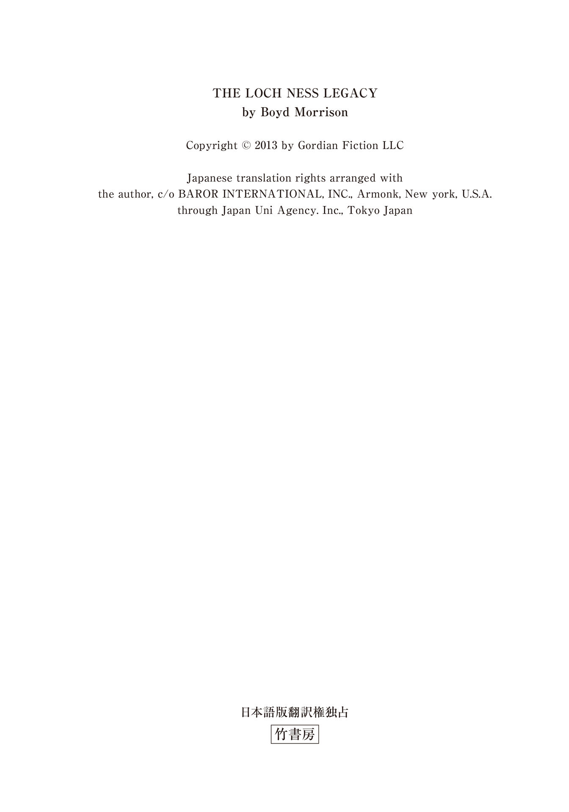
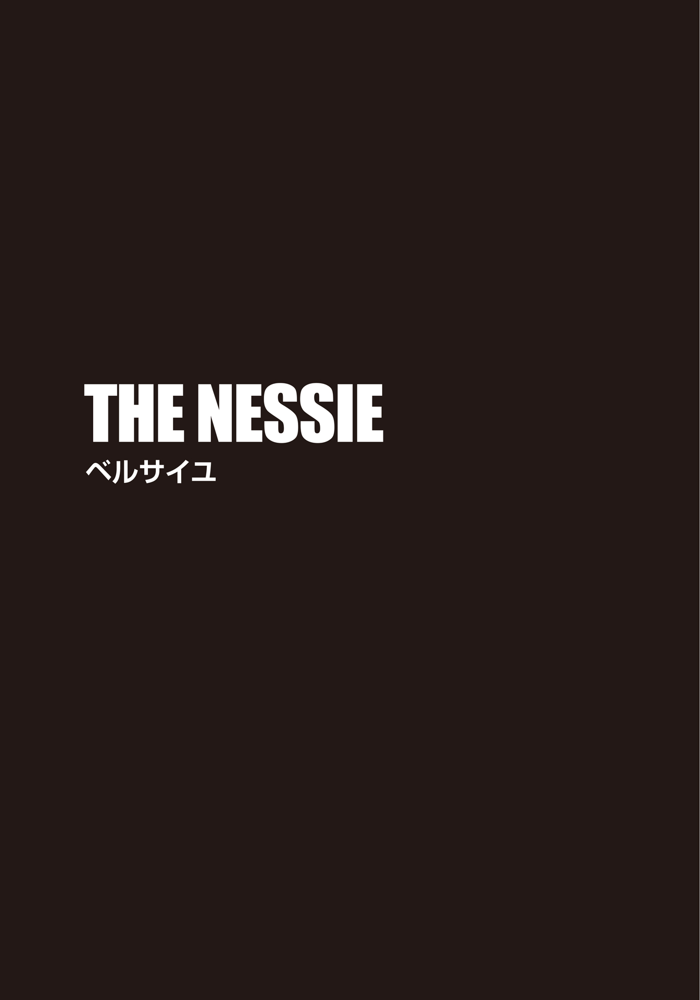
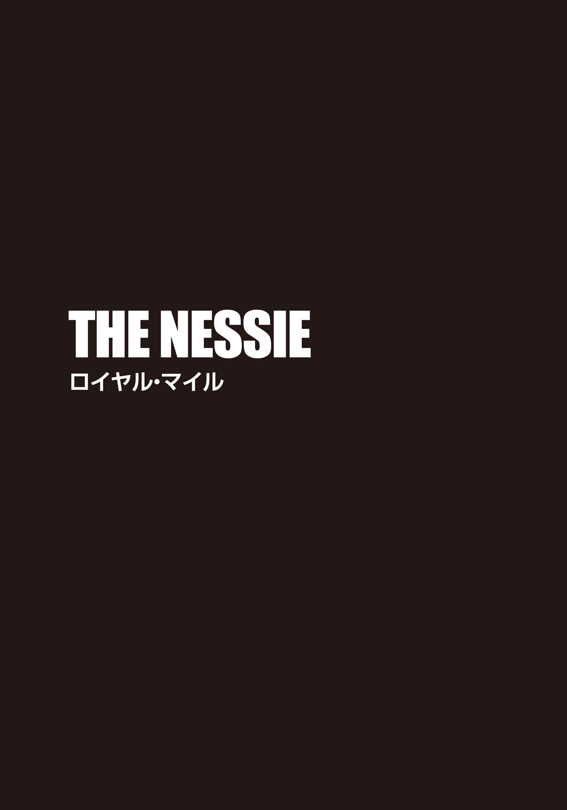
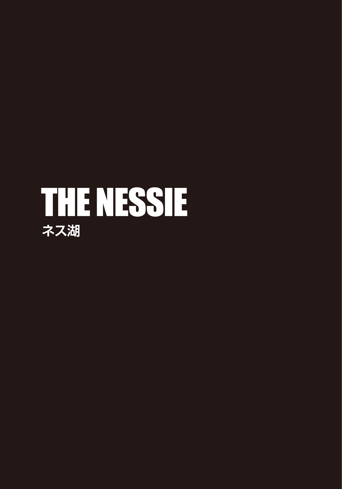

| ＴＨＥ ＮＥＳＳＩＥ ザ・ネッシー 湖底に眠る伝説の巨獣 下 (竹書房文庫) | |
| ボイド・モリソン | |
| 竹書房 (2016) | |
この作品は縦書きでレイアウトされています。
また、ご覧になる機種により、表示の差異が認められることがあります。
一部の漢字が簡略字で表示されていることがあります。

主な登場人物
タイラー・ロック ......世界有数の民間エンジニアリング企業〈ゴルディアン・エンジニアリング社〉の主任エンジニア及び特殊作戦チーフ。
グラント・ウェストフィールド ......〈ゴルディアン・エンジニアリング社〉の電気工学のエキスパート。タイラーの親友。
エイデン・マッケンナ ......〈ゴルディアン・エンジニアリング社〉の情報検索のエキスパート。
マイルズ・ベンソン ......〈ゴルディアン・エンジニアリング社〉の会長兼最高技術責任者。
メラニー・ハリス ......ＦＢＩ特別捜査官。
アレクサ・ロック ......タイラーの妹。研究で世界を飛び回る動物学者。
ガブリエル（ブリエル）・コーヘン ......遺物の探索を専門に行う調査会社の調査員。
ジェフリー・アッシュバーン ......機械工学教授。
オードリー・マクニール ......歴史学者。スコットランド博物館学芸員。
ジェリー・ヨーント ......セドナ号船長。
グレッグ・シンクレア ......ネッシー・シーカー号船長。
アンドレ・ラロッシュ ......フランス出身のユダヤ人大富豪。
マーロ・ダナム ......ラロッシュの第一秘書。
カール・ジム ......白人至上主義者。エッフェル塔を襲撃したテロ集団のリーダー。
ビクター・ジム ......ジムの兄。有罪判決を受けて服役中。
ハンク・プライヤー ......ビクター・ジムの手下。
チャールズ・ダーウィン ......イギリスの自然科学者。
ジョン・エドモンストン ......南アフリカ出身の解放黒人奴隷でダーウィンの友人。
ＴＨＥ ＮＥＳＳＩＥ
湖底に眠る伝説の巨獣 タイラー・ロックの冒険④ 下

ワールドニュース
ロケット攻撃でミサイル防衛アイアンドーム消耗
六月二十日──テルアビブ
二〇一一年に実戦配備されたイスラエルの防空システム〈アイアンドーム〉は、高い迎撃率を誇っているとされているが、この一週間、頻繁に迎撃を繰り返しているため、迎撃用ミサイルが不足し、数日中に、せっかくの防衛システムが機能しない状態になり得ると、軍関係者が明かした。万が一そのような事態が現実となれば、イスラエルの主な人口集中地域が大規模なロケット攻撃に晒 される危険性が出てくる。
イスラエル防衛軍将校の中からは、執 拗 な攻撃にくまなく対処した結果が迎撃ミサイル不足の慢性化を招き、国防の弱みとなるのではアイアンドームの意味がないと、現状を不安視する声も上がっている。今後、敵からの空襲を効果的に防ぐことができない場合、イスラエルは大きな懸念に苛 まれるだろう。それは、イスラム世界で同調する国々から中国製やロシア製の高性能兵器を供給されているエジプト及びシリア軍が、一気に全面的な侵略戦争を開始するという恐ろしいシナリオだ。
ある毒物──イスラエル諜 報 特 務 庁 の諜報員によって処理されたとされているが──でイスラム教国の指導者たちが連続死しているという噂 が広がり続ける中、起こり得る侵略の脅威はもはや軽視できないレベルにまで達しつつある。病原に関する憶測は衰えることを知らないが、発症したら最後、激痛を伴う死に至る症状は手の施しようがなく、医師たちは途方に暮れているという。このまま治療法が見つからないと、犠牲者を出した国は、侵略を目論む敵国に対して反撃もやむなしと考えるようになるだろう。
イスラエルのエリヤ・アルファンダリ首相は、いかなる侵略行為も絶大なる軍事力を持って対処し、侵略を支援した国には報復を厭 わないと声明を発表。この事態下での衝突が中東全土を巻き込んだ戦争に拡大する危険性は高い、との見解を示した。
（文責：ロマーナ・ベネッシュ）
24
フランスの公共鉄道ＲＥＲ（イル＝ド＝フランス）・Ｃ線がベルサイユ＝シャトー駅に入っていく。時刻は午後五時を回っていた。パリ市内の渋滞する道路を苦労して進むよりも、タイラー・ロックは高速鉄道を選択した。その方がいち早く宮殿に到着できると判断したからだ。ブリエル・コーヘンは空港でベルサイユのガイドブックを買い、道中ずっと読書に没頭していた。
いつもなら、ゴルディアン社ＣＥＯマイルズ・ベンソンは、彼らの空の旅に自社ジェット機の利用を快諾してくれるのだが、あいにく、一機はアフガニスタンで、もう一機はメンテナンス中だった。その代わり、タイラーとブリエルは深夜の直行便でシャルル・ド・ゴール空港へ向かい、アレクサ・ロックとグラント・ウェストフィールドはロンドンのヒースロー空港へ飛んだ。フランスに着陸するとすぐに相棒からのメールが届き、無事にイギリスに着き、ケンブリッジに向かう列車の中だという報告を受けた。タイラーたちは荷物を置くためにホテルに寄り、そこでコンシェルジュからベルサイユ宮殿の優待券をもらった。
計画はシンプルだ。彼はブリエルとアポロン像を見つけ、定規を隣に置いて足の写真を撮影。それで、足の正確な寸法がわかる。その写真はグラントにメールで送り、相棒が適した大きさにプリントアウトしてアンドレ・ラロッシュの手紙のコピーと照らし合わせて手がかりを探る。アレクサの方は、ケンブリッジ大学の図書館を調べ、何を入手すべきなのかを摑 む。そこで手に入れた品に、ネス湖の怪物の探し方が記されていることを祈るばかりだ。彼はまた、マイルズ・ベンソンに頼んで、北海で使う予定のゴルディアン社の潜水艇ゴーストマンタをネス湖に回してもらうことにした。
確かにやるべきことはどれも単純だが、頭の中で再度この計画を思い描いてみると、やはりバカげている気がしてならない。メラニー・ハリス捜査官にこの考えを話したとき、彼女も同じように感じていた。ナチスのノートは貴重なもので、ワシントン、ロンドン、そしてフランクフルトで解毒剤の作成を試みている毒物学者のチームに解明のヒントを与えるかもしれない。だからといって、メラニーがフランスあるいはイギリス政府に、架空のモンスターを探すから協力してくれとは頼めない。ＦＢＩには無 駄 骨 を折るとわかっている捜索に費やす時間も金も人力もない、とはっきりと言われた。
またメラニーは、自身の関与から目を逸 らさせるラロッシュの偽装工作だったという考え方もできる、との指摘もあった。ラロッシュがマーロとグルだった場合、彼女は手を組むふりをして裏切り、突飛な話をでっち上げるよう巧みにラロッシュを操っていたとも考えられる。しかしながら、当のラロッシュへの尋問はしばらくできそうもなく、真相はわからない。医師の見解では、金庫に立てこもって降圧剤の服用をやめたことにより、ラロッシュは血圧が上昇、それに心臓発作と脳 震 盪 も重なって昏 睡 状態に陥ったらしい。ラロッシュの昏睡状態がいつ解けるのか、そもそも意識が戻るのかどうかも見当がつかないという。
こんな状況下では、タイラーとてメラニーと同じ気持ちだ。常識から考えて、単なるラロッシュの戯 言 に過ぎない手紙を真に受けて、実際にネッシーを探し出そうとするなんてバカげているのひと言に尽きる。これまでも信じがたい物事を見聞し、経験してきたとはいえ、元来懐疑的な性格ゆえ、このことを受け入れるのは抵抗があった。
しかしながら、今回タイラーが動いた理由は四つあった。ひとつは、解毒剤を作る手がかりが他にないこと。自分で毒物学の学位を取って作成方法を見つけ出すには時間がなさすぎる。二つ目は、マーロとビクターはラロッシュの話に重要な意味があると考えていたに違いないということ。そうでなければ、リスクを冒してアレクサとマイク・ディルマンを拉 致 しようとしなかったはずだ。三つ目は、妹を信頼しているから。彼女も自分と同じ科学者だ。なんの根拠もない伝説を鵜 呑 みにはしない。ネス湖に科学的に解明されていない生物が存在していると示 唆 する具体的な証拠は、今のところ、アレクサの三秒間の動画のみだが、妹が「あの動画は本物だ」と主張するなら、兄として頭ごなしに否定はしたくないとも思う。それに、ラロッシュの手紙の発見によって謎が加わり、自分でもそこに秘められた真実を知りたいと考えるようになったのは事実だ。最後に、四つ目。おそらく、これが一番大きな理由だろう。それは、グラントだ。親友に、非情な死が迫っている。自分の疑心はとりあえず脇に置き、噓か本当かわからないこの話を信じることで、グラントの命を救えるのなら、信じてやろうじゃないか。信じなかった結果訪れる最悪の事態など、恐ろしくて想像もしたくない。
そして今、タイラーは一 縷 の望みを抱いてフランスにいる。深くため息をつき、彼は目の前の計画に意識を集中させることにした。
「どこに行くべきかわかってるか？」
タイラーが訊 ねると、ブリエルは本から顔を上げた。
「ええ。例のアポロンの彫刻は、〝アポロンの水浴の木 立 〟と呼ばれる彫刻群のひとつで、〝ニンフから身繕いを受けるアポロン〟らしいわ。もともとは〝テティスの洞窟〟という人工の洞窟に置かれていたけれど、今は、十二あるｂｏｓｑｕｅｔｓ ──小庭園──のどれかにあるようね。ボスケはフランス式庭園内にある木立。長方形を形作るように樹木が植えられ、その中に空間や彫刻群、噴水に至る道が作られている。彫像の周辺はロープで囲われているから本当は立ち入り禁止なんだろうけど、足の写真を撮るには、ルール違反をして中に踏み入らないとね」
「じゃあ、他の観光客がいなくなるまで待たないとな」
「それはあまり問題じゃないかも。この時間になると、入場するより帰る客の方が多いはず」
ＲＥＲ・Ｃ線の終点ベルサイユ＝シャトー駅に入った列車は振動して止まり、二人はホームに降り立った。到着した列車に乗り込もうと待ち構えていた大勢の観光客を搔 き分け、改札口へと向かう。ブリエルの言う通り、駅は宮殿見物を終えた人々でごった返していた。
ベルサイユ駅を出たタイラーたちは右へ曲がった。ブリエルによると、駅から宮殿までは徒歩で行けるという。通りにはそれほど通行人も多くなく、二人の上に午後の暖かい陽 射 しが降り注ぐ。暖かい昼下がりだったので、タイラーはＴシャツとジーンズ、ブリエルはショート丈のカーゴパンツとゆったりとしたシャツという格好で十分で、しかも、どこから見てもアメリカからの旅行者に見えるはずだ。
道すがら、たくさんのカップルや家族連れとすれ違った。皆、手をつないだり、談笑したりして楽しそうな様子を見て、タイラーはブリエルの肩に腕を回したくなった。しかし、ここに来た理由を考え、自分を戒める。
「ベルサイユ宮殿に来るのは二十年ぶり」
ブリエルは顔を輝かせて言った。「高校生のとき、両親とここに来たの。魔法のような場所よ。エレガントで、感動的で。いつか素敵な人とロマンチックな休日を過ごしに、ここに戻ってくるんだろうなっていつも思ってたわ」
「今回は、それには当てはまらないかな？」と、タイラーは笑みを浮かべる。
「その発言、あなたがどうしようもないほどロマンチックな人だっていう証拠なのか、それとも単にどうしようもなくて言ってるのか、わからないわ。あなたはここに来たことあるの？」
「いいや。カレンは訪れたいと常々漏らしていたが、結局叶 わなかった。生きているうちに連れてきてやれば良かったよ」
「......残念ね」
ブリエルは悲しそうな顔をした。
「ありがとう。俺たち二人とも同じ気持ちだな。もっと違った状況下で来たかったって」
二人は口を閉じ、しばし沈黙が流れた。タイラーが彼女をシャノン湖から連れ出して以来、二人はあくまでビジネスの仲間として行動している。パリ行きのフライトも、ほとんど計画を練るのと睡眠を取ることに費やした。エッフェル塔での一件の後、彼はブリエルに再び会うとは思わなかった。それが、まさかたった三日後にこうやってまた二人で一緒に調査に繰り出すことになるとは──。彼らはパリのホテルで最後のひと時を過ごしたとき、それぞれの道を進むため、別れようと決めた。二人の関係もこれで最後だと。ちょうど、春休みの間だけ燃え上がり、新学期が始まると関係を清算して学業に戻る大学生の男女のように。
「昔、ユダヤ人じゃない男性と出かけたことがあったわ」
ブリエルが前を向きながら言った。「つまり、デートしたってこと。以前、私はユダヤ人かどうかなんてこだわらなかった。結局、うまく行かないんだけどね」
「うまく行かない？」
「そう、最後は別れる。だから、やり直すってことに意味があるかどうか、うまく言えないんだけど、あなたとこうして再会したのは、見えない何かが私たちをくっつけようとしているみたいに感じるの」
そう言って、彼女はこちらを見た。「運命って信じる？」
タイラーは首を横に振った。
「運命に翻弄されるより、自分でコントロールする方がいい」
「じゃあ、あなたって何を信じてるの？」
「この瞬間、自分が生きているってことかな。学んだことがひとつあるとしたら、自分の人生がいつ終わってしまうか誰にもわからないってことだ」
「それって、死ぬのは、単に運が悪いって言いたいの？」
「そうとも言えるかもしれないけど、俺は、〝準備〟と〝好機〟が交わったときに〝幸運〟になるって考えたいな」
ブリエルはクスクスと笑い出した。
「でも、私たちが数奇な運命で再会し、ここに来ているって思わない？ ベルサイユ宮殿への訪問理由は、ネッシーを探すヒントを得るため。で、発見したネッシーの組織を使って、科学者がナチスの超兵器の解毒剤を作り出すなんて」
「そんなふうに言うと、やっぱり、この計画はバカげているように聞こえる。君は、ラロッシュの手紙を真に受けているのか？」
「マーロがネス湖の怪物を重要視してたのは、そこに何かがあるからよ。果たして、私たちがそこで見つけるのがネッシーなのかどうかは定かじゃないけど、とにかく一緒に真相を明らかにしましょう」
彼らが角を曲がると、目の前に、世界史上最高にして最大の宮殿と言われる、ベルサイユ宮殿がその荘厳な姿を現わした。敷地面積はおよそ千ヘクタール。一六八二年にルイ十四世が建てた王宮で、フランスの世界遺産にもなっている。宮殿のみならず造園家アンドレ・ル・ノートルによって造られた広大な庭園も見どころのひとつだ。
馬にまたがったルイ十四世の彫刻を過ぎると、タイラーは目の前に広がる光景に釘 づけになった。丸石を敷き詰めた巨大な中庭を抱くように、石と煉 瓦 の豪華絢 爛 な宮殿が建っている。ファサードにも贅 の限りが尽くされ、スレート屋根のひさしに沿うように繊細な彫り物や金線細工が施されていた。門やフェンスでさえも、金色の輝きを放っている。ラロッシュが自身の邸宅を建てる際、ベルサイユ宮殿の影響を大きく受けていたのは火を見るより明らかだ。
午後の早い時間でもないのに、たくさんの観光客が宮殿に入るために長い列を作っている。
「私たちは宮殿内に入る必要はないから、あの列には並ばないわよ」
ブリエルはそう言って、顎で左の方向を指した。「庭園に入るには向こうへ行かなきゃ」
二人は庭園への入り口でチケットを見せ、中に入っていった。宮殿の外観と庭園の見学は無料だが、大噴水ショーがある期間は入場券が必要になる。
彼らが足を踏み入れたのは裏庭だ。おそらく前庭よりも壮大だろう。見渡す限り、緑の茂みと森が広がっていた。宮殿裏手に敷き詰められた砂利の空間は、二つの長方形の池によって分けられ、その真ん中の道を進むと水がほとばしる噴水に突き当たる。噴水を過ぎ、きれいに刈り込まれた芝生を両側に眺めつつ歩道を進むと、また別の噴水が待ち構えていた。その後ろに伸びているのは、大きな水路だ。この大水路の全長は一キロ半を超え、左右同じ長さになるように細い水路を分けて交差している。広い水面には、手 漕 ぎボートが点々と浮かんでいた。どうやら、ここでは貸しボートに乗ることも可能らしい。
庭園内で乗り物を目にするとは思わなかったので、タイラーはいささか面食らった。ボートだけではなく、庭師が乗るカートや、メインの宮殿とルイ十四世の離宮グラン・トリアノン、マリー・アントワネットが住んでいたプチ・トリアノンを結ぶトラムが観光客を乗せて行き来している。レンタル小型カートが音を上げて脇を通り過ぎ、遠くの方では自転車の一行も見えた。
茂みなどに隠れたスピーカーからは、モーツァルトのコンチェルトが流れている。その軽快な調べが、歩行者の散策に心地よく寄り添う。人々の格好や乗り物が現代的でなかったら、十八世紀にタイムトラベルしたのかと思ってしまうだろう。
ブリエルは手持ちの本に付属していた地図を確認し、顔を上げて右手の木立を指差した。
「私たちの目的地は反対側の方ね」
水際を回り込むように進む道すがら、ふと見上げると、パレスの二階からこちらを眺めている人たちがいた。
「あそこは鏡の回廊ね」
「聞いたことがある。ベルサイユ条約が調印された場所だろう？ いつか宮殿の中もじっくりと見てみたい」
「今日は時間がなかったものね。また連れてきてあげる」
そう言った直後、ブリエルはハッとして視線を逸らした。まるで発言を後悔するかのようなその仕草を見て、タイラーは聞こえなかったふりをした。
木立に挟まれた道に差し掛かった途端、旅行者団体の騒がしい声はほとんど聞こえなくなった。一番近くにいる他の訪問者でも、通りの奥で、四百メートルほど離れている。これほどあっという間に喧 騒 から隔絶されるとは、正直、驚きだ。だが、ほとんどの客は、メインルートから外れてまで観光はしない。クラシック音楽の余韻を引きずりつつ、二人はどんどん奥へと入っていった。
木立の道を歩き続けた彼とブリエルは、緑色のフェンスに囲まれているエリアに行き当たった。フェンスは、深い森の中へ前進しようとする冒険心あふれる訪問者の行く手を塞ぎ、意気消沈させる効果は抜群だった。やっとここまで来たのに、とタイラーが息を吐いたそのとき、どこからかブチ模様の猫が現われた。普段滅多にここに現われない人間に驚いたのか、猫はこちらを見て一瞬立ち止まったものの、慌ててフェンスの下の方に開いた小さな穴を抜け、森へ駆けていった。
「王様のペットかな？」と、タイラーが訊 いた。
「ご近所さんでしょうね。猫にとっては、ここも自分の庭なんでしょうけど。さすがに私たちは穴をくぐれないから、フェンス沿いに別の道を行くしかないわね」
一分ほど歩くと、「次を左」と、ブリエルがまた地図を見て言った。
角を曲がったタイラーたちは、唐突に足を止めた。今度は、黒い鉄の門で歩道が閉鎖されていたのだ。門には、「Le Bosquet des Bains d, Aopollon est fermé 」と書かれたボードが張っており、その下には、「アポロンの水浴の木立閉鎖中」という翻訳文もあった。
「閉鎖中!? 君の本にはこの情報が載ってなかったのか？」
タイラーに問われ、ブリエルは「何も」と、首を横に振った。「おそらくメンテナンス中なんだわ」
彼は鉄の門をしげしげと眺めた。高さは二メートル。鉄枠の上部には、短い棘 が並んでいる。
「乗り越えて中に入るぞ。いいか？」
ブリエルは周囲を見回し、「五分で行って戻ってくれば、きっと気づかれない」と、答える。
「中で作業している人間がいるってことは？」
「土曜日に？ それはないでしょう」
彼女はそう言い終わるか終わらないかのうちに、横棒に足を掛け、鉄門を登り始めた。
ライル・ポンダーは、連中がアポロンの水浴の木立に通じる門を登り始めたのを見て、ポケットから携帯電話を取り出した。彼の後ろでは、ノーム・ローンガンが待っている。
最初の呼び出し音で相手が応答した。
〈どうした？〉と、ビクター・ジムが言った。
「奴らが今、中に入りました」
〈本当にあいつらか？〉
「間違いありません」
〈誰かに見られたりしていないな？〉
「大丈夫です」
ポンダーは、上着の中の拳銃を触りながら答えた。彼はメインゲートの外から、ずっとタイラーとブリエルを見張っていたのだった。二人がまっすぐ庭園に向かってくれたときは、ホッとした。万が一奴らが宮殿の中に入ってしまったら、自分とローンガーンは金属探知機に引っ掛かり、尾行は難航しただろう。
〈よし。実行しろ〉
ビクターは命を下した。〈どこから銃弾が飛んできたのか警察が突き止める頃には、もっと厄介な事態になるだろうな〉
電話の向こうで、ビクターの小さな笑い声が続いた。
25
ケンブリッジ大学図書館本館の外に停めた黒のレンジローバーで、マーロ・ダナムは連中が現われるのを待っていた。タイラー・ロックにしろ、お仲間にしろ、訪ねてくるなら、ここだろうと踏んでいた。すると、ビクター・ジムから連絡があり、タイラーとブリエルがベルサイユ宮殿に現われたと報告を受けた。そうなると、ここにやってくるのは、グラント・ウェストフィールドとアレクサ・ロックに違いない。ビクターによれば、アポロンの彫像を破壊する準備はできているという。ラロッシュは、ベルサイユ宮殿にある噴水や彫像をコンピュータで立体的に描き出し、自分の敷地に複製を作っていた。ビクターは、その３Ｄレンダリング技術を利用し、どこに爆弾を設置すればいいかを正確に知っていたのだ。
マーロの隣、運転席にはロングヘアの男がいる。名前は覚えていないが、重要なことではない。後部座席にも手下が二人座っていた。
ここで獲物をじっと待っていられるのは、ラロッシュのおかげだ。彼は監禁部屋から逃げ出したものの、アラームを作動させず、マーロにも気づかれずに屋敷から出ることはできないとわかっていたはずだ。それでも、パソコンで手紙を書き、ちょっとした暗証番号を作る時間はあったらしい。彼が金庫に立てこもった後、マーロはラロッシュがゴミ箱に捨てたと思っていたファイルを見つけ出し、あっさりと再現したのだった。
自分と男たちが携帯している銃は、地元の白人至上主義者たちとのコネクションを使って入手したイタリアからの密輸武器だ。ネオナチの地下ネットワークのおかげで、武器の入手は驚くほど簡単になっている。値段は張るが、金なら山ほどあった。
もし彼女の望みが、仕事を辞めて、ビーチでのんびりと過ごす余生だったなら、密 かにラロッシュの資金から横領していた現金を持って、数ヶ月前に実行していただろう。あの間抜けな雇い主は、マーロに絶大な信頼を寄せるあまり、自分の鼻先で第一秘書が大金をくすねているなど夢にも思わなかった。彼女はパソコン上の台帳に自由にアクセスできたため、帳簿の中身を書き換えていたのだ。
しかし、ただ仕事を辞めても、安全は確保されない。確固たる安全を手に入れるまで、隠居生活はお預けだ。かつての恋人だったケンが、ガザ地区の人々がどれだけ邪険な人間か、イスラエル人がいかに無慈悲かを知っていたら、自分とお腹の中の子供をあんな最悪の場所に連れていかなかったと思う。彼は紛争をやめさせたいと考えていたし、彼女もそう願っていた。だからこそ、この計画で、それを現実のものとするのだ。イスラム国家は、ついに自分たちが求めていたもの──イスラエル殲 滅 への正当な理由を持つことになる。
それを可能にする鍵こそが、アルトヴァッフェだ。その毒性が自ずと事態を然るべき方向に導いてくれるはず。イスラム教国の指導者たちがバタバタと死ねば、もう引き返すことはできない。火 蓋 は切られて平和的解決は望めなくなり、悪名高い史上最悪の戦 が勃発する。イスラエルは、その気さえあれば敵国の指導者たちを排除するのも厭 わないはずだ。自分は少しだけ背中を押してやればいい。
今、目の上のたんこぶとなっているのは、ロック兄妹とその仲間たちだ。彼女の夢を壊そうとする奴らを止めなければならない。連中は図書館の本を探しに来るだろうが、マーロはそれが何の本なのかまではわからないでいた。アレクサの好きな動物がヒントだと言われても、全く見当もつかない。だから、まずアレクサたちに図書館で本を見つけ出させ、その後、ケンブリッジ市内で二人を始末する。もしビクターがベルサイユ側を片づけられなかった場合、彼に借りを作らせ、自分がまとめて面倒を見ることになるだろう。
白 髪 交じりの頭に、顎にはもじゃもじゃの髭 をたくわえたジェフリー・アッシュバーンは、ずっと上機嫌だった。グラントたちが車に乗り込んでからというもの、にこやかに街の解説をしてくれている。興味深い話を聞けるのはいいのだが、とにかくノロノロ運転で、動作もどこか緩慢だ。彼のマイペースさにやや苛 つきつつも、グラントは作り笑顔でうなずいていた。アレクサが生物学者で、チャールズ・ダーウィンの資料探しに図書館に訪れると聞いたアッシュバーンは、ケンブリッジ駅からの車での道中は、歴史的な建物や背景を紹介する絶好の観光ルートだと考えたらしい。ケンブリッジ大学ダーウィン・カレッジは、かの偉大な科学者の名前から取ったもので......と、長々とした説明を聞きながら、グラントは気もそぞろで後部座席に身体を沈めていた。空の旅で腰は硬くなり、血圧が上がったのか頭がズキズキする。さっさと図書館に行きたいのだが、アッシュバーンは先に街の中を見せたいと言って聞かなかった。確かに魅力ある街だということは認める。細長い裏通りに並ぶ由緒あるティールームや趣のある老舗 。壮麗な石造りの建物。狭い川沿いの緑の芝生。川に浮かぶ観光客を乗せた平底船 。ケンブリッジ名物の川下りパンティングでは、船尾に立つガイドが、五メートルほどの細長いポールでボートを操 り、川から眺める風景に説明を加えてくれるという。その様子はベネチアのゴンドラを彷 彿 とさせたが、黒い帽子にストライプのシャツを着たゴンドラの船頭とは違い、パントのガイドはＴシャツに短パンというカジュアルな装いの青年が多かった。
ゴルディアン社は、機械工学の教授アッシュバーンの研究資金を提供している。彼が研究しているのは、低公害車の動力となる高エネルギー蓄電池。大学の有名なソーラーカーのレーシングチームにもひと役買っているらしい。グラントとアレクサがいきなり図書館を訪ねたとしても、二人だけでは図書館所蔵の最古の文献を見せてもらうことなどできない。そこで、アッシュバーンに保証人になってもらうことにした。そういう経緯もあって、ベルサイユ宮殿のタイラーから連絡を受け取るまでの間、アッシュバーンに思う存分観光ガイドをさせておくと決めたのだった。
「すでに知っていると思うが」
アッシュバーンが肩越しに言った。「ケンブリッジは、ボローニャ、パリ、オックスフォードに次ぐ、世界で四番目に古い大学だ。オックスフォードに負けたのは、悔しいところだが」
ケンブリッジ大学とオックスフォード大学は、イギリスが誇る名門大学で、二校合わせて〝Ｏｘｂｒｉｄｇｅ 〟と称されるが、何かにつけて比較されることが多く、ライバル関係にあるようだ。
教授はさらに話を続けた。「めまぐるしく物事が変化していく今の時代に、誇れる歴史を持っているのは大切だ。エッフェル塔のおぞましい攻撃や、先週、金融引き締め政策に抗議してウィンザー城内の壁にスプレーで落書きした不届き者たちのことを考えると、我々の学校が時の試練に耐えていると知るのは、励みになる。数年前に、ケンブリッジ大学は創立八百年を祝った」
「それは素晴らしいわ、教授」
助手席に座るアレクサがそう返した。会話の楽しさを強調してアッシュバーンの腕を叩 いている。彼女は相手を持ち上げるのがうまい。ただそれだけのことなのに、グラントは少しジェラシーを覚えた。教授に気のあるそぶりを見せていると思ったからではなく、気のあるそぶりを見せているのかどうか定かではないせいだ。
グラントはあくびをした。不眠症とは無縁だった。いつでもどこでも眠れるのが特技と豪語していたくらいだ。フライトの間、アレクサは自分の肩にもたれ、ぐっすり寝込んでいたが、グラントは全く睡魔に襲われなかった。山ほど時間があった彼は、自分の身体に回った化学兵器の毒が今後どのような悪さをするのか、あれこれ考えてみた。体力や免疫力が低下し、日常生活に支障をきたすようになるのだろうか。すでに体調の変化は感じ始めている。そして、どのくらいの速さで自分を蝕 んでいくのか。しかし、解毒する術 も発症を遅らせる方法もないのが現実。グラントは、無力な自分が腹立たしかった。
「ロック博士、君はダーウィンの専門家だそうだね」
アッシュバーンにそう言われ、「お願いだから、アレクサって呼んで」と、アレクサは照れくさそうな笑みを浮かべた。「生物学者なら、皆、ダーウィンの理論を熟知しているわ。でも、私の専門は絶滅危惧種なの」
「なるほど。で、今回はどんな研究で我らが神聖な学びの殿堂へ来たのかね？」
その質問に、アレクサはグラントに目配せをした。なんと答えるべきかと訊 ねているのだろうが、彼は首をすくめてみせるしかなかった。
「実は、ダーウィンがスコットランド時代に行った研究を調べていて......」
「ほう。エジンバラ大学時代かな？ それともグレン・ロイの地質調査について？」
アレクサは気まずそうにシートベルトをいじっている。工学博士からダーウィンについてそんなふうに切り返されるとは思わなかったのだろう。「ずいぶんダーウィンについて詳しいのね」と、質問に答えるのをごまかした。
「我が校出身の天才はどの人物も魅力的だ。チャールズ・ダーウィンはもとより、万有引力の法則を思いついたアイザック・ニュートン、ＤＮＡの二重螺 旋 構造を発見したフランシス・クリック。世界で初めてプログラム可能な計算機を考案し、〝コンピュータの父〟と呼ばれるようになったチャールズ・バベッジ。私もいつの日か、彼らと肩を並べられたら、と思う。うちの大学のキャベンディッシュ研究所に、新しくマクスウェルセンターが造られたんだが、マクスウェル方程式で知られるジェームズ・クラーク・マクスウェルの名前が付けられている。そんなふうに将来、私にちなんだ建物が建つのが私の夢でもあるんだ」
そこまで一気に話した後、教授はバックミラー越しにグラントを見た。「建物の話が出たところで、ミスター・ウェストフィールド、図書館での用件が済んだら、是非私の研究所も案内させてくれ。学生たちが研究開発の成果を自慢したがっているんでね」
「そりゃあ、どうも。喜んで見学させてもらいます」
彼はぎこちない笑顔を見せた。「あと、俺のことはグラントと呼んでください」
「では、私はジェフリーと呼んでくれ。今夜のレースで実験車を走らせる。もし良ければ、泊まって見学してくれても構わない。もちろん無理強 いはしないがね。レース場は町外れだ」
言葉とは裏腹に、思い切り無理強いされている気がする。
「そうですか。時間があれば、是非......」
「素晴らしい。それで、だ。ロック博士、君が興味を持っているのは、ダーウィンのグレン・ロイへの地質調査についてだったね？」
アレクサに助け舟を出すつもりで、グラントは口を挟んだ。
「グレン・ロイで何があったんですか？」
アシュバーンが不思議そうな顔をしたので、彼はさらに付け加えた。「彼女が何を調べてるのか、さっぱりわからなくて。俺は単なる付き添いなんで」
バックミラーに映る教授は、アレクサを一 瞥 し、グラントを見た。「なるほど」
「ええ、グラントは私の恋人で、今回のリサーチにどうしても同行したいって言うから」
思わぬ発言に、グラントはぽかんと口を開けてアレクサを見たが、どういうつもりなのか、彼女はこちらにウィンクをした。
アッシュバーンは咳 払 いをし、「なるほど」と再びひと言だけ返した。
「俺たちはただの友人です」
彼が慌てて訂正すると、アッシュバーンは驚きと困惑が入り混じった表情をし、アレクサはショックを受けたのか、悲しげな顔になった。そこで彼はため息をつき、己を落ち着かせてこう付け加えた。「俺たち、つまり、彼女の兄とは友人であり、同僚なんです。タイラー・ロック。ゴルディアン社のチーフエンジニアですよ」
「ああ、そうとも！ アレクサ・ロックだったね、君は」
助手席をちらりと見やった教授は、納得したように膝を叩いた。「そのつながりに気づくべきだった。彼によろしく伝えてくれたまえ」
「ええ、伝えます」
グラントはうなずいた。「じゃあ、グレン・ロイとやらについて教えてください」
ダーウィンのスコットランド訪問がネス湖の怪物と関わりがあるのなら、何か手がかりがあるのかもしれない。彼は是非聞いておきたかった。
「測量船ビーグル号でダーウィンが世界各地を回った後──」
解説を始めたのはアレクサだった。「彼は集めたデータの分析に二年を費やした。それって、ダーウィンが『種の起源』を執筆する二十年以上も前なの。次なる目的地は、コンゴのジャングルかサハラ砂漠か、と思われたけれど、彼はスコットランドのハイランド地方に向かったわ。グレン・ロイは山の中腹に平行な道が三本走っていることで有名なんだけれど、その理由を調べて論文を書くのが目的だった。データを集めて数週間を過ごしたダーウィンは、その谷はかつて大西洋の入江だったところで、三本の平行路は、土地が隆起して海水面が下がったときに形成された海岸線の跡だと結論づけたの」
「ところが、だ」
アッシュバーンがアレクサの後を続けた。「それは彼の科学者としてのキャリアの中で、最大の誤りだったと判明する」
「なぜ？」と、グラントが眉をひそめると、アレクサがこちらを向いた。
「実は、氷河が谷の端を塞いでいて、そのせいで千年以上、堰 きとめられた水で湖ができていたの。だから、平行した三本の道は、海岸線ではなく湖の跡だったというわけ。ダーウィンの説は完全に間違っていて、これは彼のキャリアにとって恥ずべき材料となったわ」
教授が運転する車は、大きな煉 瓦 造りの建物の前にある駐車スペースへと入っていく。中央に塔を持つ印象的な建造物だ。三人は降車し、正面玄関へと歩いていった。
「私は中まで一緒に行き、図書館司書に君たちを引き合わせるよ」
そう告げるアッシュバーンに、グラントは訊ねた。
「グレン・ロイは、正確にはどこにあるんです？」
「ネス湖の南東に位置している」
「ネス湖でも同じことが起こっていたりするのかな？ 氷河が水を堰き止めてたって可能性は？」
「あり得るわね」
アレクサがそう答えた。「それで外洋から隔離されていた可能性はある。ダーウィンが探検でネス湖の奇妙な生物を見つけたのなら、その生き物が彼の進化論を立証するか、あるいは否定するだろうと思ったかもしれない」
「ああ、おそらくダーウィンはネッシーの祖先を探していたのかもな」
そう言ったアッシュバーンがゲラゲラと笑い出したので、アレクサとグラントは顔を見合わせた。それから彼は、教授に合わせるように空 笑いをし、彼女も慌ててそれに倣 う。
「いやあ、笑わせるなあ」
グラントは頭を搔 きながら言った。「ダーウィンがネス湖のモンスターを探してたって？ バカげてる」
「君たちのリサーチを軽んじたつもりはなかったんだよ、ロック博士」
二人のために扉を開いてくれたアッシュバーンは、バツが悪そうな顔をしている。「謎の化け物よりずっと真面目なことを調べるんだろうに」
三人は建物の中に入ったが、自分だけが笑っていることに、アッシュバーン本人は気づいていないようだった。
26
庭園に咲き誇る花々のかぐわしい香りが漂い、澱 んだ水の悪臭を覆い隠している。二人して木 立 の中央の空 き地に入っていくと、ブリエルの目には、ここの噴水は数ヶ月稼働していないように見えた。彫刻群の前の池が、藻で緑になっている。彫像たちは、ほぼ前回の訪問時に記憶していた通りだった。ラロッシュの裏庭にあったのと同じ三つの彫刻は、洞窟に見立てた大きな岩石の左右と中央に置かれている。メンテナンス中でなければ、水が幅広の台座から滝のように流れ落ち、遠目には、まるでゴツゴツした岩石の顔のように見えるのだ。左右の像は、アポロンの馬の世話をする馬 丁 で、真ん中の彫刻は、アポロンを水浴させるニンフたちの日課を表現している。ニンフのひとりは彼の右足を洗っているのだが、シアトルのラロッシュ邸にあったものは、まさにその足が欠けていた。中央の彫像の周囲には、足場が組まれてあり、苔 で覆われたファサード部分がきれいに磨かれたのがわかる。足場の一番上の鉄棒に括 りつけられたロープからは、バケツが吊 り下げられていた。
木立の中には、今、彼女とタイラー以外いない。彼はポケットから携帯電話とメジャーを取り出した。
「すぐに終わりそうだな」と、彼は前に進んでいく。
池の端にたどり着いた二人は、中央の彫刻を目指して岩場をよじ登った。アポロンとニンフの像の隣に立ったとき、ブリエルは正面からは見えなかった裏側の細部まで繊細な彫り物が成されていることに目を見張った。
「すごいわね！」
「この場所はどこも素晴らしいのひと言に尽きる。ラロッシュが自分の祖先の文化を誇りに思っていたのも納得だ」
それからタイラーはメジャーを差し出して頼んだ。「ここだ。足の隣でこれを押さえて」
メジャーを受け取った彼女はひざまずき、それを引き出してアポロンの足の裏の外側部分の長さを測った。
「完璧だ」
タイラーはブリエルの後ろに回り、写真を何枚か撮影した。「これでよし、と」
彼女はメジャーをしまって立ち上がり、その場から離れようとした。ところが、タイラーはまだ足を見つめ続けている。
「どうかした？」
「寸法に違和感がある。ラロッシュの書いたものを見せてくれないか」
ブリエルは例の紙切れをポケットから取り出し、開いてから彼に渡した。タイラーはそれをアポロンの伸びた足の下に置いた。
「ホッキョクグマとタテゴトアザラシの染色体の数はいくつだっけ？」
彼女は携帯のメモを確認した。
「七十四と三十二よ。でも、なぜ？」
「それらの数字が一列に並んでないんだ。ほら、見てみろ」
ブリエルは身を屈 め、紙切れを覗 き込む。数字がたくさん書かれている、手紙の裏側の方だ。七十四の隣の点は親指と合っているが、三十二のそばの点は、小指の近くには見当たらない。彼女は顔をしかめてタイラーを見た。彼もまた困惑しているようだ。
「やっぱりラロッシュは、俺たちに無 駄 足 を踏ませただけだったのか......」
「ただのイタズラだったとしても、ここまで手の込んだことをラロッシュがするかしら」
「実はネス湖の怪物を追わせないよう、俺たちを空 回 りさせたかったのなら、あり得る。その手紙には、〝太陽王のアポロンの足跡〟とはっきりと書かれていた。で、彼は自分の庭のアポロンの足を切り落とした。ここに、他のアポロンの像でもない限り、ラロッシュのハッタリだったことになる」
その言葉に、ブリエルはハッとした。
「ちょっと待って！」
彼女はポケットからベルサイユ宮殿のガイドブックを取り出した。
「どうした、急に？」
「他のアポロンの像、もう一体あるのよ。こっちだとばかり思ってて、そこまで気が回らなかった」
パラパラとページをめくっていくと、その写真が出てきた。古代のひとり乗り用二輪戦車に乗るアポロンのブロンズ像。四頭の馬に引かれた彼が、勢いよく水から飛び出す様を表現した、躍動感あふれる一体だ。今にも駆け出しそうな雄馬たちの周りには、魚や角笛を吹く海の神トリトンも配されている。写真の解説文には、〝アポロンの噴水〟と書かれていた。
「ラロッシュは囚 われの身となり、マーロが金庫の開け方を探り当てるのはではないかと不安だったわけでしょ」
ブリエルは考えをまとめながら話した。「おそらく、ここでもラロッシュは彼女を煙に巻こうとしたのね。彼の暗号を解かれないように」
「とにかくそっちのアポロンの足のサイズを確認してみないと。それはどこにある？」
「大水路の正面をまっすぐに行ったところに位置しているわ」
彼女は地図を指でなぞってみた。
「写真を見る限り、アポロンの足を間近に見るには、噴水の中に入り込まないと無理そうだ」
ブリエルは首をすくめた。
「最悪の場合、何が考えられる？ ここからつまみ出される？」
「あるいは、不法侵入で逮捕されるかも」
「警備の気を逸 らせばいいわ」
タイラーは笑みを浮かべた。
「君が噴水に落っこちれば済む」
「まあ、私のロマンチックな夢がもうひとつ叶 いそうね。ベルサイユ宮殿の庭園にある噴水に飛び込むなんて」
彼女が笑いながら岩場から降りようとしたそのとき、タイラーが「おやおや、またコソ泥猫のお出ましだ」と、ぼそりと言った。
「え、猫なんてどこにも──」
ブリエルが辺りを見回そうとした矢先、タイラーに腕をぐいと摑 まれ、彫像の裏手に引っ張られた。それとほぼ同時に、数発の銃弾が岩肌を削って跳ねた。
「なんてこと！」彼女は叫んだ。
「ビクターの手下だ」
タイラーはアポロンの背後で身を屈めている。「この木立に入るのを見られていたに違いない」
「ここに来るってこと、どうやって奴は知ったの？」
「おそらく、猫のように狡 猾 なあの女がビクターにバラしたんだろう。奴は俺たちを待ち伏せ、ここから出ていくときに始末しようとしていたんだ」
「敵は何人？」
「わからない」
「この状況じゃ、私たち身動きが取れないわ」
ブリエルは眉をひそめた。今は彫刻が遮 蔽 物 になっているものの、岩場の突き当たりで、ここから一歩でも出れば、敵に丸見えだ。
「連中が距離を縮めれば、ますます逃げられなくなる。早く行動しなければ」
「何かアイデアはある？」
辺りを見回したタイラーは、吊るされているバケツに目を留め、ロープに沿って視線を上げていく。
「まさか、ロープを伝って足場の一番上まで登るつもりじゃないでしょうね!? 」
彼女は目を剝 いた。「連中の拳銃じゃ、そこまで正確な命中率ではないだろうけど、あんな高いところで全身を晒 すなんて。敵が撃ちまくれば、当たってしまうかも」
「いや。ターザン流にこの窮地を脱する」
そう言うなり、彼はバケツからロープを外し始めた。「ロープを摑んで勢いをつけて飛べば、向こう側の足場まで行ける。そこから茂みにすばやく入り込むんだ。木立を抜けて広い場所に出られたなら、連中も発砲しながら追ってくることは無理だ。誰かに気づかれるだろうからな」
「本気で言ってるの？」
「君が短パンの中にスミス＆ウェッソンの拳銃を隠し持っていれば、話は別だ。そうでないと、この銃撃戦は一方的な展開になる」
警察を呼ぼうと言いかけた途端、次の銃弾が彫像をかすめて、ブリエルはその考えを却下するしかないと悟った。警察が来ても自分たちの死体を発見するだけだ。
「わかった。生き残れる可能性が高い方を選びましょう」
彼女はタイラーの目を見てうなずいた。「この足場の鉄骨、私たち二人の体重を支えきれるかしら」
「わからん」
「一か八かってことね。いいわ、行きましょう！」
タイラーはロープを握り、手首に巻きつけていく。だが、どう見てもブリエルが摑めるほどロープは長くない。
「ちょっと待って。このロープ──」
「早くおぶされ」
タイラーはひざまずき、こちらに背中を見せた。
「え!? 私をおんぶして飛ぶの？」
「君はそれほど重くなさそうだ。なんとかなる」
「それほど重くなさそう、ですって？」
彼女はしかめ面をし、アポロンの腕の隙間から敵の動きを探った。男のうちひとりが、岩場の横の方へと走ってくる。そうしているうちに、別の男が再び銃を撃ち、弾が岩壁を穿 った。
「君は軽い！」
彼は怒鳴った。「だから、早く背中に乗れ！」
タイラーの背中にしがみつき、彼女は「それなら許す！」と返した。
彼は岩場の奥から一気に走り出し、高台の端からジャンプをした。二人の身体は宙に投げ出され、ロープがピンと張る。ブリエルは風を感じると同時に、銃弾が顔の横を通過する熱と音を捉え、ゾッとした。ロープは大きくスイングしたが、もし長さが足りなかったり、揺れが不十分だったり、足場が崩れたり、途中で手を離したりしたら、彼らは池に落ち、敵に蜂の巣にされてしまうだろう。
しかし、ブリエルの不安をよそに、足場は頑丈で倒れもせず、彼らを乗せたロープは、大きなアーチを描いて左側の彫像の方へと向かっていった。
「着地したら、走れ！」
タイラーが大声で指示をした。
ロープは弧 を描き終わり、タイラーは林から数メートル手前の岩場で着地した。ブリエルは彼の背中から降りるや、全速力で駆け出した。二人が茂みにダイブすると、すぐ背後の葉っぱや枝に銃弾が当たるのがわかった。振り向きも立ち止まりもせず、彼らは足を動かし続け、外側のフェンスに行き着いた。タイラーがブリエルを持ち上げてフェンスを越えさせ、それから彼もよじ登った。二人して地面に降り立つと、その場をたまたま通り掛かった老夫婦が目を丸くしている。
「Qu, est -ce que c, est ......？」
きょとんとしている老婦人に、タイラーは「Bonjour 」と微笑み、ジーンズの砂 埃 を払った。それから、片言のフランス語で話しかけた。
「Oú est les toilettes ,s,il vous plait ？」
連れの男性が黙ったまま、宮殿の方角を指差した。
タイラーはブリエルの手を摑み、それとは反対の方向に走り出す。後方で老夫婦が何やら叫んでいる。おそらく方向が間違っていると指摘してくれているのだろう。
彼と並んで走りながら、ブリエルは訊 いた。
「トイレの場所を聞いたんじゃないの？」
「あれしかフランス語のまともなフレーズを知らなかったんだ。それに知っておいて損はないだろう。とにかく、先に例の噴水に行く必要があるが」
突然、角を曲がって警官が二人現われたので、ブリエルは咄 嗟 に怯 えたふりをしてかけ寄り、アポロンの水浴の木立で何者かが発砲していたとフランス語で訴えた。警官のひとりは無線機でどこかに連絡を取り始め、もう片方はホルスターから拳銃を抜き、アポロンとニンフ像がある方へと向かっていく。
タイラーとブリエルはその場を警官たちに任せ、走り続けた。彼女は肩越しに、ビクターの手下のうちのひとりが、フェンスを越えてきたのを見た。だが、その男が降り立った前に、ちょうど拳銃を構えた警官が待ち構えていた。もう一方の手下──ボサボサのブロンドヘアに破れたジャケット姿の男──は、片割れが警官に職務質問されるのを見て、フェンスを登るのをやめてもといた地面に降りたが、尻もちをついて銃器を落としてしまった。無線連絡を終えた警官がフェンスをよじ登り、逃げ出した男を追いかけていく。
「なんとかこの場は切り抜けられたみたいね」
ブリエルは安 堵 の息を吐いた。
彼らはさらに走り、次の角を曲がった。その小道は庭園の大通りへとつながっている。大通りに入ったところで、さっきのブロンド男がフェンスを越えて現われ、大水路の方へ猛ダッシュしていくのが視界に入った。あまりに急いでいて、タイラーとブリエルには気づいていないらしい。続いて、あの警官も出てくるのかと思ったが、一向にその気配がない。どうやら途中で逃走犯を見失ったようだ。
大通りに立ったブリエルの目は、数百メートル先のアポロンの噴水を捉えた。いくつも細い水柱が上がり、彫像全体が水しぶきや霧状のミストで包まれて実にダイナミックだ。これから何が起こるかなど何も心配していない無防備なツーリストたちが、目を輝かせて雄々しい彫刻と美しい噴水のコラボレーションに見入っている。遠くで鳴っていた先ほどの銃声は、喧 騒 に搔 き消されていただろうし、銃撃の目撃者もいない。しかし、あのブロンド男がどこへ行くつもりなのか、ブリエルには見当もつかなかった。
そのとき同じ方向から、何かの音が聞こえてきた。太陽光を反射しながら、シルバーの飛行機が低空で飛んでいる。高度が異様に低い。パイロットは墜落する気なのか。陽 射 しがまぶしく、彼女は二回瞬 きをした。そして、起ころうとしていることが事故ではないと察知した。
滑空していた飛行機は、明らかに着陸しようとしている。一体どこに？ 見るみるうちに高度を落とした機体は、なんと大水路に迫ってくるではないか。あれは水上機だ。水上でボート遊びに興じていた観光客たちは、船を脇に寄せようと必死に漕 いでいる。飛行機は滑らかに水路に降り立ち、端まで来ると旋回した。ほどなく助手席の扉が開き、中から誰かが姿を現わした。
彼女とタイラーは驚 愕 して足を止めた。あたかも己の統治国を眺める王のように、水上機のフロートの上で笑みを浮かべるその男は、他でもないビクター・ジムだった。
27
ビクターが水上機のフロート部分に降り立つや噴水の方へと駆け出すのを見て、タイラーは目を剝 いた。
「あいつ、何をするつもりなの？」
そう問うブリエルに、彼は「たぶん、俺たちと同じことをしようとしている」と答えた。「これで、あの噴水が俺たちの行くべき場所だという君の説は正しいことがわかった」
警官が運転している電動カートが交差する小道から現われ、彼らの横で止まった。警官はカートから降り、水路でアイドリングしている水上機を眺めながら無線連絡を始めた。それを見た彼は、ブリエルに目配せしつつうなずく。彼女も首を縦に振り、二人は急いでカートに駆け込んだ。運転席に座ったタイラーがアクセルを踏み、電動カートは快適に走り出した。カートを乗っ取られたことに気づいた警官が、何やら怒鳴りながら追いかけてきたものの、長い大通りの途中で諦めたようだった。どうせどこかの無作法な旅行者だと思い、そこまで真面目に追跡する意味がないと判断したのだろう。
タイラーはビクターから目を離さなかった。奴はアポロンの噴水にたどり着くや、全く躊 躇 せずに水の中へと入っていく。周りの客たちは、噴き上がる水を被 って黙々と直進する奇妙な男を指差したり、面白がってその様子を写真に収めたりしていた。しかし、当のビクターは見られていることなど全く気にしていない。噴水中央の小型戦車に座るアポロン像のところまで行くと、奴は身を屈 めた。何か手に持っているように見える。おそらくタイラーたちが行おうとしていたように、写真を撮っているに違いない。
「ビクターは俺に任せろ」
タイラーはブリエルに言った。「君は写真を撮影し、グラントに送信するんだ。警官に取り囲まれるまで、何分あるかわからない」
騒動を察知したかのように、突然音楽がやみ、敷地内にアナウンスが響いた。フランス語、それから英語で言葉が繰り返されていく。
〈ベルサイユ宮殿で事故が起きました。速やかに避難してください。一番近い出口から外に退場願います〉
しかしながら、このような避難指示はすぐには真に受けてもらえないものだ。大勢の客たちはアナウンスを無視し、現在進行形の出来事を見物し続けている。
ビクターは目的を果たしたらしく、噴水から出ようと悠々と歩いてくる。大水路へ戻る気なのだろう。タイラーが肩越しに見ると、あのブロンド男が水上機に飛び乗ったのがわかった。
電動カートが噴水の前に着くや、ブリエルは飛び出して水の中へと入っていった。タイラーはそのままカートを走らせ、噴水の裏側へ回り込む。そこでは、ビクターがちょうど水から上がるところだった。タイラーは奴に狙いを定め、カートを走らせた。このまま体当たりできればと期待したのだが、ぶつかる直前、こちらに気づいたビクターは反射的に一歩脇に飛びのいた。
スピードを出していたカートのブレーキを踏み、タイラーは瞬間的に伸ばした手で敵のシャツを摑 んだ。カートは即座には止まらず、彼は手を離さなかったため、身体がカートの外に引っ張られる形となり、二人は地面の上を勢いよく転がっていった。くんずほぐれつしつつも、ビクターは上着から拳銃を引き抜いた。銃口がこちらの頭に向けられるよりも先に、タイラーは銃身を摑んで向きを変えさせる。次の瞬間、引き金が引かれ、見物人たちが悲鳴を上げながら散っていった。タイラーはそのまま渾 身 の力を込め、相手の手首をグイと捻 り上げた。拳銃はビクターの手から飛んでいき、地面の上に落ちてカートの下へ潜り込む。
「地獄へ堕ちろ！」
ビクターは凄 みを利かせ、こちらのこめかみをギリギリと締めつけてきた。想像以上の握力で、タイラーの頭の中で嫌な音が鳴る。彼は相手の顔に肘打ちをかまし、運よく肘の先がビクターの目の凹みに入り、危うく難を逃れることができた。
このまま優勢を保てるかと思いきや、ビクターの拳が、治りかけの上腕に叩 きつけられた。激痛に悲鳴を上げ、彼は思わず敵を投げ飛ばしてしまった。肉弾戦から解放されたビクターはジャンプして立ち上がり、とどめの一撃をこちらの頭に見舞おうと片足を上げた。しかし、タイラーは本能的に危険を察して横に転がったため、ブーツを履いたビクターの足は彼の顔に直撃はせず、数センチ横に埋め込まれた。
「ミスター・ジム、早く！」
水上機から仲間に呼ばれ、ビクターはハッとして顔を上げた。タイラーの目には、宮殿の方から複数の警官が駆けてくるのが見えた。
「クソッ。次こそ地獄へ落としてやる」
男はそう吐き捨て、水路へ去っていった。
ブリエルが駆け寄り、タイラーに手を貸して上体を起こさせた。
「大丈夫？」
「ああ、なんとか」
うなずくタイラーに、彼女は何かを差し出した。
「これ、アポロン像の足元で見つけたの。処理できる？」
手渡されたサンドイッチ用のプラスチック袋の中には、何かが入っていた。時を刻むタイマーの赤い数字──。目を凝らした彼は愕然とした。それは、Ｃ４プラスチック爆弾の小さな塊だった。しかも、残された時間は、たったの二分だ。
かつてあるパーティに出た際、タイラーが爆弾処理のエキスパートだと知った出席者から、こう質問されたことがある。
「なんで映画に出てくる爆弾は、いつもご親切に、カウントダウンする赤いＬＥＤタイマーが付いてるんだ？」
そこで彼は、「俺が君の車に爆弾を仕掛けて作動させたら、いつ爆発するかを親切に知らせるよ。タイマーがなければ、刻一刻と死に近づく瞬間がわからず、恐怖や絶望を思う存分味わってもらえないだろうからね」と、返事をし、相手を黙らせたのだった。
しかしながら、爆弾の解除は単純な作業ではない。装置をよく観察し、どう対処すべきかを正しく判断しないうちにワイヤーを切れば、うっかり爆発させてしまう。二分で解除できないなら、直 ちに爆弾を他の場所に移動させねばならない。爆発しても、ケガ人が出ないような広い場所があれば──。
ビクターが水上機のフロート部分に飛び乗る姿を見つめつつ、タイラーはあることを閃 いた。電動カートの後部には、警官が規制線を引くときに使う黄色いナイロンのテープが入っていた。彼はその端を摑み、ブリエルに指示した。
「いいか。俺が飛行機に飛び乗ったら、このテープのもう一方の端を、カートにきつく結んでくれ」
タイラーは爆弾を抱え、飛行機に向かって全速力でダッシュした。ビクターはすでに水上機に乗り込んでいる。ドアは閉まり、エンジンが唸 りを上げていた。飛行機がゆっくりと方向転換をしている間、彼は水路にたどり着き、水際で大きくジャンプをした。フロート部分に飛び乗ったものの機は動いており、バランスを崩しそうになったが、咄 嗟 に機体とフロートをつなぐ後ろの支柱を片手で摑んだ。力を込めて身体を支柱に引き寄せ、サドルをまたぐようにフロート部分に腰を下ろす。これで体勢はより安定するはずだ。
ふた結びでテープを支柱に縛りつけたタイラーは、後ろを振り返った。ブリエルは言われた通り、カートのフレームに規制線テープを結んでくれている。これでいい。
水上のボート客たちはとっくに避難し終え、水路は広く空 いている。水上機は離水準備が整ったようで、水の上を滑り始めた。それに伴い、緩んでいたテープがどんどんピンと張っていく。このままいけば余計な力がかかり、飛行機の加速が妨げられるはずだ。すぐさまタイラーは爆弾を押し込める場所を求め、機体を調べ始めた。後方に小さな点検用パネルを見つけた彼は立ち上がって手を伸ばしたが、機体が傾き、危うく落ちそうになる。飛行機は推進力を上げ、その結果、カートがどんどん引きずられていくのがわかった。ブリエルは機転を利かせてカートに乗り込み、ブレーキを踏んでくれている。そのおかげで一瞬、飛行機の速度は落ちたものの、引き寄せられたカートはすでに水路近くの芝生の上に乗り上げていた。芝生ではブレーキの効力は落ち、タイヤがズルズルと滑っていくのがわかる。あっという間に、水路の端まで来ると、ブリエルが降りる間もなくカートは水の中に落ちた。
確かにカートは水上機の進行を妨げ、敵は離水できていなかった。だが、カートは水中で引きずられ続け、ブリエルは身動きができないでいる。ここでタイラーがテープを切らなければ、彼女は溺 れてしまうかもしれない。
もう飛行機の離水を遅らせる必要はない。爆弾はビクターがなんとかしてくれるはずだ。口で爆弾をくわえたタイラーは、レザーマンの万能ナイフを取り出した。そしてナイフの刃でテープを切断し、次に刃先を点検用パネルの溝に差してフタを開けた。くわえていた爆弾を手に取り、タイマーの表示に目を落とす。残り時間は三十秒。完璧だ。
レザーマンナイフを片づけ、彼はパネル内の隙間に爆弾を押し込もうとした。ところがそのとき、彼は足に衝撃を受け、もう少しで爆弾を落としてしまうところだった。タイラーは体勢を崩し、支柱にしがみついた。ふと前方を見ると、例のブロンド野郎がさらなる一撃を加えようとしていた。
タイラーは前傾姿勢になり、男が再びキックを繰り出す前に相手の上着を摑んだ。もはや点検用パネルの中に爆弾を隠すことはない。もっといいアイデアを思いついたのだ。相手のジャケットを引き寄せ、アッパーカットを顎にぶち込む。そして、その隙に相手のポケットに爆弾をこっそり忍ばせたのだ。次の瞬間、男の繰り出した足が当たったタイラーの身体は後ろに突き飛ばされ、彼はフロートから水路へと転げ落ちた。水面から顔を出すと、間抜けなブロンド野郎は爆弾を持たされたとも知らず、勝ち誇ったような笑顔をこちらに向け、再び機内に乗り込んだ。それを見たタイラーは、飛び立とうとする飛行機に手を振った。
「Bon boyage 」
水路を五百メートルほど進み、水上機はようやく離水した。残り時間はあと五秒というところか。ところがその矢先、タイラーは目を剝いた。飛行機のドアがいきなり開き、ブロンドの男が飛び出してきたのだ。機体から覗 いた見覚えのあるブーツ。どうやら、ビクターに蹴落とされたらしい。飛行機がカーブして飛び去っていく中、男は宙返りしながら水路に落ち、大きく水が跳ね上がった。
その直後、耳をつんざく爆音ともに、凄 まじい水柱が噴き上がった。タイラーはすかさず水に潜ったが、かなり離れていたので無事だった。再び水面から顔を出すと、低空飛行をしながら、森を越えて小さくなっていく飛行機が目に入った。
芝生の方へ向かうと、すでに水から上がっていたブリエルが待っていた。差し出された手を摑み、陸に這 い上がる。二人とも全身ずぶ濡 れだった。
「平気？」
彼女がこちらを覗き込んで訊 いてきた。
「ああ。だけど、俺の策はうまくいかなかった。水上機ごと吹き飛ばせると思ったんだが。ビクターかあのブロンドの手下のどちらかが、男の上着のポケットに押し込まれたプラスチック爆弾に寸でのところで気づいたらしい。で、ビクターがそいつを機外に蹴り落としたんだろう。ところで、君は大丈夫か？」
「私ならピンピンしてるわ。爆弾を見つける前に画像はグラントたちに送信しておいた」
「ビクターの一行が俺たちを追ってきたことを向こうにも伝えないと」
「でも、私の携帯電話は水に浸 かって使い物にならないわ」
「俺のも同じだ」
すると、銃を構えた警官二人が駆け寄ってきた。フランス語でこちらに向かって何かを叫んでいるが、簡単に想像がつく。タイラーは両手を上げ、彼女もそれに倣 った。
彼はブリエルに顔を近づけ、耳元でささやいた。
「エッフェル塔で、フランス内務大臣に貸しを作っておいて正解だったな。だが、まさかこんなに早く彼の手を借りることになるとは、夢にも思わなかったよ」
それを聞いたブリエルはこちらを横目で見、口元を緩ませた。
28
二人が図書館カードを作った後、アッシュバーンは、帰り支度ができたら連絡してくれと言い残し、アレクサとグラントを置いて研究室に戻っていった。アレクサたちは晴れて館内へ入れるようになったが、本を貸し出する際には、アッシュバーンが同席することが条件だった。
グラントとやっと二人きりになれて、アレクサはうれしかった。彼と過ごすのは楽しいし、彼をドギマギさせるのはもっと楽しい。グラントはいつも魅力的だと感じていたし、自分もそれなりに大人の魅力を備え、彼をそそることができるようになったと自負している。だからといって、グラントを弄 んではぐらかしてばかりではなく、彼が不機嫌だったり、疲れていたりするときには自制するようにしていた。
アッシュバーンが去ってすぐ、彼女はブリエルから送られてきた写真を見て驚いた。メジャーが置かれた足はブロンズ製だったからだ。てっきり大理石の彫刻だと思っていた。グラントが図書館で借りたパソコンで写真のサイズを調節している間、アレクサは彼に寄りかかって兄に電話をした。
「ねえ、タイラーが電話に出ない」
彼女が目を上げて顔を覗 き込むと、グラントは居心地が悪そうにモゾモゾと身体を動かしている。その視線はモニターに向けられたままだ。
「アポロンの足の写し方からすると、ブリエルは噴水の真ん中まで行って撮影したみたいだ。もしかしたら、タイラーの携帯が水に濡 れて故障したのかも」
「でも、心配だわ」
「タイラーなら大丈夫。気を揉 むな。あいつなら自力でなんとかできる」
「あなた、兄貴とずっと一緒にいるでしょ？ タイラーは、あなたとの冒険話をときどき聞かせてくれたりもしたけど、私を不安にさせないように、一番おいしい部分を話してくれていない気がする」
「おいしい部分って呼ぶのが正しいかどうかわからないが、あいつは仕事を終わらせるのに必要なことをしてるだけだ。それと、いつも自分より他人を優先する。事態がひと筋縄で行かなくなったときに、味方につけておきたい奴だよ」
「うん、それは同感」
アレクサは首を縦に振った。「あなたがタイラーと切り抜けてきたこと、私だったら無理だったかも。あなたとだったからできたのね。でも、私はもっと長いこと兄貴のことを知ってる。確かに、いつだって他人のために立ち上がってた。彼が私をカーレースに連れていったときのことを覚えてる。彼がどうやってレースにのめり込んでいったのか──」
アレクサは懐かしい日々を思い浮かべながら話した。「彼に乗馬もさせてみたけど、残念な結果に終わったのは、あなたも知ってるかもしれないわね。馬が嫌になって以来、彼はますます車に魅せられるようになって、あるとき、その魅力を教えてやるって言って、レース場に連れていかれたの。私が十四歳のときだったわ。レーストラックに向かって中央広場を歩いていると、年上の若者二人組が私にちょっかいを出し始めたの。タイラーが彼らにやめろと言ったら、向こうが彼の鼻にパンチをしてきて......。兄貴は立ち上がるや二人に飛びかかっていって、警備員が駆けつけて引き離されるまで、殴り合ってた」
「タイラーらしいな。今も昔のまんまってことか」
グラントはうなずいていたが、相変わらず写真を凝視し続けている。
「当時と今で違うのは、兄の見てくれね。男の中の男って体型じゃなかった。彼が今みたいに筋肉質になったのは、軍隊に入ってからよ。それまではガリガリに瘦せてて、旗 竿 みたいだったんだから」
それを聞いた途端、グラントはパッとこちらに顔を向けた。
「マジか？」
「知らなかったの？」
「ガキの頃の写真を見せ合いっこしたことなかったなあ、そういえば」
「兄貴は腕立て伏せを一回もできなかったし。大学で今の身長になるまで、筋肉とは無縁だったわ。とにかく代謝が良くて。ずっとタイラーを嫉 妬 してた」
「なんで？」
「だって、彼は両親のいい遺伝子ばかり受け継いだんですもの。頭がいいし、背が高いし、一般ウケはしないかもしれないけど、私からすればイケメンだと思うし、いくら食べても太らない。ビッグマックを何個も食べても一グラムも体重が増えないなんて反則よ！ 私はいつもぽっちゃり型だったのに」
唇を尖 らせるアレクサに、グラントは顎を擦 りながら言った。
「俺に言わせれば、君はタイラーとよく似てる。自分で気づいてないだけだよ、ロック博士。それに今の君は、もうぽっちゃり型じゃなく......その......つまり、セク......いや、健康的だ」
「ありがとう、グラント」
彼の腕を指で撫 でると、グラントは「ど、どうも」と、視線を逸 らした。
「一日二時間のエクササイズとカッテージチーズとお米のダイエットを続けた成果ね」
「成功して良かったじゃないか」
彼は次に何を言おうか迷っているのか、口を曲げていたが、気を取り直したようにこう切り出した。「聞いてくれ。さっきアッシュフォードの車の中で、ただの友人だと、即座に君を否定するような言い方をして悪かったと思ってる」
「いいのよ。私もあなたに恥ずかしい思いをさせたとしたら、謝らなくちゃ」
「いや、そんなこと思ってないって。俺はただ......今、自分が自分じゃないみたいだ、というか......」
アレクサはグラントの横顔を見た。彼は動揺している。だが、それを必死に隠そうとして、何食わぬ顔で写真のサイズを直している感じだ。
「シアトルに戻ったら、私たち、付き合わない？」
マウスの動きがピタリと止まる。グラントは大きく息を吐いた。
「アレクサ、そいつはいい考えとは思えない」
「どうして？ 私がタイラーの妹だから？」
「いや。奴が俺の親友だからだ」
「じゃあ、黙ってればいい」
「もっとダメだ」
マウスが再び動き出した。
「ねえ、お願い。大学の生物学部とか会議で出会う男って、退屈だったり、ゲイだったり、既婚者だったり、間抜けだったり、精神的に不安定だったりするの。あなたが私に気があるのはバレバレよ。プロレスラーとしては有能だったかもしれないけど、俳優としては零 点 ね」
「とにかくこれ以上話しても無駄だ。ダメなものはダメだ」
「なんでダメなの？」
「俺......俺たちには時間がない」
アレクサは眉をひそめた。
「今すぐとは言ってない。このネス湖の一件が片づいてから付き合おうって言ってるの」
グラントは真顔で首を横に振った。
「信じてくれ、アレクサ。君は見 初 める男を間違っている」
彼は〝印刷〟ボタンを押し、プリンターが音を立て始めた。
「そんなことない」
彼女はグラントの気持ちが読めず、困惑した。「今度こそ、見る目に間違いはないわ」
アレクサは両手でグラントの頰を包み、彼にキスをした。最初、彼は口づけに応えてくれていたが、急に身体を離した。
「アレクサ」
グラントがこちらを見ている。突然のキスに高揚している感じではなかった。真剣なまなざしだ。「来週、もう一度同じ質問をしてくれ」
彼女はその言葉を聞き、「ちょっとはキスの効き目があったかな」と、ウィンクをした。「じゃあ、やるべきことをやっちゃいましょう」
アレクサはプリンターのトレイからプリントアウトされたものを取り出し、その上に白い紙を載せた。そして、ブロンズ像の足のアウトラインをトレースしていく。それを終えると、今度は数字と点がびっしりと書かれたラロッシュの手紙のコピーを置いた。親指と小指の位置が、タテゴトアザラシとホッキョクグマの染色体の数の位置と完全に一致した。続いて彼女は、アウトライン上に触れている全ての数字と文字を丸で囲んでいく。それらを親指から始めて順番に書き出し、ラロッシュの指示通り、三から時計回りに並べていく。
３７４Ｃ９１３２５６
「これで図書目録を検索してみて」
アレクサに言われた通りにグラントはキーボードを叩 いていったが、コンピュータは、〝該当する蔵書はない〟との結果を示した。
「本当にこの番号でいいのか？」
そう訊 かれ、彼女はうなずいた。
「ええ、それでいいはず。アポロンの足のアウトラインの近くに、他の数字や文字はないもの」
「じゃあ、この図書館に当てはまる本がないってことなのか」
首を捻 るグラントを横目に、アレクサは画面を覗き込んだ。
「もしこれが蔵書番号なら、桁が長すぎるわよね。切り詰めてみましょう」
「どうすれば？」
「じゃあ、374.c.9.13って入れてみて」
グラントはそれを打ち込み、検索してみたが、結果はやはり〝該当なし〟だった。彼は、違う組み合わせで試してみた。374.c.91.325だったり、374.c.9.1にしてみたり。該当書ゼロの結果に、同じようにため息をつき、今度は374.c.91.3と入れた。すると、本のタイトルが表示された。
タイトル 実用的な剝製：博物館及び旅行者のための動物標本の作り方
著者 ヘンリー・ボズワース
出版年 一九三七年
「剝製？」
グラントは顔を歪 めた。「ラロッシュは動物に詰め物をする本を俺たちに探させたのか？ 誰かんちの壁にネッシーが飾られるとでも思ってたのかよ」
アレクサはメモ用紙に手早く番号を書き留めた。
「本を探しに行きましょう」
図書館の五階に行った彼らは、本棚から問題の書籍を見つけ出した。表紙には、どこかに展示されているカバと、それを指差している子供と父親の姿が描かれている。
「本はあったが、ここから何を見つけるんだ？」
小声で訊いてきたグラントに、彼女はこう答えた。
「さっき蔵書番号を検索したときに使わなかった三つの数字。２と５と６。それって何ページかを表わしているんじゃないかと思う」
アレクサはパラパラとページをめくり出し、二百五十六ページに行き着いた。そのページ冒頭には、〝剝製の歴史〟という見出しが付いており、そのセクションに〝ジョン・エドモンストン〟の名前が載っていた。
「これに違いないわ」
彼女はささやくようにつぶやいた。
「どうしてわかる？」
「ジョン・エドモンストン。彼は一八〇〇年代前半、エジンバラで活躍した剝製師で、ガイアナ出身の解放奴隷だったの」
「スコットランドに兄弟でもいたのか？」
「ダーウィンが医学生だった頃、エドモンストンとは友人で、彼から剝製の授業を受けていた。それがダーウィンの生物学への興味を駆り立てただけでなく、ビーグル号での航海中に重宝することになる動物保存に関する知識もダーウィンに与えることになったのよ」
「じゃあ、俺たちはダーウィンとのつながりを摑んだってわけか。で、本にはなんと書いてる？」
アレクサがそのページに視線を滑らせていくと、探し求めていた言葉が出てくるパラグラフを見つけた。
「ここだわ。読み上げるわね。『私に引き継がれたとりわけ興味深い話は、一九三四年に外科医ロバート・ケネス・ウィルソンが撮影したネス湖の生物の最近の写真だ。それは同年に多くの新聞に記事として取り上げられている。著名なスコットランドの剝製師ユアン・スチュアートとの対談で、彼が語った話はジョン・エドモンストンが出どころだったという部分が非常に印象的だった。エドモンストンは、彼が仲間の学生とネス湖に出かけた際、空想に出てくるような生き物に襲われたと訴えており、その生き物がなぜ自分たちに近づいたのかについて仮説を立てていたという──』」
「つまり、エドモンストンはネッシーの呼び笛を持ってたとか？」
グラントが訊ねた。
「もし彼がたまたまネッシーに襲われたのなら、そんなの事前に持ってないと思う」
「確かにな。それって、ハイイログマの警笛みたいなもんになっちまうな。絶対に使いたくない部類のものだ」
「残りの文章はもっと面白いわよ」
そう言って、アレクサは先を読み始めた。「名前が明かされていない同行者が、その怪物の一部を切り取ったと言われている。その生き物こそ、ミスター・ウィルソンによって撮影された写真の生物の先祖ではないかと思われていた。エドモンストンの話の信 憑 性 を実証することはできないが、事の詳細はエドモンストンの日記に記録されていた。その日記だが、彼の自宅に飾ってあった雄ジカの頭の剝製の中に密 かに保存されていたという。しかも、雄ジカの首の毛皮に巧みに隠された留め金で取り出せるよう工夫されていた。エドモンストンが死に、彼の所持品の行方 を知る者はおらず、彼のホラ話の真相は永遠に霧の中なのかもしれない──」
「問題ない」
グラントは皮肉っぽく言った。「その話が事実だと仮定すれば、俺たちがやらなきゃいけないのは、もはや存在していないかもしれない二百年前の雄ジカの頭を探し出すことだけじゃないか。誰もその日記を取り出していないことを祈りつつ、だ。うん、実に単純明快」
「それを見つける方法があるに違いないわ。じゃなければ、ラロッシュがこれだけの手がかりを提示していなかったでしょうに。彼はこの本を読み、雄ジカの頭の剝製を探し始めていたんだわ。どこにあるかも知っていたのかも。段々道筋が見えてきた。これはいい兆候ね！」
「とはいえ、ラロッシュ本人から聞き出すことはできなさそうだ。最新の情報では、彼はまだ昏 睡 状態のままらしい」
そのとき、グラントは本棚に膝をぶつけ、痛みで顔を歪めた。しばしの間足を押さえていたが、息を吐いて再び立ち上がった。
「ねえ、体調が悪そうだけど、大丈夫なの？」
アレクサは心配になって訊ねた。どうも普段のグラントと違って覇気がない。
「ちょっと膝が痛いだけだよ。先週から飛行機での移動が多くてね。あの狭いシートに長時間押し込まれるの、俺の巨体では本当に辛 いんだ」
膝の痛み？ 彼の具合が今ひとつなのは、そんな外科的な故障ではないような気がする。彼女はもっと問いただそうとしたが、先にグラントが口を開いた。
「タイラーとブリエルは今夜ロンドンに来る。俺たちもホテルで、ここで見つけた情報が辻 褄 が合うことなのかどうか確かめようぜ」
「あの二人、本当に仕事仲間なの？ 一緒にいるところを見たとき、なんか感じたのよね」
「ちょっと複雑なんだ。彼女はユダヤ人でね」
「そんなのタイラーには全然問題じゃないわ。祖母に育てられたから、私たちは長老派のプロテスタント教徒だし。とはいっても、小さい頃から教会には真面目に通ってなかったけど」
「俺が思うに、問題にしているのはブリエルの方だ」
アレクサは表情を曇らせた。
「それは残念。少々つっけんどんなところがあるけど、彼女のことは好きよ。タイラーとお似合いだと思ってる」
「世の中、望み通りにいかないことも多々ある」
グラントの強いまなざしがこちらを見つめた。彼女は一瞬ハッとしたが、彼はすぐに視線を逸らし、携帯電話を取り出した。
「アッシュバーンに迎えに来てもらおう」
アレクサは、先ほど番号を記したメモ用紙を栞 代わりにそのページに挟んだ。少しして二人がロビーまで降りると、アッシュバーンが待っており、本の貸し出しの手続きをしてくれた。他にも手がかりがあるかもしれないので、アレクサはもっと読みたいと思っていたのだ。彼女は本をバッグにしまい、三人は再びアッシュバーンの車に乗った。次に向かうのは教授の工学研究室で、図書館から車で二分のところにあった。寄り道はするけれど、アッシュバーンは、二人が帰りのキングスクロス駅行きの電車に乗り遅れないよう取り計らってくれるはずだ。
車は駐車場に入り、教授は手持ちのカードでゲートを開けた。車から降りると、彼はシャッタードアの方へと進み出した。そこは研究室というよりもガレージといった趣で、中では二人の学生が作業をしているところだった。室内の機械類は、アレクサにも見慣れた物ばかりだ。アッシュバーンは腕を差し出し、空 いているドアの前にずらりと並んだ四台のゴーカートを示した。それぞれが異なる色に塗られている。黒、赤、緑、黄。いずれも車体に黒いゴム製のバンパーが巻かれていた。
彼女たちがカートに近寄ると、学生たちは作業の手を止め、ドアのところに集まってきた。
「ローレンス、ペネロープ」
アッシュバーンは学生たちの名前を呼んだ。「君たちに紹介しよう。こちらはゴルディアン社の上級エンジニアのミスター・グラント・ウェストフィールドとゴルディアン社創設者ミスター・タイラー・ロックの妹君のアレクサ・ロック博士だ」
それから教授は、今度はアレクサたちに教え子を紹介した。「ローレンスとペネロープは、ゴルディアン社が資金援助してくれているハイドロスピード・プロジェクトの研究開発の重要な役割を担っている。他の学生たちは今授業中で、ここにいないのが残念だ」
二人の若者はにこやかに会釈した。
「アレクサ、君は聞いたことがないかもしれないが──」
教授は研究室をグルリと見渡し、彼の研究について語り始めた。「ハイドロスピードの目的は、簡易化した水素燃料電池の車を完成させることだ。しかもゆくゆくは、市場に出せる手頃な価格のものにしたい。まずはゴーカートを使って試験走行をし、それから実際の車のサイズのものに移行するというのは、君のお兄さんのアイデアなんだよ」
「このゴーカート、水素電池で動くってこと？」
彼女は目を丸くした。
「もちろんさ。二十馬力あるし、最大速度は八十キロを見込んでいる。今夜地元のレース場で行われる耐久レースでも一定のペースを保って完走できるはずだ。一時間以内に運搬車に載せ、運ばせる手 筈 になっている。君たちもここに留まってレースを見てくれるといいんだが」
「申し訳ありません。やっぱり時間がなくて......」
グラントが謝ると、アッシュバーンは両手を振った。
「もちろん、そちらの事情は理解しているよ」
そして、彼は突然手を叩いた。「そうだ！ 駐車場でちょっと試乗してみたいだろう？」
「それは......」
こちらの返事を待たずに、教授はどんどん話を進めていく。
「我々はいつもここで試し乗りしているんだ。動かし方は非常にシンプルだよ。アクセルのペダルは右で、ブレーキが左。バックするときは、中央のレバーを後ろに倒せばいい」
「俺の巨体が、あの小さなゴーカートに入りますかね？」
グラントは不安そうにカートを眺めている。
「何をバカげたことを。私を見なさい」
アッシュバーンは自分の大きな腹を叩いた。「君の体重は私より軽いだろう。この私は何度も運転しているぞ」
「乗ってみましょうよ」
アレクサはグラントの腕を摑 んで促した。「本当にゴーカートが水素で動くのか知りたいわ」
タイラーのようなカーレースへの情熱はなかったものの、ティーンエイジャー時代に兄と興じたゴーカートでの競争は、彼女にスピードへのスリルを味わわせてくれた。大人になり、アレクサの愛車はもっぱらミニクーパーだが、いわば公道を走れるゴーカートみたいなものだ。
「わかった。じゃあ、駐車場を一周してみよう」
彼女に押し切られる形で、グラントは承諾した。
「よろしい」
アッシュバーンも満足げにうなずいている。「では、赤いゴーカートに乗ってもらおうかな」
そして、教授は学生に指示を出した。「ローレンス、ヘルメットをミスター・ウェストフィールドに渡しなさい。ペネロープ、彼が試乗している間、駐車場の入り口を注意して見ていてくれ。試験走行中に他の車が突然入ってくると危ないからね」
学生たちはそれぞれの場所に移動し、グラントはゴーカートに乗り込んだ。見た目以上に広いのか、彼の巨体もすんなりと入った。ただし、腰を下ろすと、サスペンションが唸 るような音を立てた。グラントがシートベルトをしたのを確認し、アッシュバーンがゴーカートのスイッチを入れた。アレクサがかつて乗っていたガソリンで動く騒々しいタイプとは異なり、水素の燃料電池は扇風機のような小さなノイズしか聞こえてこない。
そのとき、アレクサの携帯電話が鳴った。ディスプレイに表示されたのは見たことがない番号だ。
「もしもし？」
彼女が応答すると、〈アレクサ、タイラーだ〉と兄が話しかけてきた。
「どこにいたの？ こっちは信じられない情報を手に入れ──」
〈今夜教えてくれ。知らせておくべきことがあって電話した。ビクター・ジムがここに来た〉
自分の言葉をさえぎった兄は、いつもより早口でそう告げた。
「ビクターが？ ベルサイユに？」
その名前に反応し、グラントが顔を上げた。
〈ああ、そうだ〉
タイラーは続けた。〈なんで俺たちの居場所がバレたのかはわからない。だが連中は、おまえたちがケンブリッジにいることも突き止めているはずだ〉
アレクサはゾクリと悪寒を覚え、慌てて駐車場を見回した。車道でアイドリングをしている一台のレンジローバーが目に留まる。その助手席に座る女の顔には見覚えが──。
マーロ・ダナム！
マーロはアレクサと目が合うなり、肩越しに後部座席の誰かと話をした。そして、いきなりＳＵＶのドアが開き、中から二人の男が飛び出してきた。連中は拳銃を引き抜き、こちらに走ってくるではないか。
「大変！」
アレクサは目を剝 いた。
もし奴らがグラントと自分を狙って建物内に入ってきたら、アッシュバーンと学生たちが銃撃戦の巻き添えになり、警察が到着する前に殺されてしまうかもしれない。自分たちはどこか他に移動し、教授たちと距離を取る必要がある。
アレクサは電話を切るのも忘れ、通話状態のまま携帯をポケットに戻すと、黒いゴーカートへ駆け込んでスイッチを入れた。このカートが、デザイン同様、実践での性能もいいことを願おう。
「警察に連絡して！」
彼女は、突然のアレクサの行動に啞 然 としているアッシュバーンに叫んだ。教授が凍りついたままなので、走ってくる不審な男たちを指差し、「悪党が来るわ。早く！」とさらに大声を出した。
ハッと我に返ったアッシュバーンは慌てて研究室の中へと逃げ込み、ちょうどヘルメットを持って戻ってきたローレンスを自分のところへと引き寄せた。
アレクサはシートベルトを締め、グラントを見た。彼はカートの中で身を低くしながら、一体何が起きているのかと、眉 間 にシワを寄せていた。
「マーロの手下よ！ 私についてきて！」
グラントに向かって声を張り上げ、アレクサはアクセルを踏んだ。小型カートの反応はすこぶる良く、スピードを上げて飛び出した。マーロのＳＵＶとは反対側の入り口を目指し、彼女はハンドルを操作していく。バレリーナがつま先で回転するようにゴーカートも回り、その小回りの良さは抜群だ。敵はついに発砲を始め、放たれた銃弾がアスファルトを穿 っていく。頰のそばを弾丸が通過する熱い風を感じつつ、彼女はカートを加速させ、駐車場のバーの下をくぐった。
肩越しに見ると、グラントもすぐ後ろについてきている。良かった。自分の言葉が聞こえたらしい。だが、敵二人が取った行動に、アレクサは驚 愕 した。奴らは緑と黄色のカートに飛び乗ったのだ。彼女が角を曲がる前に、男たちも猛烈な勢いで追いかけてきた。
29
どんなにアクセルを踏んでも、グラントがアレクサに追いつくことは不可能だ。追いつくには、彼女がこちらのために速度を緩めてくれるしかない。これは簡単な物理的な問題だ。彼らの乗るゴーカートの馬力は同じだが、グラントの体重はアレクサより四十五キロ以上重い。角を曲がるたび、慣性が彼のカートを遅くしているのを感じる。それに、背後の追っ手たちは、やはり自分より軽そうだ。向こうとの距離もどんどん縮まっていくだろう。
それにしても、アレクサのゴーカートを運転するテクニックとスピードを恐れぬ度胸には感心する。アメリカと違い、イギリスの道路は決して広くなく、石畳も多い。それなのに車と車の間を縫ってスイスイ走る後ろ姿は爽快だし、普通は礼儀正しい英国のドライバーからけたまましくクラクションを鳴らされても全く動じる様子もない。あの運転技術や肝の座り方は、タイラーに仕込まれたものなのだろう。唯一の問題は、イギリスの車が左側通行ということに彼女が慣れていないという点だけだ。すでに二度ほど、反対車線に飛び出し、正面から来る車と衝突しそうになっている。小さいゴーカートで自動車事故を起こしたのでは、軽症で済むなんて結果には到底なり得ない。
グラントはグラントで、運転しやすい姿勢になろうと必死だったが、どうにもうまくいかない。カートが自分の体重を支えられるのはわかったが、この一般体型を標準として作られた運転席では狭すぎて、彼の広い肩幅が飛び出してしまい、前 屈 みになるしかなかった。サスペンションが弾力性に欠けるため、道路の継ぎ目、突起、ひび割れを通過した際の衝撃は、全て骨盤に直接伝わり、何度痛みに顔を歪 めたかわからない。ゴーグル付きのヘルメットなしでは、風が目に染みて前方がよく見えないし、顔に体当たりしてくる小虫も、こちらの鼻の高さで放出される他の車の排気ガスも防ぎようがなかった。
背後からエンジン音が唸 りを上げるのがわかり、ふと後方を見やると、黒いレンジローバーが向かってくるのがわかった。ゴーカートほど小回りは利かないものの、最大速度はずっと速い。このまま大通りで走行し続ければ、あのでかい車体にぺしゃんこにされる恐れがある。
アレクサがこちらを振り向き、やはりレンジローバーの存在に気づいて顔をしかめている。グラントは少し先にある脇道を指差した。ＳＵＶには狭すぎる道のはずだ。レンジローバーはすぐ近くを走っており、Ｖ８エンジンの轟 音 で耳が潰れそうだった。
彼女が左にハンドルを切り、ゴーカートはコンクリートの二本の突起の間をすり抜けて脇道に入っていく。その突起は、歩行者専用道路の出入り口に置かれている車止めだ。グラントも後に続いたが、突起がバンパーに当たり、車体が横滑りした。レンジローバーはそのまま大通りを直進していったものの、緑と黄のゴーカートは執 拗 に追ってきている。
石畳の凸 凹 の道のせいで、ゴーカートではなく、荒々しい野生馬に乗っている気分だ。クラクションが付いていないので、アーケード商店通りをぶらぶらと歩く歩行者に事前に注意を促すこともできない。アレクサがわめいてくれているおかげで、近くを通る人々にぶつからないで済んでいた。
彼らはアーケードから飛び出し、再び大通りに入った。突如として交通量の多い道路に現われたゴーカートに、車は次々タイヤを鳴らして急停止したり、回転しながら止まったりと、大混乱になった。視界の隅で、グラントは並行する道路を邁 進 してくる新たなレンジローバーを捉える。追跡者のひとりは耳にイヤホンを装着していたので、どうやらマーロと連絡を取り合い、こちらの位置を教えているらしい。
数の上でもこちらは劣勢だ。なんとかして敵を減らす方法はないものか──。
そうしているうちに、彼らは別の細いアーケード商店街に差し掛かった。店のウィンドウ越しに呆 然 とこちらを見る人々の前をどんどん通過していく中、グラントはアレクサの名前を叫んだ。振り向いた彼女に、速度を緩めて距離を詰めろとジェスチャーで伝える。黒いゴーカートはスピードを落とし、彼はようやくアレクサと並ぶことができた。
「いいアイデアが浮かんだ！」
グラントは向かい風を受けつつ、大声で言った。「さっきのコンクリートの車止めを覚えてるか？」
「ええ、覚えてるけど」
「ブレーキを踏んで、後ろの連中を俺たちに追いつかせるんだ」
「なんですって？」
アレクサが眉をひそめる。
「遊園地のバンパーカー、楽しかっただろ？ 挟み討ちにするぞ」
初めは困惑した視線を投げていた彼女だったが、グラントがゴーカートの車体を囲んでいるゴム製のバンパーを指差すと、ようやくピンと来たのか大きくうなずいた。
「確かに楽しかったわ。オッケー！」
「じゃあ、行くぞ。一、二、三！」
二人は同時にブレーキを踏んでハンドルを切り、アーケードの両端に分かれた。グラントは危うく屋外カフェの椅子にぶつかるところだった。敵の緑のカートは勢いづいて通り過ぎそうになったが、慌てた様子で減速した。そこへグラントがいきなり脇から飛び出し、バンパーカーよろしく緑のゴーカートに突進していった。緑のカートは、その衝撃でアレクサがいる反対側へ滑っていく。そして待ち構えていた彼女は、敵の後部に自分のカートの車体を力一杯ぶつけた。このカートのハンドルは反応が敏感で、ちょっとの揺れでもタイヤが繊細に動いてしまう。なので、全速力でまっすぐ走行するには、二本の腕でしっかり固定しておく必要があった。追っ手のどちらもカートに乗って以来発砲してこなかったのは、そういう理由だった。片手で高速運転しようがものなら、自殺行為に等しい。しかし、カートの速度は落ちている。標的を目の前にした今、男はニヤリとして拳銃を握り直した。自分の両サイドにいる二人を近くから狙える絶好のチャンスだと思っているのだろう。男は銃口をグラントに向けた。アーケードの終わりが近づいていることに気づかずに──。
アーケードの出入り口で待ち構えていたのは、二本のコンクリートの車止めだ。ゴーカートはコンクリートの突起に直進していくが、グラントはハンドルを捻 って右の脇に逸 れ、アレクサも同じように左に避 けた。二人は車止めにぶつかる寸前に、その十数センチ手前で止まったが、敵はそれほど運が良くなかった。そのまま時速六十五キロで中央のコンクリート塊 に突っ込んだのだ。さらに、ゴーカートに飛び乗った際、追跡を優先してシートベルトをしていなかったことが裏目に出た。硬い突起に激突してカートは止まったものの、その衝撃で放り出された運転者は勢いよく宙を飛び、頭からアスファルトの地面に落下した。その身体はしばし痙 攣 していたものの、やがて弛 緩 して動かなくなった。
アレクサとグラントはアーケードを出、左に方向転換してカートを走らせ続けた。曲がりくねった道を行くうちに、グラントは自分がどこを進んでいるのかわからなくなりそうだったが、しばらくして大きな通りに出た。そこは見覚えのある道で、〝トランピントン・ストリート〟というサインが出ている。よし、大学の工学部がある通りだ。グラントは心の中でうなずいた。このまま南に戻れば、さっきの研究室に着く。アッシュバーンが通報していれば、今頃、警察が到着しているはずだ。
「このまま直進だ！」
グラントはアレクサに叫んだ。彼女は返事する代わりに親指を立てた。
そのとき、横道からレンジローバーが突然姿を現わし、グラント目がけて加速してきた。彼は反射的に急ハンドルを切って、敵の車を寸でのところでかわし、思い切りブレーキを踏んだ。カートは急停止したが、もう少しで、優雅な紅茶の店の玄関に突っ込んでしまうところだった。すると、黄色のゴーカートが猛スピードで彼の横を通り過ぎた。どうやら、アレクサを狙っているらしい。マーロは、彼女こそがネス湖のモンスターを見つける重要な鍵だと気づいているのだ。アレクサなしでは、自分たちの計画は水 泡 に帰す。それに、妹を失ったタイラーなど想像もしたくない。
レンジローバーと黄色のゴーカートが彼女に迫るのを目 の当たりにし、グラントの中で強烈な使命感が湧き上がった。危機に直面しているアレクサを守れるのは、自分だけだ。絶対に守り通さねばならない。グラントは以前、大事な女性を目の前で失った。あんな悲劇、二度と繰り返すものか。
グラントはなんとしてでも、彼らに追いつかねばならなかった。アクセルを目一杯踏み、速度を上げる。アレクサはというと、追っ手を揺さぶるべく、大きく蛇行運転をしていた。直進しているのでなければ、こちらが追いつける望みはまだある。
黄色のゴーカートが、彼女の黒いゴーカートに並んだ。男は危険を冒して並走しながら腕を伸ばし、彼女の手を摑 もうとした。彼女を引きずり下ろす気か。だが、敵の手が摑んだのは、アレクサの手ではなく、彼女が肩から掛けていたバッグの紐 だった。男が乱暴にそれを引っ張ったので、彼女は不自然な格好で右に傾いた。アレクサは荷物を取られまいと必死にもがき、走行が乱れる。ふと見ると、二百メートル前方には、一台の大型車が停まっていた。敵はこのままアレクサにハンドル操作をさせずに、高速で彼女をゴーカートごと車に叩 きつけるつもりだ。ゴーカートは運転手が剝 き出しなので、その衝撃はコンクリートの突起に当たった比ではないだろう。シートベルトをしていようがいまいが、ただでは済まない。
アレクサはしばらく抵抗していたが、男の力の方が勝り、とうとうバッグが引き剝がされた。それと同時に再び運転が制御できるようになったものの、大型車までの距離はあまりにも近い。すると、レンジローバーが黄色のカートの横に並び、マーロが助手席の窓を開けた。手を振って、バッグを投げろと指示している。
この状況下で、グラントを気にする者は誰もいなかったが、彼は黄色のゴーカートのすぐ後ろを走り続けていた。男がバッグをＳＵＶへと放った瞬間、グラントは自分の赤いカートの右側のバンパーを相手に衝突させた。マーロはバッグを受け取ったが、男の方は、グラントがぶつかった衝撃でハンドルから手が離れてしまった。黄色のカートは大きく右に揺れて横転し、レンジローバーの後輪に潰された。運転していた男の絶叫が轟 き、すぐに何も聞こえなくなった。
アレクサは!? グラントが前方に視線を向けると、大型車に突っ込む寸前、彼女は巧みなハンドルさばきを見せ、たった数センチの差で激突を免れた。
手下を巻き込んで轢 死 させたレンジローバーは急ブレーキを踏み、ここで一気に片を付けようとしたのか、マーロは拳銃を窓から突き出した。アレクサの黒いゴーカートは、直進すると思いきや、唐突に右折し、グラントも急いで彼女に従った。二人は〝フィッツウィリアム博物館〟と記された門をくぐり、敷地へと入っていく。この入り口の道は狭く、ＳＵＶが通過するのは到底無理だろう。すると、パトカーのサイレン音が通りの向こうから近づいてくるのがわかり、レンジローバーはそのまま走り去っていった。
アレクサは博物館の建物沿いにゴーカートを走行させ、反対側の正面玄関近くまで来て停車した。そして、シートベルトを外してカートから飛び出した。グラントもカートから降り、全速力で走って彼女に追いつき、その腕を引いた。
「連中は逃げた。もういない！」
二人は足を止め、彼はアレクサを引き寄せた。「俺たちは安全だ。大丈夫か？」
彼女は興奮冷めやらぬといった体 で目を見開いていたが、「私なら平気」と、顔を上げた。しかし、フルマラソンでも走ったかのごとく、大きく肩で呼吸をしている。「全然なんともない」
それを聞き、グラントは安 堵 の笑みを浮かべた。
「すごい運転テクニックだった。プロになれるぞ」
「タイラーの教え方がうまかったのね」
「奴にも得意なことがあったんだな」
すると、アレクサは何かを思い出したように大声で訴えた。
「あいつらにバッグを奪われた！」
「ああ。取り返す間がなかった。ロンドンで新たにパスポートと携帯電話を手に入れよう」
「それは問題じゃない」
彼女は激しく首を横に振った。グラントの目にもアレクサの動揺ぶりは明らかだ。
「あの本が敵の手に渡った。図書館で見つけた情報がマーロに知られてしまったわ......」
衝撃の事実に、グラントは返す言葉を咄 嗟 に見つけられなかった。
30
午後八時、ドーバー港。ビクター・ジムとハンク・プライヤーは、他の乗客と一緒に着岸したフェリーから降りる列に進んでいた。マーロに手配してもらった偽造パスポートを使い、二人は全く咎 められもせずにイギリスの税関を通り抜けた。
当初の予定では、ヘリコプターでベルサイユに立ち寄るつもりだったが、唯一のヘリの操縦士がワシントン州のシャノン湖で死んでしまったので、彼はタイラー・ロックに倣 って水上機を利用することにし、一機調達したのだった。ヘリは操縦できないものの、プライヤーは飛行経験豊富な航空機パイロットで、水上機も無難に飛ばしてくれた。その後、飛行機は地元の湖に捨て、フランスを出国した。フランス警察に捕まったノーム・ローンガンをそのままにしてきたが、ビクターには何も問題はなかった。ノームはたまたま雇った男で、こちらの計画に関する重要な情報は与えていない。知らずに爆弾を水上機に持ち返ってきた間抜けなライル・ポンダーは、機外に放り出されて爆死したが、当然の報いだ。
なんとかここまで作戦を進めてきたビクターにとって、実はプライヤーが不安の種だった。カンザス出身の航空機エンジニアは、この計画に必要な人材だ。プライヤーが死んだり、警察に捕まったりした場合、彼らは電気系統に詳しい頭脳とパイロットを失う。腕っ節は強くないし、武器の扱いもお世辞にもうまくない。それでも、プライヤーの機械いじりの才能があったからこそ、ビクターは刑務所から出ることができた。リモコン操作するヘリやドローンなど、もはや芸術の域だ。
しかしながら、この計画が全て終わった暁には、ビクターはこの下 衆 男 に躊 躇 なく別れを告げる気だった。プライヤーは傲慢で最高にウザい。今は計画を成功させるために、仕方なく一緒にいてやっているだけなのに、本人のつけ上がりように胸 糞 が悪くなる。
「やっぱり、あいつらは殺しておくべきだったなあ」
待ち合わせ場所に向かいながら、プライヤーはさも他人事のようにつぶやいた。
「機械には詳しいくせに、こういう状況を読み解く力は皆無だな」
ビクターは呆 れたように吐き捨てた。「タイラーとガブリエルは、すでにアレクサとグラントにメッセージを送っていた。あのブロンズ像の足が次の手がかりを見つける鍵だったからな。もし二人を仕留めるためにあの場に長くいても、しょせんこっちが捕まるか、殺されるのがオチだった」
「だけど、奴らは警察に洗いざらい話してますよ、今頃は。フェリーの中で俺たちが逮捕されなかったのが不思議なくらいだ」
「私も驚いている。カレー港を出港するとき、おまえは豚のように嫌な汗をかいていたな」
「この作戦、マジでヤバいんじゃないですかね。向こうは、解毒剤に必要なものに着々と迫りつつある。あれまで見つけられたら、数ヶ月の苦労が水の泡だ」
「プライヤー、それ以上弱音を吐き続けたら、おまえの顔に思い切り蹴りを入れるぞ。歯が折れてどれだけ泣きじゃくるか、見てやろう」
「どうせ口先だけの脅しのくせに」
プライヤーはふてぶてしい態度で言い放った。「あんたには俺が必要だ」
ビクターは隣を歩く鼻高々の男をにらみつけた。
「私は他人をそれほど必要としない。おまえは長いこと一緒にいるからわかってるはずだ。私が虚勢を張っているように見えるのかね？」
相手は何か言おうとして口を開けたものの、すぐに閉じた。
その反応に、ビクターは「よし」と、ほくそ笑んだ。
すると、黒のレンジローバーが待ち合わせ場所に滑り込んできた。二人が後部座席に乗り込むと、助手席のマーロ・ダナムが後ろを見てうなずき、運転手は車を出発させた。
「フランスではお疲れ様」
彼女は肩越しにそう言った。わざとらしい物言いは皮肉たっぷりだ。「仲間二人を失ったようね」
「君の方がケンブリッジでうまくやったようだな」
「少なくとも、例の本は手に入れたわ」
「奴らはすでに読んだのか？」
「そのようね。該当ページに栞 が挟んであったから。そこには、ジョン・エドモンストンという剝製師の名前があった。次に私たちがどこに行くべきか、これでわかったわ」
「どうやってわかった？」
「ラロッシュよ。去年、彼が私に落札させようとしたものがあるの。グラスゴーで見つかった雄ジカの頭の剝製二つ。それがオークションに出品されていたの。ラロッシュは私にそれを調べさせ、それぞれに〝Ｅ・Ｊ〟というイニシャルが刻まれているのを確認したわ。なんでも、王室に贈呈され、バルモラル城に飾られていたものみたい。ところが、スコットランド政府がビクトリア王女の夫、アルバート公が所有していた品だと知り、アルバート公自身が仕留めたと思われる貴重な歴史的遺物だろうということになった。だから、政府はそれをオークションから引き上げ、一般に公開することにしたそうよ。その二つのうちのひとつが、この件の大きな鍵となる可能性が高いわね。仕事は簡単。それらを手に入れ、剝製の中に入っているものを始末するだけ。それでおしまい」
「そうすりゃ、俺たちはそれぞれの道を進むことができるってことか」
プライヤーは、知った顔で手を揉 んでいる。
「それはありがたい」ビクターも首肯した。
「それから、これだけはわかってて」
マーロはさらに続けた。「私はあなたたちと仕方なく手を組んだだけ。でも、計画を完遂するため、今は団結する必要がある。で、事がうまくいったら、あなたたちは約束の金を手に入れ、私はあなたたちとは二度と会わない」
「別にそれでいいが、いざとなったときに出し渋るなよ。逃亡生活には莫 大 な金がかかる」
口を尖 らせるプライヤーに、彼女は言った。
「心配しないで。持ち分は一セントたりとも減らさない」
「ならいいよ。で、そのシカの頭の入手には、時間はどのくらいかかる？」
その問いに、マーロはこう答えた。
「列車や飛行機は使わない方がいいから、移動は車。となると、八時間はかかるわね。でもどっちみち、その雄ジカの頭の剝製を展示してある建物は、明日の午前九時にならないと開場しない。この車中で、剝製までどう近づくかを話し合っておきましょう。私の残りの手下とは、現地で落ち合うことになってるわ」
「車で八時間か。まだ時間がありそうだな」
今度はビクターが口を開いた。「マクドナルドのドライブスルーを探そう。腹が減って死にそうだ」
ギタリスト二人がロックバラードを弾いている。タイラーの知らない曲だが、ほどよいうるささで、ブリエル、アレクサ、グラントとの会話が周囲に悟られることはないだろう。〈プリンス・アルフレッド〉という名のこのパブは、ロンドンのベイズウォーター地区にあり、タイラーたちのホテルから近い。すでに午後十時近くだが、一日中まともな食事をしていなかった彼らは、大皿に載った食べ物をガツガツと食べていた。皆、次の行動に移りたくてうずうずしているものの、具体的にどこへ行けばいいのかわからず、目下のところ行き詰まっている。そこで、考えられる選択肢を話し合いながら、遅めの夕食を摂 ろうということになった。
フランスのフルニエ内相の口添えのおかげで、タイラーとブリエルは、簡単な質問をいくつか受けただけで、フランス警察から解放された。グラントとアレクサの方が、ケンブリッジでの街中で起きた騒動の経緯を説明するのに、長い時間警察に拘束されるハメになった。グラントによれば、手塩にかけてようやく作り出したゴーカート四台のうち二台が破壊され、陽気なアッシュバーンも相当ご立腹だったらしいが、マイルズ・ベンソンが電話で研究費援助をさらに二年延長すると約束したことで、なんとか機嫌を直してくれたそうだ。
グラントは具合の悪さを必死に隠そうとしていたが、タイラーはごまかされなかった。こんなにも早く体調悪化が進むとは。恐ろしい現実を目 の当たりにし、不安で心が搔 き乱された。もはやその外見にも兆候が出ている。無 精 髭 には白 髪 が増え、動きは鈍く、まるで六十代のようだ。音楽のせいもあるだろうが、抜群の聴力を誇っていた相棒が何度もこちらの言葉を聞き返してくる。二人きりになったときに彼が帰国を勧めても、グラントは耳を貸さなかった。しかし、あとどのくらい親友が毒の作用に抗 っていられるのか、タイラーにはわからない。ブリエルとアレクサはうまそうに肉とチーズを頰張っているが、グラントはフォークで突き回しているだけで、一向に口に運んでいなかった。これまでなら、大食漢の相棒は余裕で二人前は平らげていたはずなのに──。
食事の傍ら、アレクサは剝製の本から得た情報を思い出しながら語っていた。ラロッシュはただデタラメを手紙に書いていたのでなく、自分たちをこの探索に送り出す理由がちゃんとあったのだと、タイラーも今は理解している。しかしながら、ジョン・エドモンストンが詰め物をした雄ジカの頭を発見するのは、至難の技だ。その在 り処 をラロッシュに問いただすこともできない。そこでタイラーはエイデン・マッケンナの力を借り、インターネットであらゆるデータを探してもらうことにした。今、彼らはエイデンの検索結果を待っているところでもあった。
「あいつらどうかしてる」
アレクサはチーズを載せたビスケットを咀 嚼 しながら言った。「真っ昼間に、ベルサイユとケンブリッジで私たちを襲ってくるなんて。頭が変よ」
「捕まるのも、死ぬのも恐れていないんだろう」
そうタイラーは返した。「以前、同じような狂信者を見たことがある。そういう連中は、大義のためなら、なんだってやる。だから、何も失うものがなく怖いもの知らずのビクターは、最も恐ろしいタイプだと言える。途中で諦め、刑務所に戻るなんて選択肢は彼にはない。あの男はとことん戦い抜こうとするはずだ」
「私を殺すまではね」
アレクサがぼそりとつぶやく。
「そんなこと絶対に起きない。これからは、俺がおまえから目を離さない」
「なあ、アレクサ。ネス湖の怪物だけど、本当に存在していると思ってるのか？」
グラントの問いに、彼女はこう答えた。
「ネス湖には何かがいるし、今、それとジョン・エドモンストンとのつながりもわかった。しかも、エドモンストンはチャールズ・ダーウィンの友人。ナチスもネス湖の生物は本物だと思ったんでしょうね。だから、私たちはダーウィンが発見した生き物の子孫を探しているのかもしれない」
「その場合、ネッシー一家は代々ネス湖で暮らしてきたってことか？」
グラントはフォークをテーブルに置き、腕を組んだ。
「可能性はあるわね」
アレクサはさらにビスケットを口に運んだ。「それなら、二百年後に、私が同じ種を見かけたのも説明がつく。ナチスは徹底的な調査を行い、彼らが持っていた細胞組織の出どころがダーウィンだと確認したんじゃないかと思う」
妹の説に、ブリエルもうなずいている。
「それなら信じられるわ。ナチスはダーウィンを尊敬しているもの」
「彼らは自分たちに都合がいいように、進化論を誤解していたのよ」
アレクサはすかさず指摘した。「ダーウィンは『種の起源』の中で、環境が変化する中で、適応できないものは絶滅し、適応に優れた種だけが生き残っていくという説を唱えたんだけど、〝自然淘 汰 〟や〝生存競争〟という考え方をナチスは拡大解釈した。アーリア人の血を引くドイツ人は優秀な民族と見なし、ユダヤ人などの人種を劣等人種とする人種民族差別を優生学として信奉し、敵視する人種を大量に淘汰することを正当化していたの。これって、天地創造説を信奉する人たちが、自分たちの主張としてよく持ち出すことなんだけどね。ヒトラーは、進化が優生思想を導き、大虐殺を正当化する間違った考えを助長する進化論者だって」
「私は科学者じゃないからよくわからないけど、ダーウィンの理論って適者生存の概念を謳 ってるってこと？」
「そうね。彼の言葉だと〝自然選択〟だし、理論では、生物に優劣はつけてない。ナチスは、彼らが〝劣っている〟とした人種が、アーリア人を生み出した血族を起源としている可能性があるという考えを忌み嫌っていたわ」
「じゃあ、ナチスは進化を信じていないの？」
ブリエルがそう訊 いた。
すると、アレクサが「そういう言い方はすごく嫌！」と、突然テーブルを叩 いた。「進化は信仰じゃない。科学的な理論よ。この世で最も的確で美しいもののひとつなの。生物学的研究のバックボーンで、恐竜の系譜から、研究室で繁殖させるミバエの中の遺伝形質の予測に至るまで、正確に描き出す。経験的証拠があまりにも圧倒的なので、故意に無視する人たちが、進化の概念は正しくないって言ってるに過ぎない」
そこまで一気に話すと、ひとつ息をつき、彼女はこうまとめた。「だから、ナチスはダーウィンの理論を拒絶したって言い方が正しいの」
あまりの熱弁に、口からビスケットの粉がこぼれてしまい、アレクサは恥ずかしそうにグラスのシードルを飲んだ。
非科学的な宗教的教理を利用して進化論の価値に異議を唱える相手がいると、妹はいつもヒートアップしてしまう。ブリエルはそういう観点から質問したわけではなかったにもかかわらず、アレクサに火を点 けてしまったようだ。タイラーは以前、大学のディベートで、彼女が布教活動に熱心な聖職者と殴り合いになりかかったのを目撃している。
「じゃあ、ダーウィンとドイツのつながりはなんだ？」
アレクサの興奮を鎮めようと、タイラーが別の質問をぶつけた。
彼女はもう一度シードルを口にし、次のように続けた。
「私が知っている範囲だと、つながりは二つ。ヒトラーの考えは、ドイツに帰化したけど、もともとイギリス人だった政治評論家ヒューストン・スチュワート・チェンバレンに強い影響を受けている。彼はドイツ系諸民族であるチュートン人の優位性を提唱し、『19 世紀の基礎』という本を著した。その中では、西洋文明の全ては、ドイツ人種によって伝えられたと語っている。変な偶然だけど、彼は祖母にベルサイユで育てられてるの。後にドレスデンに移住するんだけれど」
「ドレスデンか」
グラントはその地名を繰り返した。「確かに不思議な一致だな。おそらく、その学者がナチスにダーウィンの標本を渡したんじゃないか？」
「可能性はゼロじゃないけど、チェンバレンは猛烈なアンチ・ダーウィンだった。それでも、イギリスとドイツのつながりは重要だったかもしれない。それから、エルンスト・ヘッケル」
「今度は誰だ？」
片眉を上げたグラントに、アレクサは「ドイツ人の生物学者よ」と答えた。「彼は実際にダーウィンに会ってるの。もしダーウィンが奇妙で説明できない何かを集めていたら、ヘッケルにも見せていたかもしれないし、ドイツに持ち帰っていた可能性もある。彼はナチスが台頭するずっと前に死んでいたけど、後からナチスの誰かがヘッケルの文書や標本を発見し、それで何かしていたって考えられるわ」
「......アルトヴァッフェか」
タイラーの口から、思わずその名前が出た。
「ナチスがそれだけ高性能のものを開発し得たって可能性はある？」
アレクサが疑問を呈すると、ブリエルが「あり得るわね」と答えた。その声はさっきより低くなっており、これから話す内容の深刻さが滲 み出ていた。「彼らの戦争兵器開発技術はとても進んでいた。たぶん化学兵器に関しては世界一だったでしょうね。意外だろうけど、実は、ヒトラーは第一次世界大戦時にマスタードガスでひどい目に遭っており、化学兵器の使用には慎重だった。それでも彼の科学者はサリンを作り出し、アウシュビッツ収容所では、青酸ガスを主成分とするチクロンＢが使われてしまったわ」
恐ろしい事実に皆が口を閉ざすと、音楽もやんだ。ギタリストたちは楽器を片づけ始め、バンド目当てで来ていた客も次々席を立っていく。バーカウンターの上にあるテレビでは、ニュース映像なのか、ガザ地区とテルアビブを崩壊させる爆発の様子が映っている。切り替わった画面では、砂煙を上げながら戦車の列が道を進んでいった。
「解毒剤を見つけないと、たくさんのユダヤ人がまた殺されてしまう」
ブリエルは身を乗り出して訴えた。
「エドモンストンが残していった、ネス湖の怪物の発見に役立つものってなんだと思う？」
今度はグラントが訊いた。「エドモンストンが実際に目撃していたとしても、もう二百年も前の話だ」
「もし彼の日記を探し出せれば」
そうタイラーが切り出した。「目撃したときの記録から、何か摑 めるかもしれない。そうであることを祈ろう。たとえ手がかりがハッタリであったとしても、明朝にはゴルディアン社の潜水艇ゴーストマンタでネス湖を探索できることになっている。水中に何か生息していれば、見つけられるはずだ」
彼は「残された時間内に」と最後に付け加えようとしたものの、結局その言葉は呑 み込んだ。
そのとき、ポケットの電話が鳴った。発信元はエイデンだった。パブの店内は人影がまばらで、誰かに盗み聞きされる心配はなさそうだ。彼はスクリーンをタッチし、電話をテーブルの上に置いた。
「エイデン、スピーカーホンにした。全員ここに揃 ってる」
〈やあ、みんな。ごきげんよう。いい知らせがあるよ。エドモンストンの雄ジカの頭二つだけど、どうやら僕は見つけたみたいだ〉
「頭二つだって!? 」
タイラーは目を丸くした。てっきりひとつだけだと思っていたからだ。
〈そうとも、二つさ。それらがジョン・エドモンストンによる剝製かどうか、明確ではないんだが、彼と同じイニシャルが刻まれている。数ヶ月前にオークションに出品されたんだけど、それが歴史的に貴重な遺物だと判明し、オークションから取り下げられたらしい〉
「そいつはどこだ？」
グラントが急に息巻いた。
〈展示の前に修繕作業を行うべく、スコットランド国立博物館に移動されてる。行き先が博物館でよかった。これでじっくり観察できるね〉
「もしかしたら、コネを使えるかも」
そう言ったのはブリエルだった。「私、エジンバラ大学に行ってたの。知り合いが向こうにいるわ」
〈博物館は午前十時にならないと開館しないけど〉
エイデンが付け加えた。〈そこで働く職員たちのために、もっと早い時間から開いていると思う〉
「よし、次にどこへ行くか、これで決まりだ」
しかし、そう首を縦に振ったタイラーに、アレクサが眉をひそめた。
「だけど、私、飛行機に乗れない。マーロ・ダナムにパスポートを盗 られたの。他にＩＤを持っていない」
〈勝手な真 似 だったかもしれないけど、その話を聞いていたから──〉
エイデンが再び会話に入ってきた。〈今夜のエジンバラ行きの寝台列車を四人分予約しておいた。エジンバラ到着は明日の朝七時。一時間後、ユーストン駅から出発するよ〉
「エイデン、恩に切るよ。いつもながら、見事な仕事っぷりだ」
タイラーはやや大げさにエイデンを褒めた。「ユーストン駅に着いたら、また連絡する」彼は通話を切り、電話をポケットにしまった。
彼は五十ポンド札をテーブルに置き、全員が席を立った。まずは荷物を取りに、ホテルに寄る。北へ向かう列車の旅は十時間。二百年前の遺物を調べさせてもらうのに、どう博物館の学芸員を説得するか。それを考えるには十分な時間だった。

ワールドニュース
国際連合が最後通 牒 をイスラエルに伝達
六月二十一日 ニューヨーク
米国務省は昨日、六月十二日に起きたエッフェル塔襲撃事件で毒物が撒 かれたことを認めた。毒物の種類や成分に関するコメントは控えるとしたものの、イスラエル諜 報 特 務 庁 〈モサド〉がこのテロ攻撃の背景にいるのではないかという巷 の憶測に油を注ぐ形となった。当局は、ロンドン、パリ、フランクフルト、ワシントンの研究所の研究員が解毒剤の発見に全力を尽くしているが、未 だ実用化の見通しは立っていないと言及している。
イスラム教国指導者の死亡者はすでに六名を数え、身体の異常を訴える者は増える一方であり、各国の国民からは武力行使を強く求める声が上がっている。カイロ、アンマン、ダマスカス、テヘラン、バグダッドでは抗議活動が勃発。自国に対する戦争行為への報復を訴え、何百人もが街路を練り歩く姿があちこちで見られた。
すでに十二ヶ国が団結しており、首脳陣は、攻撃で使用されたと言われている化学兵器の解毒剤をイスラエルに提出させるか、さもなくば、全面攻撃の報 いを受けさせるべきと主張。一方、イスラエルの高級外交官は、国連にて、そのような情報は偽りで、ユダヤ人国家への侵攻を正当化するあからさまな企みだと反論した。
アメリカ政府内の匿名の情報筋は、万が一、現在入院中のエジプトとシリア高官が致死毒に屈した場合にもはや不可避となる一触即発の状態に備え、米軍が厳戒態勢を執 っていることを明らかにした。
（文責：チャールズ・ブレイバーマン）
31
エジンバラに足を踏み入れた途端、ブリエルは一気に大学時代に引き戻された気がした。ウェーバリー駅を出るなり、一陣の風が彼女の薄い上着をはためかせた。この曇 天 模様と肌寒さは、六月のエジンバラでは珍しくもなんともない。列車の長旅と思いがけない寒さが堪 えたのか、グラントは気温の低さと風の強さに不満を垂れていたが、タクシーを拾おうとはせず、スコットランド国立博物館までの徒歩十分の道のりを歩くと言って聞かなかった。
アレクサとタイラーは、手荷物一時預かり所に全員の荷物を託してから外でブリエルたちと合流した。四人は冷たい朝の風に身を寄せ合って歩き、早朝から開いているコーヒースタンドでホットコーヒーを買った。湯気の立つカップを両手で抱え、長い通りを歩き出す。これは、身体を温めるためだけではなく、眠気覚ましのためでもあった。ベルサイユでの一件でブリエルの疲労は限界に達しており、寝台列車の枕に頭を押しつけた途端、眠りに落ちた。こんなに起きるのが辛 かったのは久しぶりだ。朝の訪れが恨めしく、寝起きのひどい顔で皆に挨拶したが、他の三人も似たり寄ったりで、思わず吹き出してしまった。特にグラントはひどくやつれて見えた。ケンブリッジでの大暴れが、相当堪えたのだろう。タイラーにグラントが敵の毒に晒 されたことを聞かされ、最初は半信半疑だったが。昨日から様子を観察していると、以前の陽気で豪快な彼ではなくなってきている気がする。やはり、毒が徐々に心身を蝕 んでいるのだろうか。本人の不安や恐怖、タイラーの気持ちを思うと、ブリエルは胸が搔 きむしられた。なんとかして解毒剤を作り出さなければ──。
エジンバラに詳しいブリエルが道案内をする形で、彼らは公園と競技場へ延びる橋を渡っていく。そこは、にぎやかなショッピングエリアと古い閑静な旧市街を分ける峡谷の中に位置していた。森に覆われた山の上に佇 むのは、エジンバラ城だ。城は、キャッスル・ロックと呼ばれる切り立った火山性の岩山の頂上で、街全体を見下ろすように建っている。建立から九百年、城は何度も攻撃を受けてきたという。だが、堂々とした構えの要塞は、見るだけで畏 怖 を覚えさせる。ここに立ち向かう攻撃者が城を見上げたときの怯 えや戦慄が、彼女には理解できる気がした。
隣にさりげなくアレクサが並び、ブリエルは笑みを浮かべて小さくうなずいた。彼らはあまりにも疲れていたため、列車内では、荷物の置き場や消灯のことで二、三言葉を交わしただけで、ほとんど会話らしい会話はしていなかった。タイラーとグラントは少し離れて後ろを歩いている。風の音が強く、男たちの会話は聞こえなかった。
「素敵なところね」
先に口を開いたのは、アレクサだった。「もっとじっくり見て回れる時間があればいいのに」
「エジンバラは初めてなの？」
「空港に降り立ったことはあるけど、そのままハイランド地方に直行しちゃったから。あなたはここの学校に通っていたのね？」
「ええ、私もダーウィンもエンジンバラ大学卒よ」
「あの、ブリエル......」
アレクサは恥ずかしそうに切り出した。「昨日の夜はごめんなさい。あんなふうに乱暴な口を利 いたりして。進化論のことになると、私、どうしてもヒートアップしちゃうの」
ブリエルは手を振って言った。
「いいのよ、そんなこと。気にしないで」
すると、アレクサがわざとらしく咳 払 いをしたので、次に何か言いにくい話題を振ってくるのだろうと、ブリエルは予測した。
「あなたの友人のウィル・プリマスのこと聞いたわ。辛いでしょうね」
「ありがとう。彼は素晴らしい人だった」
急にプリマスの記憶が脳裏に蘇 り、ブリエルは胸が苦しくなった。そして、言葉を絞り出すようにこう続けた。「彼と私はここの大学に通ったの。この道も、何十回と彼と並んで歩いたわ。休日にはよくロンドンに一緒に帰って、家族に会いに行った」
「あなた、兄弟は？」
「私、ひとりっ子なのよ」
「ご両親とは仲がいいの？」
「ええ、とても」
その答えに、アレクサは目を輝かせた、
「うらやましいな。私の父は元空軍将校で、威厳はあるけど、近寄りがたい人。今じゃ、あんまり会ってない。母は兄と私が幼い頃に出ていってしまったから、祖母に育てられたみたいなものよ。その祖母も十年前に他界した」
ブリエルは、この会話がどこに向かうのか見えてきた。
「あなたとタイラーはとても仲がいいじゃない」
「そうね。以前はもっと頻繁に会えていたんだけど、今じゃなかなか。でも、電話ではよく話をするの。特にカレンが亡くなった後はね」
「──私にタイラーを傷つけてほしくないのね」
こちらの言葉にアレクサはハッとし、真顔でこちらを見た。
「そんなこと言ってないし、タイラーは傷ついたりしないわ」
その言葉に、ブリエルは思いがけずムッとした。アレクサの返事が、まるで自分はタイラーにとってなんの存在価値もないと言っている気がしたのだ。
「どういう意味？ 私じゃ彼にはふさわしくないって言いたいの？」
アレクサは困惑したような顔になり、それから目を見開いて言った。
「違う、違う！ そんな意味じゃないってば。タイラーがあなたを見る目で、兄があなたのことを好きなのは一目瞭然よ。だけど、あなたの宗教的な立場が、どうしても兄を受け入れないんでしょう？ つまり、私が言いたかったのは、兄は......何があっても立ち直れる性格だってこと。これまで積んできた人生経験のおかげで、彼はどんなことにも対処できるようになった。タイラーは、私が知る最も強い人間よ」
相手の真意を知り、ブリエルの苛 立 ちが収まっていく。
「私も、彼があなたを見る目で、妹のあなたをどう思っているかすぐにわかった。彼はあなたの自慢のお兄さんね。彼は強い人だけど、唯一のアキレス腱 があなたよ。あなたを失ったら、彼は立ち直れない」
そのとき、背後からタイラーの声がした。
「あとどのくらいだ？」
ブリエルの歩くペースが速かったのか、彼とグラントはかなり遅れていて、彼女とアレクサは二人を待つために立ち止まった。グラントは重い身体を引きずるように歩いている。ナチスの毒薬のせいで、着実に衰弱しているようだ。
「数ブロック歩けば到着よ」
彼らは角を曲がり、ロイヤル・マイルに入っていく。それは、ホリールードハウス宮殿からエジンバラ城を結ぶ約一キロ半の石畳の一本道。ホリールードハウスは、エリザベス女王のスコットランドにおける公邸として使われている。ロイヤル・マイルの上り坂を少し進み、左に入ったところで、一行はスコットランド国立博物館にたどり着いた。
この時間、博物館はまだ一般客には開館されていなかったが、ブリエルは顔見知りの教授のコネを使い、スコットランドの歴史と考古学が専門の学芸員と意見交換をする時間を手配してもらった。
白 髪 頭 で顎が尖 った小柄な女性が、ドアのところで彼らを出迎えた。
「ミス・コーヘンですか？」
鳥のさえずりのような甲高い声で訊 ねられ、首肯したブリエルは仲間を紹介した。
「お目にかかれてうれしいわ。私はオードリー・マクニール。歴史学者で当館のスコットランド歴史コレクションの管理責任者です。さあさあ、中に入って。キャンベル教授から連絡を受けて、あなたが急な要件で訪問したいと聞いたけど、こちらは大歓迎よ」
博物館の中に招き入れた四人を引き連れ、オードリーは複数の部屋を抜けて奥のエレベーターまで進んでいった。
「十九世紀の人工遺物は三階に置かれています」
「マクニール博士」
エレベーターの中でオードリーに話しかけたのは、タイラーだった。「ジョン・エドモンストンとチャールズ・ダーウィンの関係についてお聞きしたいのですが」
その問いに、オードリーは片眉を上げた。
「あら、面白い質問ね。チャールズ・ダーウィンがエジンバラ大学で医学を学んでいたとき、エドモンストンは、チャールズとその兄エラズマスと親しくしていたの。ダーウィンはエドモンストンから生物標本の保存方法を学んだと、私たちは考えています」
「彼らが一緒にネス湖に行ったことがあるかどうかは、ご存知ですか？」
エレベーターのドアが開き、博士は彼らに降りるように促してから答えた。
「あら、変なことを訊 くのね。どうしてそんなことを知りたいの？」
すかさずアレクサがそれに反応した。
「エドモンストンが、ダーウィンを連れていった旅の日記を書いていたらしいんです。はるばるスコットランドのハイランド地方へ向かった旅だったとか」
「日記のことは初耳だわ。どの文献にそんなことが書いてあったのかしら？」
彼らは〝スコットランド王国〟という表示がある広い展示室に入り、足を止めた。
「まだそのような文献は見ていません」
今度はブリエルが答えた。「ですが、三ヶ月前、グラスゴーのオークションに出された雄ジカの頭の剝製二つが、今この博物館にありますよね？」
その言葉に、オードリーはハッとしたように目を丸くした。
「そうそう、あの素晴らしい剝製ね！ どちらも見事な角 をしているわ。確認はまだできていないんだけれども、ジョン・エドモンストンが標本にしたと私たちは考えています」
「どうしてそう思ったんですか？」と、ブリエルはさらに問うた。
「剝製の土台の飾り板に、イニシャルが刻まれていたんです。Ｊ・Ｅと」
「エドモンストンは、それらを自宅に飾るつもりだったんでしょうか？」
タイラーが訊ねると、オードリーは首を横に振った。
「定かではないわ。でも、私は個人的にそうではなかったと思ってる。十八世紀初頭、このような狩猟の戦利品はとても高価だったはず。シカを仕留めたのが誰であれ、エドモンストンを雇い、詰め物をしてもらったんでしょう。とはいえ、シカの所有者がエドモンストンに渡すつもりはなかったと考えるのが自然ね」
「いずれにせよ、そのシカの剝製の展示物目当てに、ここに来る客は増えるだろうな」
グラントが横から口を挟む。「エドモンストン自身がシカを狩ったってことは？」
「可能性としては、あります。でも、それは彼が密猟していたことを意味しますね。なぜ、シカの頭の剝製のことばかり訊ねるんです？」
「俺たちは、エドモンストンがそのうちのひとつに何かを隠した、と考えているからです」
タイラーが言った。「修復作業の際、分解したりしましたか？」
「その必要は全くなかったの。素晴らしい状態で保存されていて、木の土台も全然傷みがなかったから。全体的にきれいにするだけで済みました。何か秘密の羽目板があったなら、気づいていたはずです」
「厚かましいお願いだとは思うんですが──」
アレクサが一歩前に踏み出して訴えた。「現物を見せてもらないでしょうか」
「それはちょっと......」
オードリーは眉をひそめた。「あの剝製は、ジョン・エドモンストンとの関連性や王室の所有物という観点から見ても、非常に貴重な歴史的な遺物なんです。許可を出す前に、あなたたちの仮説を裏づける証拠をもっと提示してもらわないと」
「マクニール博士」
今度はタイラーが真剣なまなざしを相手に向けた。「人の生死がかかっている問題なんです」
「それ、どういうこと？」
オードリーの眉 間 のシワが深くなる。
「──簡単には説明できません」
「でも、説明してみて」
「お願いします。触ったりはしません。見てみるだけでいいんです。あなたが見落としたものに俺たちが気づくかもしれない。何か見つけたときは、その場所をお教えして、あなたにどうするか決めてもらいます」
タイラーは必死だった。
「お願いします」
ブリエルも力強く言った。
「私からもお願いします」
アレクサもオードリーに頼み込んだ。
グラントも神妙な顔で「頼みます」と、かすれた声で言った。
四人の顔を見回し、オードリーは困ったように唇を指で叩 いていたが、やがてうなずいた。
「わかりました。キャンベル教授の顔を立てて、今回は了承しましょう。でも、お見せできるのは、数日後になりますよ」
ブリエルはショックで息を呑 んだ。
「数日後？ 今すぐ見せていただくことはできないんですか？」
「申し訳ないけれど、それは無理なの」
「なぜです？」
タイラーも顔をしかめ、ブリエルの肩に手を置いた。その手に力が入っているのがわかる。
「その二体の剝製は、今、ここにないんです。先週、仮設の展示場にそれぞれ移しました」
「それぞれって、どことどこに？」
アレクサも焦っているのだろう、早口になっていた。
「この博物館を観光客にアピールするために、人気の観光スポットで特別展示をしているんです。あの雄ジカの頭の剝製は、印象的ですからね。ひとつは、ホリールードハウス宮殿。もうひとつは、エジンバラ城よ」
それを聞いたブリエルは、皆と顔を見合わせた。
32
ラロッシュに頼まれてリサーチをしていたおかげで、マーロは、雄ジカの頭の剝製二つの在 り処 を正確に摑 んでいた。リサーチを始めたときは、ラロッシュがなぜこの剝製にこれほど興味を持つのか理解できなかった。どうせまた自身のコレクションに加える新たな珍品くらいにしか捉えていなかったのだ。しかしあの男は、それらがネス湖のモンスターとアルトヴァッフェの毒薬の解毒剤を見つける鍵になると、初めからわかっていたらしい。
車の中で、ビクターは二手に分かれるべきだと提案した。その方が、中身を破壊するのに時間がかからない、と。もしひとつずつ実行したら、最初の剝製を手にかけた時点で、もう一体の警備が厳重になることは十分に考えられた。最初の方に日記が入っていればいいが、そうでなかった場合、厄介だ。
このプランでは、それぞれ違ったアプローチが求められた。ビクターは、手下二人を連れてエジンバラ城の方を狙う。一方、マーロは、クーパーという手下と組み、恋人のふりをしてホリールードハウス宮殿に行くのだ。観光客目当てのこの特設展示場は、ともに午前九時半に開場するので、二手に分かれても、同時に行動を起こすことができる。
エジンバラの旧市街エリアで駐車スペースを見つけるのは至難の技なので、マーロとクーパーはハンク・プライヤーの車に乗せてもらい、宮殿の入り口前で降りた。プライヤーは、どちらかの展示場で異変が起きた場合に備え、予備人員として待機することになっていた。
宮殿前の建物はギフトショップ、カフェ、観光者向けのギャラリーで、そのギャラリーは次の催事物のために準備中のサインが出ていた。ということは、雄ジカの頭の剝製はここではなく、宮殿の方に飾られているに違いない。
マーロとクーパーは武器を携帯しようと考えていたものの、先日起きたウィンザー城の落書き事件により、王室関連の展示会場はセキュリティが一層強化されていたので諦めた。二人は中に入る前、警備員によってボディチェックを受けた。警備の人間は危険物というよりも、スプレー塗料を探しているのだろうが、もちろん拳銃の持ち込みがバレたら、当然面倒なことになる。
チェックが終わって中に入った二人は、チケット売り場が開くのを待つ一番乗りの婦人の後ろに並んだ。マーロは、改めて自分の隣のクーパーを見た。恋人という設定のクーパーは、ボサボサの長髪と無 精 髭 の男で、グランジファッションといえば聞こえはいいが、マーロから言わせれば不潔な身なりをしている。身体を触れられようものなら、あからさまに嫌な顔をしてしまいそうだ。すぐにチケット売り場はオープンし、彼女は大人二人分の料金を支払いながら売り場の女性に訊 いた。
「スコットランド国立博物館からの特別展示物があるって聞いたんだけど、どこで見られるのかしら？ 素晴らしい遺物らしいわね」
「グレート・ギャラリーに展示してあります。順路通りに進めば、一番奥の部屋になりますから、見逃すことはありません。こちらは宮殿内のマップです。音声ガイドは要 ります？」
売り場の女性は地図を差し出し、手元に並んだ音声ガイドの装置を指差した。
「マップだけで十分よ。ありがとう」
マーロは作り笑いで会釈し、思い切ってクーパーと腕を組んで歩き出した。その建物を後にし、彼らは宮殿の前庭に足を踏み入れた。再び屋外に出たマーロは、初めて宮殿の建物そのものを目 の当たりにした。ひんやりとした一陣の風が横切り、乱れた髪を撫 でる。雨ざらしの石造りのファサードが重厚な面持ちの塔に両側を挟まれており、宮殿の四角い建物の左奥には修道院の廃墟が隣接していた。緑の庭に囲まれるように佇 むホリールードハウス宮殿は、現在もイギリス王室に使われている場所だ。女王陛下の訪問時には、さらに威風堂々として見えるだろう。繊細な彫刻なども各所に施されているものの、実用主義のスコットランド気質がデザインに見え隠れしていることにもマーロは気づいていた。
二人は前庭を横切り、中央の扉から建物の中へ入った。番号が振られたサインが、順路を示している。マーロは地図に目を落とし、例のギャラリーが建物の左側に位置しているのがわかった。各部屋には警備の人間が立っているので、大急ぎで奥の部屋まで進むと怪しまれる。ここは、宮殿の壮麗な品々に感嘆する観光客を装うべきだろう。
彼女はわざとらしく調度品や装飾品に見とれてみせ、クーパーにも同じようにしろと肘を突いて指示した。ぶらぶらと宮殿内を歩きつつ、頭の中でこれからの手順をおさらいする。
問題のギャラリーにたどり着いたら、まずはどのように雄ジカの頭の剝製が展示されているかを確認する。剝製のそばに立ち、自分のバッグの中身を探すふりをしながら、実行のタイミングを見計らう。そして、彼女は二本持ってきたうちの片方のボトルをクーパーに手渡す。液体は無色透明で通常のペットボトルに入れられているため、一見水のように見えるが、実は、彼らが地元のドラッグストアで買っておいた危険物──引火性液体だ。
準備が整ったら、クーパーはマーロから離れ、剝製からある程度距離を置いたギャラリーの反対側の床に蓋を開けたボトルを撒 く。それからボトルを蹴飛ばせば、引火性液体がこぼれて床に広がる。次に火の点 いたライターを落とすだけで、警備員たちは慌てて消火器へと走っていくはずだ。
警備の人間の気を逸 らすや否や、マーロは雄ジカの剝製の土台を調べ、何か秘密の掛け金や蓋がないかをチェックする。それらしきものを見つけた場合、バッグの内布の中に忍ばせておいたナイフでこじ開ける。日記が隠されていて、バッグに入る大きさだったら、すかさずしまって宮殿を後にする。大きすぎてバッグにしまい切れないときでも、目立たぬように持ち帰り、すぐに処分するだけだ。たとえ日記に何が明かされているか、気になったとしても、他に選択肢はない。持っていた引火性液体を日記にかけ、燃やす。ネス湖のモンスターを発見するいかなるチャンスも、日記とともに無に帰してしまわねばならないのだ。
若くて可愛い女性警備員なら、ボディチェックも大歓迎だ。ビクターが危険物を持っていないと確認した彼女は、エジンバラ城の屋外チケット売り場を指差した。しかし、彼の前に大勢の観光客がぞろぞろと向かっていたので、どこに進むべきかは一目瞭然だった。彼の二人の手下、スミスとクリールは、すでにチケットを買う列に並んでいた。二人とも中肉中背だが、スミスはブロンドの髪でサングラスをかけている。一方、クリールは茶色のモジャモジャ頭で、口髭もたくわえていた。ビクターは二人に目をやっていたが、実際に計画を行動に移すまで、絡むことはない。
チケットを購入し、地図をもらったビクターは、落とし格子の鉄門をくぐった。落とし格子の尖 端 が下向きなのがやけに不気味だったが、そのままギフトショップを抜けて歩いていく。ダラダラしていた手下たちも、ビクターが後ろに並んだ途端、姿勢を正したのがわかった。
エジンバラ城は分厚い壁に囲まれた要塞で、巨大な石の建物が複数連なるように建っていた。敷地内には、教会堂、兵舎、城主の家、監獄、スコットランド国立戦争記念館、王家の宝石の展示場 、王族の住居 、管理事務所などが存在している。中央の私道は建物郡の間を曲がりくねり、頂上の高台に行き着くが、そこには最も古い建物がそびえていた。
例の雄ジカの頭の剝製がどこに飾られているかは、他の誰かに聞くまでもなかった。スミスとクリールは、事前にエジンバラ城を調べておいてくれたのだ。ホリールードハウス宮殿は小さすぎるため、そこでは使えないと判断した洗練された作戦を、エジンバラ城でなら実行することができる。
今日の準備として、手下二人は前の晩、ここの従業員が自宅アパートに帰るのを尾行していた。その男は、外国人ツーリストの案内係として雇われているスペイン人だった。彼を説得 し、雄ジカの頭の剝製がグレートホールに飾られていると聞き出すのにはそう時間がかからなかった。グレートホールは王族の住居だったロイヤルパレスの左側に位置しているという。さらに重要なことに、彼は、城の業務に関する情報と、鍵を管理している人間の名前も教えてくれた。
さらには、そのスペイン人から、城の制服──黒いズボンと城のロゴが入ったセーターと名前が簡単に変えられる名札──を二人分借りることもできた。ビクターは体格が良すぎて制服は小さすぎたが、スミスとクリールにはちょうどいいサイズだった。セーターの上にジャケットを羽織り、ファスナーを締めれば誰にも気づかれない。
必要な情報を全て手に入れた後、クリールは男の顔に枕を押しつけ、窒息死するまでスミスと一緒に暴れる身体を押さえ込んだ。彼の無断欠勤を城は不審に思うかもしれないが、死体が発見される頃には、こちらの作戦はとっくに終わっているだろう。
複数の旗が城の上で勢いよくはためいているが、そんな強風を物ともしない頑強な建物の間の道に従い、ビクターは目的の場所を目指した。防護壁の一角に並ぶ古代の砲台の前で、訪問客たちが記念写真を撮っている。屋外カフェの隣には、比較的新しい曲射砲が、街の北側を向いて鎮座していた。マップによれば、日曜日を除く毎日午後一時には、兵士が現われて一発だけ空砲が撃たれるという。つまり、今日はその兵士を心配する必要はない。
しかし、油断は禁物だ。この城は、英国内でも、兵舎を有する数少ない場所のひとつ。とはいえ、大部分は儀式などで使われるに過ぎない。それでも、王家の宝が展示されているクラウンルームが存在するために、城の警備は厳重になっている。また、グレートホールが隣接するロイヤルパレスにも貴重品が保管されていることを忘れてはいけない。ビクターたちは、速やかに事を進め、何が起こったか明らかになる前にここを立ち去る必要があった。
城の高台に着いたビクターは、国立戦争記念館の前を通り過ぎ、頂上部の砦 クラウンスクエアに向かった。その真ん中で立ち止まり、地図を見ているふりをする。スミスとクリールは、こちらに視線を向けずに、周囲を見物しながら歩いていた。二人はカフェの隣にあるトイレを目指し、そこで上着を脱いで、制服姿のスタッフになり切って出てくる手 筈 だ。
ビクターはグレートホールのロビーに入り、それから、アーチ型の高い天井を持つ長い部屋に直進していく。木の横 桁 から下がるシャンデリアが、壁にずらりと並べられた兵器や甲 冑 の見事なコレクションを照らしている。剣、ナイフ、槍 、斧 、火打ち銃が美しい彫り物が施された飾り板に掲げられ、その先には、炎を模した真っ赤な電気が光る大きな暖炉があった。
ビロードのロープの向こうには、男女のスタッフが立っている。彼らは談笑しつつも客が展示品を触っていないか目を光らせていた。
雄ジカの頭の剝製は、室内左側の一角に飾られていた。その周りには他の品もいくつかあり、展示物の下にスコットランド国立博物館のロゴが記されていた。シカのガラスの瞳は、じっとこちらを見ている。あたかもハンターに警戒し、隙あらば角 で撃退しようとしているかに思えた。
ビクターがホール中央でゆっくり歩き回っていると、制服姿のスミスとクリールが近づいてくるのがわかった。彼らは男女のスタッフにまっすぐに向かっていったので、ビクターは彼らの会話に耳を澄ませた。
「ダグラス」
スミスは男の名札に書かれた名前を呼んだ。「ミスター・コブハムが案内所で君を待ってる」
コブハムとは、スペイン人のスタッフから聞き出したマネージャーの名だ。〝スミス〟と書かれた名札の下には、カナダの国旗のバッジが付けられている。カナダ出身という意味なので、スミスのアメリカ英語の訛 りが怪しまれることはない。
「俺を待ってるって？」
ダグラスは眉をひそめた。「一体なんの用だ？」
「君だけじゃない。メアリーも一緒にって言ってた。ミスター・コブハムが案内所にいなくても、数分で行くから待っててほしいそうだ」
「変なの」
メアリーがダグラスとスミスを交互に見ながら首を捻 っている。「私たちを呼び出す理由は言ってなかった？」
「何も」
スミスは首を横に振った。「だが、君たちが持ち場を離れてる間、俺たちが代わりを務めるように指示された」
「なら、ここは任せるよ」
ダグラスはうなずいた。「あとは頼む」
彼とメアリーはスミスたちと初対面であることを怪しむ様子もなく、立ち去っていった。エジンバラ城は広くて働く人間の数も多いので、スタッフ同士が全員顔見知りというわけではないのだろう。
ダグラスたちと入れ替わりにスミスとクリールがロープの後ろに入り、二人の姿が完全にスクエアから見えなくなるまで、しばらく立ったままでいた。それから、グレートホールにいた客に向かい、メンテナンスを行うので、この部屋はしばらく閉鎖すると大声で告げた。スミスが観覧車を誘導する横で、クリールが前もって購入しておいた〝閉鎖中〟と書かれたサインを扉に下げる。このチャンスは一度切りだ。万が一ダグラスとメアリーが予想より早く戻ってきたら、そのときは臨機応変に対応しなければならない。スペイン人をいとも簡単に片づけたこいつらなら、男女のスタッフにも難なく対処 してくれるだろう。ビクターは二人の手下を頼もしく思い、ひとりほくそ笑んだ。
33
ブリエルから繰 り返しタクシーに乗るようにと強く主張され、とうとうグラントはその言葉に甘えることにした。後部座席にもたれかかり、ホリールードハウス宮殿までの短い間、目をつぶる。
オードリー・マクニール博士は、博物館閉館後に、雄ジカの頭の剝製を調べる許可を取れるように手回ししてくれると言っていたが、彼らはそれを待たずに、とにかく先に実物を自分たちの目で確認しておくべきだという結論に達した。効率よく剝製をチェックすべく、二手に分かれてそれぞれ一体ずつ受け持つことにし、タイラーはアレクサと離れたくないと訴えたので、兄妹組はエジンバラ城へ向かい、自分とブリエルはホリールードハウス宮殿の方を受け持つと決めた。
他にその雄ジカの剝製について訊 ねてくる者はいなかった、とオードリーは言っていたものの、ビクターとマーロがこちらの知らないうちに情報を手に入れていることは十分考えられた。エジンバラ城もホリールードハウス宮殿も、たくさんの人が集まる観光名所で、しかもセキュリティがそれなりに厳しい。そんなところで何か行動を起こそうとしているのなら、相当大胆な連中だと言わざるを得ないが、ベルサイユとケンブリッジの例を考えれば、公衆の面前であろうとなかろうと、奴らには関係ないだろう。ビクターたちが雄ジカの頭の剝製という手がかりにたどり着く前に、こちらが向こうを出し抜けるよう祈るばかりだ。
タクシーが停車し、グラントは目を開けた。
「着いたわよ」
ブリエルが彼を見た。「ホテルにチェックインして休んでなくていいの？」
グラントは背筋を伸ばし、必死にあくびを嚙 み殺した。
「そんな必要はない。俺は元気だ」
「いい加減に強がるのはよして。私は何が起きてるのか全部知ってるんだから。誰にも気づかれてないと思ってるでしょうけど、あなた、すでに動きが年寄りみたいよ」
彼女の言葉に、グラントは初めて本音を吐いた。
「──体調はどんどん悪化してる」
プロレスラー時代、背中を変に捻 って数日間動けなくなったことがあったが、今の痛みはそのときより若干弱いものの、身体中の関節が悲鳴を上げている。まるで、四肢を縛られて四方向に引っ張られる拷問にかけられている感じとでも言おうか。これは関節炎の進行した症状で、アルトヴァッフェが肉体に作用している証拠だ。実年齢以上に身体を老化させ、わずかな動作だとしても、とにかく動くのを億 劫 にさせてしまう。誰も、顎や頭の白 髪 を指摘していなかったが、相当白くなってきている気がして、鏡を見るのが恐ろしい。ずっと続いている倦 怠 感 、筋肉の衰え、視力と聴力の低下、数分と持たない集中力──全てを総合的に考えてみると、まともに動ける時間はあまり残っていないだろう。
こちらをじっと見ているブリエルに気づき、グラントは首を振った。
「だが、君が思うほどひどくはない。本当だ」
彼女は目を細めてこう言った。
「わかった。その言葉、信じるわ。エドモンストンが隠した日記が見つけられるか、行ってみましょう」
二人は宮殿へと進み始めたが、ブリエルの歩調に合わせるのに、グラントは意識を集中し続ける必要があった。今は一歩足を踏み出すだけで、体力の消耗を嫌というほど感じさせられる。自分の巨体がこれほど恨めしかったことはない。
宮殿内に入ると、各部屋に番号が振られており、反時計回りに各展示室を回って行き着く先に、グレート・ギャラリーがある。オードリーによれば、問題の剝製はそこで公開されているはずだ。ホリールードハウス宮殿は、今でこそエリザベス二世の毎夏の御用邸だが、十五世紀からスコットランド国王夫妻の住居として使われてきた。つまり、豪華絢 爛 な王族の屋敷内がそのまま見学できるというわけだ。凝った装飾が施されたロイヤル・ダイニングルームや王の控えの間、王の寝室を通過し、華麗な王家の装飾品や携帯品には脇目も振らず、目的地へ向かっていく。王のクローゼットを抜ければ、いよいよグレート・ギャラリーだ。奥行きに合わせた赤い絨 毯 が敷き詰められている部屋には、数人の観光客がのんびりと壁の絵画を鑑賞していた。大画廊の名にふさわしく、たくさんの肖像画が所狭しと並んでいるが、グラントにしてみれば、どれも〝タイツを履いた男性〟の絵だった。中庭に面した窓からは、柔らかな光が差し込んでいるが、スコットランドの歴史を誇らし気に表わす立派な展示物の数々によって、窓の存在感はほとんど打ち消されている。部屋の片隅に置かれたモニターには解説用のビデオが流され、何人かが集まって見入っていた。
雄鹿の頭は、グレート・ギャラリーの突き当たりに据えられ、その見事な角 は天井まで届きそうだった。
「あったわ。あれね」
ブリエルは顎で剝製を指し、部屋の奥へ直進していった。グラントもその後に続いたが、すぐに立ち止まった。彼が横を通り過ぎた男が、こちらを振り返ったのだ。長いブロンドヘアが顔にかかって人相ははっきり見えなかったが、どこかで見た気がする。はて、どこだったか──。次の瞬間、彼はハッとした。ケンブリッジでレンジローバーを運転していた男ではないか。振り向いたグラントは、今のすれ違ったブロンドの男がしゃがんでいるのを捉えた。靴ヒモでも結んでいるのか？
目を凝らしたグラントはギョッとした。男は手にしたボトルから、何か液体のようなものを絨毯の上に注いでいる。それだけならまだいいが、そいつはライターを取り出したのだ。マズい！ 火を点 けるつもりか。この部屋は山ほど木材が使われている。瞬 く間に宮殿の他の部屋にも燃え移ってしまうだろう。
「火事だ！」
グラントは大声を上げた。以前のような瞬発力は出せなかったものの、急いで男に飛びかかり、その身体にタックルした。絨毯に点火する寸前、ライターは相手の手を離れて宙に放られ、その勢いで炎は消えた。二人は取っ組み合ったまま転がり、グラントの顔が敵のジャケットに押しつけられると、アルコールの臭いが鼻をついた。男が火を点けようとしていたことから、引火性の液体だろう。どうやら、ボトルの中にまだ中身が残っていたのか、グラントが襲いかかった衝撃で、男の服は残った液剤でびしょ濡 れだった。すると、突然相手の肘がこちらのみぞおちに強く埋め込まれ、あまりの痛みに呼吸が止まる。咳 き込みながらも拳で反撃を試みたものの、勢いに欠け、敵に突き飛ばされてしまった。ブロンド野郎は慌てて立ち上がり、大きく足を振り上げた。
グラントは咄 嗟 には立ち上がれなかったが、反射的に腕で頭部を守り、繰り出された蹴りが顔に当たるのを避けた。しかし、敵は攻撃の手を緩めず、今度は大振りのパンチでこちらのこめかみを狙ってきた。激しい殴打に耐えながらも、彼はこれまでにない劣勢に立たされている事実を思い知らされた。一対一の肉弾戦で負けたことなど一度もなかったのに──。
グレート・ギャラリーの中ほどまで進んだブリエルは、絵画の解説ビデオを見ている客のひとりを認め、眉をひそめた。マーロ・ダナム！ 秘書らしいタイトスカートではなく、カジュアルパンツを穿 いているものの、ラロッシュ邸でこちらに銃口を向けてきたあの女を見間違えるわけがない。今度こそ決着をつけてやる。
そのとき、グラントの「火事だ！」という声が響き、彼女はハッとして振り返った。見ると、彼がブロンドの長髪の男に飛びかかっていくところだった。二人は揉 み合って転がったかと思うと、すぐに殴る蹴るの乱闘となった。ブリエルは、かつてグラントが三人を相手に素手で戦い、圧倒的な強さを見せていたのを覚えていた。あっという間に悪党たちをこてんぱんにし、自身は全くの無傷だったのだ。だが、今の戦いぶりは、同じグラントとは思えなかった。あの彼が縮こまり、敵の拳を避けるために必死に身体をねじっている。ブリエルはグラントを助けようとしたが、彼はなんとか立ち上がり、男にヘッドロックをして動きを封じていた。
「マーロを阻止しろ！」
グラントに怒鳴られ、彼女は肩越しに女を見た。すでにマーロは剝製の下に立ち、底を手で探っている。それを見たブリエルは脱 兎 のごとく駆け出した。相手はシカの頭の土台にある小さなパネルを開けたが、近づくブリエルに気づくと、バッグからプラスチックのボトルを取り出した。そして、ボトルの中の液体を絨毯に撒 き始めたのだ。透明な液体だが、アルコールの臭いが周囲に立ち込める。何をするつもり!? 直後にブリエルの嫌な予感は的中した。マーロがライターを点け、それを床に放ったのだ。
ライターはブリエルの足元に落下し、彼女は驚いてパッと後ろに飛び退 いた。火は瞬時に絨毯に燃え移り、流れ出た液体に沿って炎が上がる。近くにいた二人の旅行客は、一瞬何が起きているのか理解ができなかったようで呆 然 と立ち尽くしていたが、すぐに我に返り、悲鳴を上げて部屋から走り去っていった。
ブリエルが二人に気を取られたわずかな隙に、マーロはさらなる行動を起こしていた。剝製の土台にあった秘密のパネルを開けておいた彼女は、中に腕を突っ込み、何やらノートのようなものを引き抜いていたのだ。ジョン・エドモンストンの日記か。女はブリエルとノートに視線を交互に向け、ニヤリとほくそ笑む。まるで何か素晴らしいアイデアでも思いついたかのように。
敵に出し抜かれてたまるものかと、ブリエルが先に動いた。燃え上がる炎をぐるりと避け、マーロに向かっていく。ところが、あと二、三メートルというところまで来たとき、マーロは日記を大きく放り投げたのだ。ブリエルは、自分の頭を超えて飛んでいく帳面の行方 を目で追った。まさか！
案の定、それは炎の中に落ちた。マーロは目と鼻の先におり、あと数歩で飛びかかれる。しかし今は、日記の確保の方が重要だ。万が一焼け焦げてしまったら、ビクター・ジムの勝利は確定される。そんなこと、絶対にあってはならない。
ブリエルは身を翻し、燃え盛る絨毯の方へ戻り始めた。
グラントは限界だった。ブロンド男がマーロの手助けをしないよう、渾 身 の力で押さえつけていたのだが、どんどん体力が抜けていくのを感じていた。ついに指先が痺 れ、敵はこちらの腕を振りほどいて火に向かっていった。今や炎は勢いよく絨毯を覆いつつある。煙や熱を感知したのか、いつの間にか警報ベルが作動していた。しかし、まだこの部屋にスタッフは駆けつけてはいない。
クソッ！ 彼は歯を食いしばって男を追いかけた。前方に目をやると、突然、ノートらしきものが飛んできて炎の中に落ち、ブリエルが勇猛果敢に火に駆け込んでそれを蹴り出すのが見えた。自分のコートに炎が移ってしまい、彼女は転がって消火するなり立ち上がり、ノートを何度も踏んで火を消している。だが、それに夢中になっている彼女は、向かってくる男に気づいていなかった。ブリエルが危ない！ もはやどれだけ動けるのかわからなかったが、グラントは全身の力を振り絞ってブロンド野郎に突進した。男がブリエルの後頭部に回し蹴りを叩 き込もうとした瞬間、グラントは男の襟首を摑 み、思い切り後ろに引っ張った。片足を上げていたせいもあり、大きくバランスを崩したマーロの手下はよろめいた挙げ句、転んで炎の中に倒れた。不幸にも、男の服には液体燃料が染み込んでおり、あれよあれよという間に全身が火に包まれていく。業火に焼かれ、男は絶叫した。慌てて火を消そうとするが、その勢いはあまりにも凄 まじかった。
ブリエルはノートを拾い上げて懐にしまい、フラフラになっているグラントに肩を貸してくれた。彼女の目には、よほどひどい有り様に映っているのだろう。実際、息切れは激しいし、今にも崩れてしまいそうだ。
「行くわよ、ウェストフィールド軍曹」
陸軍時代の階級でこちらを呼び、彼女は延焼が進む部屋の出口を目指した。「誰かに足止めされる前に宮殿を出なきゃ」
廊下をぎこちなく進んでいく途中で、消火器を抱えたスタッフたちとすれ違う。
「日記は──？」
グランドが訊ねると、ブリエルはため息を吐いた。
「中身を見てみないとなんとも言えないけど、表紙は真っ黒に焦げている。最悪だわ」
彼はそれ以上、何もしゃべらなかった。倒れてしまわぬよう意識を集中し、足を動かし続けるだけで精一杯だ。傍 目 から見れば、火事騒ぎでパニックになった客のひとりに見えるだろう。早くここから出て、身体を丸めて横になりたかった。
34
エジンバラ城の頂上部に着く頃には、アレクサの気持ちは落ち着いていた。これまでずっと興奮状態だったのだが、今の胸の中は比較的穏やかになっている。兄が隣にいてくれるからだろうか。ようやく兄妹水入らずの時間を取れ、彼女は気になっていたことをタイラーに根掘り葉掘り訊 いていた。
「俺たちの関係は別に真剣なものじゃないんだ」
そう答えた彼に、さらに質問をぶつける。
「わかってる。ユダヤ教に改宗するのが問題？」
「アレクサ、俺は彼女と知り合って、二週間しか経 ってないんだぞ」
「カレンと真剣に付き合うようになるまで、どのくらいかかったっけ？」
その問いの答えは、すでに知っている。マサチューセッツ工科大学時代、兄は妻となった女性とは、わずか一週間で三回デートをした。その三回目で、フェンウェイ・パークでレッドソックスがヤンキースに快勝した野球の試合を観戦した後、彼らは他の誰ともデートをしなくなった。そして二人は結婚したのだ。つまり、真剣交際に至るのに、一週間あれば十分だと彼は過去に実証していた。
「あのときとは違う」
「なぜ？」
「まず、ブリエルはイギリス人で、俺はアメリカ人だ。しかも、遠距離恋愛は長続きしない。以前、ディララとそうだったが、やっぱりうまくいかなかった」
久しぶりでディララの名を聞いた。かつてノアの方舟を一緒に探した女性考古学者だったはずだ。
「ブリエルはアメリカに移ってくるかもよ」
「彼女の両親は、可愛い娘がユダヤ人以外と結婚することには断固反対らしい」
「タイラー」
アレクサは立ち止まり、彼に顔を突きつけて言った。「あなたはいろいろな面で天才だけど、嫌になるくらい間抜けなときもあるのよね。実際に両親に会ったわけでもないのに、彼女の言葉を鵜 呑 みにするの？」
「どういう意味だ？ つまり、ブリエルは俺のことが好きじゃないって？」
アレクサは呆 れ返って首を横に振った。
「全く、どこまで女性の気持ちが読めない人なの？ 彼女はあなたのことが大好きなのよ。その気持ちをセーブしようとしている。私はブリエルの過去は知らないけど、兄貴の過去は知ってる。タイラーは傷つくのを恐れるし、彼女自身もそうなのかも。兄貴もブリエルも、抱えているものが多すぎる気がするわ」
タイラーは微笑んだ。
「いつから俺の精神科医になったんだ？」
「兄貴が独身主義者になったときから」
「グラントみたいことを言うんだな。あいつはやたらと人を誰かとくっつけようとする。だけど、人の恋愛にお節介な奴ほど、自分自身の恋愛が後回しになったりするんだ」
「グラントが誰とも結婚しなさそうな言い方ね」
タイラーが思い切り吹き出したので、城の入り口を目指す他の旅行者たちの注意を引いた。
「おまえ、あいつがこの五年間で何人の女性にちょっかい出したか知らないだろう？」
彼女は肩をすくめた。
「運命の人に出会ってないのね。彼は探し続けているだけよ」
すると、タイラーの顔から笑みが消えた。悲しげな表情になり、つぶやくように言った。
「あいつはすでに見つけていた」
「誰？」
「彼女、グラントにピッタリだった」
「その人に何があったの？」
彼は息を吐いた。
「彼女は死んだ。グラントの目の前で」
「──なんてこと」
アレクサは口を手で覆った。
「立ち直るまで、本当に辛 そうだった。それ以来、女性に対してめっきり慎重になった。ものすごく惚 れやすいタイプのくせして」
「グラントは素敵な人だもの。きっといい人が見つかるわ」
もちろん、それが自分かもしれないとは言わなかった。
タイラーは真顔のまま、遠くを見つけた。
「その機会があればいいが......」
「どういう意味？」
兄がそれに答えぬまま、二人はチケット売り場の列に並んだ。入場券を買った後、彼女はもう一度訊 ねた。
「グラントがどうかした？ なんで教えてくれないの？」
こちらの強い視線を受け止め、タイラーは深いため息をついた。
「あいつはおまえに知られたくないと思っている。だが、症状はもう隠し切れない」
「症状？ 病気なの？ それともケガしてるの？」
急激な不安がアレクサにのしかかる。「疲れているような顔をしていたのは、症状が進んだから？」
兄は眉 間 にシワを寄せたままだ。これは只 ごとではない。「何が起きてるの？ ねえ、教えて！」
適切な言葉を探しているかのように、タイラーは黙っていたが、やがて口を開いた。
「グラントはある毒に侵されている。先週のエッフェル塔襲撃事件で、化学兵器が使用された。イスラム教国の指導者たちが最近次々と死んだり、倒れたりしているのは、その毒のせいなんだ」
あまりに恐ろしい事実に、アレクサは返す言葉を失っていた。
「噓。私は......信じない」
「グラントはずいぶん弱くなった。特に昨日からの衰弱は明らかだ。おまえも気づいていただろう？ あいつは虚勢を張ってるが、かなり辛そうだ」
「そんな......こんなことって......ひどすぎる。あとどのくらい......時間があるの？」
ショックで頭の中が真っ白になりそうだった。それでも気丈にタイラーに訊ねた。
「おそらく数日。確かなことはわからない」
「数日？ たったそれだけ？ 今すぐ入院させなきゃ！」
「同じことをグラントに言ったんだが、奴は首を縦に振らない。俺と同じくらい向こうも頑固なんだ」
「どうすればいい？ 何ができる？」
彼女は身を乗り出して問いただした。できることはなんでもやる。グラントを助けなければと、アレクサは必死だった。
「俺たちは、やれることをやってる。毒物学者は解毒剤を作り出そうと懸命に取り組んでいるが、毒物の化学構造がもっと明らかにならなければ、グラントのタイムリミットが来るまでに完成できない可能性が高い。ラロッシュの館でナチスのノートを見つけることができたのは、本当に良かった。もしあの中の記述が正しければ、ネス湖のモンスターを見つけ、その組織を手に入れるのが唯一の解決策ということになる」
グラントの命を救えるたったひとつの道が、ネス湖の怪物だとは──。
親友を失いつつあるタイラーは、本当に苦しそうだった。兄のこんな顔を見るのは、カレンの葬儀以来だ。
「材料が揃 ったら、解毒剤はどのくらいでできる？」
「昨日、メラニー・ハリス捜査官と話した。毒物学者は数時間で作れると言っているそうだ。ナチスの方法が正しいという前提だが」
ネッシーの身体の一部さえあれば。
「メラニーはラロッシュを信じるようになったの？」
「まだ懐疑的だが、俺たちがネス湖の生き物の組織を持ち帰ったら、全力で取り組むと言っている。それだけ、他に解決の糸口が見つからないという現状のようだ」
「なら、さっさとイギリスの警察に協力させて、雄ジカの頭の剝製を調べさせればよかったのに」
「不満を言いたくなる気持ちはわかるが、メラニーひとりではＦＢＩの重い腰を上げさせるのは難しい。そうこうしているうちに、貴重な時間はどんどんなくなっていく。マイルズが俺たちに自由に動けと言ってくれているのが幸いだ」
事情を聞いたゴルディアン・エンジニアリング社ＣＥＯマイルズ・ベンソンは、タイラーたちに惜しみなく協力してくれ、自社船セドナ号は北海からカレドニア運河に入ったという。彼らは、ネス湖の中心部から精密なグリッド調査を始めるらしいが、広い湖を網羅するのに二週間はかかるとのことで、今のところネッシーのような生物の兆候は何ひとつ見つかっていなかった。
「じゃあ、やっぱり、ジョン・エドモンストンが一番まともな手がかりなのね」
「一番まともなだけじゃなく、それしか手がかりがない」
タイラーは厳しい表情で返した。
二人の間に流れる空気は重く、城へ続く残りの道を黙々と進んでいく。上着が強い風に煽 られ、彼女は自分の身を抱くようにして歩いた。頭の中は、グラントのことでいっぱいだった。軽いノリで付き合おうと駄々をこね、彼の気持ちを弄 ぶような行為をしたことを悔い、罪悪感に苛 まされる。グラントは自分が死につつあることを知っていたが、自暴自棄にもならず、優しく紳士的に接してくれた。どれほど怖くて辛いだろう。なのに、弱音をひと言も吐かない。そう考えただけで、アレクサの胸は激しく搔 きむしられた。
中庭を横切り、グレートホールに入ろうとした彼らは、扉の前で立ち止まった。
閉鎖中
そこに下げられていたサインに、彼女は眉をひそめた。
「おかしいわ。チケット売り場では何も言ってなかった。もしかして、まだ準備ができてないってこと？」
「いや、それはないだろう。オードリーの話だと、先週のうちに剝製の取り付け作業は済んでいたんだから」
「じゃあ、なぜ閉鎖中なの？」
「わからない」
タイラーは首を振り、悔しそうに吐き捨てた。「クソッ、今すぐ中に入る必要があるのに」
彼が周囲を見回すと、制服を着た男性従業員が中庭を歩いていた。
「あのスタッフに聞いてみよう。閉鎖中の原因がわかるかもしれない」
兄が歩き出したのを横目に、アレクサはドアに耳を当てて中の様子を伺った。
「タイラー、待って！」
彼女は慌てて彼を呼び止めた。「中に誰かいるみたい。聞いてみましょう」
その言葉にうなずき、タイラーは踵 を返してこちらに戻ってきた。
扉をそっと押してみたところ、鍵はかかっておらず、簡単に開いた。制服を着た二人の男性スタッフの姿がそこにあった。
「すみません」
アレクサは顔を覗 かせて声をかけた。
二人のうちの片方がこちらに気づき、顔を向けた。ブロンドヘアでメガネをかけている。無愛想な顔で手を上げ、駆け寄ってきた。
「申し訳ないが、修繕作業のため閉鎖中だ」
「展示物で見たいものがあるんですけど」
「今は無理だ。出直して」
そのスタッフは追い払うようなジェスチャーをし、ぶっきらぼうに言い放った。
「少しでいいので、見せてもらえません？」
アレクサは図々しくも、スッと室内に身体を滑り込ませた。その後にタイラーも続き、後ろ手にドアを閉めた。
「出直せって、いつ出直せばいいのか教えてくれない？」
彼女はツカツカと前に進み出てみた。
「今ははっきりしないんだ。さあ、出ていってくれ」
相手は苛 立 ったように近づき、彼女の肩を押した。そのとき、もうひとり別の誰かが現われたのがちらりと見えたが、無理やりドアの方を向かされてしまった。
「ちょっと！ 押すことないでしょう？」
半ば突き飛ばされるようにして、タイラーのところに駆け寄ったが、兄は直立不動で部屋の奥を見つめていた。固く握られた拳がぶるぶると震え、その目は怒りに燃えている。そんな恐ろしい兄の形相は、これまで見たことがなかった。
「ビクター、ここにいたのか」
タイラーがそうつぶやき、アレクサはギョッとして振り返った。
後から現われた人影は、ビクター・ジムだった。
35
例の剝製を調べてこじ開けるべく、ビクターはこの広いグレートホールにいる。その現状をタイラーが理解するのに、一秒もかからなかった。問題は、次に取るべき行動だ。すでに数ではこちらが劣っているし、このまま戦うことでアレクサを危険に晒 してしまう。かといって彼女を連れて外に逃げ出せば、ビクターにみすみすエドモンストンの日記を奪うチャンスを与えるだけだ。その日記は今やグラントの命綱。絶対に渡せない。さて、どうしたものか──。
だが、タイラーは即断した。まずはアレクサの安全確保だ。彼は妹を乱暴に押したブロンドヘアの男に顔を向けるや、唐突にパンチを顔面に見舞った。メガネが壊れ、不意打ちの衝撃で男は卒倒した。妹の手を引いてドアに向かおうとしたところ、もうひとりの口 髭 の男が先回りして待ち構えていた。相手はいきなりタイラーに飛びかかり、二人はそのまま揉 み合って転がり、隣接するグレートホールに入っていった。治りかけの腕をしたたかに床に打ちつけたが、急激なアドレナリン分泌のおかげで、激痛を無視することができた。
展示されていた甲 冑 の横まで来たとき、敵の動きがふと緩み、タイラーは即座に立ち上がった。すかさず目の前にあった兜 を摑 むと、敵の頭を目がけてスイングさせる。兜は男のこめかみを直撃し、タイラーの手が痺 れるほどの手応えがあった。そして、男は膝から床に崩れ落ちた。
肩で息をしながら顔を上げると、アレクサがこちらに来ようとしてブロンド男の身体につまずいて転ぶのが見えた。気絶したと思っていたが、男は意識を取り戻したらしく、アレクサを止めようと彼女のズボンを摑んでいたのだ。タイラーは助けに駆けつけるべく身構えたものの、その必要はなかった。妹は反射的に猛烈なキックで靴のかかとを相手の顔面に埋め込んでいた。ブロンド野郎は再び気を失い、アレクサは慌ててタイラーの背中にしがみついてきた。
ビクターはどこだ!? 彼は大きな部屋に視線をめぐらせた。案の定、向こうは雄ジカの剝製のところに佇 んでいた。こちらの乱闘に気を留めず、黙々と作業を進めている。土台に顔を寄せ、中から何かを引き抜いたところだった。紙の束か？ いや違う。紙に包まれた円柱形の何かのようだ。ビクターが剝ぎ取った包装紙が、硬い木製の土台の足元にハラリと落ちる。紙の下から現われた物に、奴は困惑の表情を露 わにした。どう見ても、探し物の日記帳ではなかったからだ。
ガラス瓶。しかも、中の液体に何かが浮かんでいる。
すると、しかめ面をしていたビクターの顔がパッと輝き、こちらを見てニヤリと白い歯を見せた。まるで、その手中の謎めいた品が何か悟ったかのような邪悪な笑みに、タイラーの背筋に冷たいものが走る。ビクターは強 者 だ。妹を無傷で守りつつ打ち勝つには、兜以上の武器が必要になる。ビクターとにらみ合う緊張した空気の中で、彼はグレートホールに視線をめぐらせ、この部屋がまさに文字通り〝偉大な空間〟だと納得した。なぜなら、その壁には、古い剣やナイフ、槍 といった武器が所狭しと並べられていたからだ。願ったり叶 ったりの環境に、危うくタイラーは喜びの声を上げるところだった。もちろんだからといって、自分が有利に立ったわけではないが、少なくとも勝機のある状況に、気持ちは一気に昂 った。
彼は壁に腕を伸ばし、百五十センチはあろうかという斧槍 を取ってアレクサの手に押し込んだ。頂端に槍、その左右に斧 と鉤 爪 を備えた、なかなか脅威的な見てくれの武器だった。一瞬、ギョッとした彼女だったが、武器を握るなり敵を鋭くにらみつけ、槍先を向けた。持っているだけで十分な脅しになるが、実際に使うことがないことを願う。無我夢中で振り回して誤って当たりでもしたら、自分でも大打撃を受けかねない。
タイラーはサーベルを選び、アレクサの隣で防御姿勢を取る。このような剣で戦った経験はないものの、それはビクターたちも同じだろう。
しぶといブロンド野郎は再び立ち上がり、短剣を二本摑み、刃先を研ぐかのように顔の前で交差させた。口髭の男もすでに打撃から回復しており、巨大なクレイモアを握り締めている。それはスコットランドの幅広の両刃剣だ。米軍が使用するクレイモア地雷の名は、この大剣から来ている。ビクターも、片手にさっきのガラス瓶を持ったまま、サーベルを取った。三人は、タイラーとアレクサを取り囲んで、じりじりと回り始めた。
「ビクター」
タイラーは冷静な口調で話しかけた。「なぜ、その瓶を下に置かない？」
「三対一・五じゃ、あんまりだろ。こっちがハンデを負ってやる。我々からの気遣いだ」
ビクターの返事にアレクサが息巻く。
「ちょっと！ 私は半人前ってこと？」
「おまえたち二人を一度に片づけられるチャンスを見逃すわけにはいかない」
「俺たちは見知らぬ田舎の一軒家にいるんじゃないんだぞ」
自信に満ちた敵に、タイラーは言い放つ。「捕まらずにここから逃げ出すのは不可能だ」
「それは大きな間違いだ。殺 れ！」
その合図と同時に、ブロンド男と口髭男がこちらに突進してきた。
ここは危険を外に知らせる絶好のタイミングだと判断し、タイラーは思い切り雄 叫 びを上げた。アレクサも彼に倣 い、声をからして叫んだ。攻撃に対して身を引き締める意味でもあったが、これだけの大声であれば外にいる誰かの耳に届くだろう。こちらがズタズタにされる前に、警備の人間が駆けつけてくれ。タイラーはそう祈らずにはいれらなかった。
コミュニケーション不足なのか、アレクサを脅威だと全く思っていなかったのか、驚いたことに、手下二人は一斉にタイラーへ向かってきた。ブロンド野郎は短剣を器用にクルクルと回しながら切りつけてきたが、メガネなしでは正確な距離感が摑めなかったのだろう、最初の短刀はこちらのサーベルをかすり、金属同士が擦 れる耳障りな音が鳴った。間髪入れず、タイラーは身体を大きく反 り、もう一本の短剣の攻撃を避ける。その直後、横に跳ねたので、口髭男が力任せに振り下ろしたクレイモアに頭から真っ二つにされずに済んだ。幅広剣の頑強な刃 が床に叩 きつけられ、その衝撃にゾッとする。
アレクサが敵の隙をついて逃走してくれればと願ったが、彼女が窮地に陥る兄を決して見捨てたりしないことはわかっていた。大学時代にソフトボール部だったアレクサは、斧槍の柄をバットのごとく握り直し、思い切りフルスイングした。彼女の目線の先にいたのは、タイラーに気を取られているブロンドの男だった。
鉤爪の尖 端 が相手の脇腹を引き裂いた。男は一瞬何が起こったのかわからず、きょとんとしていたが、持っていた短剣を床に落とすと、白目を剝 いて仰 向 けに倒れた。その勢いで斧槍はアレクサの手から離れた。彼女は自分がしたことに慄然とし、言葉なく立ち尽くしている。
仲間がやられて逆上したのか、口髭の男が猛烈な勢いで二発目を見舞ってきた。タイラーは寸でのところで後ろに飛び跳ね、その邪悪な刃をかわした。巨大な武器は破壊力こそ抜群だが、小回りは利かない。攻撃を繰り出すたび、次の攻撃に移るのに時間がかかるという難点に、相手はようやく気づいたらしい。見た目の迫力で決めず、もっとすばやく連続攻撃できる武器を選ぶべきだったと後悔しているようだった。
敵の弱みはこちらの強み。タイラーは敵が次の攻撃でクレイモアを持ち上げた瞬間を狙い、手にしていたサーベルで相手の胸をひと突きにした。男は目を丸くしてサーベルが刺さったシャツを見下ろした。ポタポタと鮮血が刃を伝って床に滴り落ちていく。しばし目を瞬 かせていたが、口髭男は唐突に後ろ向きに倒れ、落ちたクレイモアが大きな音を立てた。痙 攣 していた身体も、間もなく全く動かなくなった。
残りはひとり。ビクター・ジムだけだ。タイラーと視線を合わせつつ、ビクターはゆっくりと距離を縮めてきた。その顔には不適な笑みが浮かんでおり、相手の心情は摑めない。タイラーは正直なところ、自分が勝てるのかどうか、全く見当がつかなかった。すでに二人を相手にした彼は息切れをし、体力も消耗している。一方のビクターは全く疲れた様子はない。アレクサは見たところ、自分がしでかしたことに肝を潰し、すっかり戦意を喪失しているようだった。先ほどの勇敢な手助けは望めそうもない。タイラーはひとりで強敵に立ち向かわねばならないが、己の身だけでなく、妹も守る必要があった。
ビクターの剣が斜めに振られ、タイラーのサーベルがそれを受け止める。鋭い刃と刃のぶつかり合いが、武器を握る手にビリビリと伝わった。どちらも力を抜かずサーベルで押し合ううちに徐々に身体が近づき、相手の顔が目前に迫る。ビクターの冷ややかな碧 眼 がこちらを射抜くが、タイラーも負けてはいなかった。緊張した拮 抗 状態を打ち破ったのは、彼の方だった。一瞬の隙をついてビクターの手首を握り、グイと身体を引き寄せたのだ。男の吐く臭い息が顔にかかり、タイラーは顔をしかめる。しかしその間に、彼の目は、二つのことを見抜いていた。ひとつは、敵が持つガラス瓶の中身。透明な液体の中に、皮膚と肉片のようなものが浮かんでいる。もうひとつは、その瓶に貼ってあったラベルの文字。そこにこう書かれていた。
ネス湖
ビクターが手にしているのは、ジョン・エドモンストンが二百年前に隠した、ネス湖のモンスターの組織なのかもしれない。それさえ手に入れれば、これ以上探さなくて済む。
「こんなことをしても兄弟が戻ってくるわけじゃない」
タイラーは相手に訴えた。「無駄なことはやめろ」
「私は弟たちを取り戻すためにやっているのではない。これは正義のためだ」
「正義？ 復 讐 の間違いだろう？」
そのときだった。ドアが勢いよく開けられ、警棒を持った四人が駆け込んできたのだ。無線機からは音が漏れている。
「そろそろ行かねば」
ビクターは乱暴にタイラーを後ろに押しやり、入り口の方へと走り出した。サーベルを大胆に振り回し、警棒の四人を散らして脱走路を確保する。
「おまえはここにいろ！」
アレクサに怒鳴り、タイラーはビクターの後を追った。
扉から飛び出した彼が見たのは、城の出入り口ではなく、カフェの方角に逃げていく敵の後ろ姿だった。依然サーベルを握ったまま、タイラーは全速力でビクターを目指した。
カフェに駆け込むと、店内の奥のドアが閉まるのがわかった。あそこか。逃がすものか！ 整然と並んだテーブルの合間を縫い、同じ場所へと進んでいく。まだ開店して間もないため、客はほとんどいなかった。そのドアを開けたタイラーは、サーベルをいつでも振り出せるよう構えた。
扉の先にあったのは、男子トイレだった。その個室のひとつにビクターはいた。トイレの上でガラス瓶を逆さにし、中身を捨てているではないか。
「やめろ！」
タイラーが叫ぶと同時に、敵はトイレのレバーを引いてしまった。勢いよく水が流れ、ネッシーの貴重な組織標本が下水道へと消えていく。
「なんてことを！」
激情したタイラーは怒号を上げ、サーベルを振りかざした。とどめの一撃を刺そうとしたその直前、背後で大声がした。
「警察だ！ 武器を捨てろ！」
サーベルを振り下ろしてビクターを刺し殺すことも可能だった。しかし、タイラーは思いとどまった。先にビクターがサーベルを床に落とし、次いでタイラーも剣を捨てた。二人とも両手を上げ、壁の方に顔を向けさせられた。
ともに並んで手錠をはめられながら、タイラーは横に立つ男をにらみつけた。怒りと悔しさで腹わたが煮えくり返りそうだった。元囚人は、勝ち誇ったように満面の笑みをこちらに見せた。
36
放火騒動の関係者として警察に突き出されることなく、ブリエルはグラントを宮殿から連れ出し、そのぐったりとした巨体をタクシーに乗せることができた。タイラーの電話はまだ買い換えられていなかったので、彼女はアレクサの電話に繰り返し連絡を入れた。しかし、何度かけても留守番電話に切り替わってしまう。パニックになるのはまだ早いが、やけに不安を覚えた。
ジョン・エドモンストンの日記を手に入れた今、すぐにネス湖に向かわねばならない。そこでブリエルは、近くのレンタカー店に向かい、唯一残っていた標準タイプのセダンを借りた。次に駅に戻って一時預かり所に置いておいた荷物を引き取り、使い捨ての携帯電話を買った。
それから十五分、彼女は再びアレクサに電話をかけ続けた。しかし、やはり応答はない。車中で休息して元気が出たグラントは、車を運転できるまでに回復した。そこで、彼に運転を頼んで自分をエジンバラ城のそばで下ろさせ、こちらが連絡するまでどこか駐車できる場所を探して待っていてもらうことにした。
城へ向かう道を歩いていくと、武装警官の一行に行く手を塞がれた。前方を見ると、観光客が次々と城の外へと出されており、誰も中に立ち入れないようだった。
彼女は警官のひとりに訊 ねた。
「どうして中に入れないんですか？」
「城内で死亡事故が発生した」
その返答に、ブリエルは凍りついた。
「えっ！ 一体誰が？」
「詳しいことはわかってない。さあ、後ろに下がって」
彼女は急いでグラントに電話をした。心臓が激しく脈打つのがわかる。
〈タイラーとアレクサは見つかったか？〉
電話に出るなり、彼が訊ねてきた。
「いいえ、まだよ。実は、エジンバラ城が閉鎖されてるの。死亡事故があったとかで」
〈二人は無事なのか？〉
「わからない。警察が大勢いて、中に誰も入れないようにしてるし、質問してもはぐらかされてしまったわ」
〈クソッ。すぐにそっちに行く〉
グラントは電話を切った。
サイレンが轟 き、ブリエルはハッとして音がする方を見た。三台のパトカーが城の方から坂を下りてくるのがわかり、警官たちが人々を脇に押しやって道を確保していく。彼女は身を乗り出してパトカーに誰が乗っているのか覗 こうとしたものの、あっという間に通り過ぎ、車内を確認することはできなかった。パトカー三台の後には二台の救急車が続く。入り口付近には、まだ何台も緊急車両が残っていた。
ブリエルは大急ぎで今来た道を戻り、さっき車から降りた場所へ向かった。ちょうどそこに着いたとき、グラントが運転するセダンが到着した。彼は車から降り、助手席に乗り直した。
「君の方がまともに運転できるだろ。俺はナビゲーターに徹するよ」
運転席に身を滑らした彼女は、ハンドルを握って「あなたがナビゲーター？ ここの地理は私の方が明るいのに？」と訊ねた。
「シアトルでアレクサの行方 がわからなくなった後、タイラーは彼女の携帯電話を追跡することにしたんだ。もちろん本人の許可は取ってる。それで、エイデンが設定し、そのソフトウェアを俺の電話に転送してくれた」
グラントは携帯の画面を見せてくれた。モニター上の地図で緑のドットが動いている。
「彼女は徒歩で移動しているの？」
「徒歩にしては動きが早い。車の中にいるんだろう」
彼は電話に視線を落とす。「君が電話を寄こした直後から、ドットがどんどん離れていってる。何か見なかったか？」
「そうよ！」
ブリエルは声を上げた。「エジンバラ城からパトカー三台と救急車二台が出てきた」
「そういや、ここに来る途中、救急車二台とすれ違った。だが、アレクサはそれには乗っていないか、少なくとも彼女の携帯電話は乗っていないはずだ。方向が違う」
「じゃあ、タイラーはどうなの？」
グラントは口を固く結んだまま答えない。
「ナビゲーターさん、私はどこへ行けば？」
「この道をまっすぐ進んでくれ。連中はＡ７００という道路へ入っている」
ブリエルは車のエンジンをかけ、急発進させた。
「次の角を右だ」
彼女は言われた通りに角を曲がり、車はキングス・ステーブルス通りへ進んでいく。タイラーとアレクサに何が起きたのか。何も情報がなく、膨らむ不安で車内には重い空気が流れた。ホリールードハウス宮殿で、自分たちがマーロ・ダナムと遭遇したことを考えると、エジンバラ城組の彼らがビクター・ジムに出くわした可能性が高い。その場合、彼らは衝突し、誰かが犠牲になったと考えるのが妥当だ。
ブリエルの手は震え、まともにハンドルを握っていられない。以前タイラーは大きなケガを乗り越えたが、そのときは重傷だったものの、彼の命に別状がないとわかっていた。タイラーの死をこれだけ意識したのは、今回が初めてだった。
気持ちが乱れ、ついついスピードを出してしまう。ノロノロ進む車を乱暴に追い越し、他のドライバーに怒鳴られると、罵りの言葉を言い返した。どこへアレクサが向かっているにせよ、一刻も早く追いつき、タイラーの安否を確認したかった。
グラントから別の道路に入るよう指示され、彼女はインターチェンジからクイーンズフェリー・ストリートを進んでいく。
「向こうは止まったぞ」
マップを見ていた彼が戸惑いの表情を見せた。
「駅に着いたの？」
「いや。なんか妙だ。地図によれば、向こうは橋の真ん中で止まったことになってる」
「橋？ どこの？」
「ここからちょっと行ったところにある」
建ち並ぶ建物沿いに弧 を描いてセダンを運転していくと、前方の道路で点滅する青い光が見えてきた。次に、何かの音が鳴り響いた。間違いない、自動小銃の発砲音だ。
「一体なんなの!? 」
「待ち伏せ攻撃だ！」
グラントが叫んだ。「奴ら、警察を挟み撃ちにしてやがる！」
橋の上に不規則な間隔で並んだ警察車両が、両端をレンジローバーにブロックされ立ち往生していた。それぞれのＳＵＶの背後に目出し帽の男が二人ずつ立っており、容赦なく銃弾の雨をパトカーに浴びせている。応戦しようと車から飛び出した警官たちは一網打尽にされ、次々と倒れていく。惨劇を目 の当たりしたブリエルは、セダンをバックさせるどころか、アクセルを踏んで加速した。
近くの歩道まで行き、停車中の他の車を尻目に前進していく。停まっている車の運転手たちは、流れ弾を恐れて身を低くしている。見たところ、動いている警官はもういないようだ。すでに全員無力化されてしまったのだろうか。ブリエルたちに近い方の襲撃者が、銃を下げてパトカーへと歩いていく。男たちは自分たちの標的に夢中で、彼女の車が接近していることに気づいていない。
ところが次の瞬間、背後で唸 るエンジン音が耳に入ったのか、男たちはパッとこちらを振り返った。相手に反撃の間を与えるものかと、ブリエルは猛スピードで連中に突っ込んでいった。男たちの驚 愕 の表情が目前に迫ったかと思うと、鈍い衝撃とともに、ひとりは欄干を超えて跳ね飛ばされ、もうひとりはすぐ前のパトカーのトランクの上に叩 きつけられて動かなくなった。
急ブレーキを踏んだブリエルは、降車するなり倒れた男の武器を奪った。自動小銃を手にした途端、イスラエル陸軍にいた当時の記憶が蘇 り、すぐに臨戦態勢に入る。それは、エンフィールドＬ85 。イギリス軍で採用されているイギリス製のアサルトライフルだ。自分が運転してきたセダンを遮 蔽 物 にし、彼女は銃を目の高さに上げた。照準スコープを覗き、赤い点で狙いを定める。車列の反対側にいる狙撃者たちに二発発砲したものの、敵は咄 嗟 にレンジローバーの陰に隠れて弾を避 けた。さらに、猛烈な勢いで撃ち返してきたので、ブリエルもセダンの裏に潜り込まねばならなかった。
すると、何か叩くような音が彼女の耳に入った。車の脇から顔を覗かせたところ、こちらに一番近いパトカーの後部ガラスを誰かが叩いているのがわかった。誰......？ 目を凝らしたブリエルは大きく安 堵 した。それがタイラーとアレクサだったからだ。二人とも手錠をはめられている。
「あいつら出られないんだ！」
そう叫びながら、セダンの反対側からグラントが顔を出した。
「何か他に武器は見つかった？」
「近くを見てみたが、落ちてなかった。橋の向こうに飛んでったピーターパンがネバーランドに持っていったらしい」
久しぶりにグラントらしいジョークが聞けて、こんな状況下だが、ブリエルは少し心が和んだ。しかし、その穏やかな気持ちも、反対側の敵からの銃撃で吹き飛んでしまった。
「あなたがタイラーたちを助け出して！ 私が援護するから」
「よっしゃ！」
巨体を屈 めて前進するグラントの背中を見守りつつ、ブリエルは敵の動きを封じるように連射を始めた。彼がパトカーの後部座席のドアを開けるなり、タイラーとアレクサが外に転がり出た。三人がＳＵＶの後ろに駆け込むと同時に、男たちの猛攻が再び始まった。
再会を喜ぶ挨拶などまともできない状態だったが、ブリエルは冷静に敵に対応し、銃撃が途切れた隙にタイラーに駆け寄って抱きついた。
「二人とも大丈夫？」
心配そうに訊ねると、タイラーは「俺たちは平気だ」とうなずいた。
「こっちはエドモンストンの日記を手に入れたぞ」
死んだ警官が持っていた鍵を見つけたのだろう、グラントはそう答えつつ、タイラーたちの手錠を手際よく外していく。
「じゃあ、もうここにいる必要はないな。すぐに移動しよう」
そのとき、橋の向こう側にいた敵のひとりに動きがあった。男は一番前のパトカーに歩み寄り、後ろのドアを開けた。中から別の男が現われ、上体を低くしたまま周囲を確認している。ビクター・ジムだ。奴もタイラーたちと一緒に捕まり、移送される途中だったのだ。
この待ち伏せ攻撃の一番の目的は、ビクターの奪還だったのだろう。その周到さは敵ながら見事だが、自分たちはさっさと次の目的地へ急がねばならない。こちらはこちらで、相手を出し抜くための作戦を立てる必要がある。だが、ブリエルがそれを皆に伝えようとした途端、再び弾丸が矢継ぎ早に飛んできて、レンジローバーの車体を穿 つ乾いた音が連続で鳴った。弾数が増えている。どうやらビクターも攻撃に加わったらしい。ブリエルは、手持ちの銃の残り弾を気にしなければならなくなった。このまま武器の数が劣った状態で銃撃を続けるのは、賢明ではない。
膠 着 状態に業を煮やしたのか、アレクサが口を開いた。
「タイラーの言う通り、すぐに立ち去るべきよ。もしここに警察が駆けつけたら、何日も拘束されて尋問を受けるハメになる。解毒剤が間に合わなくなるわ」
ここで片を付けたい気持ちは山々だったものの、今のところ、敵を凌 げる見通しがない。ブリエルは首を縦に振った。
「わかった。行きましょう」
四人は大急ぎでセダンに乗った。ありがたいことに、敵の弾は、前に停まっている大きなＳＵＶが防いでくれている。ハンドルを握ったブリエルは車の向きをすばやく変え、急発進させた。彼女はまだアドレナリンに満たされていたが、他の三人はグッタリと座席にもたれかかっている。遠くから警察車両のサイレン音が響いてきた。銃撃の目撃者か、銃声を聞きつけた誰かが通報したのだろう。バックミラーに目をやると、ビクターたちも慌ててレンジローバーで逃げ出すのが見えた。
こうして彼らは皆、警察に追われる逃亡者となった。
37
エジンバラの地下鉄エリアから抜け出ることが、目下のところ、ビクターとマーロにとって最大の課題だった。警察との派手な銃撃戦で車体に無数の弾痕を作ったレンジローバーは目立ちすぎるため、溝に乗り捨てた。その後、プライヤーが運転してきた車に同乗することになった。マーロが助手席に座ったが、ビクターは後部座席に乗るつもりはなかったので、プライヤーと運転を交換した。
この状況下で唯一自分らに有利な点があるとすれば、城、宮殿、そして橋の上の三ヶ所で起きた重大な犯罪で警察は今頃てんてこ舞いだということだろう。街から外に出る無数の高速道路や裏道を封鎖する人員は残っていないはずだ。それでも、パトカーを認めるたびに、彼らはいつでも戦える準備をしていた。
エジンバラから西に走ること約一時間、ビクターたちの一行はスターリングに到着した。ここまで来れば、警察から逃げおおせたと考えていいだろう。逃亡犯の似顔絵として自分たちの顔を公開されることを考慮し、ビクターとマーロは外では変装が必要となる。
今回、プライヤーの使い方が功を奏した。雄ジカの剝製からエドモンストンの日記を奪う作戦に組み込まず、警察の手の内の監視役に回しておいたのだ。プライヤーは、筋骨隆々の白人男性が拘束され、ロージアン・アンド・ボーダーズ警察本部に移されるという警察無線を傍受するや否や、移送ルートを読んだ上で護送車両への奇襲計画を練り、スコットランドの協力者をあの橋に送り込んだのだった。
しかし、次から次へと手下を失った痛手は小さくない。タイラー・ロックたちのせいで、すでに五人以上が死亡、もしくは大ケガで戦力外となった。連中がここまで粘るとは思っていなかった。全く忌々しい奴らめ！ ビクターは、己の内側でさらなる憤怒がフツフツと湧いてくるのを感じていた。
「なんでまだネス湖に行く必要があるのよ？ 日記は燃やしたのに」
マーロは唇を尖 らせている。この女のグズグズした態度は、本当に腹立たしい。
「燃え尽きるのを確認したのか？」
ビクターはすかさず問いただした。
「炎の真ん中に落ちたのよ。すぐに火が点 いたわ」
「火が点いても、燃え尽きるかどうかわからないだろう？ 灰になるまで見届けなかったのか？」
「見届けてたら、今頃捕まっていた。仕方なかったのよ」
「なら、向こうの手に渡った可能性もあるわけだ。たとえ日記を手に入れていなくとも、タイラーは諦めないだろう。あいつらが逃げ出すのを目撃した」
「何よ、そっちだって──」
もう十分だ。ビクターはハンドルを握る片手を離し、マーロの前に拳を突き出した。
「いいか。奴を始末しておくべきだった、と言ったら、この場でおまえを殺してやる」
初めて、マーロは神妙な顔になり、こくりとうなずいた。「わかった」と、首をすくめ、唇を舐 めている。「仲間割れをしても、何の得にもならないし。だけど、エジンバラ城の方の剝製に、ネッシーの組織の標本が入ってたとは驚きだわ。それをトイレに捨てるなんて、よく機転が働いたわね。剝製から取り出したものが何か気づいたときは、さぞかし驚いたでしょうに」
多少しおらしくなったとはいえ、相変わらず、どこか上から目線の物言いだ。だが、ビクターはそれ以上反発するのはやめた。
「お褒めの言葉をどうも」
そのとき、プライヤーの携帯が鳴った。
「ああ？ わかった。ちょっと待ってくれ」
電話に応対していた彼はビクターに顔を向けた。「エイギル号の船長からです。どこで落ち合うか知りたいそうで」
「渡しておいたＧＰＳの座標を送っておけ。ゾディアックボートを寄こしてこっちを拾い上げるようにと伝えるんだ」
プライヤーは今後の計画を説明し、二時間後に到着すると付け加えた。通話が終わる前に、ビクターは質問を投げかけた。
「彼らは例の船に目を光らせていたのか？」
エイギル号は、船員二人をゾディアックボートに乗せていた。ゾディアックの方は、前日ネス湖に現われた不審船を監視していたのだ。
その問いを船長に伝えたプライヤーは、しばらく黙って相手の話を聞いていたが、ようやく口を開いた。
「指示通りに距離を取り、午前中ずっと双眼鏡で監視しているそうですが、相手が何をしているかは不明のままだとか」
「漁船なのか？」
「いいえ。魚を獲 っているようではないと、船長は言ってます」
「その船を映像で記録してあるのか？ 到着したら確認したい」
プライヤーはビクターの言葉を船長に告げ、電話を切った。
「タイラーは次に何をするつもりなんですかね？」
彼に問われ、ビクターは前方を見つめたままこう答えた。
「あいつは、ネッシーが本当に存在していることを前提に行動するだろうな。ちょうど我々のように。もしジョン・エドモンストンの日記がタイラーの手に渡っているなら、怪物の捕獲に乗り出すはずだ」
「ねえ、そろそろネッシー駆除 作戦とやらを私に教えてくれてもいいんじゃない？」
「おまえは私を信頼し、金を賢く使った。そう思っていいのかな？」
「その通りよ。早く残りの話を聞かせてよ」
ビクターは、ノルウェーの船乗りたちに彼らの賃金一年分以上の金を払い、彼らの捕鯨船を通常の漁船のふりをさせてネス湖に向かわせた。マーロにはそこまで打ち明けている。大金の力は絶大で、船長は目的については何も訊 かないという物わかりのいい姿勢を貫いていた。とはいえ念には念を入れ、命令に従っているかどうかをチェックするため、ビクターの手下を船員として乗船させている。北極海での捕鯨は、浮き沈みの激しい過酷なビジネスだ。ノルウェーは世界の数少ない捕鯨国のひとつ。捕鯨に反対する環境団体の船に漁を妨害されることもしばしばで、漁獲割当量を確保するのも年々厳しくなっている。
全長三十メートルという捕鯨船にしては小ぶりの船は、岩場の多いネス湖を航行するのに最適だ。約二世紀前に造られたカレドニア運河は、北海からグレートグレン峡谷を構成する四つの湖──ドックフォー湖、ネス湖、オイク湖、ロッキー湖──を横切り、アイリッシュ湾の上の河口へと続いている。ラス岬の荒波を避けるためのバイパスとして造られた水路で、最大全長四十五メートルの船まで通れるため、エイギル号は問題なく航行できるだろう。
「捕鯨船とはいいアイデアね」
マーロは小さく笑った。「だけど、ネス湖の怪物を発見したとして、どうやって始末するの？」
「始末はしない」
その返事に彼女は面食らったようだった。
「えっ？ ネッシーの肉片が百グラムもあれば、解毒剤が作れてしまうのよ」
「わかってる」
「だから、連中がほんのわずかな組織すら入手できないようする必要があるわ」
「わかってる」
「ネッシーを殺さないと、これまでやってきたことが無駄になっちゃうかもしれないじゃない！」
「落ち着け。殺さないとは言ってないだろう？」
「まさか、エイギル号で捕獲して、ネス湖の外へ持ち出すとか？ そんなのバカげてる！」
こんなふうにマーロをけしかけ、動揺する様を見るのは実に愉快だ。この先、まだまだ長時間車の移動は続く。ちょうどいい暇潰しになる。
「おまえの言うことは一理ある。アレクサ・ロックの動画が正しかった場合、あの化け物の全長は少なくとも十メートル近い。それだけ巨大な生き物と格闘して、船で持ち去るなど難しいだろうなあ」
「じゃあ、どうするの？ 湖に放置しておく気？」
ビクターはニヤリと笑ってうなずいた。
「まさしく、そうするのさ」
マーロの眉 間 のシワはますます深くなった。
38
ひどくムカムカする。ネス湖へ続く曲がりくねった道を進む車中で、ジョン・エドモンストンの癖のある手書き文字を解読するのは、車酔いを誘発しただけだった。広大なグレンコー渓谷に着いたとき、アレクサはタイラーに展望台で止まってほしいと頼んだ。そこでなら、せっかく胃に納めたランチを無駄にすることなく、日記を解読することができる。
英国で起きた出来事を思い出すたび、彼女は心のそこからゾッとするし、罪悪感に苛 まれていた。昨日まで、彼女は目の前で誰かが事切れるのを見たことなどなかった。ましてや他人を手にかけるなど──。だが、あれは遠い昔のことのようにも思える。最初はケンブリッジで、ゴーカートに乗った敵二人が絶命するのを見た。うちひとりの死は、自分がそうなるように仕向けた結果だ。それから、エジンバラ城。あのときは実際に手を下した。鋭利な刃 が肉に突き刺さった瞬間のおぞましい感触は、今もはっきりと覚えている。足を踏み入れたら二度と引き返せない、目に見えない禁忌の門をくぐってしまった──アレクサはそんなふうに感じていた。人の生命の灯 を消した責任は、その直後から想像以上に重くのしかかってきた。たとえ相手が非道な悪党で、自己防衛のためだったとしても、だ。そう、それは殺人。私は人を殺した。相手の生命活動をこの手で停止させたのだ。その大きな事実を受け止める覚悟など、全くできていなかった。脳裏をよぎるあらゆる思いに圧倒され、アレクサはビクターの息の根を止めるせっかくのチャンスをみすみす見逃してしまった。今、深い後悔が二重に彼女を苦しめている。
戦場での経験をタイラーが話したがらない気持ちが、ようやくわかった。自分の命を守る、あるいは他の誰かを助けるために人を殺すことは、英雄的な行動という耳障りのいい言葉にすり替えられるが、虐殺を追体験したり、殺人行為そのものを称賛したりするつもりはない。あの瞬間の記憶を完全に忘れさせてくれる薬があるのなら、なんのためらいもなく飲み下すだろう。
車から降りたアレクサは、新鮮な空気を思い切り吸い込んだ。タイラーとブリエルも彼女に続き、グラントだけは車に残って休んでいた。フェンスまで歩いたアレクサは、そこにもたれかかってムカついた胃を落ち着かせようとした。
曇りの日が多いエジンバラとは違い、渓谷は陽光に満ちていた。千年前に氷河でくり抜かれた傾斜のある谷壁は、芝生とまばらな樹木で緑色に輝いている。そよ風が運んでくる土と花の香りが鼻 腔 をくすぐり、アレクサは自然の息 吹 を体感した。我が物顔で歩き回る人間の足元に咲く名も知らぬ草花。それに群がる小さな虫。見渡せる範囲だけでも、数え切れない生物が存在している。谷間を抜ける風のかすかな匂いが、改めてそう気づかせてくれた。広い緑の谷に佇 んで物思いにふけっても、ハイランド地方の起伏の激しい山道を車が通り抜けるたび、その騒音や排気ガスであっという間に現実に引き戻されてしまう。
タイラーがこちらに歩み寄り、そっと隣に並んだ。
「調子はどう？」
「ブリエルがコンビニで買ってくれたサンドイッチは、なんとか胃に留まってくれてる」
「俺が訊 いたのは、城でのことだ。あのときはおまえを失うかと思った」
吐き気が頭痛を誘発しつつあり、アレクサはこめかみを揉 んで気を紛らわせた。
「ああいうことに、もう慣れっこなの？」
何を指しているのかすぐに察したらしく、兄は首を振った。
「慣れるってことは、決まりごとになるって意味を含んでいる。誰かを殺すことが習慣になるなんて絶対にない。少なくとも、俺に関しては」
「これまで何人殺したの？」
思わず口をついてしまったが、タイラーの悲しげな顔を見て、彼女はその質問を後悔した。
「よっぽど頭から離れないんだな、城で起きたことが。そんな思いをさせてすまない」
「だけど、これまで兄貴は避けて通れなかったわけでしょ。陸軍を選んだとき、誰かを殺すかもしれないとわかっていて入隊したんだから。どう思ってたの？」
しばらく沈思した後、タイラーはこう答えた。
「それも仕事のうちだと思っていた。自分個人ではなく、もっと大きなものを守るのが自分の義務だと思っていたよ。うまく言えないが、実際は、誰かを殺すことになるかもしれないとわかっていたにもかかわらず、陸軍入隊を決めたんだ」
タイラーは〝かかわらず〟を強調して言った。「俺の指揮下にいた兵士の中には、もっと違う考え方で軍に入った奴もいた。彼らは、新兵訓練プログラム を修了するや否や、実戦に参加したがった。反社会的な性格のごくわずかな新兵以外、その熱心さが続くのは最初の銃撃戦までだ。実際の戦いは、彼らが想像していたものと大きく異なる。混乱、恐怖、自責の念は、参加する前にイメージしていた戦闘には含まれていない。初めての実戦を経験した後、多くの兵士は、ただ自分や仲間が生きて戻れることだけを願うようになるんだ」
アレクサは身震いする真 似 をしてみせた。
「聞いただけでも恐ろしいわ」
「実際は本当に恐ろしい。血だらけで、おぞましく、残忍だ。直 にそういう光景を目 の当たりにすることになる」
エジンバラ城のグレートホールの出来事が頭に蘇 り、アレクサは慌てて首を振った。
「いつも兄貴のことを英雄だって友だちに自慢してたけど、それが何を意味しているのか、今までちゃんと理解してなかった。陸軍の制服に袖を通す代わりに、自分自身の何かを差し出さなければならない。痛みを伴う英雄だったのね」
「俺はラッキーだ。戦場と私生活に線引きできない兵士はたくさんいた。どういうわけか、俺はうまく気持ちを切り替えることができた。だから、カレンを亡くしたときも、前進することができたんだと思う」
「私もそうできればいいな。気持ちを切り替える......か」
タイラーはアレクサと向き合った。
「おまえならできるはずだ。何かに取り憑 かれたような目つきになったり、神経過敏に悩まされたりする兵士もいたが、俺はそうはならなかった」
「ロック家の遺伝子を信じるわ」
「きっと大丈夫だ。だが、覚えておいてほしい。必要なときは、いつでも話を聞くからな」
「ありがとう、タイラー」
彼女は兄に抱きついた。「兄貴も私を頼ってね」
タイラーとの強い絆 を再確認したアレクサだったが、今はより兄への理解が深まり、さらに距離感が縮まった気がした。彼は、グラントとこんなふうに話をするのだろうか。一緒に軍隊にいたのだから、二人とももっと深刻な場面も経験してきたはずだ。そして今、最も深刻な問題と向き合っている──。
アレクサはタイラーの背中を叩 き、身体を離した。
「エドモンストンが何を書いているのか、調べましょう」
皆は車に戻った。他の三人がうたた寝したり、黙考したりする横で、アレクサは日記に目を滑らせ、自分たちに関係がありそうな文章を探した。黄色く変色した古いページは今にも壊れそうで、慎重にめくっていく。表紙が黒く焦げていたので、煤 が他のページにつかないように気を使わねばならなかった。三十ページほど読み進めたとき、ようやくそれらしきものを見つけた。
「ちょっと、これ聞いて！」
彼女が声を上げると、三人の視線が即座にこちらを向いた。エドモンストンの文章を読みながら、自分の心臓が激しく鼓動を打つのがわかった。
ミスター・ダーウィンと私はネス湖から戻ったが、私はあそこで起きた出来事を未 だに信じられない。あんなに恐ろしかったことはない。奴隷から解放され、自分自身で生きていかねばならなくなったときでさえ、あれほどの恐怖は感じていなかった。
私たちは、ミスター・ダーウィンが標本採集をしていた湖の東岸でキャンプをしていた。私は剝製コレクションに加える動物を狩ったり、夕飯用の魚を流し釣りで獲 ったりしていた。いとこがガイアナから送ってくれたヨシキリザメのソルトフィッシュを餌に、大きなサーモンを何匹か捕まえた。思うに、それが引き金だったのだろう。
エジンバラに戻って記録をつけようと、私たちは湖を横切っていた。ボートを漕 ぎながら、家路の旅の途中に食べられるようにと、最後にもう一匹釣るつもりだった。最初にあの生き物の存在を察したのは、そのときだった。水面に残った波紋は、私たちの船のものにしては大きく、なんだろうと思っていたらボートの底に衝撃を感じ、私は飛び上がるほど驚いた。水中に何かがいる。しかも、とてつもなく大きな何かが。
凄 まじい恐怖に襲われ、私は力の限りボートを漕いだ。しかし、私たちはそいつを振り切ることができなかった。アーカート城のすぐ近くで、そいつは水の中から出現した。まるで暗い水から姿を見せた巨大な亡霊に思えた。初めは影しか見えていなかったが、こちらに襲いかかってきて、とてつもない大きさの生物だとわかった。ミスター・ダーウィンは勇敢にも反撃に出た。彼は斧 を使い、そいつの尻尾 の先を切り落としたのだ。私は魚を獲るときに使う手鉤 を握っていたが、武器らしい武器はそれしかなかったので、手中のギャフを生き物に突き立てた。
人間の反撃に怖れをなしたのか、生き物は水に潜ると、二度と姿を見せることはなかった。私たちはなんとか岸にたどり着いたが、興奮と恐怖のあまり無我夢中で船を漕いだことで、心臓が爆発するかと思ったくらいだった。何が起きたかの唯一の証拠は、ミスター・ダーウィンが手に入れた肉片だ。
帰り道、私たちはこのことを誰にも言わないと決めた。ミスター・ダーウィンはこのかわいそうな生き物を守りたいと思い、私は自分の仕事を続けたいと考えた結果だ。ミスター・ダーウィンから生き物の組織標本の一部を託された。それがあったとしても、私たちの話を信じる者など誰もいないだろう。私はわかってる。それは〝悪魔の卵〟だ。しかも、決して死ぬことがないだろう。しかし、私は安全な場所に保管した。なぜなら、ミスター・ダーウィンに頼まれたからだ。
二度とネス湖に行くことすら耐えられないが、もし行くとしたら、あの生き物を呼び寄せるのに何を持っていくべきはわかっている。あの悪魔が強く求めているのは、サメの味なのだ。
アレクサが顔を上げると、グラントはポカンと口を開けていた。
「そんな単純なことでいいのか？」
彼は面食らったように言った。「ネス湖の怪物の大好物はサメ？」
タイラーはブリエルから携帯を借り、インターネットで調べ始めた。
「このサイトによれば、ソルトフィッシュとは、塩漬けした干し魚のことだ。安い上、保存が利くので運搬しやすく、十八、十九世紀のカリブ海の奴隷たちによく食べられていたらしい」
「淡水湖に棲 む生物が、どうしてサメを好むのかしら？」
ブリエルが首をひねる。
「ネス湖のモンスターは、厳密には淡水種じゃないのかもしれない」
アレクサが言った。「でも、今はネス湖にいるんだけどね。サメは好きな食べ物のひとつなんだろうけど、普段はサーモンのような魚で間に合わせていた可能性があるわ」
「ネッシーの好みを誰も今の今まで見つけられなかったってことなのか？」
グラントは明らかに半信半疑だ。
「そりゃそうよ」
アレクサは腕組みをして言い返した。「サメを餌に使うなんて思いつきもしなかったもの。ハイランドに住む人々だって同じのはずよ。サメ肉の珍しい匂いは、ネッシーにとっては魅力的だったんでしょうね。サメ自身は、何キロも先に垂らされた一滴の血の匂いも嗅ぎつける。エドモンストンの流し釣りは、水中で誘導灯のような役目をしていたのかも」
「じゃあ、俺たちがやるべきことは決まったな」
タイラーが両手を叩いた。「どこかで塩漬けのサメを見つける必要がある」
彼はエイデンに電話をかけ、この奇妙な頼みごとをした。エイデンはわかり次第かけ直すと言って電話を切った。
「この日記に書いてあることで、全て説明がつくわ！」
ブリエルが声を上げた。「ダーウィンはネッシーの組織をネス湖から持ち帰り、それが百年以上経 って、どういうわけかナチスの手に渡った。一方、エドモンストンが託された方は、今日、ビクターがトイレに流してしまった」
アレクサは首を縦に振った。
「もしもう一度ネッシーを見つけられれば、解毒剤を本当に作ることができるわ」
彼女はグラントの肩をギュッと摑 んだ。彼は戸惑ったようにこちらを見たが、アレクサと視線を合わせ、小さくうなずいた。彼女の瞳を読み、グラントの苦境を知ったことを理解したのだろう。それを伝えるかのように、アレクサの手を握り、指と指を絡ませて力を込めてきた。
「ネッシーの大きさは？」
ブリエルに問われ、アレクサは「少なくとも十メートル近くはある」と答えた。「体重は二トンを超えるわ」
「そんな大きな生物を捕まえられるの？」
「捕まえる必要はない」
タイラーのそのひと言に、皆が視線を向ける。「ネッシーの一部があればいいんだ」
「そうだけど、それって可能？」
やはりブリエルは不安そうだ。
「まずは餌を手に入れよう。ネス湖に行ったら、どうするか見せるよ」
兄は秘策があるような口ぶりだった。
「だけど、わからないのが、エドモンストンの〝悪魔の卵〟って言葉だ。しかも死なないんだろう？ 一体全体、何を意味しているんだ？」
グラントが首を傾 げている。「ネッシーは不死身なのか？」
アレクサは眉をひそめ、問題の箇所をもう一度読んだ。
「ナチスの兵器アルトヴァッフェは、人をあっという間に老化させるって言ってたわね？」
そう訊くと、タイラーは首肯した。
「ああ、この目で効果を見た」
「たまたまそうなったってことはないわね？」
アレクサが確認すると、兄は「それはない」と強く主張した。
「その兵器は、なんらかの方法でテロメアを攻撃するのね」
彼女の発言に、皆がキョトンとしているのを認め、次のように説明した。「テロメアは、染色体の末端にあるヌクレオチド配列よ。細胞が分裂するたび、染色体は複製されるんだけど、テロメアは複製されずにどんどん短くなっていくの。テロメアが短くなりすぎると、細胞は分裂するのをやめて死んでしまう。すなわち、それが老化ってこと。テロメアは劣化する一方のもので、短くなったものを長く戻したりはできない。だから、アルトヴァッフェがテロメアを破壊すれば、急激な老化現象を引き起こすのは可能だわ」
「生物を学んだのはずっと昔だから、私には即座に理解できないわ」
ブリエルがアレクサに言った。「それで、エドモンストンの〝それは死なない〟という見解とどう関係が？」
「エドモンストンが持っていた組織サンプルに何か変わったことが起きたとしたら？ 例えば、組織が修復されていくのを彼が見たとか。その場合、ネス湖の怪物の身体は、テロメアを再生させる方法を持っていると考えてもいいかもしれない。トカゲやヒトデは、尻尾や触手が切断されても新しいものが生えてくるでしょ。だから、ネッシーにも似たような能力があったのかも。もしそうだとしたら、ネス湖のモンスターは年を取らない。ナチスはダーウィンが採取した組織サンプルを用い、そのプロセスを逆行させる方法を解き明かした可能性があるわ」
「最悪の連中ね」
ブリエルが吐き捨てた。「その技術で人類を救うことができたのに、殺人兵器を作り出したなんて」
「ナチスがより興味を持っていたのは、戦場や絶滅収容所で使用するための毒ガスだったけど、アルトヴァッフェは、殺 戮 兵器にしては遅効性だった。だから、戦場や収容所では使わなかったんでしょうね」
「そんなすごい体質なら、ネッシーは組織を採 られても、数日には再生するんだろうな」
グラントは感慨深げに言った。「俺は傷だらけだが、一週間後にはツルツルの肌になるってことか。だが、傷跡にも愛着があるから、嫌いじゃない。どこでどう生き延びたかを、古傷を見るたびに思い出させてくれる」
古傷──。アレクサはグラントの言葉に何かを感じた。
そのときブリエルの電話が鳴り、タイラーが応答した。
「エイデン、どうなった？」
「ねえ、グラント」
アレクサは彼に話しかけた。「あなたの電話を貸して」
「もちろん」
彼はすぐに携帯電話を手渡してくれた。「どうした？」
「チェックしなきゃいけないことがあって」
彼女は自分のＹｏｕＴｕｂｅ動画を出し、モンスターが出てくるところまで早送りした。三回再生した後、ある場面で一時停止し、さらに観察する。やはり、それは思いすごしではなかった、彼女は電話を膝の上に置き、タイラーをじっと見た。
「さすがだな、エイデンは。ああ、最速でインバネス空港に届けてくれ。ブリエルが受け取りに行く。俺は指名手配犯だから無理だ。警察がまだブリエルが俺の仲間だと気づいてくれていないことを願う」
通話を切ると、ブリエルが「何の荷物？」と、訊 ねた。
「エイデンは、世界中の輸入品が集まるマーケットをロンドンで探し出し、カリブ海のヨシキリザメのソルトフィッシュを売っているのを確認した。で、最速の方法で送るよう手配してくれた。二時間でインバネス空港に届く。これでエドモンストンの仮説が正しいかどうか、知ることができる」
そこまで話したところで、タイラーはアレクサがじっと見つめていることに気づいた。「何かあったのか？」
「ネッシーは細胞を再生させられるっていう仮説は正しいと思う。これ見て」
アレクサがグラントの携帯を差し出し、他の三人は顔を寄せ合って画面を見つめた。再生ボタンが押されると、ネス湖の水面に怪物のヒレが現われた。
「これが何かあるのか？」
グラントの問いにアレクサはこう返した。
「チラっと光る物があるでしょ。微かな光だけど、一度見れば、それが何の形かは明らかだわ」
ブリエルは目を細めて見ていたが、動画が再び流れ出すと、すぐに目を剝 いた。
「これって、まさか──」
「ええ」と、アレクサはうなずいた。「ヒレに埋め込まれたギャフの鉤 爪 よ」
驚きの新事実に、彼女は息を吐いた。自分たちが探していたのは、ダーウィンとエドモンストンが遭遇した生物の子孫ではなかった。ネス湖のモンスターはたった一匹。そう、ネッシーは二百年以上生き続けていたのだ。

ワールドニュース
アラブ諸国が示唆、戦争勃発は時間の問題
六月二十二日、エルサレム──軍隊がイスラエル東西国境に集結する一方で、この古代都市の住民は嘆きの壁や岩のドームといった聖地に押し寄せ、もはや回避不能に思える侵略行為が奇跡的に回避されることを祈り続けている。
エジプト、シリア、ヨルダンの指導者が重 篤 な状態で集中治療室に入っているとの噂 が流れる中、同三ヶ国のタカ派の大臣らは、イスラエル政府が一連の事件の黒幕だとし、報復攻撃への支持を着々と集めているという。同じように指導者が毒物の被害に遭った他のイスラム教国は、中国やロシアから購入した新型ミサイル技術でエジプト、シリア、ヨルダンを支援すると表明。イスラエルに対して配置された軍隊は、米露の膠 着 した核問題を引き起こした一九七三年の第四次中東戦争以来の最悪な状態に直面しつつある。
この莫 大 な武力集結で、アメリカの脅威レベルは、九・一一同時多発テロ以降最大に引き上げられた。西欧諸国でも、起こり得るテロ攻撃への備えが強化されている。ある分析筋は、攻撃の不安が高まれば、イスラエルは同盟国を招集し、事態は西欧大国を巻き込む大戦争に発展しかねない、と懸念を露 わにした。
警察当局は、この事態の引き金となったエッフェル塔襲撃事件の真犯人割り出しに躍起になっているが、たとえイスラエルが咎 められるべきでないと明らかになったとしても、イスラム教国指導者の度重なる死によって、この危機的状況は、もはや後戻りできない状態になりつつある。
（文責：フィリス・クラウチ、マーカス・スーン）
39
レンジローバーは速度を落とし、砂利道に入ったようだ。マーロは車の振動で目を覚まし、大きなあくびをした。轍 の刻まれた道は、一週間に車が一台でも通ればいい方なのだろう、さっぱり踏みならされていない。ダッシュボードの時計を見ると、午後二時三十四分だった。
「今どこ？」
彼女は目を擦 りながら訊 いた。
「ネス湖の東岸だ」
ビクターが短く答える。
マーロは注意深く現在地のメモを取った。作戦の完遂は近い。全てが終わった場合、自分たちがここから逃げることが最重要事項になるからだ。ほどなくビクターは車を停め、全員がレンジローバーから降りた。これからゾディアックボートへの乗船場所を目指して少しの間歩かねばならない。ゾディアックボートはエンジン付きのゴムボートなのだが、一般的なゴムボートとは一線を画す頑丈さと性能の高さを誇る複合艇で、各国の軍でも採用されている。マーロをはじめ、他の男たちも狭い空間で凝り固まった身体を伸ばし、変装のための髭 やカツラを外し出した。
彼らが歩いた道の大半は、羊が草を食 む牧草地や低木の茂みが広がっていたものの、それに相反し、ネス湖は深い森に囲まれている湖だった。マーロはボートの横に目を凝らしたが、さざめく暗い湖面の下には何も見えない。遠くには三艘 の白い船が浮かんでいた。いずれも、岩の岬に佇 む廃城アーカート城の近くで巡航している。荒削りな岩壁と朽ちかけた石塔は、かつて頑強だった要塞の名 残 にしか過ぎない。十四世紀にスコットランド独立戦争の舞台となったこの城は、イングランドとの度重なる戦いで破壊が進み、敵軍の手に落ちるのを防ぐために部分的に爆破され、十七世紀末に廃墟となった。
ノルウェーの捕鯨船エイギル号に近づくにつれ、マーロは二人の船員が湖面に浮かぶ何かから網を切り離そうとしているのがわかった。すぐに防水シートが投じられて水面を隠してしまったので、そのほとんどは見えない。彼女の目が捉えることができたのは、黒い船の一部分だけだった。ビクターはそれを、〝ゴルディアン・エンジニアリングからの贈り物〟と呼んでいた。
エイギル号の船体はコバルトブルーだが、甲板より上は白く塗られている。船には詳しくないマーロからすれば、その船は、他の船と区別が付かない。新たにペンキが塗られ、登録番号も記されているので、遠目には捕鯨船だとは気づかれないだろう。エイギル号の一番前の黄色いマストにはクレーンのアームが設置され、その先は、鯨を見つけるための監視台になっている。銛 の発射台は防水シートで覆われていた。
搭乗した彼らは、さっそくエイギル号の船長から状況報告を受けた。武装した男たちが乗り込んできて、船長はようやくこの事態は自分の力ではどうにもならないことで、実際に何もできないと悟ったのか、借りてきた猫のようだった。ビクターの手下が先にインバネスでエイギル号に乗船し、彼が持ち込むように指示した装置は、船員が寝泊まりする場所のロッカーに積み込んであった。彼らが監視していた奇妙な見てくれの船──セドナ号という名で、ゴルディアン社の所有船と判明──は、ネス湖の南西端の集落フォート・オーガスタスのそばに停泊している。指示通り、ビクターの手下はエイギル号の船長に、セドナ号が送った探査艇の拿 捕 を強要。その船の操縦者二人を拘束し、エイギル号の甲板の下で見張りを付けて監禁している。
マーロは、そちらへ向かおうとしたビクターを呼び止めた。
「ちょっと話があるんだけど」
「なんだ？」
ビクターは眉をひそめた。「これからゴルディアンの探査艇の人間を尋問しなければならない。タイラー・ロックの仲間だからな」
「今後の戦略をきちんと私に話してからにして」
「それなら車中で話しただろう？」
「問題があると思うの」
「問題？」
彼は目を細めてこちらをにらんでいたが、プライヤーに顎で合図をした。それを見たプライヤーとエジンバラ城から連れてきた他の二人の手下は、その場から離れた。
二人きりになると、マーロは用意されていたサンドイッチを手に取り、頰張った。ビクターはカップ二つにコーヒーを注ぎ、ひとつを彼女に差し出した。受け取ったカップからひと口すすると、あまりの苦さにマーロは顔をしかめた。しかし、温かい液体が身体を満たしていく感覚は心地良かった。
「作戦の何が気に食わないんだ？」
ビクターがカップを口に運びながら訊いた。
「あんたは、タイラー・ロックがモンスターを探しに来るってことに全てを賭 けてる」
「私は奴を知っている。あいつは諦めない。とことんやる」
「だけど、私たちがやるべきなのは、ネス湖の怪物を殺して捨てることだけじゃない。確実にタイラーがネッシーの組織を入手できないようにしないと」
「だから、捕えたゴルディアンの船員を今から尋問するんだろうが。防水シートの下に隠しておいた連中の探査艇ゴーストマンタがあれば、我々の作戦は完璧にこなせるはずだ」
「ほらね。あんたは頭が硬い。もっと柔軟に考えてよ。そんなことしなくても、モンスター探しに来るタイラーの出鼻をくじかせるだけでいいのに」
「おまえは、例の日記を燃やしたと言い張っている」
ビクターは皮肉たっぷりに言った。「なら、それで十分奴らの出鼻をくじいてるはずだろう？」
「一部が燃え残って、そこから手がかりを摑 んでるかもしれないでしょ。だからこそ、守りに徹するだけじゃなく、攻めの姿勢で考える必要があるの」
彼はテーブルを拳で叩 き、声を荒らげた。
「私は守りに入ってるわけじゃない！ あいつの得意な分野であいつに勝ち、鼻を明かしてやる。タイラーがやっていることが、実は私の勝利の後押しになっていたと思い知らせるんだ！」
マーロはビクターの剣幕に目を丸くした。
「わかったわよ。あんたの案が悪いなんて言ってない。ただ、タイラーがネス湖に来る前に奴を止めることができるってことを、あんたは思いつかなかっただけ」
「湖に来る前に奴を止める？ どうやって？」
マーロの言葉に興味を覚えたのか、ビクターは顔を引き締めた。
「あんたの電話、追跡されてる可能性は？」
「プライヤーがセットした、ＩＰアドレスを隠すプログラムを介せば、追跡はされない」
「じゃあ、電話を貸して」
「どうして？」
「別の考え方もあるってことを、あんたに教えるためよ」
ビクターは渋々と携帯を手渡し、追跡されずに電話をかけるやり方を説明した。
そこでマーロはインバネスの電話交換手に電話をかけ、警察につなぐよう頼んだ。
ビクターは疑いの目をこちらに向け続けている。
「一体何をするつもりだ？」
「聞いてればわかるわよ」
すぐに相手が応答した。
〈こちら北部警察管区です〉
女性の声だ。〈どうされました？〉
マーロはここが演技力の見せどころだと、思い切り声を震わせた。
「大変よ！ 今しがた、あの男を目撃したの。今朝、エジンバラ城から逃げた犯人よ！ どうしよう。怖いわ！」
彼女の迫真の演技に、交換手の女性はすぐに食いついた。
〈落ち着いてください〉
エジンバラ城で起きた事件は、英国国内の大ニュースとなっていたはずだ。
〈どんな男です？〉
「背が高くて、茶色の髪のイケメンよ。そいつ、他に三人の仲間と一緒だった。赤毛の女と、黒髪の女と、黒人の巨漢」
椅子の背にもたれたビクターは、イライラしながらこちらを見ている。
〈目撃した場所は？〉
「フォート・オーガスタスを過ぎたところ。四人は小さなボートに乗り、大きな船に向かっていったわ。ええと、確か、その船の名前はセドナ号だったはず」
〈それはいつのことです？〉
「数分前。それに、彼らは銃を持ってた。早くなんとかしないと！」
〈銃ですって？ それは確かですか？〉
「もちろんよ。大きな銃よ。ほら、軍隊とかで使われるような......。わかるでしょ？ マシンガンの類 で......」
〈船には何人の人が乗ってるんですか？〉
「知らないわ。大きな船だから、たくさん乗ってるんじゃない？ 乗船してる人たちが危険よ」
〈それで、通報してきたあなたのお名前は？〉
「あら、いやだ。私はただの旅行者なの。面倒ごとには巻き込まれたくないわ。でも、お願い。急いで。怖い人間が辺りをうろついているんですもの。こっちにも危険が降りかかりそうで気が気じゃないわ！」
早口でまくしたてるなり、マーロは電話を切った。
「今のはなんだ？」
ビクターはすっかり不機嫌になっている。「タイラーたちがまだ船に乗ってなかったらどうする気だ？」
「その場合、奴はもう船には乗れないでしょうね。警察はセドナ号がゴルディアン社所有の船だとわかり、タイラーとのつながりも知る。船を調べ、船員に職務質問するのに数時間はかかる。ここに奴らが現われても、警察がいたら、船に近寄れず逃げ出すでしょうね」
「気に食わん」
「どうしてよ？ 自分の手でタイラーに復 讐 できないから？ それは今回の作戦が無事に終わってから、別の機会にしてちょうだい」
ビクターは鋭い眼光でにらみつけ、片手を伸ばしてきた。
「電話を返せ」
マーロは携帯を相手の手のひらに載せた。
彼は立ち上がり、残りのコーヒーを飲み干した。
「どこ行くの？」
「おまえとの話は終わったようだ。私は私で、連中の尋問をさせてもらうよ」
「なんで、わざわざ？」
「おまえの賢明なアイデアがうまくいかなかったときの尻拭いをするため、私も計画しておかねばならない。我々が捕まえた男たちに、秘密兵器の使い方を聞いておくんだ。タイラーが我々を出し抜くための秘密兵器で、逆にこっちが出し抜いてやるのさ」
ビクターは勝ち誇ったような笑みを見せた。
40
タイラーが運転する車は、フォート・オーガスタスの小さな村を一定のスピードで通り抜けていた。不審な動きを見せなければ、スコットランド西部にある目的地を目指す旅行者グループだと思われるだろう。少し進むと、一キロ半ほど向こうの波止場で点滅する光が見えてきた。どうやら駐車しているパトカーの回転灯らしい。しかも、一台どころではなかった。
アレクサは波止場にずらりと並んだ警察車両に目を凝らしている。
「一体何が起きてるの？」
「誰かさんが俺たちのことを告げ口したらしいな」
グラントの発言に、タイラーもうなずいた。
「誰の仕業か予想はつく」
「今晩セドナ号には乗れそうもないか......」
肩を落とすグラントに、アレクサが声を荒らげた。
「弱気になっちゃダメ！ 絶対に今夜乗船しなくちゃ。私たちには時間がないのよ！」
必死に訴える妹が相棒をじっと見つめていることに、タイラーは気づいた。
「逃げ回っている時間が長ければ、それだけあなたとタイラーが人目に付きやすくなるわ」
ブリエルもどこか不安げだ。
「何か策を講じよう」
そう告げたタイラーだったが、すでに彼の中で打つべき手の大筋はできていた。
この町を通り抜ける主要道路は一本しかない。そこでタイラーは道すがら、この短いドライブの間にできるだけ周囲の詳細を気に留めておいたのだった。古風な趣のある村には、旅行者を相手に、車や船での観光サービスを商売としている小さな建物が何軒もあった。フォート・オーガスタスは運河によって半分に分けられており、タイラーは車で運河を渡る唯一のルートを取っていた。それは旋 回 橋 。通常は、壁のような橋 桁 が長く水の中まで伸びて水路を遮断しているのだが、ボートを通すときには橋桁が中央から分かれて回転し、まるで門扉が開くように水路を開放する。この橋は、ネス湖から南につながる五つの湖へ向かうボートの通り道。観光客は足を止め、ボートが通過する興味深い様子を眺めていた。ゆっくりと岩の高台を上りつつ、タイラーの目は、湖の中央に浮かぶ三艘 の船を捉えた。
北にいるのは、セドナ号だ。ゴルディアン社の船は運河に沿う波止場に向かっていくが、陸では、防弾チョッキを身に着けた警官たちが大勢待ち構えていた。他に白い船もいたが、船首の眺望甲板室の位置がアンバランスに見える。船尾部分にはクレーンが搭載され、船尾の方へ下向きに曲げられた伸縮自在のアームには覆いが掛けられていた。そのせいなのか、船は流線型のような外観になっている。
これだけの警察沙汰は、フォート・オーガスタスのような小さな村では、数年に一度あるかないかの大イベントに違いない。不安げに成り行きを見守る村人や観光客がいる一方で、平然とショップを見て歩く者やネス湖の水上ツアーの列に並ぶ者もいた。警察車両の列を避けるようにと、警官ひとりが交通整理をしている。一分もしないうちに、タイラーたちはフォート・オーガスタスを出て、ネス湖の西端に続く道に入った。
「それでどうするの？」
ブリエルに問われ、タイラーは妹を見た。
「アレクサ、ダーウィンとエドモンストンがネッシーと遭遇したのは、一日のうちのいつ頃だった？」
「黄 昏 どきよ」
「で、おまえがあの生物を見たのも夕方か」
彼女は「そう」と、うなずいた。「ネッシー発見のベストチャンスを狙うなら、夕暮れに出ていくことね」
ネス湖ほどの北緯だと、六月の日没は午後十時二十分辺りだ。
「じゃあ、あと七時間はある」
タイラーは言った。「それまでに警察が撤退したら、最初のプランで行こう」
「そのためにはかなりの幸運が必要だぞ」
今度はグラントが口を開いた。「俺たちが姿を見せた場合に備え、向こうは警官を何人か残しておくはずだ。何せ俺たちは、歴史的建造物を損傷し、真っ昼間に派手な銃撃戦を繰り広げたわけで、スコットランドにしてみれば、憎き悪党だ。その実、俺たちが悪い奴らと戦っているとか、こちらの事情など知ったこっちゃないだろう」
「となると、プランＢに変更？」
ブリエルが身を乗り出して訊 いてきた。「どうするの？」
「インバネス空港までは車で一時間だ。そこへ向かい、宅配業者から例の餌を受け取る。それと、夕暮れどきのボートツアーもアレンジしておこう」
「なぜ？」
「手に入れたソルトフィッシュを使って、君に撒 き餌をしておいてもらわなければならない」
「ちょっと待った」と、タイラーが口を挟んだ。
「俺に戦力外通知をするのはまだ早いぜ。あんたになんと言われようと、俺も一緒に行く」
「グラント、おまえ......」
タイラーはいつもの調子で何気なく〝疲れて今にも死にそうなくらいだろう〟と言いかけて、言葉を変えた。「疲労困 憊 だろ。顔にそう書いてある。大丈夫なのか？」
相棒は後部座席で姿勢を正したが、苦しそうに顔を歪 めたのは隠せていなかった。それでも彼は気丈にこう言った。
「あんたは優秀なパイロットかもしれないが、ゴーストマンタのことは俺の方が詳しいぜ。そいつに乗る気なら、俺が必要だってあんたもわかってるはずだ」
グラントの言い分はもっともで、タイラーはその件について議論するつもりはなかった。普段なら、相棒に来るかどうかを確かめたりしない。共同作戦なら、一緒に行動するのは当然のことだったからだ。しかし、今回は事情が違う。グラントの頰はたるみ、皮膚も乾燥してシワが目立ってきている。昨日よりずっと老化が進んでいるのは、タイラーたちの目には顕著だった。しかし、人一倍闘志があるグラントは、昔も今もファイターだ。このまま毒に全身が侵されていくのを黙って待っていることなどできないはず。意識があるうちは、ともに闘うと言い張るのは火を見るより明らかだった。
「わかった」と、タイターは首を縦に振った。
「だが、無理そうだと感じたときは教えてくれ。チャンスは今夜一度きりだ」
「もし俺が卒倒したら、船の外に蹴り落として構わないぞ」
「もちろんだ」
タイラーは相棒のいつもらしい言葉に微笑んだ。「言われるまでもないさ」
「私たちはどうすれば？」
そう訊 ねたのはアレクサだ。「餌を撒けばいいの？」
「ああ」と、彼は首肯した。「湖の北西部に、ドラムナドロッキットという町がある。君やエドモンストンがモンスターを目撃した、アーカード城から右に進んだところだ。もう一度ネッシーを目にするには、そこからが一番いいと思う。その町でも、ボートの水上ツアーを実施している」
ブリエルの電話でボートツアーの情報を確認し、彼はそう言った。
「ちゃんと説得して、断られないようにしなきゃ」
「そうだな。少なくとも馬じゃなく現金で支払うようにしないと」
「それ、どうやってあなたたちがゴルディアンの船に乗るかの説明になってないけど？」
片眉を上げるブリエルに、タイラーはさらに告げた。
「俺たちの話じゃない。君らのことだ。どこかに立ち寄って、温かいウールの服を買わないといけないな」
「なぜ？」
ブリエルは困惑と疑念の目をこちらに向けている。インバネス空港との往復一時間、タイラーは車を運転しながら、彼女を説得しなければならなかった。シャノン湖の経験を、もう一度味わってもらうことになるからだった。
午後八時半までに、彼らは再びフォート・オーガスタスに迫っていた。今回は、北側から同村に入る。そして、ブリエルはこの作戦に全く気乗りしていなかった。代替策がないものかと必死に頭を捻 ったが何も思い浮かばなかったので、他に選択肢はなく、渋々タイラーの案を受け入れることにした。タオルと着替えはトランクの中で、出番を待っている。彼らの車には、インバネスの駐車場で似たようなモデルの車から拝借したナンバープレートが取り付けられていた。
日没まで二時間もなかったため、彼らは迅速に行動する必要があった。グループの中で一番人目につきにくい彼女が、今はハンドルを握っていた。タイラーとアレクサは、エジンバラ城の一件ですでに警察に身元が知られている。インターネットを調べてみたところ、午前中に橋の真ん中で起きた銃撃戦の容疑者として、ロック兄妹の顔写真が公表されていた。三人の身元不明者と六人の警察官が犠牲になったことで、これは、スコットランド史上最悪の大量殺人事件のひとつに加えられた。そしてグラントは、身体の大きさと肌の色でどうしても目立ってしまう。車がフォート・オーガスタスに入ると、他の三人は身を低くした。彼らは皆、ウールのスキー帽を目 深 に被 っている。警官の数は減っていたが、道路脇には、戦術チームのバンが停まっていた。彼女はそのまま車を走らせ、セドナ号が係留されている桟橋を通り過ぎていく。一台の覆面パトカーが船を監視しているのが見えた。
ブリエルは方向転換をし、すでに閉まっている観光案内所の隣の駐車場へと戻った。レンタカーから降りた四人は、そこから二手に分かれることにした。タイラーとグラントは、運河と並行して流れる川沿いを歩き、南へ向かう。一方の彼女とアレクサは、あたかも食事する場所を探すかのように村をブラブラ歩く。アレクサは髪を束ねて帽子の中に押し込み、ベッコウの大きなメガネをかけて顔を隠していた。
旋回橋までやってきたとき、ブリエルは桟橋に沿って並ぶボートを指差し、旅行者のふりをして張り込みのパトカーの横をさりげなく通り過ぎた。アレクサは顔を見られぬよう、パトカーに背を向け続けた。
ブリエルはアレクサに携帯を手渡し、記念写真を撮ってくれと演技をした。どこを背景にするかを指示しながら、桟橋の横の小道に隣接する木々に目をやる。タイラーとグラントがその林の端で身を屈 め、セドナ号へ走り寄る機会をうかがっていたからだ。
二人の準備ができたのを見計らい、ブリエルは急にわざとらしく尻や胸を突き出し、セクシーなポーズを取り始めた。あまりにも挑発的な格好に、パトカーの中にいた警官二人の目は彼女に釘 づけになっている。ポーズを取りながら、ブリエルはジリジリと後ろに下がり、かかとが桟橋の縁ギリギリに触れたのを確認した。彼女はアレクサにウィンクして合図を送り、彼女たちは楽しげに大笑いを始めた。傍 からすれば、旅先で開放的な気分になってはしゃぐ滑稽な観光客にしか見えないだろう。
今だ。ブリエルは腹を抱えたまま、さらに一歩後ろに下がった。つま先だけで縁に立つ形となり、彼女は両手を大きく回してバランスを取ろうとした。しかし、崩れた体勢を立て直せないのは織り込み済みで、ブリエルは見事に足を踏み外した。湖に落ちると同時に、水しぶきが上がる。シャノン湖でもずぶ濡 れは経験済みだったため、水の冷たさは覚悟していた。しかも、今度は厚手のウールの服を何枚も着ていたおかげで、その点はある程度克服できたが、服に水が染み込む速度と、それに伴って身体が重くなる感覚は想像以上だった。
ブリエルは急いで顔を水面から出し、悲鳴を上げた。あくまでも溺 れているふりをしているだけなのだが、どんどん冷水が浸透し、急速に体温が奪われていくのがわかって恐怖を覚えた。桟橋に立つアレクサは、パニックになった女子高生のごとく助けを求めてわめきまくっている。
パトカーのドアが開き、中から警官たちが飛び出して桟橋に向かってきた。目の前の人命救助を優先し、本来の任務は二の次になる──計算通りだ。古き良き英国紳士の親切さに付け込んだ作戦は成功しそうだ。安 堵 すると同時に、彼女は罪悪感を少しだけ覚えた。
水中でもがく演技をする中、ブリエルは桟橋の先を一 瞥 した。彼女が警官たちの気を逸 らしたのを見たタイラーたちは、桟橋を大急ぎで横切り、セドナ号へとよじ登っていく。二人が無事に乗船したのを確認した彼女は、わざと不恰好に泳ぎ、岸から伸ばされた警官たちの腕の方へ向かった。
手が届くや、ブリエルは陸上に引き上げられた。ひとしきり咳 き込み、寒さで歯が鳴る。身体の震えは決して演技ではなかった。座り込んだ彼女を心配するかのように、「大丈夫!? 」と、アレクサがしゃがんで顔を寄せた。
「兄貴たち、うまくいった？」
そう小声で訊ねられ、ブリエルはうなずいて再び咳をした。
「彼女、大丈夫だって。助かったわ」
アレクサは顔を上げ、警官たちに礼を言った。だが、アレクサは大きなメガネをかけ、赤い髪は帽子の中に隠していた上、彼らの関心は溺死寸前で助かった女性に向けられ、目の前にいるのが逃亡犯だとは気づいていないようだ。
「ああ、死ぬかと思った」
ブリエルはよろよろと立ち上がり、「本当にありがとう」と警官二人の手を固く握って感謝を表わした。
彼らは笑顔になり、ひとりが「無事で何よりでした」と返してきた。
これから病院に行ってみるというブリエルの言葉を信じたらしく、警官は張り込み任務に戻っていった。まさか捜索中の逃亡者に自ら手を貸したなどとは、夢にも思っていないだろう。ブリエルとアレクサはそそくさと自分たちの車に戻っていった。
毛布の下で濡れた服を脱いで乾いた衣類に着替え、汚れ物は駐車場のゴミ箱に捨てた。アレクサが車を発進させる横で、ブリエルはまだ震えていた。これからドラムナドロッキットへ戻るのだ。次は、日暮れどきのボートツアーが彼女たちを待っていた。
41
タイラーとグラントの話を聞くにつれ、セドナ号の船長ジェリー・ヨーントは眉をひそめ、新たな事実が明かされるたびに、血色のいい顔に刻まれるシワが深くなっていた。ヨーントは船長歴二十年、船に乗っている長さはその倍になる。その表情の変化を見れば、この熟練船乗りが、これほど驚く話は他に聞いたことがないと感じているのは一目瞭然だった。だが、すぐにそれ以上の驚 愕 の事実が明かされた。
「つまり、君たちはネス湖の怪物は実在すると言ってるのか？」
タイラーがなぜ自分たちがセドナ号にこっそり乗船したかを告げると、ヨーントは目を瞬 かせながら聞き直した。グラントは船長室の壁にもたれ、紅茶をすすっている。カップを持つその手は、小刻みに震えていた。
「実在すると思っているだけじゃない」
タイラーはきっぱりと告げた。「そいつを見つける必要があるんだ。しかも、今夜」
「てっきり私は、ここで音響測深を行っていたんだと思っていた。だが、今の話を聞けば、ゴーストマンタを準備しろという君の奇妙な要求も納得だ」
「真実を隠したまま呼び寄せて申し訳ない。今までの調査で何か見つけていればいいんだが」
「湖面に浮かぶ複数の測程儀 を調べるのが、一番手っ取り早い」
「いつ出発できる？」
グラントの問いに、ヨーントは虚 しく首を振った。
「無理だ。警察に、明日まで桟橋から離れるなと言われた。向こうはフォート・オーガスタス唯一の救助船を配備し、私が許可なく移動したりしないか見張っている」
「警察は、俺たちが姿を見せるのを待っているんだ」
タイラーが唇を嚙 んだ。「おそらく、ロンドンとグラスゴーのゴルディアン支社にも張り込んでいるだろうな。同僚が俺たちに手を貸し、国外に逃亡させるんじゃないかと疑っているんだ」
「それが君たちの望みなのか？ もちろん協力するよ」
「その気持ちはありがたいが、俺たちは犯罪者じゃない。とはいうものの、警察に全てを打ち明けたところで、俺たちの潔白が証明されるのには数日かかってしまうだろう。そんな悠長なことはしてられない。とにかく時間がないんだ」
「じゃあ、何が必要なんだい？」
「ゴーストマンタを一 艇 貸してほしい」
ヨーントは首をすぼめた。
「君の会社の船だ。自由に使ってくれ。ここには一艇しかないが、燃料は満タンでいつでも出航できる」
「一艇しかない？ もう一艇はどうした？」
「いい質問だ」
船長は顔をしかめた。「一時間前に戻ってくるはずだったんだが、操縦士と連絡が取れなくなっている。そろそろ心配になってきたところだ」
タイラーは眉をひそめ、グラントを見た。船長から聞いた現状が偶然とは思えず、嫌な予感がする。
「その一艇は、どこを調べていた？」
タイラーにそう問われ、ヨーントはネス湖の地図を広げた。位置がわかりやすいように、地図には格子状にグリッドが入っている。船長が最後に連絡を受けた地点は、アーカート城の近くだった。
「ただ無線が壊れただけならいいが」
タイラーは顎を擦 った。「そっちのゴーストマンタにも目を光らせておこう」
「この湖は大きい。ヘリコプターを要請して探したらどうだ？」
船長の提案に、グラントが待ったをかける。
「もしレスキューヘリを呼んだら──」
その声はさっきよりもしわがれ、弱々しくなっていた。「それは、ネッシーの探索を諦めるってことだ。自分たちだけでなんとかしなくては」
グラントは言葉を発すること自体が辛 そうだった。この数時間だけでも、かなり老化が進んでいるように思える。まさしくネッシーの発見は時間との闘いになりそうだ。だが、痛々しい相棒を目 の当たりにし、タイラーは彼を水上の作戦に連れ出していいものかどうかと悩み始めた。連れ出しても、連れ出さなくても、いずれにしても気分は晴れないだろう。
「私の船員は苦境に陥っているかもしれない」
ヨーントは表情を曇らせた。
タイラーはどう決断すべきか迷ったが、船員の方は、アルトヴァッフェの解毒剤の材料は見つからなかった、と判断してから動き出すべきだと考えた。もしビクターが絡んでいるのなら、彼らはすでに死んでいる可能性もある。それに、無線機の故障は深刻な問題ではないものの、万が一船の重要装置が機能しなくなっていた場合、彼らを生きて救出できる確率は格段に低くなる。かといって、ネッシーを見つけられる確率がそれより高いとは断言できないのだが。タイラーは、難しい賭 けに出なければならなかった。
「もたもたしていると、日が暮れてしまう」
彼は顔を上げて船長に言った。「日没後一時間まで、俺たちを待っててくれ。それ以降も船員たちが音信不通のままなら、警察を呼んで湖を捜索してもらって構わない」
ヨーントはしばし逡 巡 していたが、「わかった」と、不 承 不 承 タイラーの考えを受け入れた。
船長室を出た彼らは、外から見られないよう覆いがしてあるルートを通り、遠回りをして甲板の下へと入っていった。一歩踏み出すたびに、タイラーは時間の重みを痛感した。グラントは不調を隠そうと必死なのだろうが、すでに足元がおぼつかなくなっている。普段の相棒を知らないヨーントは気づいていないものの、タイラーの目にはその衰弱ぶりは明らかで、胸が締めつけられた。
この任務は、決してグラントの命を助けるだけではなく、勃発が秒読み段階の中東での武力衝突を回避するための大事な試みでもあったし、アレクサの身を完全に危険から引き離すためでもあった。実は、マイク・ディルマンの遺体がピュージェット湾で発見されていたのだ。頭部に銃弾二発を撃ち込まれた後、投げ捨てられたらしい。しかし、同僚が惨殺されたことを知れば、アレクサは怒りと悲しみでどうなってしまうかわからない。タイラーはとりあえず、その事実は伏せておこうと思っていた。彼がその知らせを受けたのは、エイデンにラロッシュの容態を訊 ねたときだった。ラロッシュは今も昏 睡 状態に変わりはなかったものの、外部からの刺激になんらかの反応を示すときもあるそうだ。
今、タイラーがやるべきなのは、目の前の作業に集中することだった。それに専念すれば、少なくとも、頭を支配しそうになる恐ろしい考えから気を逸 らすことができる。
彼らは、セドナ号に一艇残っているゴーストマンタのところに進んでいった。ゴーストマンタは、発着ベイで静かに出番を待っていた。ゴルディアン社自慢の潜水艇の滑らかなラインは、ため息が出そうなほど美しい。この艇を目にするのは、昨年の冬に試験運転をして以来だった。マンタと呼ばれるオニイトマキエイのフォルムをモデルとしたゴーストマンタは、船舶デザイナーのカーン・ヤイラリが学生時代にデザインした創作物。元来は、深海に棲 む海洋生物を撮影するドキュメンタリーカメラマンの撮影に使用される予定だったが、ゴルディアン社が、石油及びガス部門の水中メンテナンスと水中調査用にと、多目的潜水艇に改良したのだった。
二〇一〇年四月、メキシコ湾沖の石油掘削施設ディープウォーター・ホライズンで爆発事故が起き、大量の原油流出事故が発生。海底油田の封じ込め作業に数ヶ月を要した。事故を受け、ゴルディアン社は、海中での修繕作業にスピーディかつ柔軟に対応できる船の製作を決定した。セドナ号に乗せたゴーストマンタ二艇は、調査のために北海油田に向かう途中だったが、タイラーがマイルズに頼み込み、ネス湖に回してもらった、というのが経緯だ。
この黒い潜水艇の翼のような部分は、船体を安定するのに使われるだけでなく、ひれの形をした舵 で、方向を変えて進む中、船の上昇下降の動作にもひと役買っている。水面ではボートと同じ動きをするゴーストマンタだが、一旦水の中に潜ると、飛行機のごとく滑走するのだ。タイラーは、すでに何度も試運転を行っている。最後に操縦したのは半年も前になるものの、ひとたび操 縦 桿 を握れば、すぐに感覚を取り戻せるだろう。
タイラーたちは、潜水艇の操縦士とセドナ号後部にある格納庫で話をし、最新の整備状況などを教えてもらった。ゴーストマンタは、海軍のバージニア級原子力潜水艦と同様のバッテリー式ポンプジェットで推進し、二十ノットまで出すことが可能だ。その速度であれば、あらかじめ約束しておいたアーカート城近くの待ち合わせ地点まで、三十分で行けるだろう。落ち合うタイミングは、日没直後だ。もちろん、日頃からゴーストマンタに携わっている操縦士の方が運転は手 馴 れているに違いないが、彼らに警察の命令に逆らってこちらを手伝えとは言えないし、ビクター・ジムが攻めてきた場合のリスクを考慮しないといけない。
タイラーがゴーストマンタの舵取りをしている間、グラントには攻撃を担当してもらう。彼はヨーントに頼み、コックピットの両側に水中銃を取り付けてもらった。だが、この水中銃から発射される槍 は、対象物を殺害するためのものではない。目的は二つ。ひとつは生検用だ。槍の刃は、ネッシーから組織片を採取すべく、採土器と同じ機能を加えた特注品になっている。それは高張力の細い筒を持ち、皮膚に突き刺さった際、トイレットペーパーの芯ほどの組織片を引き込む形になるのだ。もうひとつの目的は、低周波の無線送信機を埋め込むこと。肉片の採取に失敗した場合、ネッシーの位置を把握できれば、再度挑戦することができる。
出発の準備ができ、タイラーたちは二人乗り用のコックピットに身体を押し込んだ。前の座席はタイラー、後部座席にグラントが座る。
天 蓋 を閉める前、ヨーントはタイラーに短身のライフルと予備の弾薬を手渡した。
「危険水域を航行するときはいつも、そいつを隠し持っていく」
船長は目を丸くしているタイラーに、ウィンクして言った。「最近の海賊はタチが悪くてね。ビクター・ジムとやらと遭遇したときには、入り用になるかもしれん。これ以上仲間を失いたくない」
タイラーは船長の心遣いに礼を言い、銃を足の下にしまった。そして天蓋を閉じ、しっかりとロックする。一方のグラントは、環境システムの最終チェックを行った。
「久しぶりでゴーストマンタに乗った気分は？」
彼はヘッドセットを装着し、相棒に訊 いた。
〈キャプテン・ロック、ワープの準備はできてるぜ〉
高性能の潜水艇だが、ヘッドホンから聴こえてくる声は、電動ノコギリのそばで話しているかのごとく雑音と反響音が混じっている。それでも、グラントの口ぶりは見かけよりもハツラツとしており、相棒がこの作戦を最後までやり通せるのかどうかと不安がるのはやめることにした。グラントの不屈の精神を信じよう。
格納庫の後ろの扉が上がり、外の薄明かりが中に漏れ込んでくる。セドナ号は、ゴーストマンタ発着に合わせた形に設計されている。扉が上がると同時に、斜面が水の中に伸びる仕掛けになっているのだ。潜水艇は台車に搭載されていて、台車ごと斜面を下っていく。そして、水に入る瞬間に台車とのロックが外れ、潜水艇本体が着水するのだ。ゴーストマンタを引き上げるときには、船尾を操作して艇を台車に結合させる。あとは台車が船内の格納庫へと戻してくれる。水陸両用の攻撃船の凹甲板を基にしたシステムのおかげで、潜水艇の発着はすばやく、スムーズで、従来のクレーンを用いたプロセスよりもダメージの危険性は軽減されている。
タイラーがヨーントに親指を上げてみせると、船長はうなずき、台車を下降させた。ゴーストマンタは滑らかに斜面を下りていき、タイラーは、背後にあったカッターボートからもこちらを見送る船員二人組がいるのがわかった。彼らが危険を知らせてこない限り、船首側だけを見ている警察は潜水艇の発進に気づいていないことになる。ボートの二人はじっとゴーストマンタを眺め、満足げに携帯電話で何枚か写真を撮っていた。
斜面が切れる直前、潜水艇の周りに水が押し寄せてきた。
〈システムは全て予定通りだ〉
ヘッドホンにヨーントが話しかけてきた。〈出発準備はいいか？〉
「こちらは準備オーケーだ。ロックを外してくれ」
〈了解。では、君たちの幸運を祈ってるぞ〉
台車との接続が断たれた瞬間、大きく艇 が揺れ、ゴーストマンタは静かに水の中へと沈んでいった。バラストタンクが満たされ、天蓋もすっぽりと水で覆われる。水中音波探知器 を見ると、運河の底からわずか一メートル上の地点まで沈んでいるのがわかった。これからネス湖へと進んでいくのだが、潜水艇の腹を水の底に擦 りつけてしまわぬよう気をつけなければならない。タイラーがスロットルレバーを押すと、プロペラが旋回を始めた。
ゴーストマンタは、ゴーストという名のごとく音もなく加速し、目前に広がる闇へと直進していった。
42
ビクターは、ゴーストマンタに搭載された技術の粋 に感心していた。特に、水中からゴルディアンの船を観察できる光ファイバー潜望鏡は、優れものだ。すでに何艇 ものボートが、水面から飛び出た小さなスコープに気づかずに、彼とプライヤーの前──正確には、上──を通り過ぎていた。
潜望鏡は、タイラーたちがセドナ号にコソコソと乗船する様子も捉えていた。結局、ネス湖でモンスター探しに入る前に連中を足止めするというマーロの姑 息 な手段は、なんの役にも立たなかったではないか。そのことに苛 立 ちを覚えたものの、最初からうまくいかないことはわかっていた。タイラー・ロックは、どんな局面でも臨機応変に対応できる男だ。だからこそ、あいつの会社のゴーストマンタで相手の動きを探るというアイデアは、我ながら素晴らしいと思う。
そして、セドナ号の船尾からもう一艇のゴーストマンタが発進したのも、ビクターは見逃さなかった。中に乗っているのは、タイラーとグラント・ウェストフィールドに違いない。こっちのゴーストマンタを操縦しているのはプライヤーだが、彼に向こうを追いかけさせる前に、少しだけ奴らを泳がせてみることにした。
この潜水艇はあらゆる装置が洗練されているのものの、ひとつだけ短所があった。パッシブ・ソナーとは、発せられた超音波を探知し、発信源の位置を測定する装置なのだが、ゴーストマンタのそれは、コンピュータによって処理され、操縦士と航海士のためにＨＵＤ （ヘッド・アップ・ディスプレイ）──フロントガラスの計器表示──に結果が映し出されるのだ。ソナーの視界に入った対象物は、操縦士が肉眼で見たような３Ｄイメージで表示されるので、特別なメガネなどをかける必要はない。これの不便な点は、潜水艇の正面にある物しかディスプレイに出てこないことだ。ゴーストマンタは軍用船ではないので、深刻な問題ではないし、後方を見るカメラで補足ができる。とはいえ、泥炭 が豊富な湖の水は濁り、視界は一メートルもない。プライヤーが濁った水を逆手に取ってうまく隠れていれば、向こうはこちらに尾行されていることには気づかないだろう。
ディスプレイにタイラーたちのゴーストマンタが映し出されるまで、プライヤーは加速していく。そして、ＨＵＤに完璧なアウトラインが表示された。手下はスピードを緩め、湖を進む相手と適度な距離を開けつつ、ピッタリと動きをマークしていた。
ゴーストマンタのゴルディアン社の操縦士は、嫌々ながらもプライヤーに操縦方法を教えてくれた。誰だって、己の命より大事なものなどない。もともと飛行機をはじめ、機械や計器類に詳しいプライヤーはすぐに潜水艇の操り方もマスターしたようだ。ネス湖の南端に迫る頃には、まるで以前から操縦していたかのような熟練まがいの手 捌 きを見せている。しかし、ビクターはそもそも、この艇の設計が素晴らしいのだと確信していた。飛行機のコックピットを模したデザインで、レバーや操 縦 桿 も飛行機のそれらをモデルにしてある上、潜水艇のコントロールができるだけシンプルに行えるようになっている。重要なスイッチやツマミの下には機能が表示され、咄 嗟 の場合でも間違えない工夫がされていた。その他の調節及びチェックを行うときは、スマートフォンと同様のタッチスクリーンでいろいろと操作するようだ。
プライヤーの腕には何も不安を感じていないが、問題はマーロ・ダナムだ。ゴーストマンタの定員は二名ということもあり、彼女にはエイギル号での準備を頼んできた。こちらの作戦に対してあれこれ口を出し、あからさまに疑心暗鬼な態度でやかましく問いただしてくる。あの女には、もう我慢の限界だ。しかし、作戦はもうすぐ終わりを迎えるし、終了後に彼女に自分の取り分 を受け取らせれば、それでいい。ビクターは、ひとりほくそ笑んだ。
彼にとって未 だ不明瞭なのは、タイラーの戦略だった。もし例の日記が完全に燃えていたならば、エドモンストンがネス湖の生き物との遭遇に関してどんな秘密を明かしているのかは、知る由もなかったはずだ。しかし、連中は性 懲 りもなくここにいる。この事実は、奴らがネッシーを見つけるための手がかりを何かしら手に入れた証拠に他ならない。
つまり、こちらもタイラーが成功した場合に備えておく必要がある、というわけだ。今すぐにでも相手を始末してしまいたいという衝動に駆られたが、向こうがこちらの攻撃に対する防御や反撃の手を持っている危険性は十分にある。急 いては事を仕損じる、だ。とはいうものの、ビクターの堪忍袋の緒は切れつつあった。
奴らを湖底に沈める方法は、すでに考えてある。この潜水艇が改良されていることで、それが可能になった。流線型の船体から伸びた、修繕作業用の伸縮自在の鉤 爪 に加え、魚雷のように標的を狙える発射台が二基備えつけられている。そこからは、圧縮された空気の勢いを利用し、槍 が発射される仕組みだ。
しかし、ビクターには別の考えがあった。エイギル号は捕鯨船だ。ミンククジラを捕獲するための頑強な銛 が装備されているのは、至極当然の結果だった。さらに好都合なことに、国際世論の圧力により、捕鯨の際にクジラに与える苦痛を最小限にするべく、銛の先に高性能爆薬ペンスリットが仕込まれていたのだ。クジラの肉体を貫通すると、爆発する仕掛けになっている。ミンククジラの頭に命中すれば、標的は即死するように設計されていた。
捕鯨用の強力な銛がタイラーの潜水艇に当たったら、どれほどのダメージを与えられるのか。ビクターは、その効果を目 の当たりにするのが待ち遠しくてたまらなかった。
ゴーストマンタの発射台の性能を確かめるため、ビクターたちは少し前、爆薬なしの銛を試しに撃っていた。水中では、エイギル号の船首にある砲台から放ったときの四分の一程度の飛距離しか出なかった。それでも、十分に近寄ればネッシーに当てられるはずだし、小さな潜水艇などひとたまりもないだろう。
爆薬が入った銛二本の発射準備はできている。一本はモンスター、もう一本はタイラー・ロックのために。
ネッシーを仕留めたら、エイギル号に引き上げる。捕鯨船ゆえ、巨獣の扱いはお手のものだ。すでに辺りは暗くなっており、彼らが何をしているかは闇が隠してくれるので、岸からは目視できないだろう。ネッシーを甲板に固定させたら、いよいよ作戦は最終段階に入る。
マーロは夜中のうちに湖から出るべきと提案してきたが、運河の北端の出入り口は朝にならないと開かない。それだと、夜が明けてからインバネスをはるばる航行し、北海に出るということになる。あまりにも危険だ。巨大なネッシーを乗せたまま、長いネス湖を進む？ そんなリスクは到底冒せない。もっと賢い方法があるではないか。ネス湖の平均水深は約二百メートル。湖底に沈んだ物を見つけ出すには何週間もかかり、それを回収するとなると、もはや捕鯨船のクレーンでは太刀打ちできず、特殊な装置が必要になる。ビクターたちは、体重二、三トンと予想されるネッシーの重量を軽減させなければならないだろう。
「プライヤー」
ビクターは前の席に座る手下に訊 ねた。「モンスターを仕留めたら、どのくらいの猶予がある？」
〈そうだなあ。全てをセットするのに三分はかかるかな。俺たちが逃げるのに、どのくらい必要なんですかね？〉
プライヤーの返事がヘッドホンから聞こえてくる。
「五分あればいい。起爆装置の位置は確かめたか？」
〈ボスがマーロと話している間に、指示通りきっちり配置しました。ノルウェー人の奴らは、次に捕鯨するときまで、銛がなくなっていることに気づきませんよ、きっと〉
「よし。では、今一度作戦を確認しよう。ネッシーを引き上げた後、エイギル号の船員たちには甲板で、怪物の固定作業をしてもらう。それが済んだら、彼らを全員始末する。その間にお前はタイマーをセットしろ」
〈なんか残念だな。彼らはスカンジナビア人。俺たちと同じ人種じゃないですか〉
「あいつらはゴルディアン社の二人を人質にしていることだけで、相当苛立っている。精神的に耐え切れず、のちに誰かにこの件を話してしまうだろう。ネッシーを沈めた地点を誰かに知られないよう、危険の芽は全て潰しておかねばならない」
〈で、その人質はどうします？〉
「そのまま縛ったままにしておけ。連中が見つけられのは、作戦が終了した後だし、二人はこの件に関しては何も知らない」
〈マーロは？〉
「あの女は我々と一緒に来る。残りの金を支払ってもらわないといけないからな」
〈金をもらった後は？〉
プライヤーの質問に、ビクターはニヤリとした。
「彼女には生きたまま逃げてもらう」
〈なんでです？ ボスはあんなにあの女を嫌ってるじゃないですか。言わなくても、そのくらいわかってましたよ〉
「生かされた意味は、彼女もそのうち理解する」
〈ふうん......〉
プライヤーは納得いかないようだったが、急に大声を上げた。〈おっ！ タイラーたちのスピードが下がりました〉
「連中のスピードに合わせろ。向こうが何を計画しているのか、この目で確かめたい。ただし、絶対に気づかれるなよ」
〈大丈夫ですって〉
ビクターは興奮を覚えていた。身体の底から湧き上がってくる高揚感。これは、かつて化学工場を破壊したときと同じ感覚だ。いよいよ作戦も大詰めで、タイラーとアレクサの兄妹の命ももはや風前の灯 。エイギル号に積んでおいた爆発物が起爆すれば、巨大な穴が開いて捕鯨船はあっという間に沈没する。そして、ネス湖のモンスターも冷たい水に沈み、泥の湖底で眠り続けるのだ。永遠に伝説のまま──。
43
ドラムナドロッキットの土産物店の窓を覗 き込んだアレクサは、店内に所狭しと並んだネッシーグッズの多さに感嘆した。ネッシーのオモチャや関連本、クリーチャーのイラストが描かれた衣類など、多種多様の商品が並んでいる。ショーウィンドウには、ディズニー映画にでも出てきそうな愛らしい笑顔のネッシーのぬいぐるみが飾られていた。本物のネッシーも、人懐こくて可愛いといいのだが。
窓から離れたアレクサは、腕時計をチェックした。陽光はどんどん弱まり、あらかじめ決めておいたタイラーとグラントとの待ち合わせまでの時間は、あと二十分に迫っている。ブリエルも店のドアの前に立ち、寒そうに腕を擦 っていた。これからネッシー・シーカー号でネス湖ツアーに繰 り出すのだが、船長とは土産物店の前で落ち合うことになっていた。その店は──すでに今日の営業は終了して店じまいしたが──ネス湖センター＆エキシビションと提携しており、彼女たちは閉店間際に滑り込みで湖上クルーズを申し込むことができた。
「大丈夫？ まだ凍えているみたいだけど」
アレクサはブリエルに訊 いた。
「あんな豪快に湖に落ちたんじゃ、身体の芯まで冷えて当然よね。温かいって感覚を忘れちゃった」
ブリエルは首をすぼめて返事をした。「この数日間立て続けに水に入ってるけど、常 夏 の島の青い海で泳ぐのとは全く違った興味深い経験ばかりだったわ」
「なら、冬のミシガン湖も試すべきよ。スペシャルオリンピックの支援のため、大学時代にそこで寒中水泳をやったわ。あれは一月の中頃、三十センチの積雪があった日だった」
彼女が懐かしそうに当時を語ると、ブリエルは目を丸くした。
「あなたたちロック兄妹って、本当にすごいわよね。私の予想を超えることをサラリとやってのけるもの」
「その〝すごい〟がクレイジーっていう意味なら、当たってるかも」
アレクサは苦笑した。「でも、二度と寒中水泳はごめんだわ」
そのとき、〝ＬＯＣＨ ＮＥＳＳ ＶＯＹＡＧＥ 〟のロゴが入った白いバンが駐車場に入ってきた。ぐるりと駐車場を回り、二人が立つ土産物店のところで停車した。中から降りてきたのは、背が高く、太鼓腹をした白髪の顎 髭 の男性だった。「やあ、お嬢さんたち。私はネッシー・シーカー号の船長、グレッグ・シンクレアだ」
大きな右手を差し出してきた船長は、きついスコットランド訛 りでそう挨拶した。
アレクサとブリエルはシンクレアと握手を交わし、彼がエジンバラで起きた事件のニュースを聞いていた場合を考慮し、苗 字 を偽って自己紹介をした。
「申し込みの電話でも話したけど、私たち、特別のリクエストがあるの」
アレクサの言葉に、船長は大きな笑みを浮かべてうなずいた。
「通常の二倍の料金を払ってくれるんだろ。なんだって言ってくれ。もちろん、違法行為はダメだがな」
「違法行為なんて、とんでもない。私たちは夜釣りがしたいだけなの」
シンクレアは顎を擦った。
「あいにく釣り道具はないんだ。お嬢さんたちの道具を持ってきてもらわないと。サーモンを狙ってるのかい？」
「もっと大きな獲物。ネッシーよ」
意外な答えだったのか、船長は一瞬目を丸くしたが、すぐに破顔した。
「三十五年、ネス湖で航行してるが、ネッシーには一度だけ遭遇したことがある」
「えっ、実際に目撃を!? 」
ブリエルが声を上げた。
「彼女......あ、ネッシーはメスだと俺は思ってるんでね。十五年前、俺がひとりで湖に出たとき、彼女は水面に現われたんだ。船との距離は五百メートルくらいだったかな」
「彼女 の見てくれは？」
「ヘビみたいな頭に、背中には黒いコブ。あの有名な外科医の写真そのものだった。当時カメラを持っていなかったから、写真を撮れなかったが、今日は持ってるぞ。どうやって彼女を見つけるつもりだい？」
シンクレアがネッシーの目撃経験があるとは予想外だったが、少なくとも、こちらの特異な要求を鼻からバカにしたりせず、真面目に取り合ってくれたのはありがたい。
「私たち、撒 き餌でおびき寄せるつもりなの」
船長は眉をひそめ、二人を交互に見た。
「本気で言ってるのか？」
「ええ」
彼は肩をすくめた。
「高い料金を払ってくれるのはうれしいし、お嬢さんたちの金の使い道に何も意見するつもりはないが、わざわざネス湖くんだりまで来たんだから、がっかりして帰ることにならなきゃいいな」
アレクサがブリエルを見ると、どこか不安げな視線を返してきた。そして、アレクサはシンクレアにうなずいた。
「私たちもそうならないことを祈ってるわ」
二人はトランクから、エイデンが手配してくれたソルトフィッシュが詰まった箱を取り出し、バンの後部に載せた。彼女たちがシートベルトをしたのを確認し、シンクレアは車を出した。船がある桟橋までは、わずか一分足らずで到着した。バンは、〝Ｎｅｓｓｉｅ Ｓｅｅｋｅｒ 〟の文字が入った白い小型クルーザーの前で停車した。船長の説明によれば、船の全長は十二メートル。船首には手すりがめぐらされ、操 舵 室 の上には甲板が広がり、船尾は露天になっている。これから行う作業には完璧な造りだ。
餌の箱を引きずって船に持ち込むと、シンクレアは船の綱を解いた。いよいよ出航だ。エンジンが唸 りを上げ、船はアーカート湾へと進んでいく。薄れゆく日光の中、ライトアップされた城が暗い湾の向こうで輝いていた。夜間は、投光照明で闇に廃墟が浮かび上がる演出が成されているのだ。城の北端にあるグランドタワーは、ライトを浴び、かつての威厳を取り戻したかのように堂々とそびえている。
ブリエルが箱を開ける横で、アレクサはここに来る途中で買っておいたゴム手袋をはめた。プラスチック容器の内蓋を開けるや否や、塩蔵魚の強烈な臭いが鼻を刺す。
「すごい臭いだな！ 悪臭のせいだろうが、船酔いだろうが、戻すときは、船外に頼むよ！」
操舵室で舵 取 りするシンクレアがこちらに叫んできた。
アレクサは前もって、アーカート城の沖合を三百メートルほど行ったり来たりしてほしいと船長に頼んでいた。船の進行は彼に任せ、二人はネッシーをおびき寄せる準備に余念がなかった。タオルをベンチシートに敷き、その上にプラスチック容器を載せてから、アレクサは氷用スコップを取り出した。ソルトフィッシュを一度に山盛りになるほどすくい、「ほら、お食べ！」と、水の中に投げ込んでいく。
「これって本当に効果ある？」
ブリエルにそう問われ、アレクサは首を傾 げた。
「なんとも言えないわ。正直、この撒き餌でネッシーが出てくるなんて、まぐれ当たりとしか思えないし」
彼女がさらにもうひとすくい湖に投じるのを見つめながら、ブリエルはポツリと言った。
「だけど、ネッシーがサメの肉を好む理由がわからない」
「シーランカンスを覚えてる？」
「ラロッシュの金庫にあったあの醜い魚？」
アレクサはうなずいた。
「生きた化石と言われるシーラカンスは、四億年前に今の形に進化した。おそらくネッシーは恐竜ではなく、シーラカンスと同じ古代魚なのかも。だったら、サメがネッシーの食 餌 なのも理解できる。サメも、その起源は四億年前の古生代デボン紀と言われているから」
「ネッシーは四億年の間、どうやって生き延びてきたのかしら」
「もしネッシーがチョウザメでないとしたら──」
ブリエルと会話をしながら、アレクサは餌を撒く一定のリズムを摑 み始めていた。ソルトフィッシュをスコップですくっては、湖に投げ込む動作を繰り返していく。「たぶん、一番納得がいく説明だと思うんだけど、ネッシーは同種の最後の生き残りで、ここで何百年もたった一匹で生きてきたんじゃないかな」彼女はひっそりとした湖を見つめた。「かわいそうな話よね。ずっと孤独だったなんて」
「それなら、目撃例も少ないわけだわ」
ブリエルも感慨深げにうなずいた。「だけど、もしもチョウザメだった場合、どうやってアルトヴァッフェの化学物質の材料になり得るの？ チョウザメは世界のいろんな場所で生息してるし、誰もその組織から兵器を作ったことなんかないもの」
ブリエルの質問は、そのままアレクサがずっと持ち続けていた疑問でもあった。いかにしてナチスは魚の肉片から毒物を作り出したのか。ネッシーの目撃談だけでは、決してその謎は解けない。実物からのサンプルを研究してみないことには、答えは導き出せないだろう。
「別の可能性としては、唯一無二の種ってことね。しかも、まだ、化石記録でも見つけられていない種だし」
そうつぶやくように返したアレクサに対し、ブリエルは息を吐いた。
「それでこの長い間、噓か本当かわからない話だけしかなかったの？ 岸に上がったり、漁師に捕まったりしなかったのはなぜ？」
「巨大イカの存在は、何世紀も船乗りの間で語り継がれてきたけど、生きた個体が動画に撮られたのはわずか数年前よ」
「私たちは、そんな長いこと待ってられないわ。この作戦がうまくいくことを祈りましょう」
ブリエルの言葉を聞き、アレクサの脳裏にグラントの顔が浮かんだ。コクリとうなずいて同意を示すと、彼女は再び餌を撒いた。
二十分ほど作業を続けているうちに、空は徐々に暗 灰 色 へと変化していった。タイラーの乗る潜水艇が湖面に浮かんでこないかと見回したが、どこにも見当たらない。すでにどこかにいるはずだ。万が一水中に入れなかった場合は、連絡を寄こすと兄は言っていた。
ソルトフィッシュの強烈な臭いにもかかわらず、湖の泥炭臭と高地の空気、そして薄闇の光景が、彼女にマイク・ディルマンと前回ネス湖に来た記憶を蘇 らせた。ふと反対側の湖岸に目をやったとき、アレクサは何やら頑丈そうな黒い物体が水面に現われたのがわかった。
「ちょっと！ あれ見て！」
彼女は叫び、ブリエルとともに右舷側に駆け寄った。縁 から身を精一杯乗り出し、目を凝らす。何かが湖から隆起したのは確かだ。シンクレアは舵を切り、謎めいたものの方角へネッシー・シーカー号を滑らせていった。手すりを握るアレクサの拳は、力が入りすぎて真っ白になっている。いよいよご対面──彼女の胸は高鳴った。
黒い塊はそのまま静止している。どうか、そばに行くまで潜らないでと祈り続けた。さらに近くにおびき寄せるため、ソルトフィッシュをスコップですくって待機していた。
ところが、船は突然速度を落とした。
「船長、何してるの!? 」
アレクサは操舵室にいるシンクレアに叫んだ。
「申し訳ないが、あいつはお嬢さん方が探している奴じゃない。ただの丸太だ」
「そんな！ 確かに動いていたのよ！」
しかし、顔を湖に戻した彼女は口をつぐんだ。距離が縮まった今、そこに浮かんでいたのは、船長の言う通り、朽ちた丸太だった。
ぬか喜びで、どっと疲れが出た。てっきりネッシーだと思い、期待に胸を膨らませた自分が愚かしく思える。過去のネッシー探索者も、きっと同じような目の錯覚で一喜一憂していたに違いない。
「まだ続けても構わないぞ」
シンクレアの言葉に、彼女は力なくうなずいた。落胆は大きかったものの、まだ諦めるわけにはいかない。これには、グラントの命、さらにはもっと大きな命運がかかっているのだ。
それから十分、彼女たちはまた餌撒きを行った。太陽は山の向こうに姿を沈め、雲間からのわずかな光が湖面を照らすだけとなり、ずいぶん視界も悪くなってきた。真っ暗になるのは時間の問題で、それは作業の終了を意味することになる。アレクサは几 帳 面 に、ソルトフィッシュをすくっては撒き続け、傍 らのブリエルはベンチで縮こまりながらも水面を見張ってくれていた。アレクサも時折肩越しに暗くなってきたネス湖を見やるが、何も変化は現われない。再び手を動かすのに集中していると、ブリエルが眉をひそめてある一点を見つめていることに気がついた。
「どうかした？」
「湖面が動いた気がする」
「兄貴たちの潜水艇？」
ブリエルは唇を歪 めた。
「何かがいたの。この船の航跡でできた波紋かなと思ったけど、そうじゃないわ」
「タイラーたちが乗る潜水艇の船体は黒いそうよ」
「何かが水上に出てくるって感じじゃなくて、湖面の模様が違っていたの」
二人はしばし待ってみたものの、何も見えなかった。一瞬、もしやと思ったものの、また気のせいだったようだ。ブリエルも大きくため息をついている。
「今度もネッシーじゃなかったみたいね」
アレクサは意気消沈して言った。「薄暗くなってきたし、餌も残り少ないわ」
すると、いきなりブリエルが立ち上がり、湖を指差した。
「あそこ！ 見た!? 」
その指先を目で追ったアリエルは、ハッとした。水が白く渦巻いているところがあったのだ。穏やかな湖面で、そんな現象が突然起きるなどあり得ない。しかも、渦はこちらに迫ってくるではないか。
その光景に、アレクサは心臓が早鐘のように打つのを感じていた。何かが確かにそこにいる。
「ソルトフィッシュを撒き続けて！」
ブリエルの指示に我に返り、アレクサはスコップを動かすペースを上げた。白い波頭の幅は見るみるうちに広くなり、こちらとの距離を縮めている。
「何よ、これ!? 」
アレクサは声を上げつつも、ネッシー・シーカー号のすぐ後ろにサメの肉を投げ続けた。船尾から十メートル当たりで、尋常ではない波が巻き起こりつつあった。そのとき、彼女はようやく気づいた。何もそのような波紋ができるのは、生き物が頭頂部を覗かせるときだけではない。他の部位でも同じのはずだ。
ブリエルは、さらによく見ようと船尾の手すりから大きく身を乗り出していた。
「危ない！」
アレクサは大声を上げ、スコップを落とした。反射的にブリエルに飛びかかり、彼女を船尾の縁から引き離す。その次の瞬間、彼女たちの視界に入ったのは、水を割って出現した巨大な口だった。ずらりと並んだギザギザの歯。それは、全てを飲み込もうとこちらに向かってきた。
44
タイラーは言葉を失っていた。
目の前のモニターにはソナーが捉えた３Ｄ画像が映し出されているが、彼は己の目を疑った。この瞬間まで、やはり自分はネス湖のモンスターの存在を否定していたのだと思い知らされた。心のどこかでバカげた使命に奔走する自分たちを疑問視していたが、死にゆく相棒を助けるためだからと無理に納得させようとしていたのだ。畏敬と懐疑の念が数秒続いた後、突如として安 堵 と興奮が身体中を満たしていく。これで、グラントは生きられる！
まとまった画像を作り出そうとするコンピュータの優れた性能をあざ笑うかのように、その生き物の姿は決して鮮明とは言えない状態だった。それでも、がっちりとした外郭は描かれており、疑う余地はないように思えた。大きく幅広い頭。コブのある背中。身体の側面から突き出た四肢。その先にはヒレもしくは足があり、長い尾を前後に揺らしながら泳ぐ。容易にその雄姿が頭に描かれる。全長は少なくとも十メートル近くはありそうだ。
エドモンストンが日記で記していた餌は、確かに効果があった。
「とうとう見つけたぞ、相棒！」
タイラーは肩越しにグラントに叫んだ。「これで大丈夫だ」
〈あの巨漢のレディが、こっちに好意的でおとなしくしてくれる限りはな〉
グラントの声はしわがれ、弱々しかったが、まだ希望が込められていた。〈少し近づいたら、槍 を撃ってみよう〉
追跡用の発信機とサンプル採取装置が仕込まれた槍は、グラントが扱う。例の生物に刺さった槍を回収する際、採取装置に組織が取り込まれるのと同時に、発信機が相手の肉体に埋め込まれるのだ。サンプルとともにセドナ号に戻り、ＦＢＩに連絡して入手した組織を毒物学者に届けてもらえばいい。あとは解毒剤ができるのを待つだけとなる。
タイラーは少しずつスロットルレバーを動かし、直射可能な距離まで標的に近づいていった。
〈じっとしててくれよ〉
グラントは狙いを定めた。〈一、二......〉
そのとき、何かが彼らの前を横切った。あまりにもすばやい動きで、ソナーが形を捉えたのは一瞬だけだったが、魚雷のように見えた。
〈おい、なんだ今の!? 〉
槍の発射を妨害され、相棒は驚きと苛 立 ちの声を上げた。
一体、謎の魚雷がどこから来たのか、タイラーにはわからなかった。しかし、そいつに気を取られていると、組織採取の貴重なチャンスが台なしになる恐れがある。
「グラント、撃て！」
タイラーは叫んだ。
水を切るように直進していった魚雷の方は、ネッシーには当たらず、脇を通り過ぎて一艘 のツアーボートへと向かっていく。
〈発射！〉
グラントの合図とともに、槍がチューブ型の発射台から飛び出した。しかし、タイミングが遅すぎた。生き物は、謎の魚雷に怯 えて身体を翻し、グラントが撃った槍は湖の彼方へ消えていってしまった。
一方の魚雷は、ツアーボート船底に命中して爆発した。くぐもった轟 音 とともに衝撃波に襲われ、ゴーストマンタ号は巨大な拳で殴られたかのごとく揺れた。タイラーは操 縦 桿 を懸命に操作し、船体がスピンするのを防いだ。ようやく体勢を立て直した彼は操縦桿を引き、水面を目指していく。
〈ビクターの仕業か？〉
「十中八九そうだ」
〈魚雷なんて、あいつらどこで手に入れた？〉
「見当もつかない」
タイラーが辺りを見回したとき、別の潜水艇がスピードを上げて逃げ去っていくのを目撃した。ビクターの艇 だろう。当面の危機は脱したと判断した彼は、操縦桿を押し戻した。ゴーストマンタは湖面に顔を出し、タイラーの視界に、一艘の小型クルーザーが不安定な体勢で浮かんでいるのが飛び込んできた。船体には〝ネッシー・シーカー号〟の文字。この時間に湖に出ているツアーボートは、アレクサとブリエルが乗っているものに違いない。煙は上がってないものの、船はやや横向きに傾いている。急激に不安に駆られたタイラーはゴーストマンタをそばまで走らせ、クルーザーの脇に艇を停めた。エンジンを切って、天 蓋 を開ける。ゴーストマンタの座席の位置は水面より低いので、ツアーボート内部の様子はよくわからない。気持ちばかりが先走り、タイラーは揺れる艇の中でぎこちなく立ち上がった。
「アレクサ！ ブリエル！」
彼は大声で二人の名を呼んだ。「俺だ。タイラーだ！」
すると、彼女たちは船尾の縁からひょっこりと顔を出した。周りを注意深く確認してからそろそろと立った女性陣を見て、タイラーは安堵のため息をついた。
「二人とも無事か？」
「ええ」と、アレクサが返事をした。「そっちは？」
「こっちはなんともない。船の具合は？」
「船長が下でエンジンをチェックしてる」
今度はブリエルが答えた。「だけど、何かに水中から攻撃されたみたい。一体何が起こってるの？」
「ビクター・ジムだ。奴はもう一艇 の潜水艇に乗っている。しかも、何かしらの兵器を搭載しているらしい」
「兄貴の方はどうなった？ サンプルは採取できた？」
「あの大バカ野郎のせいで、槍を外しちまった」
グラントが悔しそうに言った。
「じゃあ、ネッシーを追いかけないと！ 早く行って！」
「だが、おまえとブリエルが──」
「私たちなら大丈夫。こんなチャンスは他にないのよ！」
そのとき、タイラーの耳は船のモーター音を捉えた。振り向くと、大きなフィッシングボートがこちらに向かってくるのがわかった。乗組員が爆発音を聞き、助けに来たのかもしれない。いや、あるいはビクターの仲間の可能性もある。アレクサとブリエルは、あまりにも無防備だ。何か身を守るものを──。
「これを持ってろ」
彼はブリエルにライフルと予備の銃弾を手渡し、近づいてくる船を指差した。「助けを求める前に、乗っているのが誰かを確認するんだ。もし敵でなければ乗せてもらい、岸にたどり着いたら警察に連絡しろ」
「ありがとう。もう行ってちょうだい」
ブリエルは礼を言い、それから南の方角を指で示した。「二百メートル先に、白い波紋が見えた。そこにネッシーはいるはずよ」
彼女たちは心配そうにこちらを見つめていたが、タイラーは安心させるようにしっかりとうなずき、ゴーストマンタの座席に腰を下ろした。ボタンを押して天蓋を閉め、完全に密封されたことを表わす緑のランプが点灯した。
「二人はきっと大丈夫だ」
グラントに伝えた言葉ではあったものの、半ば自身に言い聞かせるようにタイラーはつぶやいた。ヘッドセットを装着した相棒からは、〈ああ、そうだな〉と短く返ってきた。しかし、その物言いには覇気がなくなっていた。
タイラーはスロットルレバーを前に倒し、エンジンをかけた。潜水艇は再び水中に潜り、数秒のうちに全速力で航行を始めた。生き物はすでにずいぶん離れており、追跡するビクターの潜水艇も遠くに行ってしまっていたが、ネッシーのスピードは敵の潜水艇よりも遅いので、このままでは、自分たちが追いつく前に、ビクターがモンスターに追いつくはずだ。万が一奴らが魚雷を撃ち込んでネッシーを殺していても、湖底の沈殿物の奥深くにその巨体が沈んで見えなくなる前であれば、組織サンプルを採 ることができる。
ソナーモニターに小さな二つの点が現われたかと思うと、それは見るみるうちに大きくなっていった。生き物は、後を追う潜水艇を振り切ろうとしているのか、ジグザグに泳いでいく。ところが、それは突然Ｕターンをし、ビクターの艇も同じように方向転換をした。数秒後、今度はネッシーが左に曲がったのを見て、タイラーは、モンスターはデタラメに逃げているのではないのではない気がしてきた。どこかに追い立てられている感じだったものの、ネッシーが向かう左に艇を向けてみると、行く先にはフィッシングボートがあるだけだった。
〈なんだ？ かわい子ちゃんはどこへ向かうつもりだ？〉
「いや、よくわからない。俺の勘だが、あまり猶予がなさそうだ」
そこでタイラーは、ネッシーに向かうのではなく、フィッシングボートを目指すことにした。一か八かだが、現在のスピードからすれば、自分たちはネッシーがボートに到達する直前に相手に追いつける計算になる。
「残りの槍を用意しておいてくれ」
タイラーの指示に、グラントは〈準備はできてる〉と答えた。
「よし。このチャンスに懸 けよう」
サンプル摂取後、ネッシーをどうやってビクターから守ろうか。もしも死なせてしまったら、アレクサは相当落胆するだろう。タイラーは潜水艇を操縦しながら必死で頭を捻 らせたものの、セドナ号に戻って警察の助けを借りる以外に何も思いつかなかった。こちらのゴーストマンタは非武装ゆえ、ビクターから攻撃されてもまともにやり合うことはできない。
ネッシーの生き死には運命に任せるしかないのか。貴重な生物を救えればいいのだが、目下のところ他に選択肢はない。組織を摂取するのが最優先であり、それが精一杯の状況で、モンスターを守れるかどうかまでは保証できない。タイラーは無力な自分に腹立たしさを覚えた。しかし、今は良心の呵 責 を封じ込め、目の前の作戦に集中しなければ。ここからネッシーを直接狙う代わりに、彼は潜水艇のコースを変更した。そうすれば、相手をクレー射撃の標的のように誘導できる。
「カウントダウンを始めるぞ。三つ数えて合図を出したら発射してくれ」
タイラーは相棒に声をかけた。「位置につけ」
〈了解〉
ネッシーとフィッシュボートの間に割り込むような進路を取ると、モニターに映るネッシーのアウトラインは徐々に大きくなってきた。
「一！」
タイラーはカウントを開始した。標的が迫りつつある。
「二！」
ソナーの画面いっぱいに画像が広がっていた。確実に命中させるため、ギリギリまで待つ。
「三！」
生き物の首から上が消え、モニターには胸部が大写しになっていた。
「今だ！」
〈発射！〉
槍が放たれ、猛スピードで標的に向かっていく。タイラーは息を呑 み、その行方 を見守った。すぐに命中したことを知らせる赤ランプが点灯した。
〈やった！ 当たった！〉
グラントが勝利の雄 叫 びを上げた。
サンプルを回収しようとした矢先、タイラーは、ネッシーの様子がおかしいことに気づいた。泳ぐのをやめ、その場でのたうちまわっているのだ。
「槍を巻き取れ！」
そう命じたものの、グラントからは〈無理だ〉という答えが返ってきた。〈何かに引っ掛かっている！〉
その直後、ネッシーはボールのように丸くなり、水面へと引き上げられていった。モンスターに何が起こったのか、タイラーはようやく理解した。
「網に捕らえられたらしい。急げ！」
巻き上げ機 が音を立て、槍を取り戻そうとロープを引っ張っていく。すると、唐突に耳障りな音が聞こえた。
〈クソッ！ ロープが切れた！〉
ゴーストマンタを浮上させようとしたタイラーは、何かが水中に飛び込み、ネッシーを貫くのを目撃した。しかも続けざまに、くぐもった爆発音が聞こえてきた。
近くにあったのは、フィッシングボートではなかった。捕鯨船だったのだ。そうか。その船とビクターはグルだ。しかも奴は、魚雷ではなく、捕鯨船が使用する銛 を潜水艇に搭載していたのか。全て合点がいった。
ネッシーの動きは止まった。
次に銛に狙われるとしたら、自分たちだ。
「すぐにここを離れないと！」
タイラーは艇の向きを変えた。「セドナ号に戻り、ネッシーに撃ち込んだ発信機で追跡しよう。爆発で壊れてなければ、の話だが」
〈わかった〉
グラントの声はさらにガラガラになっている。〈あんまり喜べない状況だな〉相棒は力なく息を吐いた。
命の期限が迫る親友にとって、ネッシーの組織サンプルはまさに最後の頼みの綱だ。せっかく槍が命中したというのに、回収できなかったら、と考えると、タイラーは気が気ではなかった。彼が潜水艇を加速させようとしたそのとき、ソナーのモニターに画像が現われた。こちらと同じ形。ビクターが乗るもう一台のゴーストマンタに違いない。船体を傾け、こちらに直進してくるのがわかった。そして、両側の発射装置に銛が搭載されているのであれば、敵の攻撃力は比べものにならないほど強大だ。直面した危機に、タイラーはゴクリと唾を呑んだ。
45
タイラー・ロック。今度こそ終わらせてやる。ビクターは、この絶好の機会を見逃すわけにはいかなかった。
「奴を追え」
そう命じると、プライヤーが戸惑いの声を上げた。
〈でも、モンスターは捕まえたじゃないか〉
ビクターは後部座席から身を乗り出し、手下の後ろ襟を乱暴に摑 んだ。
「いいから、言うことを聞け。さもないと、おまえを撃ち殺す」
〈わかりました！ 追いますってば。だから、離してくださいよ〉
ビクターが手を離して腰を下ろすや、潜水艇 は追跡のために動き出した。
タイラーは、こちらが攻撃しにくいように、左右や上下に大きく揺れながら進んでいる。しかし、プライヤーは名人級のパイロットだ。ピッタリと相手のゴーストマンタの後を追い続けていた。
「確実に命中できる位置につければ、それでいい」
しかし、プライヤーは操 縦 桿 を引っ切りなしに動かしながら、〈そいつは難しいかも〉と弱音を吐いた。〈向こうもなかなかの腕だ〉
「だが、タイラーにこちらは見えていない。奴は私たちを引き離せたのだと早とちりして、じきにスピードを緩める。十分近づいたなら、私が外すことはない」
ビクターたちが徐々に距離を縮めていると、タイラーたちの潜水艇がいきなりダイブした。プライヤーもそれに合わせて四十五度の角度で艇 を急降下させたので、ビクターは口から胃が飛び出すかと思った。シートベルトが身体に食い込むのを感じつつも、その瞬間に備え、発射ボタンのそばに指を置いていた。
百メートルほど潜ったところで、タイラーは降下をやめて上昇に転じ、水面を目指していく。我が優秀な操縦士プライヤーも相手の動きに従った。ゴーストマンタはきつい勾 配 で上り続け、今度はビクターの身体は座席に押しつけられた。このヤケクソとも思える動作は長続きするわけもなく、相手の潜水艇の速度は落ち、二艇の間隔は次第に狭まっていった。一旦湖面に出てしまえば、負荷や高速の動きから解放され、ずっと獲物を狙いやすくなるだろう。彼はボタンの上に指を置いた。いよいよだ。
次の瞬間、水面に出るかと思ったタイラーのゴーストマンタが実に巧みに船体をひねり、その裏から、これまでモニターに映っていなかった何かが突然出現した。
「危ない！」ビクターは叫んだ。
プライヤーは反射的に操縦桿を傾けたものの、こちらの艇がいきなり姿を見せた障害物を避けることはできなかった。天 蓋 が思い切りそれに衝突し、嫌な音が響いた。天蓋は強化プラスチック製だが、あまりの衝撃に天蓋の密封部分に隙間ができ、コックピット内に水が漏れ入ってきた。こちらの潜水艇は湖面に顔を出したので、ビクターは自分たちが一体何とぶつかったのかを確認した。
──流木。クソッ。タイラーは事前にこの丸太の存在を知っていて、わざとこちらを誘導したに違いない。
周囲を見渡した彼は、わずか数百メートル右手に、敵のゴーストマンタがいるのを見つけた。艇内のコントロールパネルが青白く光る中、タイラー・ロックは氷のような目でにらみ返してくる。後部座席のグラント・ウェストフィールドはグッタリと背もたれに寄りかかり、どうやら虫の息らしい。
そうこうしているうちに、連中の潜水艇は再び水の中に潜った。
「後を追え！」
〈水漏れしてるんですよ!? そんなの無茶──〉
「つべこべ言うな！」
ビクターは怒鳴った。
プライヤーは渋々潜水艇の向きを変え、湖中へ戻った。水圧に逆らい、猛スピードで進んでいく。漏水は思った以上にひどく、一、二分もすれば、コックピットが水浸しになるどころか、自分たちは溺 れてしまうかもしれない。しかしそれでも、ビクターは敵の狙撃を優先した。
タイラーは再び逃げ続けている。
「左右に大きく振れる向こうの動きは無視しろ」
〈なんですって？〉
「直進するんだ」
指示通りの走行が功を奏し、こちらの艇はあっという間に追いついた。床に溜 まった冷たい水がビクターのブーツから滲 み出し、足先の感覚がなくなっていく。歯を食いしばるほどの冷たさだったが、さほど気にならないくらい、彼は標的に狙いを定めることに集中していた。向こうが大きく上下左右に揺れながら進む動きは、一見、ペースもリズムもでたらめに思えたものの、ビクターはそのパターンが読めた気がした。距離は、あと二十メートルくらいか。次に向こうが大きく曲がったときが狙い目だ。絶対に仕留めてやる。
こちらの読み通り、タイラーたちは右に方向を変え、直線射程に入った。それと同時にビクターは発射ボタンを押し、銛 が勢いよく飛び出した。タイミングは完璧、狙いは的確だ。
銛の先端は、敵のゴーストマンタの右舷に突き刺さった。吸水口の羽根車 部分だ。次いで、鈍い音を伴い、爆発が起きた。
ゴーストマンタのエンジンは電池式で燃料を蓄えていないため、艇がバラバラになるような二次的な爆発は起きなかった。とはいえ、深刻なダメージを与えられたはずだ。それを証明するかのように、相手の潜水艇はコントロールを失い、きりもみ状態で湖底へと沈んでいく。もはやビクターがこちらの勝利を説明するまでもなく、プライヤーはさっさと操縦桿を引いて上昇を開始した。ソナーのモニターから敵艇の画像が消え、ビクターはほくそ笑んだ。憎き弟の仇 よ。悶 死 の挙げ句に漆黒の沈殿物となれ。
マーロが身を屈 めると、ツアーボートから放たれた銃弾は捕鯨船の甲板上に建つやぐらである船 楼 を穿 ち、甲高い音を立てた。確実に連中の息の根を止めるべく、彼女はエイギル号の船長に、傾きつつある小型クルーザーに近寄るよう命じたのだった。ところが、爆弾付きの銛が届く範囲に到達する直前、ガブリエル・コーヘンから不意打ち攻撃を受け、仲間二人が銃弾に倒れた。
捕獲したネス湖の怪物は、ノルウェーの船乗りたちが甲板に固定し終えていた。長年伝説のハンターたちを魅了してきた生き物をひと目見て、マーロは畏 怖 を感じた。これまで見たどんな動物にも似ていない。驚くほど長い尾は、ぐにゃりと垂れ下がっていた。見る限り、ネッシーはすでに死んでいる。
死体を湖の底に沈めるのは、このモンスターの存在を他の誰にも知られないようにするため。つまり、自分たち以外の目撃者はいてはいけないことになる。邪魔者は始末しなければならないが、銛を発射する捕鯨砲は船首の上で露呈しており、敵の銃撃に晒 されずに近づくのは不可能だ。ならば、一気に片を付けるしかない。彼女は操 舵 室 に駆け込み、ツアーボートに体当たりしろと船長に命じた。指示を拒む相手に、マーロは拳銃を引き抜いて銃口を向ける。しばし蔑むような視線をこちらに向けていた船長だったが、やがて硬い表情のまま、黙って舵 を回し、船のスピードを上げ始めた。
エイギル号が突進してくることに気づいたのか、ネッシー・シーカー号の船長はエンジンをかけようと躍起になっている。その慌てる様子を見て、マーロはほくそ笑んだ。ところがその直後、クルーザーの上甲板で閃 光 が走ったかと思うや、銃弾の雨がエイギル号のフロントガラスを破壊したのだ。しかし、たとえ船長が被弾したとしても、捕鯨船の推進を止めることはもはや不可能だった。
ウザいネッシー・シーカー号を片づけたら、この捕鯨船もお役御免となる。ネッシーもろとも沈めればいい。全て筋書き通り。イスラエルという国がこの世から消滅するのも、時間の問題だ。巨大なエイギル号に比べれば、観光用の小型クルーザーなど無力に等しい。捕鯨船の船首がツアーボートを押し潰す様子を思い浮かべ、マーロはひとり失笑を漏らした。
突然、下の方からエンジン音が聞こえ、彼女はハッとした。沈みかけていた白い船は、再び走り出そうとしている。エイギル号の船長は舵を目一杯回し、方向を変えようとしたものの、船が前に進もうとする力はあまりにも強かった。ネッシー・シーカー号は捕鯨船とぶつかる寸前に猛スピードで飛び出し、船尾をわずかに擦 っただけに終わった。
「早く方向転換して！」
マーロは金切り声を上げたが、もはやあとの祭りだった。ダメージを受けていたツアーボートは、最大スピードまでは出せないものの、小回りは捕鯨船よりずっと良かった。発砲しながらエイギル号を一周した後、アーカート城の方へと逃げ去っていった。
湖の真ん中へ戻れと彼女が船長に命令したとき、ビクターが乗っていた潜水艇が捕鯨船に横づけしたのがわかった。プライヤーとともにロープの梯子 を伝って甲板に上がってくるや、ビクターは大股でこちらに向かってきた。途中、床に転がった死体を平気な顔でまたいでいた。
「何をしてる？」
彼に問われ、マーロは相手を横目で見ながら返事をした。
「何をって、あいつらを始末しようとこっちは必死だったのよ」
「ほう。で、その成果がこれか。まんまと敵に逃げられてるじゃないか」
嫌味たっぷりな言い方をされ、キッとビクターをにらみつける。
「そっちはどうなのよ。タイラー・ロックは？」
「奴なら死んだ」
「そう。それは良かった」
彼女は素っ気なく答え、操舵室の下にある甲板を顎で指した。そこには全く動かなくなったモンスターが横たわっている。「じゃあ、そろそろあれも片づけないと」
彼がうなずくと、プライヤーは甲板へと降りていった。それから、ビクターは近くにいた仲間からアサルトライフルを受け取り、舵の前に立っていた船長に銃を向けた。船長は目を剝 き、両手を上げて何やらノルウェー語でわめき始めた。その悲痛な表情からすると、命乞いをしているようだ。
必死の訴えを無視し、ビクターは眉ひとつ動かさずに引き金を引いた。被弾した勢いで、船長の身体は後方に跳ね、割れた窓から甲板へ落下した。それをきっかけに、手下たちが次々とノルウェー人の船乗りを射殺していく。ガザでの経験後、目の前で行われる殺 戮 にも、血みどろの死体にも、マーロは心を乱されることがなくなっていた。彼女の温かな人間らしさは、愛する人と幸せな暮らしを奪われたあのときに失った。ズタズタに裂かれた婚約者の姿を見るよりもむごたらしいことはない。人生最悪の光景は、今もマーロの全てを支配していた。
ビクターはライフルを彼女の手に握らせ、こう告げた。
「手下を連れ、ゾディアックボートでタイラーの仲間たちを追え。今度こそ皆殺しにしろ。私とプライヤーは潜水艇でついていく」
マーロはビクターに楯 突 こうとしたものの、思い直した。どうせこの男と一緒に仕事をするのも、あと数時間だ。もうすぐ自分はインドネシア──新たな故郷──に向かう。なぜインドネシアを選んだのか。米国と強制送還の協定を結んでいないのも、もちろん理由のひとつだった。長かった作戦も、もうすぐ終わる。彼女は、冷たく硬い銃身を強く握り締めた。
46
なんとかきりもみ状態は脱したものの、ゴーストマンタの軌道を変えることは不可能だ。湖の底に達するまで、おそらく二分もないだろう。目の前のコントロールパネルは、すでに真っ暗になっている。それでも、ソナーのヘッドアップディスプレー だけは辛 うじて作動していた。その電気系統だけは爆発の影響を受けなかったらしい。そして、敵の銛 が命中して以来、後部座席からは何も聞こえてきていなかった。ふと不安になり、タイラーは相棒に声をかけた。
「グラント、大丈夫か？ グラント？」
何度か名前を呼び続けると、弱々しい声が返ってきた。
〈俺はまだ平気だ。怒鳴らなくても聞こえてる〉
「ちょっと問題がある」
グラントは咳 払 いをし、〈どんな状態だ？〉と訊 いてきた。
「ピッチが制御できない。それと、右舷の羽根車も止まった。左舷の方はまだ操作できるが、降下は止められない。逆に推進させると、またスピンしてしまう」
〈湖の底に激突したら、泥にハマっちまうぞ〉
そうなれば、二度と水面に浮上できなくなる。湖底に堆 積 した黒 泥 は巨大な吸着カップのごとく潜水艇 にまとわりつき、自分たちを離さないだろう。船内の酸素は、救助艇が来るまではとても持ちそうにない。
「ああ、そうなるな。エンジンバルブとスロットルレバーとＨＵＤは無事だが、爆発で電気系統がやられたらしく、コントロールパネルが真っ暗になっている。バラストタンクを捨てて急浮上する指示を出せない。そっちのパネルの電源は入ったままか？」
しばらく沈黙が続き、タイラーはもう一度同じ質問を繰り返した。どうやらグラントは耳も遠くなっているらしい。すると、〈電源は点 いてる〉と、短い返事がヘッドホンに聞こえてきた。
「猶予は一分あるかないかだ」
ソナーのモニターには、どんどん迫ってくる湖底が映し出されている。「グラント、そっちで緊急排水を作動させてくれ！」
〈視界がぼやけて、ボタンがよく見えない〉
「なら、指で触って見つけろ！ コントロールパネル左端の下にあるボタンだ」
タイラーは祈るような気持ちで相棒に訴えた。漆黒の泥 炭 層 に覆われた湖底は、ぽっかりと口を開けてこちらを待つ地獄への入り口のようだ。「安全カバーで覆われているから、すぐわかる。蓋を開けてボタンを押せ！」
湖底は目前だ。あと三十秒か、それとも二十秒か。グラントからは何も返ってこない。
「グラント、おまえならできる！ もう時間がない」
〈やっと見つけた〉
相棒の声が聞こえた。〈──バラストタンク投棄〉
鈍い音とともに、潜水艇の底から二つの重りが切り離されるのがわかった。水上船舶では、船の安定性を保つために用いられる場合が多いが、潜水船のほとんどは、緊急浮上用にバラストを積んでいる。船体がふわりと揺れたかと思った直後、潜水艇は水平に戻ろうと鼻先をもたげ始めた。それでも、直下する勢いは強く、浮上体勢になるのには時間がかかりそうだ。湖底に分厚く溜 まった沈泥に突っ込む前に、方向転換できるか否かの瀬戸際だった。
あとは運に任せるしかない。タイラーは目をつぶり、衝撃に備えた。
次の瞬間、大きな振動とともに、潜水艇は水平になった。船尾が堆積物を搔 き、船体も泥を擦 ったのを感じた。こうしてゴーストマンタは止まった。
タイラーは肘掛けを強く握り、船が泥に沈もうとしているのかどうかを全身で感じようとした。静寂が全てを包み込んでいる。フロントガラスの向こうには、何も見えない。まるで暗黒世界に放り出されたかに思える。ねっとりした闇の重さを、タイラーは体感している気がした。あらゆるものが静止していた。ゴーストマンタもタイラーも動かなかった。後部座席の相棒の気配もしない。彼はふと猛烈な焦燥感に襲われ、ここで窒息するのを待つくらいなら、天 蓋 を開けて水面まで泳ぐべきではないのかと自問した。いや、捨て鉢になって船外に飛び出すのは自殺行為だ。湖面まで二百メートルもあるし、湖底付近の泥水を垂直に泳ぎ進むのは、相当体力を消耗する。今のグラントには到底無理な話だし、酸素ボンベを持たない自分にもできるとは思えない。自分たちの吐き出した二酸化炭素に満たされた艇内で、静かに息絶える方を選ぶべきだ。人間の脳は大量の酸素を使用しているため、脳も肺も無酸素状態になれば、一気に意識を消失すると言われている。苦しいのは一瞬。そう願おう。
すると、わずかな揺れを感じた。初めは気のせいだと思った。しかし、弾 けるような音がし、さらに大きく艇 が動いた。タイラーは確信した。粘着質の泥が船体を解放したのだと。そして、バラストを捨てたゴーストマンタは、浮きのように上昇を開始した。
彼は大きく息を吐いた。良かった。助かった。
「やったな、相棒！」
ところが、後部座席は静かなままだ。不安に駆られて振り返ると、ぐったりとしたグラントの頭が後ろに傾いていた。一瞬ギョッとしたものの、薄目を開き、こちらを見ていたのがわかってホッとした。湖底の泥に埋もれずに済んだ今、ネッシーの組織サンプルを回収する策を練らなければならない。
今後のビクター・ジムの選択肢は二つ──ネッシーをどこかに運び去るか、もしくはネス湖のどこかに沈めるか、だ。あの巨大な生き物を運河でこっそり運べるとは思えない。ゆえに、ここに沈めてしまおうとするのが妥当な行動のはず。しかし、バラストを投棄したゴーストマンタでは、再び湖の中に潜ることは不可能だ。ビクターがモンスターを湖に投じた場合、そこで試合終了となる。ネッシーの組織は手に入らず、第三次世界大戦の勃発もグラントの死も避けられない。
水面が近くなるにつれ、上昇の速度も上がっていく。潜水艇はグルグルと回転し、タイラーは方向感覚を失った。一体湖のどこに飛び出すのか見当もつかない。彼はスロットルレバーに手を置き、万が一ビクターたちの船のそばに出てしまった場合に備えた。
腕時計は、午後十時四十分を示している。太陽はとっくに沈み、捕鯨船からある程度離れていれば、黒いゴーストマンタの船体は遠目には気づかれないはずだ。
「グラント、もし俺の声が聞こえているなら、コックピットの明かりを消してくれ」
低い唸 り声が後部座席から漏れ、次に艇内が暗くなった。どこもかしこも真っ暗になり、タイラーは、星が消え去った宇宙空間をさまよっている気分だった。あとは待つだけだ。少なくとも、目は暗がりに慣れていたので、水上に出たら、辺りがよく見えるだろう。
そして、ついに潜水艇は湖面を割り、表に出た。タイラーは周囲を見渡し、急いで現在地を調べる。右手に光に照らされたアーカート城の塔が見えた。正面の百メートルほど先には、別の光があった。見覚えのある船がまっすぐ向かってくる。そう、それはネッシー・シーカー号だった。ドラムナドロッキットの波止場に戻る途中なのだろうか。船の傾きは十度ぐらいになっており、明らかに状態は悪化していた。彼はスロットルレバーを倒し、沈没しかけのツアーボートへと急いだ。
小型クルーザーに潜水艇を横づけするなり、ブリエルが船尾側からライフルをこちらに向けた。タイラーは急いで天蓋を開け、彼女の名前を呼んだ。
「タイラーだったの!? 危うく撃つところだったわ」
目を丸くした彼女は、慌てて銃口を下げた。「あなたたち、もうダメなのかと思ってた」
ブリエルがロープを投げ、彼はそれをゴーストマンタの平らな翼の手すり部分に結びつけた。普段は、水中に潜るダイバーが命綱を結ぶのに使用している部位だ。
「もう少しでネス湖の堆積物の一部になるところだった」
そのとき、アレクサが船 縁 まで駆け寄ってきた。
「タイラー、大丈夫なの!? 」
「ああ、なんともない」
タイラーは相棒のシートベルトのバックルを外しながら答えた。「だが、グラントの調子が良くない。彼を下ろすのを手伝ってくれ」
アレクサはすぐに潜水艇の翼部分に飛び乗った。
「こんな無茶しちゃダメだったのに......」
彼女は唇を嚙 み締め、悲痛な表情で親友の頰を撫 でている。「グラント、お願い。目を覚まして」
グラントは頭を揺り動かし、ゆっくりとまぶたを開いた。
「君の美しい顔は、老眼になった俺の目の保養になるな」
か細い声だったが、いつものグラントらしい物言いに、妹は微笑み、タイラーも安 堵 した。
彼はアレクサと一緒に、相棒を両側から支えて立たせた。もしもグラントの足に全く力が入らなかったら、たとえ二人がかりでも、その巨体を持ち上げることはできなかっただろう。幸い、足はふらつくものの、グラントはまだなんとか自力で立てる状態だった。潜水艇からネッシー・シーカー号に移って手すりを越えさせ、やっとの思いでベンチに座らせた。
「こっちの方が楽だ」
グラントは広いベンチにどっかりと腰を下ろした。クルーザーのほのかな明かりの下でも、顔に刻まれた深いシワが見えた。伸びた無 精 髭 には白 髪 が交じり、アレクサが頭を撫でると、頭髪がハラハラと抜け落ちた。
「ああ、どうしよう」
妹はショックで口を手で押さえた。
「今日一日で急激に老けたわ。急がないと」
ブリエルも心配そうにつぶやいた。
「こっちも急がないとマズいぞ」
船室からスコットランド訛 りの英語が聞こえた。声の方に向くと、舵 のところに年配の男性が立っている。このクルーザーの船長か。「浸水がひどくて、波止場まで持ちそうもない」
それを聞き、ブリエルがアーカート城を指差した。
「あそこになら着岸できそう？」
「ああ、なんとか」
船長はうなずいた。「短い桟橋があって、ネス湖を遊覧するボートやクルーザーを留めておけるんだ。そこに行くしかないな」
座った状態ではネッシー・シーカー号から捕鯨船は見えなかったものの、立ち上がってみると、遠くに船の明かりが見えた。甲板上の膨らんだ影は、おそらくネス湖のモンスターだろう。捕鯨船の横から出発したゾディアックボートが、こちらに向かってくるのもわかった。
「よし。みんなは桟橋を目指してくれ」
タイラーの提案にアレクサが眉をひそめた。
「ちょっと！ ひとりでどこへ行くつもり？」
「ネッシーの組織サンプルをまだ回収できていないんだ。手に入れないと」
「あなただけの問題じゃないでしょ。私も一緒に行くわ」
ブリエルが一歩前に出た。
「銃弾はまだ残ってるか？」
「あと七発あるわ」
「なら、君はここにいてみんなを守ってくれ。グラント以外に銃を扱えるのは、君だけだ」
「じゃあ、兄貴のお供は私がするわ」
今度はアレクサが申し出た。
「それは絶対にダメだ」
彼女は反論しなかったが、タイラーが止めるよりも先に、ゴーストマンタの後部座席に座ってしまった。
「私が必要でしょ」
シートベルトを締めながら、アレクサは言った。「やれるものなら、私をここから引きずり下ろしてみなさい。でなきゃ、一緒に行くしかないわね」
タイラーは、やれやれと首を横に振った。呆 れつつも、その勇敢さは我が妹ながらあっぱれだ。頑固さはロック家の血筋の証拠だった。
彼は相棒の肩を優しく叩 き、次にブリエルを見た。
「グラントを頼む」
「わかった」
そう言い終わるか終わらないうちに、タイラーは彼らしからぬ行動に出た。唐突にブリエルを抱き寄せ、キスをしたのだ。彼女の身体をきつく抱き締め、唇をむさぼる。こんな衝動的な口づけをしていることに、自分でも驚いていた。身体を離すと、ブリエルは目を丸くしている。彼女もビックリしたらしい。だが、すぐにはにかんだ笑顔を見せた。その反応がうれしくて、またキスしたくなったが、今度は理性が勝つことができた。ブリエルの手をギュッと握った後、しばし見つめ合い、彼はうなずいた。ブリエルもまっすぐなまなざしを向け、首を縦に振った。
ゴーストマンタに乗り込んだタイラーは、アレクサがニヤニヤと白い歯を見せていることに気づいた。
「なんだ？」
「別に、何も」
妹はブリエルとこちらを交互に見ながら、ずっと笑みをたたえていた。
アレクサが言いたいことは承知していたが、敢 えて反応せず、そのままコックピットの前の座席に腰を下ろした。シートベルトを締め、天蓋を閉じる。スロットルレバーを倒し、潜水艇を出発させた。ゾディアックボートを迂 回 するように、ネッシー・シーカー号の周りを一周してから捕鯨船に向かう。ネス湖の生き物との対面を果たすため、タイラーとアレクサは危険を承知で敵地に乗り込んでいった。
47
冷たい夜風に当たったグラントは、少し生気を取り戻したかに見え、ブリエルはホッとした。何度か瞬 きをした後に目を開き、こめかみをマッサージしながら周囲を見渡している。
「タイラーとアレクサはどこだ？」
そう問われ、「彼らなら、ネッシーの組織サンプルを取りに行ったわ」と、彼女は答えた。
「で、俺たちはどこにいる？」
「桟橋まで、あと百メートルのところよ。桟橋に着いたら、自分で歩けそう？」
グラントはコクリとうなずいた。
「よかった。実際のところ、走らなければならないかも」
彼女は首を傾 げ、湖の方に視線を向けた。ゾディアックボートの音がどんどん近づいてくる。
グラントはベンチの上で姿勢を正し、さらに訊 いてきた。
「傾いている気がするのは、俺の平 衡 感覚がおかしいのか、それとも船のせいか？」
「この船は沈没しかけてるの」
そのとき、ブリエルの言葉を裏づけるかのように、クルーザーのエンジンが突如止まった。
「もう限界だ！」
シンクレアの大声が操 舵 室 から聞こえた。「機関室が水浸しになってる」
桟橋まではまだ五十メートルほどあるが、船は惰性で前進を続けていた。
「このまま桟橋まで行けるかしら？」
「大丈夫だろう」
船長はうなずいた。「だが、急いで降りる必要がある」
その理由は訊 ねるまでもなかった。すでにブリエルの足元にも水が回り込み、見るみるうちにかさを増していく。
「さあ、立って」
肩にライフルのヒモを掛け、彼女はグラントに言った。
彼は自力で立ち上がってくれたが、腕を回して身体を支えたところ、あまりの重みに悲鳴を上げそうになる。
「ミスター・シンクレア、ちょっと手を貸してもらえない？」
「悪いが無理だ。舵 を回してないと、船が転覆しちまう」
「どうやら、私たち二人でなんとかしなきゃいけないみたいね」
「俺たちならやれるさ」
グラントはそう答え、船尾の左舷側へと踏み出した。ブリエルの助けと船縁の手すりのおかげで、まっすぐに歩いていく。だが、船は桟橋の方へ大きく傾き、不安定な状態だ。
「準備はいいか!? 桟橋に着いたら飛び移れ」
シンクレアが叫んだ。
船長は、湖に伸びた木製の桟橋に垂直になるように船を滑らせていく。ツアーボートの船首が桟橋の端に着くや、グラントとブリエルはタイミングを見計らい、一気に桟橋に飛び乗った。二人でほぼ同時に着地すると、古い木の板がミシミシと嫌な音を立て、勢い余って桟橋の上を転がったグラントと彼女は、少しして止まることができた。
前進を続けるネッシー・シーカー号から、船長もようやく舵を離して桟橋にジャンプした。見事な跳躍で桟橋に移ったシンクレアは、肩越しに自分の船の行方 を見ている。小型クルーザーは大きな岩に激突し、船体が後ろに押し戻されたが、すでに傾いていたため、その衝撃で限界点を超えたらしい。負荷がかかっていた船体には大きく亀裂が入り、とうとうネッシー・シーカー号は転覆した。船底の穴がしばし露 わになっていたが、やがて泡を立てて湖の中に沈んでいった。
「Ｍｏ ｃｈｒｅａｃｈ ！」
船長はそう叫び、慌てて「あ、ついゲール語を使っちまった。すまん」と謝った。「ちなみに、オーマイゴッドと同じ意味だ」
ブリエルはグラントを立たせつつ、自船を失い、呆 然 としているシンクレアに言った。
「ミスター・シンクレア、船がこんなことになって本当に残念だわ。でも、ここから逃げ出さないと」
彼女の予測では、ゾディアックボートがここに来るまで一分しかない。
「失って残念だったのは、何も船だけじゃない。保険に入ってるから、船は取り戻せる。だが──」船長はグラントの片方の肩に腕を回してくれた。「カメラを置きっ放しだった。さっきネッシーの写真を撮ってて、いいアングルから二枚ほど撮影できたっていうのに。もう誰の目にも触れることはないな」シンクレアは寂しそうに息を吐いた。
三人は木の板を鳴らしながら桟橋を歩いていき、広い芝生を貫く歩道に入った。それをたどれば、アーカート城の入り口に行き着く。古代の平衡錘投石機 を過ぎて長い丘を上ると、右手にはビジターセンターと駐車場があった。ビジターセンターはもちろん夜間で閉まっている。
突然背後で銃声が響いたかと思うや、近くの芝生が削られて飛び散った。ブリエルが振り返ると、敵のゾディアックボートは桟橋のすぐそばまで迫っていた。グラントを支えなければいけないため、これ以上スピードアップはできない。しかし、このままのペースでは、丘を上がってビジターセンターにたどり着く前に殺されてしまうだろう。古城の入り口の方が近くにあり、そちらを選ぶのが今は賢明だと思われた。もともとここは要塞で、敵の侵入を強固に阻んできた場所なのだ。
「城で守りが堅いのはどこ？」
堀の跡に架かる橋を渡りながら、ブリエルはシンクレアに訊ねた。城にめぐらされた堀もかつては豊かな水を湛 え、敵を足止めしていたのだろうが、今はすっかり干上がり、草が生えている。
「城の入場門の上に楼閣があって、中は門衛室だったんだが、さらにその上に足場がある。そこからなら、城の内外をよく見渡せるはずだ」
船長の返答に、彼女は「わかった。そこへ向かいましょう」とうなずいた。
すると、グラントがしわがれた声で言った。
「俺を置いて逃げろ」
「何、カッコつけてるの？」
ブリエルが彼をにらみつけた。「さっさと歩いて」
橋を越え、石造りのアーチ型の門構えを抜けたとき、後方から叫び声が聞こえてきた。シンクレアは、再建された左の楼閣に二人を案内した。門衛室だった小部屋に入ると、部屋の奥にガラスの扉があった。その向こうには、新たに設置された螺 旋 階段があるという。ところが、せっかく足を運んだものの、ガラス扉には鍵がかかっていた。
ブリエルは肩からライフルを外し、ドアの鍵に狙いを定めた。扉のガラスを撃って壊すよりも、銃弾を節約できる。彼女は一発で錠前を吹き飛ばし、ドアを蹴り開けた。現状を把握するべく、ブリエルは先に螺旋階段を上っていった。門楼の上から敵を一網打尽にできるかもしれない。グラントは、シンクレアに時間をかけて連れてきてもらえばいい。
一番上階に出た彼女は、朽ちた石壁の陰から外を覗 き見た。男が四人、女がひとり。計五人が城の入り口を目指してきている。このままではこちらが圧倒的に不利だ。彼女はライフルを構えて先頭の男に照準を合わせ、躊 躇 なく引き金を引いた。見事命中し、敵の数がひとり減った。
残る四人が反射的にひざまずき、猛烈な勢いで反撃を開始した。ブリエルも咄 嗟 に姿勢を低くし、縁のあちこちから顔を出して銃撃を続ける。しかし敵は、湖岸沿いに並ぶ樹木のそばの土手に身を潜めている。連中が発射した弾が、ブリエルの頭上を通過し、後ろの石壁に穴を穿 っていく。彼女は這 うようにして石壁伝いに歩き、砦 の内側の敷地を確認した。
塔の壁に注がれる投光照明の光により、敷地全体に亡霊のような影が延びていた。外壁は十分な高さがあり、ビクターの手下がよじ登るのは無理だと思われる。外壁は無傷のように見えたものの、その中にある建物のほとんどは何世紀も前に崩れ、遮 蔽 物 になってくれそうなものはない。反対側には、黒い壁の中央に細いアーチ道があり、木造りの門の先には、湖へ続く階段があった。城の両サイドに同じような階段があり、右手には、芝生と歩道に覆われた盛り土が広がっている。また、左側には、グラントタワー前の石畳の小道が伸びていた。堂々とそびえる五階建てのその塔は、彼女たちがネス湖を航行する際の目印にしていた建造物だ。
どちらの方角に行っても、ここより安全な場所はなさそうだった。
ブリエルはここに上がってきた出入り口まで戻り、グラントとシンクレアに低姿勢で待っているようにと手振りで示した。ふと顔を上げて、敵の様子をチェックしたところ、ひとりの男が城の入り口へと駆け出したのがわかった。慌てて撃ったので、銃弾は芝生を削っただけに終わったが、男はもとの隠れ場所へと戻っていった。
このまま撃ち続けても、弾は長くは持たない。銃弾は残りわずか四発だ。かといって、ここから外へ飛び出したら、向こうはすぐにそれに気づき、城に攻め込んでくるだろう。ブリエルの脳裏に、失敗に終わった砦の戦いの例二つが浮かんだ。ひとつは、イスラエルのマサダ砦の戦い。マサダは、四方を断崖絶壁に囲まれた難攻不落の要塞だった。紀元七十年、都エルサレムが陥落して約千人のユダヤ人がマサダに籠 城 し、三年近くローマ軍に抵抗。しかし、紀元七十三年、ローマ軍が攻め落とされる直前、ほとんどのユダヤ人は投降して奴隷になるよりも死を選び、集団自決して戦いの幕を下ろした。そしてもうひとつは、アラモ砦の攻防だ。一八三六年、テキサスがメキシコから独立しようとして、テキサスの市民と義勇兵百九十人弱がアラモ教会を砦として立てこもった。三千人のメキシコ軍に包囲され、十三日の攻守戦が続いたが、結局テキサス側は全員死亡し、戦闘は終結した──。
廃墟と化した古城の不気味な影を見つめ、ブリエルはライフルを構え直した。
48
明かりを消したまま暗い湖面を進むゴーストマンタはほとんど音も立てず、名前の通り亡霊のようで、アレクサは、自分の身体が広い湖を漂っている奇妙な感覚に襲われた。すると、アーカート城に向かう、もう一艇 の潜水艇が通り過ぎていくのが目に留まった。相手はこちらに全く気づいていない。なるほど、天 蓋 が明かりで光らなければ、暗闇に溶け込んで姿は見えないのか。
捕鯨船エイギル号に到着し、タイラーは船の周りを一周して縄 梯子 が垂れているのを発見した。ありがたいことに城とは反対側だったので、湖を進むビクターたちにこちらの様子を悟られずに済む。タイラーは、その縄梯子の先を潜水艇に引っ掛けて係留させた。
マーロもビクターも捕鯨船に残っていないのは承知していたものの、果たして何人の乗組員が残っているのかまではわからない。タイラーに持ち上げてもらい、アレクサは船の縁 から顔を出し、甲板の様子を覗 き見た。確かにネス湖のモンスターはそこにいた。だが、それ以外に惨 憺 たる光景が目に飛び込み、彼女は驚 愕 して縄梯子から落ちそうになった。ネッシーの周りには、蜂の巣になった死体が十体以上転がり、辺り一面血の海だったのだ。船の上は静まり返り、生存している乗組員はいないようだった。
湖岸から見られていないのを確認したアレクサは、縁を乗り越えて甲板に降り立ち、そろそろとネッシーに歩み寄っていく。間近で観察するのは、これが初めてだ。その巨体はうつぶせに横たわり、ピクリとも動かない。あの伝説の生物が今、自分の目前で全貌を晒 している。この奇跡的な遭遇に、彼女は過酷な現況などすっかり忘れていた。
ダークグレーの生き物は、四隅を鋲 で留められた網に覆われていた。アレクサが隣に立つことで、今や大きさも明らかだ。サイズとしては最大級のシャチに匹敵し、横たわる身体は帆 桁 から操 舵 室 まで伸びている。後ろから見下ろすと、コブのある背中の骨の形状もよくわかった。しかし、生命反応は感じられない。
捕鯨船の明かりの下、生物の皮膚はキラキラと輝いている。アレクサは手を伸ばし、そっと身体に触ってみた。表面は滑らかだが、少し粘り気があって指に吸いつく感じだ。爬 虫 類 の固い鱗 はなく、イルカの皮膚のゴムみたいな感触もない。尻尾 は船縁近くで丸まり、その先がアレクサのそばにあった。腰を曲げて目を凝らした彼女は、青い白く光る傷跡が尾先に刻まれていることに気づき、ハッとした。これは、ダーウィンの手 斧 が切り落とした部分では？
やはり、再び生えてきていたのだ。傷跡以外きれいな状態で、スペード型の尻尾の先も元通りだった。この角度だと、遠目に見たときに、尻尾の先が頭部に見間違えられてもおかしくないことに納得がいく。そう、例の外科医の写真で、ネッシーが長い首を湖面から出していると誰もが思っていたのだが、あれは頭ではなく尻尾だったのだ。
タイラーも甲板に上ってきたが、伝説の獣を前に凍りついている。
「すごいな。信じられない」
彼は畏 怖 を込めてつぶやいたが、すぐに周囲の死体に気づき、顔をしかめた。
「こんな生き物、今まで見たことがなかったわ」
黙ってネッシーを見つめていた二人だったが、背後で鳴った小さな爆発音が静寂を破り、ギョッとして振り返った。ひっくり返るほどの揺れではなかったものの、兄妹は少しよろめいて互いの身体にしがみついた。
「今の何？」
アレクサが眉をひそめて、傍 らのタイラーを横目で見た。彼は何か閃 いたのか、コクリとうなずいている。
「ビクターの奴、この捕鯨船を沈める気だ。船に穴を開けるため、爆弾を仕掛けておいたに違いない」
船はすでに均衡を失い、少し傾き始めていた。
兄はレザーマン社製の万能ナイフを差し出した。
「これを使って、組織が入ったカプセルを回収してくれ。身体の左側に埋まってるはずだ。見つけられなかった場合、あるいはカプセルが取り出せなかったときは、新たに肉片を切り取ればいい」
そう言い残し、立ち去ろうとしたタイラーにアレクサは訊 いた。
「どこへ行くの？」
「ビクターたちに奪われたゴーストマンタの操縦士たちが、まだ生きているかもしれない。確認したら、すぐに戻ってくる」
彼は下へ降りる開口部を覗き込み、やがて階段を降りていった。
アレクサは再びネッシーと向き合った。尻尾をまたぎ、グルリと回って左側へ移動する。横に腕らしきものが広がっていた。右側では気づかなかったが、おそらく身体の下になっていたのだろう。身を屈 めて腕をよく観察してみると、アシカやトドと同様、胴体から垂直に突き出し、先がヒレのような形状になっている。そして、ヒレの肉厚の部分から何かが飛び出しているのが見てとれた。木の棒──？ 目を凝らしたアレクサは、それが木製の把 手 だと気づいた。ビデオでも確認したやつだ。その把手の先──ネッシーの肉に埋もれている部分は、やはり手鉤 ではないだろうか。そう、二百年前、ジョン・エドモンストンが自衛のためにネス湖のモンスターに突き刺した武器。ネッシーはこれまで取り外すことができなかったらしい。
彼女は立ち上がり、全体を見つめてため息をついた。捕鯨用の弾入り銛 が与えたダメージがいかに大きいかを改めて実感したのだ。背中がえぐれ、直径六十センチほどの穴が開いている。しかしながら、傷口の見てくれは、どこか違和感があった。欠損部分は、肉の塊が腱 から垂れているといったふうではなく、まるで焼 灼 されたかに見えるのだ。傷口は開いたままなのに、出血はない。色こそ暗い赤色だったものの、えぐれた傷の表面は滑らかで、普通の皮膚のようだ。
これは一体どんな生き物なのか──。結論が出ないまま、今度は頭の方を調べることにした。首などにエラがないので、魚類ではなさそうだ。幅広い彫刻刀を思わせる輪郭の平べったい頭は、片側に倒れている。皿のような黒い目がアレクサの目と合い、思わず後ろに飛び退 くところだった。まぶたはなく、眼球も動いていない。イカと同じで、この巨大な視覚器官は、ネッシーがネス湖の暗い最深部を進むのに役立っていたのだろう。
ネッシー・シーカー号の船尾から見た大きな顎は、開きっ放しだ。喉の奥までびっしりと鋭い歯が並んでおり、一度嚙 みつかれたら最後、獲物は逃れられないだろう。そして、角 のように頭から伸びた柔らかい繊維の束が顔から生えている。同じような繊維束は頭の反対側にもあった。
ちょっと、待って。これって──。何かが閃き、彼女は危うく叫びそうになって慌てて口を手で塞いだ。この生物が何類かわかったからだ。この繊維束は、外 鰓 。つまり、身体の外側に付いたエラで、大半の魚類のエラ、内鰓とは異なる。となると、外鰓を持つネス湖のモンスターの正体は、両生類だ。事実、ネッシーは、外鰓を持つ両生類アホロートルの特徴を多く持ち合わせていた。アホロートルは、メキシコ原産のサンショウウオの仲間で、ウーパールーパーの別称でも知られる。かつてはメキシコシティ周辺の湖でしか見られなかった希少種だったが、現在では野生種はほぼ絶滅状態だ。このアホロートル、実は、極めて再生能力が高く、四肢、外鰓はもちろん、脳の一部も再生するため、生物研究者の間では珍重されているのだ。
そうか！ アレクサの中で、突然、点と点が線で結ばれた。両生類なら、水から酸素を得られるので、わざわざ呼吸しに湖面に上がってくる必要はない。だから、ネッシーの姿は滅多に目撃されなかったのだ。ダーウィンに切断された尻尾が元通りになっているのも、できたばかりの傷が焼灼されたかに見えるのも、アホロートルと同じ高い再生能力のせいだ。いや、ネッシーの再生能力は、それ以上で、細胞の老化を防ぐ力まであるのだろう。染色体の末端にあるテロメアの短縮を阻止する遺伝的方法を肉体が持ち合わせているなら、ネッシーは基本的に不老不死だ。
なんてこと！ ネッシーを研究すれば、不老不死の秘密も解き明かせるかもしれない。素晴らしい生物学的大発見に、アレクサは興奮した。
だがすぐに、彼女は我に返った。そうだった。ネッシーは死んだのだ。悲しい現実に胸が締めつけられる。もう二度と、自然環境の中で生態を研究することはできない。とにかく、この生き物の一部を後世のために保存することはできる。そこでアレクサは、ネッシーの背後に戻り、他に裂け目がないか、その場にしゃがんで皮膚を触ってみた。ちょうど前ヒレの後ろ辺りに、金属の突起物があるのを見つけた。タイラーが撃ち込んだサンプル採取装置に違いない。レザーマンの万能ナイフを取り出し、ペンチで採取装置の端を摑 んだ。軽く引いてみたものの、肉に取り込まれた筒は簡単に抜けそうもない。かといって、テコの原理を利用するにも角度が悪すぎる。そこで床に尻をついて座り、モンスターの身体に両足の靴底を当てた。ペンチの刃がしっかりと装置を嚙んでいるのを確認し、深呼吸の後、彼女は渾 身 の力で引っ張った。
すると、二つのことがほぼ同時に起きた。アレクサが十センチ余りのアルミニウムの筒を引き抜いた途端、ネッシーが目覚めたのだ。
金属のチューブが無理やり取り出された痛みで昏 睡 から覚 醒 したのか、目前の巨大生物は固定された状態でのたうち、長い尻尾を前後に振り回している。
アレクサは驚きの声を上げ、慌てて船縁へ避難した。背後から、赤ん坊が泣くような甲高い叫び声が轟 いてくる。彼女は、それがネッシーの鳴き声だと悟ると同時に、確かチュウゴクオオサンショウウオもこんな声で鳴くはずだと思い出していた。ネッシーの叫びは、味わわされている苦しみを訴えているかのように非常に悲しげで、こちらの胸に突き刺さってくる。しばらく激しく動いていたネッシーだったが、パタリと静止し、おとなしくなった。疲れ果てたのか、あるいは、再び昏睡状態に陥ったのかもしれない。
アレクサは呆 然 と立ち尽くし、囚 われの身のネッシーを見つめていた。急にとめどなく涙があふれ、手にしていたアルミの筒をぎゅっと握りしめる。この生き物を助けなければ──。突然、胸の中に強い使命感が生まれた。ネス湖に戻してあげれば、あの傷でも生き延びられる可能性がある。二百年、いや、おそらくそれ以上生き続けてきた生命力でも、素晴らしい再生能力があろうとも、このまま甲板に縛られていたのでは、いずれは確実に餓死してしまう。彼女は万能ナイフの刃をノコギリに変え、ネッシーの頭の近くにあったナイロンロープの結び目を切り始めた。
そのとき、タイラーが二人の男性を連れて、下の船室から甲板に戻っていた。スウェットにジーンズという格好の彼らは、ゴーストマンタを操縦していたゴルディアン社の職員なのだろう。激しい暴力を受けたのは明らかで、ひとりは片足でしか立てず、もうひとりが肩を貸していた。
「大丈夫か？」
タイラーはこちらに駆け寄ってきた。
「私ならなんともない。彼らを早く潜水艇に乗せてあげて」
ロープを切る手を休めずに答えると、彼は「何をしてるんだ？」と訊 ねてきた。
「この子を逃すの」
「死んでるんじゃないのか？」
「生きてる。ケガしてるだけ。さあ、行って」
「傷ついた動物は凶暴になり、最も危険だって言うだろ？」
「わかってる。潜水艇で私を待ってて」
アレクサは兄に組織サンプルを手渡した。
タイラーはアルミの筒を受け取り、ゴルディアン社の二人が船の縁を越え、縄梯子で降りていくのを横目で見守った。
「急げよ。船は沈みかけてる」
そう言い残し、彼は走っていった。
兄の姿を一 瞥 し、アレクサは再びロープの切断に集中した。ようやく一本を切り終えたとき、ネッシーが暴れ出すかもしれないと、反射的に後ろに下がったものの、生き物の身体は静かに横たわったままだった。ここでじっとしていれば、いずれ捕鯨船とともに湖に沈む。水の中に戻ったネッシーが意識を取り戻し、自由に泳ぎ去ってくれればいい。そうなることを彼女は願った。
今度は背中側のロープを切り始める。二本切り外せば、網は十分緩むだろう。
二本目を切断し終え、アレクサは立ち上がってナイフを畳んでポケットにしまった。ふと人の気配を感じた彼女は、視界の隅で何かが動くのがわかった。船縁から誰かがよじ登ってきたのだ。初めは、タイラーが潜水艇を移動させ、船の反対側から自分を迎えに来たのかと思った。しかし、目に飛び込んできたクルーカットの頭で、それが兄ではないと瞬時に気づいた。
ビクター・ジム！
奴が捕鯨船に戻ってきたのだ。アレクサは戦慄した。
ビクターは甲板に降り立つなり、こちらに突進してきた。彼女は船尾の方へ走り出そうとしたものの、ネッシーのヒレにつまずいてしまった。それでもなお、床を這 って逃げようとしたが、敵に髪をぐいと摑まれた。その手を振りほどこうと暴れる彼女の耳元で男がささやく。
「安心しろ。まだ殺しはしない。おまえの兄をおびき寄せるのに必要だからな」
アレクサは無我夢中で腕を動かし、ビクターから離れようとした。しかし、頑強な体 軀 の男はびくともしない。ところが、ネッシーの身体に触れた彼女の手が、何か硬い感触の物に当たった。木製の柄。エドモンストンのギャフだ。冷たいネス湖の水の中で、木の把手は腐ることなく保存されていたようだ。ビクターがアレクサを立たせようとし、彼女はその把手を握り締めて抵抗した。この手鉤が取れれば、絶好の武器になる。アレクサは頭を振って髪を摑む男の手を緩めようと試みつつ、ギャフを抜こうと必死だった。長年ネッシーの身体に食い込んだ鉤 は、肉にがっちりと取り込まれている。しかし、彼女が乱暴に柄を揺さぶったことで、鉤 爪 が肉を搔 き回して痛みを生じたのだろう。ネッシーは再び目覚め、金切り声を上げて身体を大きくうねらせた。ヒレが何度も上下し、とうとうギャフが外れた。同時に、敵もアレクサの髪を放した。彼女が振り返ると、ビクターは口をあんぐりと開け、その場で凍りついている。てっきり死んだものと思っていたネッシーが動き、叫んでいるのだ。度肝を抜かれるのも当然だろう。
ネッシーの咆 哮 に勇気をもらったアレクサは立ち上がり、ギャフを男の太ももに勢いよく突き刺した。鋭い鉤爪が肉を貫き、骨に達する手応えを感じる。今度は、ビクターが金切り声を上げる番だった。
彼女がギャフを握る手を緩めると、敵はよろめきながら船首へと後ずさりし、ネッシーのスイングする尻尾になぐり倒された。
「プライヤー！」
ビクターが誰かの名を呼んだ。「助けてくれ！」
ここにいたらマズい。本能的にそう判断したアレクサは、逆方向へと駆け出した。
ところが、アサルトライフルを振りかざした瘦せた男が操舵室の陰からひょっこり現われ、彼女と鉢合わせした。その男は、身 悶 えするネッシーの頭からは十分離れている。こいつがプライヤーね。ビクターの手下に違いない。
万が一ネッシーがこちらに転がってきたら、船縁と生物に挟まれて潰される危険があった。それでも敵に銃を向けられている今、両手を上げる以外に彼女の選択肢はなかった。船外に飛び出そうとするそぶりを見せた途端、プライヤーとやらは引き金を引くだろう。こちらが従順な態度を示したことに満足したのか、プライヤーはニヤリと笑ってうなずいた。ところがその直後、相手はライフルの銃口を横に滑らせ、ネッシーに向けた。
「ダメ！」アレクサは叫んだ。
立て続けに複数の弾丸が放たれ、被弾したネッシーは悲痛な鳴き声を上げた。無抵抗な生き物が苦しむ様子に、プライヤーは大きく破顔した。銃弾の雨が浴びせられ、ネッシーは大きく口を開け、激しくもがいている。アレクサは見ていられず、「もうやめて！」と大声を上げた。
すると、モンスターの巨大な舌が目にも留まらぬスピードで喉から飛び出し、ピチャッという音を立てた。一瞬、何が起こったのか、アレクサにはわからなかった。彼女だけではない。粘液まみれのプライヤー本人も、狐 につままれたような顔をしている。次の瞬間、彼の身体は舌に巻き取られ、床に膝をついたままネッシーへと引きずられていったのだ。巨大なサンショウウオともいえるモンスターのあんぐりと開いた口が迫り、プライヤーは絶叫した。頑丈な顎が彼の身体を挟んで閉じるや、咀 嚼 するたびに骨が砕ける嫌な音がした。男の断末魔の叫びはすぐにやみ、ネッシーは彼を吐き出した。味がお気に召さなかったのだろう。
ちょうどタイラーが再び甲板に現われ、見るも無残な状態のプライヤーの死体にギョッとして、こちらに走り寄ってきた。兄は半ばパニックになりながら、ケガをしてないかアレクサの顔や身体をチェックしている。
「撃たれたのか？」
彼女は頭を横に振った。
それを見たタイラーは、「良かった」と息を吐き、彼女の肩に腕をまわしてきた。「早く逃げよう。船はすぐに沈む」
「ビクターがここにいるわ」
そう告げるや、彼は辺りを見回した。
「奴はどこだ!? 」
「わからない。さっきまで船首の方にいたんだけど......」
「ビクターのことはあとで考えよう。脱出するのが先だ」
ネッシーの頭の脇を通り、二人は縄梯子を下り始めた。そういえば、ゴーストマンタは二人乗りだ。先ほど助けた二人と自分たちで四人。どうやってこの定員オーバーの問題を解決するのか、と、ふと不安になったが、潜水艇に降り立って兄の考えがわかった。ゴルディアン社の操縦士たちは、ゴーストマンタの翼部分の手すりを摑んで座っていたのだ。もはや水中に潜れないので、この艇は水上を進んでいくしかない。それならば、コックピットに入らなくとも大丈夫だ。
エンジンがかかり、潜水艇は捕鯨船から離れていく。アレクサは身体をねじり、エイギル号に顔を向けた。ネッシーが解放され、湖に戻っていく姿が見えるかもしれない。しかし、彼女の視界には、恐ろしい光景が飛び込んできた。船上のビクターが、銛を発射する捕鯨砲の台によじ登っていたのだ。刺さっていたギャフを抜いたのか、片方の太ももが血だらけになっている。そして、新たな銛をセットし始めたではないか。
「タイラー！ 船に戻って！」
「それはできない。俺たちは武器を持っていないんだ」
エイギル号の船尾が大きく傾き、水の中に沈み始めた。甲板も見るみるうちに水浸しになり、ネッシーの方へ押し寄せていく。
「ネッシー、頑張って」
アレクサは祈る気持ちを口に出した。「あなたならできるわ！」
皮膚に水が触れるや、生き物は網から出ようともがき始めた。
銛の装塡が終わったビクターは、引き金の裏に移動した。両手で把手を握るなり、砲台をグルリと回転させ、ネッシーに狙いを定める。ネス湖のモンスターは船縁を越えて湖に戻るところだったが、遅すぎた。
ビクターが捕鯨砲を発射させたのだ。
銛はネッシーの尻尾の付け根を貫いた。だが、今度は爆発しなかった。どうやら敵は、生き物をこの場で殺すもりではなかったらしい。銛には爆薬は仕掛けられておらず、その代わり、丈夫なナイロンロープの束五本が伸びていた。奴はあくまでも、エイギル号にネッシーを縛りつけておき、船もろとも泥の底に沈めたいのだ──死体が浮上しないように。そのロープの反対の端は、船にしっかりと溶接された砲台に括 りつけられている。ネッシーは巨大だが、二百年間、ギャフですら取り除くことができなかった。大きな銛など論外だ。ネッシーは泳ぎ出そうと死に物狂いで暴れているが、銛はあまりにも深く身体に食い込んでいた。
ビクターはふらつきながらも砲台から降り、水の溜 まった甲板を歩いていく。途中、立ち止まった彼は、プライヤーが落としたライフルを拾い上げた。敵の武器を回収する機会はあったのに、それをすっかり忘れていたことを悔やみ、アレクサは唇を嚙んだ。男は潜水艇に乗り込み、こちらを追いかけてくる。
「タイラー、ビクターが向かってくるわ。あいつの潜水艇の方が速いみたい」
「こっちは推進用のインペラが一基壊れているし、四人乗っているからな。アーカート城の前にある小さな砂浜に乗り上げ、そこから城へ走ろう。奴に追いつかれる前に建物の中に避難できればいいが」
アレクサは、エイギル号が沈没する様子を見つめていた。船首が宙に浮いて船は大きく斜に傾き、ネッシーは甲板へと引き戻されている。とうとう捕鯨船は完全に水没し、巨獣の姿も視界から消えた。悲しげな鳴き声も、ゴボゴボと音を立てる渦巻に紛れて聞こえなくなった。
こうして、伝説のモンスターは、再びネス湖の懐に抱かれることになった。
49
大 腿 部 がズキズキと脈打つように痛む。しかし、いかなる激痛も、ビクターの行動を阻みはしなかった。それどころか、痛みが彼を覚 醒 させ、ロック兄妹への憤怒と憎悪はますます燃え上がった。自分にこれだけの傷を負わせただけでなく、連中はプライヤーまで殺した。絶対に許さない。ウザいと感じることは多々あったものの、プライヤーは白人至上主義の大義の良き支援者だった。あの醜悪な獣を始末した喜びを堪能するのは、後回しだ。先にアレクサとタイラーに、自分の足に刺さった鉤 爪 の痛みなど、これからおまえたちが耐えねばならない苦痛に比べれば屁 でもない、と思い知らせてやる。
ライフルを構え、連中が逃げた方角に何回か発砲したものの、この距離で命中させるのは、宝くじで一等を当てるよりも幸運でなければならない。ビクターは銃を撃つのをやめ、肩掛け用のストラップを外して太ももをきつく縛った。完全な止血はできないものの、苦痛はいくぶん楽になった気がする。これで歩くことができるはずだ、とビクターは己に言い聞かせた。
百メートルほど追跡すると、タイラーたちがどこを目指しているかが見えてきた。岩だらけの小さなビーチだ。そこから延びる階段は、アーカート城裏手の低い壁に挟まれた石造りのアーチ道と木製の門に続いていた。マーロと武装した手下たちは反対側の入り口から攻め入っているはずなので、古典的な戦略だが、確実に連中を挟み撃ちにできる。
斜めに大きく傾きながらも、タイラーのゴーストマンタは着岸した。平らな翼部分に乗っていた二人の男が陸地に飛び降り、階段を必死に上がっていく。これは、奴らを一網打尽にする絶好のチャンスだ。タイラーとアレクサも潜水艇から降り、階段に走っていった。唐突に立ち上がったせいかめまいを感じたものの、ビクターは構わず銃撃を開始した。一発が左腕に当たったタイラーはその場に崩れたが、すかさずアレクサが手を貸し、二人は足を止めなかった。
致命傷にはならなかったか。ビクターは舌打ちし、さらに発砲した。今度は木の門に弾が食い込み、救出された二人の操縦士は悲鳴を上げながら門を通過していく。ロック兄妹はというと、右に進路を変え、丘を上って手すりを越えた。
ビクターの潜水艇 はビーチに乗り上げ、タイラーの艇 に並ぶようにして止まった。岩場に挟まるような形になってしまい、もう湖に繰り出すことは不可能だろう。だが、それも構わない。タイラーたちを始末した後、マーロたちが乗ってきたゾディアックボートで湖の対岸へ渡り、隠しておいたレンジローバーで逃げればいい。その後自分を待っているのは、永遠の自由だ。
コックピットで立ち上がると同時に、猛烈な痛みが全身を貫いた。しかし、激痛を覚えるたびにタイラーたちへの怒りが増幅し、十分な恐怖を味わわせてやらねばと思わずにはいられない。手鉤 を手に取った彼は、それをベルトに差し込んだ。潜水艇から地面に降り立った際の激痛は、もっと凄 まじいものだった。呼吸が浅くなり、意識が遠退 きそうになる。それでも気持ちを落ち着かせ、ビクターはライフルを構えた。今からそっちへ向かうから覚悟しろ！ と、叫びたい衝動に駆られたものの、言葉を全て呑 み込み、黙ったまま階段を上っていく。こちらの気配を悟られぬ方が、奴らの前に姿を見せたときの衝撃や恐怖は大きいはずだからだ。死の直前、タイラーたちがどんな絶望的な表情を見せてくれるのか──ビクターはひとりほくそ笑んで歩を進めていった。
ライフルの銃声が響き渡った。自分の目の前だけではなく、背後からも聞こえた。只 ごとではない。危機的状況を悟ったグラントは、己を奮い起こした。身体もだるく、判断力もかなり鈍くなっている。身体機能の衰えは、やる気や集中力を削 ぎ、無気力感を覚えさせることを身に染みて感じた。だが、命の危険を察したとき、反射的にアドレナリンが全身を駆けめぐるのは、長年の陸軍生活の名 残 だが、危険の度合いの嗅ぎ分けも未 だに鋭いままだった。しかし、この状況はマズい。このままでは長く持たない。グラントの本能がそう訴えていた。
背後の壁越しに覗 き見ると、タイラーとアレクサが今にも崩れそうな擁 壁 の陰から這 い出すのがわかった。相棒のことだ、ブリエルが最後の抵抗の場としてこの門楼を選んだのに気づき、アレクサとこちらを目指してくるだろう。
二人の様子を見る限り、身を低めたまま、門楼への通路へとダッシュしようとするつもりらしい。ところが、彼らが次の行動に出る前に、二人の背後に立つ湖側の門からひとりの男が飛び出すのが見えた。筋骨隆々の体格から判断するに、ビクター・ジムに違いない。奴は後ろから発砲し、タイラーとアレクサはこちらではなく、タワーの方へと追いやられていく。
グラントはブリエルに声をかけた。
「ライフルを貸してくれ」
彼女は首を横に振り、小声でこう返してきた。
「少し前に弾切れになったの」
とうとう丸腰か──。しかし、親友とアレクサが殺されそうになっているこの危機に、ここでただ座っているわけにはいかない。
「ライフルの銃口を、壁から覗かせ続けてくれ」
そうブリエルに指示を出す。「連中は君の銃の腕前が確かなのを知っている。銃をちらつかせるだけでも、あいつらを一、二分はビビらせられるはずだ」
グラントは力を振り絞り、階段へと移動し始めた。
「何する気？」
眉をひそめ、ブリエルが訊 ねた。
「やれることならなんでも」
彼はウィンクし、階段を降りていった。一歩一歩、足に力を込めて──。
全く使えない奴ばっかり。マーロは、なかなか門楼まで走り出さない男たちに業を煮やしていた。ガブリエル・コーヘンが優れた狙撃手だとわかり、彼らは狙い撃ちされるのが怖くてすっかり腰が引けている。門楼まではさほど距離がないものの、誰ひとりとして飛び出そうとしない。ガブリエルが銃身を楼の上から突き出し、次の獲物を虎 視 眈 眈 と待っているからだ。
銃声と銃声の合間に、遠くから別の音が聞こえていた。他の者は銃撃戦に集中しているので、それに気づいたのは自分だけかもしれない。さらに耳を澄ますと、その音はどんどん大きくなっているのがわかった。音源はこちらに近づいている。間違いない。サイレンだ。
道路の方を見やると、青い回転灯が見え隠れしていた。銃声を聞きつけ、パトカーが駆けつけたようだ。到着するのも時間の問題だろう。
ここに留まっていても、何もいいことがない。
「もっと発砲して！」
彼女が命じると、男たちは城に向かって引き金を引き続けた。
よし。マーロは気づかれないよう、そっと後ずさりを始めた。十分に距離を取ったところですっくと立ち上がり、一気に桟橋へと駆け出した。桟橋の木の板を踏んで音を鳴らすまで、こちらの行動に気づいた者はいなかった。
「おい！ 戻ってこい！」
男たちの声を無視し、彼女は振り返って持っていたマシンガンをぶっ放した。もちろん誰にも当たらないようにしたのだが、二人の男たちが慌てて地面に突っ伏したので、十分効果はあった。ゾディアックボートに飛び乗るや、係留用のロープを外す。始動装置を少しいじってみて、どうやって操縦するかは大体摑 めた。エンジンが唸 りを上げ、彼女はボートの向きを変えた。
広い湖面に出たマーロは、ようやく安 堵 のため息をついた。エンジン全開で、スピードを最大まで上げる。あとは湖を横切り、車から降りた地点へ戻るだけだ。ボートの正面に見える光を目指せばいい。それは、あらかじめ降車地点に残しておいた反射板の反射光だった。捕鯨船から降りるとき、プライヤーから車のキーをくすねておいて正解だった。我ながら先見の明があったことに、ひとりほくそ笑んだ。
右手にグラントタワーを見ながら、ゾディアックボートは滑らかに湖面を進んでいく。驚いたことに、エイギル号は跡形もなくなっていた。今頃は、ネッシーもろとも湖の底だろう。タイラー・ロックを捕まえる自分の計画はうまくいかなかったものの、この結果には非常に満足していた。古城に手を振って別れを告げると、どうにも笑いが込み上げ、止まらなくなった。当初の計画よりも早く、ビクターとの仕事に終止符を打てたことが、今のマーロはうれしくてたまらなかった。
撃たれたのは、またしても左だ。下がった左肩をかばって階段を一段上がるたびに、タイラーは顔をしかめた。皮肉なことに、前回は弟のカールに、今度は兄のビクターにやられた。だらりと垂れた左腕は使い物になりそうもない。しかも、エッフェル塔で撃たれたときよりも、今回の方がずっと痛みがひどかった。銃弾が骨を砕いていたとしても、驚かないだろう。被弾の衝撃は大きく、呼吸するのもままならない。意識を保っていられるのは、アレクサが隣で支えてくれているからだ。
足を引きずりながらタワーに入ると、現代風の木製の床が広がっていた。地下室を隠すために比較的最近作られたものらしい。銃弾が彼らの足元の木を容赦なく削り、二人は歩く速度を速めて暗がりへと進んでいく。そこにあったのは、幅の狭い螺 旋 階段だ。
「上るの？ それとも下る？」
アレクサに問われ、タイラーは「上だ」と即答した。こういう場合は、常に高所を選ぶ。階段を一段踏み締めるたび、全身を貫く痛みで危うく叫びそうになり、タイラーは唇を嚙 んだ。下の方から階段を上る足音が聞こえ、彼らの焦りと歩くペースを助長する。
二人は、敷地内の北端にあるグラントタワーの頂上にたどり着いた。そこには、観光客にネス湖の絶景を楽しんでもらうために、三・五メートル×四・五メートルほどの見晴らし台が設置されていた。しかし、もはや先に行き場はなく、彼は自分たちが追い詰められたことを悟った。胸壁を乗り越え、城壁を伝って下に逃げることもチラリと頭をよぎったが、自殺行為以外の何ものでもないだろう。しかし、ここに留まるにしても、状況はかなり不利だった。
ふと北側に広がる湖に目をやると、ゾディアックボートがかなりの高速で去っていくのが見えた。城の明かりがわずかに湖面を照らしているだけだったが、乗っているのがひとりだけだということはわかった。長い髪が風に煽 られ、後ろにたなびいている。マーロ・ダナムに違いない。
突然、「クソッ、あのバカ女が！」と悪態をつくビクターの声が階段の奥の方から聞こえた。奴はひとつ下の階まで来て、マーロが逃亡したことに気づいたらしい。そして、銃声が響き渡った。よほどマーロに腹を立てたのか、湖への猛烈な連続射撃がしばらく続いた。そして、カチッ、カチッという弾切れを知らせる乾いた音が鳴る。次に銃弾の装塡音が聞こえるかと、タイラーは耳を澄ませていたものの、予想に反して、銃器が床に投げ捨てられたのがわかった。
「おまえのためにわざわざ出向いてやったぞ、タイラー・ロック」
下を見ると、壁の開口部からビクターがこちらを見上げていた。青白い顔に、不気味な笑みをたたえている。「いや、おまえたちのために来た、と言い直すべきだな、ロック兄妹」
カッとなったタイラーは、胸壁を越えて、ビクターの上に飛び降りてやろうかと思ったが、あまりにも危険だとすぐに考え直した。奴の上半身の鍛え方は半端ではなく、接近戦になれば向こうに分がある上、自分は肩に重傷を負っている。ここは、相手がより広いこのスペースに上がってくるのを待つべきだろう。足のケガにより、奴の動きは遅くなっている。広い場での格闘であれば咄 嗟 に移動できないだろうから、なんとか形勢を有利に持っていけるかもしれない。
タイラーはアレクサを背後の手すりのところへ立たせ、来 るべき対決の瞬間に備えた。
「待たせたな」
ビクターはついに姿を現わした。もったいぶっているかのように一段ずつゆっくりと螺旋階段を上り、手にしたギャフをこれ見よがしに振り回している。邪悪な光沢を放つ鋭利な鉤 爪 が肉に食い込んだときの感触など想像したくもない。
すると、アレクサが後ろから何かを押しつけてきた。
「これ、返すの忘れてた」
ケガをしていない右手で受け取ったところ、それは彼女に貸していたレザーマンの万能ナイフだった。ピンチのときに何かと役立つ、タイラーの頼もしい秘密兵器だ。ギャフを持った相手と素手で戦うよりずっと心強い。ナイフの刃を引き出すと、投光照明の光に反射してキラリと輝いた。
膝を曲げて防御姿勢を取ると、階段を上り終えたビクターがニヤニヤしながら訊 いてきた。
「腕の具合はどうだ？」
「ちょっと引っ搔 いただけだ。なんともない。あんたの足の方がひどそうだが」
「ああ、どんどん悪化してる」
「そう言って、こっちを油断させるつもりか。今の言葉が本当なら、さっさと観念して階段を降りるんだな。すぐに手当てをしてもらえるぞ」
タイラーは駐車場で点滅するパトカーの青い光を指差した。「あのボートもないことだし、もう逃げられない」
「そんなことはどうだっていい」
ビクターはせせら笑った。「それより、おまえがネッシーの組織サンプルを持っているのは知っている。そいつを寄こせ。今すぐだ」
「ほしいなら、取りに来い」
片足はまともに動かせないはずなのに、ビクターの動きは想像以上にすばやく、この空間は思ったよりも狭く感じた。相手は、大きくギャフを振りかざしてこちらに突進してきた。タイラーは反射的に横に避け、敵の弱点目がけて足を繰り出した。キックは軽く患部をかすっただけだったが、それでもビクターは悲鳴を上げた。
男は激痛のせいか、やみくもにギャフを振り回してきたが、タイラーには全く当たらなかった。しかし、ビクターは格闘の手 練 れだ。こちらが相手の攻撃をかわした瞬間に、武器を持たない方の腕を伸ばし、タイラーの左胸に拳を埋め込んできた。パンチが入った箇所が銃創のすぐ近くだったため、一瞬、凄まじい衝撃が左半身を麻 痺 させ、目から星が飛び出してタイラーの視界をぼやけさせた。同じような攻撃を再度受けたら、おそらく気絶するだろう。
彼はふらつきながら後退し、挑発するようにナイフを振ってみせた。ビクターは再びこちらに襲いかかり、今度は頭の上からギャフを振り下ろした。タイラーは右手でその動きを封じたが、いかんせん左手が使えなかったので、相手の右拳にもう一度左肩を直撃されてしまった。猛烈な痛みに貫かれ、タイラーの手からレザーマンのナイフが離れて床に落ちる。彼は肩を押さえつつ、苦 悶 して膝をついた。
ビクターは勝ち誇ったように白い歯を見せ、おもむろにギャフを掲げた。最後の一撃を見舞うつもりか。もう身体が動かない。タイラーは唇を嚙んだ。ところがその直後、相手はこちらのとどめを刺す代わりに、手にしていた武器を落としたのだ。見ると、アレクサが背後から飛び出し、ビクターのケガした太ももに膝蹴りを喰 らわせていた。耳をつんざくような金切り声が、夜のネス湖に響き渡る。男はキッとアレクサをにらみつけるや肘を摑み、彼女を屋上の反対側まで突き飛ばした。
ときとして激痛は、超人的なパワーを呼び起こす。憎悪に燃える目で標的を見下ろし、奴はこちらの首に両腕を巻きつけるなり、ギリギリと締め上げてきた。タイラーにはもはや、抵抗する力など残っていなかった。こちらが意識を失うか、絶命すれば、上着のポケットに入れたネッシーの組織サンプルが奪われ、捨てられてしまう。それは、グラントの死も意味していた。気道が狭められ、呼吸もままならない今、視界もどんどん曖 昧 になってきた。それでもなんとかサンプル入りのアルミの筒を取り出し、それをアレクサの方に転がした。妹は兄の首を絞める腕を外そうと、ビクターにパンチやキックを放ち続けてくれていたものの、ほとんど効果はなかった。それでも、タイラーが床に放ったものに気がつき、慌てて摑みあげた。
床で鳴った小さな金属音は敵の耳にも届き、ビクターをハッとさせた。アレクサが踵 を返して螺旋階段に向かったのを見て、男はタイラーを放置して彼女を追いかけ始めた。階段を降りる寸前、ビクターの腕が彼女のジャケットの裾を摑んだ。アレクサが抵抗する間もなく、敵は力任せに彼女を引き寄せ、手すりへとその背中を押しつけた。彼女の身体が弓なりに反 っている。このままでは、アレクサが下に突き落とされてしまう。タイラーは渾 身 の力を振り絞り、己の足で立ち上がろうとした。
ビクターは上に伸ばした彼女の腕を摑み、手中にあるアルミの筒を奪おうと躍起になっている。指を一本ずつ引き剝がして筒を抜こうとするも、アレクサは手首を捻 り、それを塔の外へ落とそうと試みた。ところが、彼女の手から離れた筒は地上に落ちず、胸壁の上を転がって二つの石の隙間に挟まった。
「あいにくだったな」
ビクターはニヤリと白い歯を見せた。タイラーがふらふらと両足で立ち上がったことに気づき、男はアレクサにささやくように告げた。「兄貴にさよならを言いな」
それはあっという間の出来事だった。羽毛の枕を持ち上げるかのごとく、敵はアレクサの身体を軽々と浮かせ、手すりの向こうへと放り投げたのだ。妹の悲鳴はどんどん遠退 き、唐突に途絶えた。
「アレクサ！」
タイラーは目を剝 いた。そのとき、世界が止まった気がした。次の瞬間、身体の底から獰 猛 な咆 哮 が放たれるのを感じた。動物的な激憤に突き動かされ、彼はビクターに襲いかかっていった。相手が避けるよりも先に、こちらの強烈な一発がみぞおちに埋め込まれる。くぐもったうめき声を上げ、ビクターは身を屈 めた。しかし、その腕は胸壁の隙間へと伸び、石と石の隙間のサンプルを取り戻そうとしている。相手が手に入れたら最後、奴はそれをネス湖に放り投げ、グラントの死は確定してしまう。
そんなこと、絶対にさせるものか。相棒まで失うわけにはいかない！
タイラーは必死でレザーマンのナイフを探した。辺りを見回し、ナイフの刃を出したままの小型武器を発見した。急いでそれを拾い上げた彼は、最後の力を搔き集め、ビクターに殴りかかっていった。男は、ちょうど石の割れ目から筒を摑み取ったところだった。それを放り投げる前に、敵は襲いかかってくるタイラーに気づき、驚 愕 の表情で振り向いた。そして、手すりに身を預け、ケガをしていない方の足を蹴り出してきたのだ。こちらの攻撃を食い止めるつもりだったのだろうが、タイラーにしてみれば、してやったりだった。予想通りの動きだったからだ。彼は振り上げられた太ももにナイフを突き立て、そのまま勢いよく相手を後ろに押し倒した。もう一方の足で踏ん張れないビクターは大きく身体のバランスを崩し、手すりの向こうに重心が傾く。タイラーはネッシーのサンプルを取り戻すべく腕を伸ばし、ビクターの手から筒をもぎ取ろうとした。ところがその直後、ビクターの上半身が大きく反 って壁の向こうに投げ出され、男はそのまま塔のてっぺんから落下した。叫び声は上がらなかった。階下の胸壁に身体がぶつかる耳障りな音が何度か聞こえ、最後に地面に激突したときの鈍い音が小さく鳴り、あとは静寂が辺りを包んだ。タイラーは膝から崩れ落ち、へたへたと座り込んだ。涙が頰を伝い、床にポタポタと落ちていく。
俺はアレクサを守れなかった──。
自分が闇の中にぽつんと取り残された気がした。深い深い闇だ。それは、妻カレンを亡くしたときと同じ感覚だった。
どのくらい座っていただろうか。半ば呆 然 としていたものの、タイラーはよろよろと立ち上がった。現実と向き合わねばならない。壁際まで進み、手すりを握る。覚悟を決め、胸壁の向こうを覗き込むと、そこには二人の身体が──。
いや、違う。三人？
ビクターの動かなくなった身体の他に、タイラーの目が捉えたのは、アレクサを抱きかかえるグラントの姿だった。相棒はこちらに気づくと、彼女と一緒に手を振ってきた。激しい絶望の後に訪れた、目もくらむような幸福感。こんな気持ちは初めてだ。全身を満たすアドレナリンのおかげで、彼は腕の痛みも忘れ、大急ぎで螺旋階段を降りていった。
タイラーはアレクサに駆け寄り、右手だけで妹を抱きしめた。彼女もまた、自分に抱きついてきた。その身体は温かかった。
「てっきりダメだと思ってたよ」
「私も。でも、グラントが私たちのことを見ていて、ここに駆けつけてくれたの。彼がちょうど下を通りかかったときに、私が落ちてきて、受け止めてくれた。というか、少なくともクッションになってくれた」
タイラーはグラントの隣にひざまずき、親友の手を強く握り締めた。
「ありがとう。大きな借りができたな」
「問題ないさ。礼はキャビア増量で」
グラントは小さく微笑み、目を閉じた。「ちょっと疲れた。少し眠らせてくれ」
そのとき、ブリエルが入り口を抜けてやってきた。
「ビクターの手下が警察に投降したわ。今、シンクレア船長が警官に事情を説明してくれてる」
彼女はこちらに手を差し伸べ、立たせてくれた。「ずいぶんとひどい格好ね」
「格好よりも腕の痛みの方がひどいよ」
それから、ブリエルはぐったりとしたグラントに目をやった。
「彼はどう？」
「なんとも言えない。だが、解毒剤がなければ、長くは持つまい」
「それで、ネッシーの組織サンプルは？」
「一旦は手に入れたんだが、ビクターに奪われ、奴はそれを塔の上から落としてしまった。警察が探してくれるだろうが、グラントは間に合わないかもしれない」
「警察が来たから、ビクターは刑務所に戻されるわね」
ブリエルの視線の先には、ビクターがいた。タイラーは、てっきり奴が事切れたのだと思っていたが、男の胸は上下している。どうやらまだ生きているらしい。タイラーはビクターの傍 らに膝をつき、太ももに刺さっていたレザーマンのナイフを抜いた。尖 った刃先は血で濡 れている。
「こいつに生きている資格などない──」
そうつぶやいたタイラーにアレクサが言った。
「タイラー、やめて。今日一日だけで、たくさんの人が死んだ。もう十分よ」
「わかってる。それでも、この男は生きていていいとは思えない」
憎き宿敵を見つめていたタイラーの目は、何か光るものを捉えた。ビクターの手の中だ。相手の指を開いていくと、サンプルのアルミ製の筒がまだそこにあった。
なんて幸運だ！ 彼は再び気持ちが高揚したが、体内のアドレナリンは消え、強い疲労感が肉体を支配しつつあった。グラントタワーの外壁にもたれたタイラーは、冷たく硬い石の感触を後頭部に覚えつつ、まぶたを閉じる。グラントと同様、彼にも少し休息が必要だった。
ワールドニュース
回避された中東の危機
六月二十五日、ロンドン──本日、インペリアル・カレッジ・ロンドンの毒物学者たちは、中東の指導者たちを襲った毒物の解毒剤作成に成功したことを正式に発表した。薬は、すでに当該国全てに配布され、入院中の患者の容体は劇的に改善されたという。
エジプト、シリア、ヨルダンを含む十二ヶ国の大臣の健康回復と、アメリカ合衆国及び欧州連合の積極的な外交交渉により、各国が配置していた軍隊の引き上げも開始された。国家間の緊張が緩和した理由のひとつには、イスラエルが今回の危機の扇動者ではなかった事実が判明したことが挙げられる。エッフェル塔で撒 かれた毒とその解毒剤の主要原料は厳重な管理下にあり、警察当局もその出どころに関する詳細は一切明かしていない。
しかしながら、エッフェル塔襲撃事件に関わった第三の首謀者が逮捕された暁 には、今回の毒物に関するなんらかの回答が最終的には得られるかもしれない。米国務省の情報筋によれば、この一件で犯人視されていたアンドレ・ラロッシュ氏の嫌疑は晴れ、代わりに、マーロ・ダナムという名前の女性が、カール・ジムと、最近まで逃亡していたその兄ビクター・ジムと共謀していたとして、容疑者リストに加えられた。現在、ダナムの足取りは摑 めていないものの、インターポールと各国の警察が彼女を国際指名手配犯に認定、総力を挙げてその行方 を追っている。
（文責：ピーター・ヘイバーフォード）
三週間後
グラントが運転するシボレー・タホがアンドレ・ラロッシュ邸に続く私道に入ると、前回の訪問の記憶がまるで昨日のことのように鮮明に思い出された。パイクプレイス・マーケットで誘拐されそうになった直後、神経が昂 ったままここに来た。今は、不安も焦りも恐怖も感じていない。空は青く、生垣の緑が鮮やかだ。アレクサはとても穏やかな気持ちだった。
とはいえ、体調の変化が心配で、隙あれば隣に座るグラントを見つめていた。だが彼は、すっかりもとの若々しさを取り戻している。あれだけあったシワも白 髪 もきれいになくなり、以前よりもたくましくなった感じだ。どうやら解毒剤は、老化を止めただけではなく、若返りの効果も抜群だったらしい。ロンドンで一週間治療を受けた後、シアトルで養生している彼を、アレクサは付きっ切りで看病してきた。アーカート城以来、地元の中華料理レストランで一度外食したくらいで、まともな外出はしていなかったので、これはグラントにとって久しぶりの遠出 ということになる。
相変わらず、ラロッシュの屋敷は豪華でため息が出た。家の前に車を停め、エンジンを切った彼にアレクサは言った。
「一緒に来てくれてありがとう」
グラントの右手に自分の手を重ねると、彼の左手がそれを包む。温かく大きな手だ。
「君は俺の命の恩人だ。これくらい当然だろ。君がサソリの洞窟に行くとしても、俺はついていくよ」
そこまで言ってくれる彼に、アレクサはニッコリと笑った。先月、たくさん話し合ってわかったことなのだが、一見、怖いもの知らずのグラントは、実はサソリが大の苦手なのだそうだ。なんでも、子供の頃に行ったキャンプでの経験が原因らしい。夜中にサソリが靴に忍び込んでいて、それに気づかず履いてしまったという。それを話しながら、彼は身震いしていた。
「頼もしいわ」
アレクサが身体を傾けると、グラントがそれに応え、二人は長いキスをした。彼に触れ、彼の体温を感じられるのが、何よりもうれしい。グラントが元気で自分のそばにいてくれる。それだけで、心が温かな気持ちに満たされる。愛 しい人がそばにいるのは、当然のことのように思えるが、当たり前のことではなく本当に贅 沢 な幸せなのだと、今回の出来事で、彼女は改めて考えさせられた。彼のキスは情熱的で、アレクサは自分がどこにいるのか忘れてしまいそうだった。ここがグラントのアパートだったら、二人とも制御が利かなくなっただろう。
名 残 惜しそうに身体を離すと、彼はこう訊 いてきた。
「やっぱりタイラーに話さなきゃいけないのか？」
足繁 くグラントの家に通っていたものの、彼らの関係は、兄に隠しおおせていた。特に先週、タイラーは休暇を取って渡英していたので、二人は兄の目を気にすることなく一緒に過ごせた。タイラーとて何も言わないが、ブリエルとの関係を育んでいるに違いない。兄たちはお似合いだ。彼らの仲がさらに進展すればいいと、アレクサは密 かに願っていた。
「深刻に考えすぎだって。タイラーはきっと理解してくれる」
グラントは首を横に振った。
「姉妹持ちの男の気持ちがわかってないな。自分の姉や妹が誰かに弄 ばれたりしたら、俺だったら黙っちゃいない」
彼は握った拳を振ってみせ、そうなった場合には、言葉で言い聞かせるだけでは足りないと、ジェスチャーで示した。
「つまり、あなたは私を弄んでるってこと？」
グラントは目を丸くし、慌てて両手を振った。
「いや、いや。それは言葉のあやだよ。タイラーが、君の親友と付き合ったりってことにはならないだろうし」
「じゃあ、何？ 全く知らない誰かと付き合う方がいいの？ その根拠は？」
「ああ......その......うまく説明はできないんだが、世の中のうまくいってるカップルは、そういうケースが多いんじゃないかってことで......」
しどろもどろになる彼が可 愛 くて、ついつい、いじめたくなる。
「私からタイラーに言ってほしい？」
グラントは黙った。返事に困っているらしい。武装した大勢の敵に対 峙 するよりも、タイラーひとりに秘密を打ち明ける方が怖いなんて。アレクサは、そんな彼のギャップが愛おしくてたまらなかった。
「いや」
ようやくグラントは口を開いた。「俺たち二人で彼に話した方がいい」
「私も同感」
彼の出した答えに満足し、彼女はしっかりとうなずいた。
「親しき仲にも礼儀あり、だ。親友だからこそ、きちんと挨拶したい。うわ、なんか、俺、もう緊張してるぞ」
頭を抱えてハンドルに突っ伏す彼に、アレクサは「大丈夫よ。私を信じて」と、その広い背中を優しく撫 でた。
「大丈夫だとは思ってるんだが──」
グラントは顔を上げて、こちらを見た。「もしタイラーが納得しなかったら、可愛い妹の先見の明を信じろって言うしかないな」
「兄だって、妹と親友が幸せになら、それでいいと思うはずよ。今回彼は、私とあなたを失わなくて本当に良かったと何度も繰り返していたもの。とっておきの笑顔を見せてやりましょう」
アレクサが大きな笑みを見せると、グラントも白い歯を見せた。
車から降りた二人は、玄関の扉をノックした。すると、看護人らしき女性が応対し、彼女たちを中に招き入れた。マーロ・ダナムのようなオーラはなかったものの、その女性はフレンドリーな笑顔の持ち主だった。
長い廊下を進む間、並べられた宝飾品のケースや壁に残る弾痕が目に留まる。マーロがブリエルを銃撃したときのものだろう。リビングルームに入ると、椅子に腰掛けたアンドレ・ラロッシュがこちらを出迎えてくれた。椅子の脇には、杖 が立てかけてある。二週間前に意識が戻ったラロッシュは、昨日退院したばかり。顔の左側には麻 痺 が残っているが、根気よくリハビリを続ければ回復する可能性はあると、医者に言われたそうだ。何はともあれ、アレクサが昏 睡 状態の彼を金庫内で見つけたときよりも、ずっと健康そうに見える。血色もいいし、堂々とした身のこなしも以前通りで、彼女は心から安 堵 した。
彼はぎこちない笑顔を見せ、震える手を差し出してきた。アレクサはそばに歩み寄って身を屈 め、フランス流に両頰にキスをして挨拶をした。
「どうぞ、かけたまえ」
彼はしわがれた声で二人に椅子を勧めた。「紅茶でもどうかね？」
「いただきます」
アレクサは微笑み、グラントと並んで肘掛け付きの長椅子に腰を下ろし、ラロッシュと向き合った。
「ミス・フロスト、アールグレイを三人分頼む」
フロストと呼ばれた女性はこくりとうなずき、部屋を出ていった。
「私のせいで君には大変な思いをさせてしまった。本当に申し訳ない」
ラロッシュはこちらをまっすぐに見据えて詫 びた。そして、すぐにグラントにも視線を移し、「君たちには、と言い直すべきだな。どうか、この年寄りを許してくれないだろうか」と、言葉を添えた。
「そんなふうに言わないで。許すも何も──」
アレクサをさえぎるように、ラロッシュは大きなため息をついた。
「私はマーロの本性を見抜けなかった。あんなに信頼を置いていたのに。私がバカだった」
「彼女もいつか己の行いの報 いを受けますよ」
グラントの言葉に、ラロッシュは首肯した。
「ああ、私も因果応報は信じている」
「少なくとも、この一件は、老化現象の研究に新たな一石を投じたわ。ネス湖のモンスターを発見したいというあなたの情熱がなければ、起こらなかったことよ」
「それで、ネッシーは本当に存在していたのか？」
ラロッシュは身を乗り出して訊いてきた。「君は実際にその目で見たんだろう？」
「ええ」
そう肯定しつつも、アレクサの心が鈍く疼 いた。やはり、ネス湖の偉大な生き物を失った痛手は大きい。いつか大規模な捜索が成され、ネッシーが存在していた証拠が湖底から発見されることを祈っている。だが、生きているネッシーを目 の当たりにし、その身体に触れたときの興奮は忘れられない。ラロッシュにもあのときの高揚感を共有してもらいたいと考えていた。彼は自分の体験談を誰よりも楽しんでくれるだろう。
「さっそく聞かせてくれ」
目を輝かせるラロッシュに、アレクサはネス湖での出来事を語り始めた。
インドネシア、バリ州の都市デンパサールにあるルマ・サキ・ワンガヤ病院の医師ワヤン・シュラストリは、ポケットベルで呼び出され、長い廊下を駆けていた。病室に飛び込むと、二人の看護師がすでに救急カートを準備してくれていた。モニターをチェックした彼は、この高齢の患者の症状を即座に理解した。彼女は再び心室頻 拍 の発作に見舞われているのだ。数日前にここに入院してから、すでに三度目の発作だった。ワヤンは除細動器のパドルを取り、声を上げた。
「２００！ 離れて！」
二つのパドルが胸に押し当てられると、患者の身体は電気ショックで大きく跳ねた。彼女が蘇 生 するまで、さらに二回の通電が必要だった。心臓は鼓動し始めたものの、拍動は弱々しい。看護師のひとりが部屋からカートを運び出し、部屋には彼ともうひとりの看護師が残ってカルテに蘇生の経緯を書き留めた。
バリ島はインドネシアで最も人気の高い観光地で、大勢の外国人観光客が訪れる。インドネシアの言語を話せない旅行者も病気やケガで運ばれてくることが多いため、この病院でも英語の通訳をすぐに呼び出せるようにしていた。今回も例に漏れず、連絡を受けた女性通訳が「お待たせしました」と、病室に姿を現わした。インドネシアでは、公用語のインドネシア語の他に、バリ島ではバリ語、ジャワ島ではジャワ語が日常的に使われているが、ワヤンはインドネシア語とバリ語しか話せない。
医師は、意識混濁状態の患者に視線を向けた。華 奢 でシワだらけの彼女は、八十代後半といったところだろうか。髪は薄くなり、歯も複数本抜けていて、骨盤に骨折が見られることから、深刻な骨 粗 鬆 症 も発症している。急激に悪化する容態を快方に向かわせる術 は、もはや皆無に思えた。すでに手の施しようがないので、あとは本人の生命力に任せるしかない。
「ミス・ダンカン」
彼は通訳ではなく、患者に話しかけた。「また不整脈の発作が起きたので、あなたに蘇生処置を施しました。ご家族やご友人など、連絡したい人はいますか？」
通訳が英語で医師の言葉を伝えると、ダンカンは首を振り、苦しそうに何かを告げた。
「この患者さん、何度も同じことを繰り返しているんですが......」
口ごもる通訳に、ワヤンは眉をひそめた。
「なんと言ってる？」
「彼女を治せるのは、ネス湖の化け物の組織から作り出した薬だけだ、と」
「譫 妄 状態のようだな」
ワヤンはカルテにその旨を書き足した。
通訳が帰り、部屋は再び、患者の他には彼と看護師だけになった。
「かわいそうなお婆 ちゃん」
看護師は息を吐いた。「人生の最後をこんなふうにひとりぼっちで過ごすなんて」
「親族を見つけることはできないのか？ 彼女のパスポートによれば、アメリカ人らしいな」
「米国のマーレイ・ダンカンという女性の家に片っ端から電話をしてみましたが、現在バリを訪ねている人はいませんでした。アメリカ大使館にも当たっていますが、該当する人物についての連絡は来ていません」
そこまで話した看護師は一旦口をつぐみ、次にこう言った。「それに彼女のパスポート、本物だと思えません」
「ああ、間違いなく偽造されてると言わざるを得ない」
ワヤンは心電図モニターでバイタルサインを確認し、それから、カルテに添付されたパスポートのコピーに視線を落とした。「この老婆が二十九歳だなんて、絶対にあり得ないからな」
今の自分が何かを楽しめるとしたら、それは唯一、例の毒を盛られたことに気づいたマーロ・ダナムを想像することだった。エイギル号でコーヒーを淹 れた際、彼女のカップに一滴垂らすだけで、事は済んだ。あの女のわがままぶりには、ほとほと参っていた。ビクターが保有していた最後のアルトヴァッフェを衝動的に使ってしまい、当初は後悔の念に駆られたものの、そのおかげで、最終的にあの女に吠 え面 をかかせることができた。マーロは今頃どこかで死にかけているか、拘束されて治療を受けているかのどちらかだろう。いずれにしても、女の人生は終わりだ。その結果にビクターは満足していた。
ベッドに横たわってひとり天井を眺めながら、あとどのくらい、マーロの行く末を想像して退屈しのぎをしていられるのかと考えた。何もできずにベッドで過ごす、果てしなく恐ろしい退屈な日々は、いずれ自分から正気までをも奪い去ってしまうのだろう。
カリフォルニアに戻ったビクターは、一日一時間のテレビ鑑賞以外、何も余興を許されていない。中庭に行くことも認められず、訪問者といえば、裁判所が手配した弁護士だけ。裁判すら、いつ行われるのか予定は決まっていない。そもそも、前の判決で下された刑罰での投獄期間も終わっていないのだから、刑期の延長を急ぐ必要性などないのだ。プレザントバレー刑務所で同房だった男が、やけに懐かしく思い出された。妻を殺した配管工だが、その前に殺した四人の女について、いつも面白おかしく語っていた。
自分の現状を考えると、ときどき凄 まじい怒りが込み上げてくるが、普段は憂鬱な気持ちに囚 われていることが多い。うれしいことに、この部屋には窓がある。しかし、この姿勢で見られるのは空だけ。ちっともうれしくない。連中は自分をここから出すつもりはないだろうから、今後外の景色で見られるのは、ここの窓から見える空だけなのだろう。仮に連中が自分を外に連れ出すことがあったなら、それは、ビクター・ジムの人生が終わったときだ。
看護師が部屋に入ってきて、腕と足の位置を変えた。なんでも床ずれを防ぐためらしい。どうせ枕の感触しか味わえないのだから、せめて、もっとふかふかの品に変えてくれればいいものを。看護師が布団を剝いだとき、脚が見えたが、自慢の筋肉はすっかり削 げ落ちていた。それは衝撃的な姿だった。あと数週間もすれば、腕も脚もつまようじのごとく瘦せ細ってしまうのか。インバネス病院で目覚めた際、アーカート城から墜落して第三頸 椎 を損傷したため、四肢麻痺になった事実を医師から告げられた。状況が好転することはなく、首から下は一生麻痺したままだ、と。
何も言わないまま、看護師は仕事を終えて出ていった。
自分は赤ん坊と同じで、ひとりでは何もできない。どうせなら、知性も赤子並みになればよかったのに、大人としての精神を持ち合わせたまま肉体の自由が効かないのは、まさに屈辱の連続だ。本当に自分は無力なのだ。看護師が私のベッドに弾が装塡された拳銃を置き忘れたとしても、こめかみを撃ち抜いて、この惨めな状態から己を解放してやることすらできない。食事を拒否して死のうともしたが、医者たちは鼻にチューブを突っ込んで栄養補給を行った。
窓の外には、何の特徴もない空が広がっていた。ただ、ひたすら青いだけの空だ。仮に八十歳まで生きるとして、あと四十年をここ──考えられ得る最悪の監獄 ──で過ごす現実を考え、彼の目から涙がこぼれた。涙の温かさが頰に伝わり、自分が生きているのだとわかる。だが、その涙を拭うことすら、もうできないのだった。
スコッチの入ったグラスを二つ持ち、タイラーはネッシー・シーカー２号の上部甲板を歩いていた。今日のブリエルは、薄手の長袖シャツに薄地のパンツという出で立ちで、ネス湖には珍しい暖かな気候を楽しんでいた。隣に腰を下ろすと、彼女は片方のスコッチを受け取り、二人はグラスを鳴らした。
「ネッシーに乾杯」
ブリエルの言葉にタイラーは微笑んだ。
「ネッシー伝説が末長く続くことを願って、乾杯」
彼らはグラスを口に運び、泥炭 の香りが漂うスコッチのスモーキーなフレーバーを堪能した。喉を滑らかに降りるアルコールの効果か、肩のケガの痛みも和らいだ気がする。前日、ようやく三角巾を外したばかりだ。数ヶ月もすれば九十パーセントは回復すると医者に言われたものの、以前と同じような動きは保証できない、とのことだった。それでも、グラントの命を救えたのだから、小さな代償に過ぎない。
太陽はアーカート城の向こうに傾きつつあったが、白い雲間からは、まだ青空が覗 いている。グレッグ・シンクレアの新しいツアーボートは、窮屈な潜水艇の何倍も快適だ。前の船が沈没した後、シンクレアはタイラーにちょうど買い替えを考えていたところだったと打ち明けてきた。事故ということで保険が下りるため、前からほしかった新型クルーザーが購入できると喜んでいたのだった。それが、この全長十二メートルの美しい船だ。船長は今でも操 舵 室 にこもりっ切りで、新しいコントロールパネルを嬉 々 としていじっている。
しばらく二人は黙ったまま、ネス湖の美しい景色を眺めていたが、ふとブリエルがこちらに向き直った。
「ブリンツは好き？」
唐突な質問に、タイラーは一瞬何を訊かれたのか考えなければならなかった。ブリンツは、確かユダヤ人の家庭で一般的な食べ物だったはずだ。
「好きか嫌いかを答える以前の問題だ。ブリンツ自体を食べたことがあるかどうかもわからないんだから」
「じゃあ、試してみないと。クレープに似た生地でカッテージチーズを巻いて、油で炒めたものをサワークリームで食べるの。説明しただけでおなかがすいてきたわ」
「いいよ。どこかおいしいブリンツが食べられる場所を知ってるかい？」
「ええ、ロンドンにあるわ」
ブリエルはこくりとうなずいた。「私の母のチーズブリンツは最高なんだから」
その答えを聞き、タイラーは目を丸くした。驚いたが、正直うれしかった。彼女は、自分との関係を真剣に考え始めてくれたらしい。
「つまり、俺に両親の家に来てくれと言ってるのか？」
「両親の面接を受ける、みたいに考えないで。たとえ異教徒だとしても、あなたなら気に入ると思う。どうする？」
「喜んで伺わせてもらうよ」
彼女は大きく破顔し、二人はもう一度グラスを鳴らした。
「グラントって、あなたのお父さんと会ったことあるの？」
「もちろん、あるさ」
「でも、彼がアレクサと付き合い出してからは、まだ会ってないのよね」
タイラーは首を横に振り、ニヤリと笑った。
「あいつら、俺に気づかれてることに気づいてないんだ」
「知らん顔を続ける気？ あの二人、あなたにどう打ち明けたらいいかって悩んでるはずよ」
「二人がどれだけ本気なのか、俺にはわからない。まあ、時期が来れば、向こうから言ってくるだろう」
タイラーが望むのは、二人の幸せだ。彼らが幸せならば、付き合いを反対するつもりはないし、その先の段階に進んでもいいと思っている。グラント以上に信頼できる男はいない。妹の相手としては最高だ。
考えごとをしているうちに、空はオレンジ色を帯びてきた。沈黙に耐えきれなくなったかのように、ブリエルが口を開いた。
「私たちがどうしてここにいるのか、その理由をそろそろ教えてくれてもいいんじゃない？」
「ロマンチックなネス湖のクルージング。それだけで十分じゃないのか？ 俺たちは、このネッシー・シーカー２号の名誉ある最初の乗客だぞ」
「隠しても無駄。あなたのことはよくわかってる。ここに来たのは他にも理由があるって、顔に書いてあるもの」
どうやら彼女にはお見通しのようだ。
「君の言う通りだ。実は、ミスター・シンクレアと約束したんだ。彼のビジネスの宣伝写真を撮る手伝いをするってね」
「なんの写真を撮るの？」
バッグからタブレットを取り出すタイラーを、ブリエルは不思議そうな顔で見つめている。彼はカバーを開けて画面をタップし、ゴルディアン社が特別に開発したアプリを起動させた。すると、そのアプリはネス湖の衛星画像地図を映し出した。地図上には、三色──赤、黄、青──のドットが表示されている。
「ここが俺たちの現在地」
彼は青のドットを指差した。指を滑らせて画像を拡大させると、青い点は滑らかに南に移動していく。黄色のドットは静止したままで、船首の左舷側から百メートルしか離れていない。
「黄色は何を示しているの？」
「沈没したエイギル号の在 り処 だ。先週、ゴルディアン社が無人の潜水艇で調査したとき、水中ブイでその位置に印をつけておいた。捕鯨船は、湖面を進む通常の船では見出せないくらい深いところに沈んでいたから、そういう措置を取ったんだ」
「でも、見つけたのは船の残骸だけだったんでしょう？ ネッシーが発見できなくて、本当に残念だわ。アレクサはひどく嘆いていたもの。たとえ死骸であっても、手に入れば、科学的研究の貴重なサンプルとなって、細胞の劣化防止に何かしらの光明を見出せたかもしれないのにって」
「あのサンプルだけでも十分な量だぞ。すでに研究が進められているそうじゃないか」
「銛 は見つかったって話よね。でも、他には何も？」
「表向きの話だと、ネッシーは湖底の分厚い沈殿物に埋まっているはずで、大規模な浚 渫 作業を行わない限り回収は不可能だそうだ」
ブリエルの眉 間 にシワが寄る。
「表向きってどういう意味？」
「実はまだアレクサには話していないことがある。きちんと裏を取ってからでないと、ぬか喜びさせることになるからな。君も初耳だろうが、ゴルディアン社の調査チームは、銛が刺さったままの尻尾 を発見していたんだ。トカゲは尻尾を切って天敵から逃げるって、アレクサが話していたのを覚えてるだろう？」
「それって、もしかして......」
そこまで言って、ブリエルの口は大きく開いたままになった。
タイラーは首を縦に振り、タブレットの画面を湖の南側へとスクロールしていった。やがて、赤いドットが見えてきた。それが示すのは、他でもない、ネス湖の怪物ネッシーの居場所だった。赤い点の隣には三桁の数字があり、メートル方式で深さが表示されている。今は、０４５だった。
「これが彼女 さ」
赤いドットが位置を変えていく様子に、ブリエルは言葉を失っている。
そう、ネッシーは泳いでいるのだ。今も自由に、ネス湖の中を──。
何者かに尾行されている。ホームセンターまでやってきたタイラー・ロックは、そう確信した。シアトルの人気アメフトチーム、シーホークスのキャップを被 り、ミラーサングラスをかけて薄手のウィンドブレーカーを着た瘦せぎすの男が、こちらを気にしている。常にポケットに入れて持ち歩くほどレザーマン社製万能ナイフの愛用者であるタイラーは、ホームセンターの棚に並ぶ同ブランドの商品を品定めするふりをしながら、店の前の歩道をぶらつく相手の動向を視界の隅で捉え続けていた。やがて、ウィンドウ越しに注視していた男は、こちらがどこにいるかを確認した後、立ち去っていった。
あの顔......見たことがある気がするが、いつ、どこで会ったのかは思い出せない。最初に尾行者を見かけたのは、六ブロック向こうのグリーンウッド・カーショーの会場だったが、交通を遮断した通りには見物客があふれており、本当にあとをつけられているのかどうか、ここに来るまで確証がなかったのだ。六月下旬のこの日、グリーンウッド・アベニューは、自動車ファンとその家族でごった返していた。通りの両サイドには、車道側に正面を向けるようにして改造車やクラシックカー、各国のスーパーカーがズラリと整列している。車の展示は、六十五番街から九十番街まで一キロ半余りにわたって続いており、タイラーの現在地は七十二番街の南端近くだった。
街にいるときは、このカーショーに必ず足を運ぶようにしている。車両や飛行機の事故分析などを行う会社を設立した機械工学士として、彼はいつだって乗り物に高い関心を抱いていた。自動車会社やカーレース企業のコンサルタントも頻繁に手がけているし、何度か自身のダッジ・バイパーをこのショーで展示したこともあった。自分の愛車の横に置いたアウトドア用のイスに座り、冷たいビールをちびちび飲みながら、他の車のオーナーや見物人と車談義に花を咲かすのだ。そんなゆったりとした時間を過ごした記憶が、彼の脳裏に蘇 る。
今日のタイラーは見物する側に回り、妹のアレクサ・ロックと親友のグラント・ウェストフィールドとの待ち合わせ時刻まで、美しく手入れされた車を見て時間を潰していた。彼らとは、この界隈にあるタイラーお気に入りのレストラン〈七十四番街エール・ハウス〉でランチをとることになっている。
再びサングラスの男がホームセンター前に現われた。今度は北の方角へと歩いていく。相手がまたもやこちらを見ているのがわかったが、タイラーは棚の品物から視線を離さず、あくまでもショッピングに没頭しているふうを装った。そして相手が視界から消えるなり、彼は開いているドアへ向かっていった。
店外に出た彼は一ブロック先を歩く男の姿を認め、人波を縫うようにして追っていった。晴天の午前中ゆえ、道は大勢の人々でごった返している。一定のペースを保ちながら歩を進め、タイラーは必死に己の記憶を探っていた。あの男をどこでどう知ったのか。陸軍時代ではないことは確かだ。自分の戦闘工兵部隊の人間なら、全員覚えている。
退役後のここ数年で知り合った近所の誰かだろうか。タイラーと妻カレンは、グリーンウッドからわずか数ブロックしか離れていないエリアに住んでいた。そのときに、このカーショーの存在を知ったのだ。やがてはマグノリア地区の大きな家に移り住むことになるのだが、彼らはここで、一九三〇年代に建てられた小さなクラフトマン様式のバンガローを購入した。結婚して最初の数年は、こぢんまりとしたその家で暮らしていた。手狭だったものの、グリーン湖やカスケード山脈を望める眺望の良さは、その欠点を補うのには十分だった。
引越し後も、二人はそのバンガローを手放すことはせず、人当たりのいい老夫婦に貸していた。ところが数ヶ月前、借家人だったモアティス夫妻は高齢者専用の居住地区に移住してしまったのだ。カレンが他界してすでに数年が経 つが、もともと物件の管理は妻の役目だった。モアティス夫妻が越して以来、タイラーは、このガタの来た古い家をどうすべきか決めかねている。売るべきか、それとも改装して新たな店子に貸すべきか──。というわけで、今もバンガローは空 き家のままだった。
とにかく、隣人であの男に似た人物がいたとは記憶していない。それに、昔の馴 染 みだったら、あのような行動はとらないはずだ。一キロ近くつけていたにもかかわらず、こちらに近づいて話しかけようともしなかった。自分の知らない何かがここで進行している。理由もわからずに監視されていることが気に入らない。なぜ見張られているのかを、タイラーはどうしても知りたかった。
歩調を速め、彼はサングラスの男との距離を縮め始めたが、向こうもまた、歩くスピードを上げた。後ろを一度も振り返っていなかったのだが、男は通りに並ぶ車の窓ガラスに映るタイラーの姿を確認していたに違いない。そうこうしているうちに、相手は消防署を通り過ぎた。そこでは、消防士たちが消防車を紹介しており、訪問客たちは興味深げに赤い車両を眺めている。
タイラーは一層歩速を上げつつも、目の前に飛び出してくる子供やリードにつながれた犬にぶつからないよう注意をした。アレクサたちと落ち合うレストラン〈エール・ハウス〉を通過する際、いつもの席にグラントと妹がいないか探したが、二人はまだ到着していないようだった。彼は念のために、待ち合わせに数分遅れるかもしれないというメールを急いで送っておいた。
男が八十番街にたどり着く頃には、彼らの距離は先ほどまでの半分に縮まっていた。カーショーのエリア内には、警官が交通整理をして車両が通行できる交差点がいくつかあるのだが、相手はそのうちのひとつに差し掛かっている。警官がグリーンウッドの歩行者を止めようと手を上げる直前、男は突然駆け出して道路を横切った。
横断歩道の手前で立ち止まると、近くのレストランから漂うチキンウィングの辛味ソースの香りがタイラーの鼻 腔 をくすぐったが、すぐに通行が再開された車の排気ガスに搔き消された。百八十二センチを超える長身のタイラーは、道路を横断するのを待つ人々の頭越しに通りの向こう側を簡単に見渡せる。サングラス野郎は、すでに公立図書館の近くまで進んでいた。このままでは見失ってしまうかもしれない。
ところが、直進するかと思いきや、男は唐突に足を止め、振り返った。そして、まっすぐにこちらを見据えるや、これ見よがしにサングラスを外して帽子を取り、笑みを浮かべたのだ。なぜ相手に見覚えがあるのか、タイラーはようやく悟った。その瞬間、初夏の暑さは吹き飛び、全身が慄 いた。
奴は、放火犯ライル・コーバスだ。かつてたくわえていた口 髭 と顎髭はきれいに剃 り落とされていたが、左目から坊主頭にまで届く火傷 の痕は、この距離でも見 紛 うことはない。しかし、コーバスは死亡したことになっていたはず──。
一年以上も前のことだが、タイラーは、シアトル一帯で起きた連続放火爆発事件の調査に分析チームを率いて参加していた。国際的なテロ行為の可能性もあったため、ビル倒壊事故や飛行機墜落事故といった大惨事の分析調査の過去の功績が買われ、彼の会社、ゴルディアン・エンジニアリングに精査の依頼が舞い込んだのだった。
一連の調査結果からコーバスにつながる糸口を導き出したのも、タイラーのチームだ。ＦＢＩが凶悪爆弾放火魔を逮捕すべく出動した際、奴は投降するどころか、自宅に火を放った。焼け跡からは三人の遺体が発見されたが、ほとんどが炭化していた。うち二体はコーバスの姉とその夫だと判明し、三体目はおそらくコーバスであろうと推測されたものの、本人の歯科治療記録を見つけられず、身元調査は行き詰まった。それがコーバスの死体だと断定されぬまま半年が経過し、事件は公にされたにもかかわらず、タイラーの反対も虚 しく、真相の解明は棚上げ状態になってしまった。彼にはわかっていた。コーバスは決して自殺するような人間ではないと。しかも、過去の放火で誤って火傷を負った奴が、焼死を選ぶとは到底思えなかった。
そして今、コーバスは戻ってきた。見たところ、男が真っ先に手をつけたのは、自分の罪を暴いた張本人を捜し出すことだったようだ。その理由は定かではないが、とにかく奴を再び逃すわけにはいかない。
男はタイラーに手を振り、サングラスをかけて帽子を被ると、別の方向へと歩いていく。業を煮やしたタイラーは、歩行者横断の指示が出る前に駆け出した。腕を伸ばしてこちらを止めようとした警官を無視し、背後で急停止した車のタイヤが耳障りな音を立てても気に留めず、彼はひたすら腕を振った。
コーバスも、肩越しにこちらを一 瞥 するなり、勢いよく走り始めた。相手が図書館の扉を乱暴に開けて中に飛び込むのを確認し、タイラーもそれに続く。二人の距離は狭まりつつあった。貸し出し返却受付デスクの前で立ち止まった彼は、館内をグルリと見回し、多数並んだ書棚の合間にいるはずの男の姿を捜す。
ふと恐ろしい考えがタイラーの脳裏に浮かび、胃がギュッと締めつけられた。まさか、コーバスはこの図書館を次のターゲットにするつもりなのでは？ そう、奴はこれまで公共施設ばかりで凶行を繰り返し、複数の建物が炎に呑まれてきたのだ。この抜け目ない放火魔がいかなる発火装置を考案しているとしても、実行を阻止せねばなるまい。
受付にいたティーンエイジャーと思われる図書館員に目配せすると、彼女はおどおどしながら小さな笑みを浮かべ、図書館の奥をちらりと目で示してくれた。タイラーは礼を言う代わりにうなずき、コーバスを求めて走り出した。
パソコンコーナーに、男はいた。数台並ぶコンピュータの一台の前に座ったまま、近づくタイラーを見ている。よし、袋のネズミだ。彼がそう思った次の瞬間、相手はモニターを手で押しのけて床に落とし、盾にするよう倒したテーブルを持ち上げた。しかしコーバスは、迫るタイラーから己の身を守るためにそうしたわけではなかったらしい。奴はテーブルを持ったまま中腰の姿勢で窓に突進し、ガラスを突き破ったのだ。飛び散る鋭利なガラス片をテーブルで避けつつ、男はそのまま歩道に抜け出た。図書館の利用者のうち、二人は突然の衝撃音に驚いて悲鳴を上げ、別のひとりは啞 然 として事の成り行きを眺めている。
ガラス窓に開いた穴からタイラーも外に飛び出し、コーバスを追った。向こうはグリーンウッドに戻り、雑踏に飛び込んで道をさえぎる人々を右に左に押しのけて進んでいく。だが、あまりの混雑ぶりで敵がもたついてくれたおかげで、こちらはあっという間に追いつくことができた。コーバスに飛びかかろうとしたその矢先、騒動に驚いた大型犬グレート・デーンが暴れ、飼い主を引っ張って走り出そうとしたために行く手を阻まれた上、タイラーは犬のリードにつまずく格好になってしまった。しかし、地面に倒れたものの、彼はすばやく身を丸めて回転し、流れるような動きでさっと立ち上がった。それを見たコーバスは失笑し、どんどん離れていく。クソッ！ 逃してたまるか。タイラーは奮起し、さらに走るスピードを上げた。
郵便局のそばまで来たとき、彼はついに相手に追いついた。近くのバーの駐車場から、ロックバンドの演奏が聞こえてくる。大音量の歌声が響く中、タイラーはコーバスにタックルした。二人はくんずほぐれつして地面を転がり、男の拳がこちらを連打した。それでも、筋肉質のタイラーは相手より十五キロ近く重いはずで、体格的には十分優 っている。目にも留まらぬ早業でコーバスの手首を捻 り上げるや、彼は腹ばいに突っ伏した男の背中を、難なく膝で押さえつけた。
「コーバス、ここで何をしてる？」
「タイラー・ロック、おまえに会いたかったんだ」男は甲高い声で答えた。
「なぜ？」
「私たちはまだ決着がついていない」
「ああ、わかってる。あんたが刑務所暮らしを気に入ってくれることを願ってるよ。塀の中じゃ、火事も爆発もそうそう見られないだろうが」
「その件は後々検討するとして、今、私が話しているのは、我々の共同作業のことだ」
彼らの周りには、人だかりができ始めていた。こちらを気にしていないのは、一九六八年型マスタングのオープンカーを取り囲み、唸 りを上げるＶ８エンジンの轟 音 に聞き惚れている集団くらいだ。
「警察を呼んでくれ」
タイラーは近くにいた見物人に声をかけ、それからコーバスに向き合った。
「俺があんたと共同作業？ とうとう頭がイカれたのか？」
「おまえは私の姉夫婦を殺した」
「それは違う。あんたが自殺の偽装工作をした結果だ」
「おまえが私に目星を付けなかったら、あそこまでする必要がなかった」
「つまらない弁解だな。自分のせいじゃないとでも？ せいぜい警察にそう訴えてみるんだな」
辺りを見回したが、まだ警官の姿は見えない。
「仕返しをしなければ腹の虫が収まらない」
コーバスはこちらに吐き捨てた。「だからおまえを見つけ出した」
タイラーは身を屈 めた。自然と膝に力が入る。「仕返しだと？」
「だがな、先におまえの妹アレクサと友だちのグラントを見つけてしまったんだ」
相手の口から妹たちの名前が出、彼は男の腕を力任せに引っ張った。関節が外れそうになったのか、放火犯は苦痛の声を上げた。
「一体何をした？ 言え！」
男は顔を歪 め、「上着の......左の......ポケット......」と、絞り出すように答えた。
タイラーが手を入れて探ってみると、中に何かが二つ入っていた。
ひとつは携帯電話だった。スクリーンには、赤いデジタル数値が示されているが、カウントダウン・タイマーではなさそうだ。数秒ごとに数が増えている。現在表示されている数値は、３１０ｐｓｉだった。〝ｐｓｉ（ピー・エス・アイ）〟とは、圧力を表わす単位。タイラーは眉をひそめつつ、もうひとつの品に視線を落とした。
二つ目のアイテムを見て、彼の眉 間 のシワは深くなった。一瞬戸惑ったものの、それが何かはすぐに気づいた。銅製の配管部品だ。金属のレバーが取り付けられた接続器具──。それが何か悟った彼は、顔から血の気が引いていくのがわかった。温水ボイラーの圧力逃し弁──しかも、クラフトマン様式のバンガローのものと同じだ。この男、まさかアレクサとグラントをあの家におびき出したのか？
「私の目算では、圧力が３３０ｐｓｉに達した時点で、温水ボイラーは爆発する」
すました顔でコーバスは言った。「おまえの貸し家は、ここからどのくらいだったかな。一キロ半くらいか？ 走っていくには、ちょっと遠いな。できればおまえと一緒に、感動の瞬間を目撃したかったよ。だが、一部始終を記録するためにビデオカメラを設置しておいたから、あとでゆっくり見せてもらうとするさ」
そうだったのか。最初からコーバスはこれが狙いだったのだ。タイラーをわざとあの家から遠ざけ、時間的に間に合わないところまで連れ出した時点で種明かしをし、愚弄することが──。
もはやあれこれ問いただしている場合ではない。彼は、コーバスの頭を舗装道路に打ちつけ、気絶させた。だらしなく地面に横たわる男のことは、警察に任せよう。タイラーは近寄ってくる警官を認めながら、そう思った。
立ち上がって走り出した彼は、足を止めて警官に事情説明する代わりに、唸り続けていたマスタングのオープンカーへ駆け寄った。そして、車の持ち主を運転席から引きずり下ろすや否やハンドルを握る。ありがたいことに、マスタングはちょうど八十三番街のすぐ近くに置かれていた。わざわざ道を探す手間が省けた彼は、すかさずギアをバックに入れ、車を発進させた。豪快な音を立てて木製の車止めを踏み潰し、群衆を蹴散らして両側に車が並ぶカーショーの通りをバックしながら進んでいく。
タイラーはデイトン・アベニューに達したところで大きくハンドルを切り、思い切りアクセルを踏んだ。その間も、コーバスの携帯の画面に映し出される数値から目を離さなかった。すでに圧力測定値は、３２０ｐｓｉまで上昇している。なのに、バンガローは十ブロックも先だ。
猛スピードで車を駆り、八十番街に入る直前、横切る車と危うく衝突しそうになった。道幅が狭いため、二台の車がすれ違う十分なスペースがない。そこで円形交差点では、回りながらクラクションを鳴らし続けた。直進道路に入ると、歩道に乗り上げても構わず走り進めた。対向車が通過するのを待っている猶予などないからだ。
ようやく家にたどり着いたとき、圧力は３２５ｐｓｉになっていた。
アイドリング状態で道端に車を停め、タイラーはマスタングから飛び出した。紺色のバンガローは無傷のままそこに建っていた。玄関に駆け寄り、ガラス窓から中の様子をうかがう。空き家なので、誰も中にいないはずだ。
ところが、彼の目に飛び込んできたのは、赤毛の頭──うつむくアレクサの姿だった。妹は、陸軍時代に同じ部隊だった元プロレスラー、グラントの巨体と背中合わせに座り込んでいる。意識を失っている様子の二人は縛り上げられているものの、息はしているようだ。コーバスの奴が、彼らをここに連れ込んだに違いない。しかも、二人が座るイスは、床下にある温水ボイラーの真上に置かれているではないか。
タイラーはバンガローの鍵を持ち合わせていなかったので、渾 身 の力で肩から玄関のドアにぶつかり、三度目のトライで扉を破って中に飛び込んだ。ポケットからレザーマンのナイフを取り出し、二人を拘束していたナイロン製のロープをすばやく切断していく。頭の中では、圧力測定値が上昇するのと同じリズムで数字をカウントしていた。今は３２９ｐｓｉのはずだ。
まずはアレクサを抱きかかえ、彼女をマスタングの裏手に横たえた。次はグラントだ。タイラーは大急ぎで家に戻っていったが、百十八キロの大男を簡単に持ち上げられるわけもなく、彼は友の肩を摑 み、苦労しながらその身体を引きずるしかなかった。かなりの重労働ゆえ、さすがのタイラーも息が切れる。頭の中のカウンターは、すでに限界値の３３０ｐｓｉを超え、３３１ｐｓｉになっていた。
必死の思いでグラントの巨体を引っ張り、友の足先が玄関から出て前庭に達した瞬間、高圧に耐えられなくなった温水ボイラーはついに破裂した。ものすごい衝撃波で、タイラーは地面に叩 きつけられた。圧力逃し弁がなければ、タンク内の蒸気の圧力は逃げ場を失い、やがてタンクはその圧力に耐えられなくなる。結果、タンクは凄 まじい勢いで破裂することになるが、その破壊力は半端ではない。ロック家の惨状を見れば、それは一目瞭然だった。
温水ボイラーの底に亀裂が入り、タンク自体がロケットのように噴出したため、床に巨大な穴が開いている。ボイラーの真上に置かれ、二人が座っていた二脚のイスは跡形もなく粉砕されていた。だが、それだけではない。床から飛び出したタンクは、天井と屋根をも突き破り、空高く舞い上がった。爆発がいかに大きいものだったかは、家中の窓ガラスが壊れ、壁という壁が膨張して家全体が基礎部分からずれてしまっていることからも明らかだ。
タイラーは空を仰 ぎ、飛び上がった温水ボイラーのタンクを見上げた。床から百五十メートルの高さまで届いただろうか。金属の物体は次第に弧 を描いて降下し、一ブロック離れた道路の真ん中に墜落して大きな地響きが鳴った。
強風に煽 られ、息ができなくなっていた彼はなんとか呼吸を整えた後、グラントが負傷していないことを確かめた。それからマスタングの裏のアレクサを柔らかい芝生の上に移動させ、グラントの隣に寝かせた。消防署はここから数ブロックしか離れていなかったので、すぐにサイレンの音が聞こえてきてもタイラーは驚かなかった。火災が起きなかったのは不幸中の幸いだが、コーバスはさぞかしガッカリするだろう。今は火が出ていなくても、消防士は念のためにガス管のバルブを閉めるはずだ。
警察とのメールのやり取りで、コーバスが拘束されたのを確認し、タイラーは周囲を見回してみた。あの放火魔は一体どこに録画用のカメラを設置しておいたのか。しかし、それらしきものは見当たらなかった。まあ、そんなものはあとで探せばいい。とにかく今は疲労困 憊 で、気力も体力も残っていなかった。
彼はグラントとアレクサの隣に腰を下ろし、激しく損傷したバンガローを眺めた。亡き妻カレンと新婚時代を過ごした思い出の我が家だ。どんどん近づくサイレン音を聞きながら、保険会社の人間にこの一件をどう説明すべきか黙考していたが、しばらく考えあぐねた末、タイラーは肩をすくめた。補償については、向こうがうまく処理してくれるだろう。少なくとも今、彼の心配ごとはひとつ減った。この家を誰かに貸すかどうか、悩む必要はもうないのだから──。
あとがき
『タイラー・ロックの冒険』シリーズの執筆での楽しみは、本編に登場させるテクノロジー、歴史、設定についてのリサーチだ。物語を読み進めていくと、明らかに架空だとわかるものだけでなく、実在する物事や、少なくとも事実を基 にしている何かに出くわすだろう。
デッドアイ標的システムとメイフライ・ドローンは私の創作だが、ビクターが脱獄に使用した小型のマルチコプターは、ドローンという呼び名で実用化が定着しつつある。個人でも手頃な値段で購入が可能で、スマートフォンで操縦できるタイプもあるらしい。操作して宙返りなどもできるようだが、テーザー銃が搭載できるかまでは定かではない。
ハリス牧場 （牛 とアウシュビッツを合わせて〝カウシュビッツ〟なるニックネームも付けられているようだが）は、カリフォルニアに実在する牛の飼育場だ。私も実際に足を運び、その強烈な臭いを経験してきた。牧場のすぐ南に位置するプレザントバレー刑務所の職員たちは、連日、あの臭いを嗅いで働かなければいけない。
もしも空飛ぶスポーツカーと言われる飛行機アイコンＡ５のラッキーな購入者になれたなら、バリスティック・リカバリー・システム社製の飛行機用パラシュートのためのオプションボックスをチェックすることを強くお勧めする。このパラシュートは、すでに二百二十五人以上の命を救っているという。
パイクプレイス・マーケットは、シアトルでの私のお気に入りの場所だ。ここに行った際には、巨大なサーモンを丸ごと一匹投げる豪快な鮮魚店に立ち寄ってみてほしい。
ティム・ノーブルとスー・ウェブスターのガラクタの影で彫刻を完成させるアートは、本当に印象的だ。十分なスペースがあれば、是非とも自宅に飾ってみたい。
改装されたサール・ギュスターヴ・エッフェルは、誰でもパーティ会場に使用できるので、今すぐ予約してみよう。
実際にベルサイユに足を運んでみないと、あの宮殿と庭園の荘厳で華麗な豪華さは十分に理解できないだろう。この小説のリサーチのために私も訪ねてみたのだが、奇遇にもアポロンの水浴の木 立 は改修工事のために閉鎖されていた。庭園を散策していたとき、猫が突然現われて驚いたので、その実体験を本作に盛り込んでいる。
アルトヴァッフェは創作物だが、その化学兵器の毒素が引き起こす症状は、実際の奇病をベースにしてある。悲しいことに、早老症と呼ばれる病気にかかった子供は、二十歳の誕生日を迎えることなく十代でその生涯を終えるケースがほとんどだ。未 だに、この遺伝的疾患の治療法は見つかっていない。
燃料電池自動車は徐々に一般道を走り始めているものの、この発動原理を利用したゴーカートが存在するかはわかっていない。
エジンバラで暮らしていたガイアナ出身の解放奴隷、ジョン・エドモンストンは、エジンバラ大学の医学生だったチャールズ・ダーウィンの友人で、本当に剝製術をダーウィンに教えていた可能性がある。
ダーウィンがスコットランドのハイランド地方グレン・ロイに訪問している間に、彼がネス湖に行った記録は残っていない。私は、ダーウィンがお忍びでネス湖に立ち寄ったと考えたいと思う。
ホリールードハウス宮殿とエジンバラ城は、何百という古い武器がズラリと並べられた城のグレートホール同様、私が小説で描写した通りの内部構造になっている。
アーカート城の描写も、楼門内のガラス扉に至るまで、実際のものに忠実だ。グラントタワーは、この塔を建てたグラント一族の名前が付いている。その最上階の見晴し台からネス湖を眺めることができたのは幸運だった（しかし、あれほど寒い五月の一日はそれまでもその後も経験していない）。
現在でも、ノルウェーではミンククジラの捕鯨が続いていると知り、私は驚きを隠せなかった。そして、獲物を仕留めるのに、捕鯨船が爆薬を仕込んだ銛 を使うのも事実である。
カーン・ヤイラニが設計した潜水艇ゴーストマンタは、実際に海で使用されてはいない。しかし、インターネット上で、その素晴らしいデザインの詳細を確認することができる。製品化されたら、是非この潜水艇で海の中を探検してみたいものだ。
ネス湖のモンスターについては数多くの説が語られているが、作り話や希望的観測の域を超える信 憑 性 の高いものは、何ひとつない。しかしながら、シーラカンス、アホロートル、チョウザメ、チュウゴクオオサンショウウオは全て実在の生物で、本作で語られるネッシーの生態や行動に共通する特徴を有している。
ネス湖で私は、ネッシー・ハンター４号のジョージ・エドワーズ船長の案内で、ボートツアーに繰り出した。その日、ネッシーを目撃することはなかったが、数ヶ月後、ミスター・エドワーズは水中の謎めいた何かの姿を写真に収め、世界的なニュースとなった。その写真がネッシーの存在を証明する科学的な根拠になると考える者はほとんどいないものの、それがきっかけで、ネッシー伝説が再び注目を集めたのは事実だ。誰もがスマートフォンを携帯し、いつでも写真が撮れる現在、ネス湖の水中深くに何かが生息している紛れもない証拠が手に入る日が、いつ来てもおかしくはないのだ。
謝辞
この本の出版に協力してくださった大勢の方々に感謝を述べたい。
編集者ジェイド・チャンドラーは、私の作品の大ファンで理解ある支持者だ。私の能力を最大に引き出し、物語により磨きをかける手助けをしてくれた。
担当エージェントのアイリーン・グッドマンは、切羽詰まった状況の私にいつだって力を貸してくれた。
海外版権エージェントのダニー・バロアとヘザー・バロア＝シャピロがいなければ、私の本が世界各国で読まれるようにはならなかった。
ネッシー・ハンター４号の船長ジョージ・エドワーズのネス湖に関する専門知識は、本書の執筆に非常に役に立った。
ダーウィン・コレスポンデンス・プロジェクトのシェリー・イネスとエリザベス・スミスは、チャールズ・ダーウィンに関する私の突拍子もない推理に対し、確固たる基盤を与えてくれた。
友人であり、外傷外科医のエリック・ヴァン・イートンの助言があるからこそ、小説内の殺害場面や負傷の描写はよりリアルなものになっている。
スーザン・チュニスは、いつも私の小説の穴を見つけ、それを鋭く指摘してくれる。
義父フランク・モレッティは、夜遅くまで私の原稿を熟読してくれた。
妹ベス・モリソンは、初稿に目を通して細かい部分のチェックを行ってくれた。
そして、最愛の妻ランディは、僕が何度も結婚したいと思う最高の妻でいてくれる。
本当にありがとう。
訳者あとがき
二〇一六年は観測史上最も暑い年になる──。アメリカ航空宇宙局 が、今年四月の世界の気温と海水温が過去最高を記録したと発表したことを受け、同局の気象学者がツイッターでこう警告した。その原因は、エルニーニョ現象（ペルー沖の海水温が高くなる現象）とも、ラニーニャ現象（エルニーニョ現象とは反対に、同域海水温が低くなる現象）とも、年々深刻さを増す地球温暖化の影響とも言われているが、一八八〇年に観測が始まって以来、史上最高の暑さとなった昨年二〇一五年の世界の平均気温を、たった一年で更新してしまうことになるかもしれない。現にインドでは過酷な熱波に襲われ、この五月に国内観測史上最高となる摂氏五十一度を記録。さらに六月までの段階で、欧米、オーストラリア、中国など世界各地で大規模な洪水が発生している。熱波、大雨、干ばつ、豪雪、寒波など、事象は様々だが、ここ数年、「今年は異常気象だね」と口にすることが増えた気がする。自分が子供の頃に、近年ほどの酷暑はなかったし、真夏でもない時期に南国並みの陽 射 しの強さを感じることもなかった。
地球がおかしい。少し前から漠然とそう思いつつ、人々は「地球にやさしい」「エコ」と称して、環境の悪化に歯止めをかけようと細々と個人でできる活動を始めた。節電、クールビズ、エコバッグ、ゴミの分別などは、もはや日本人にとっては特別な習慣ではなく、当たり前のこととして定着してきている。それでも猛暑日や熱帯夜は増え続け、真夏はエアコンなしで過ごすのが危険なほどだ。いつの間にか、「ゲリラ豪雨」という言葉も耳慣れてしまい、「数十年に一度の大雨」「経験したことのない大雨」という文言が、毎年繰り返されるようになった。やはり、地球はどうかしてしまったのだろうか。
消費税増税は延期されたものの、だからといって景気が回復するわけでもなく、保育所問題とてすぐには解決しそうもない。次期アメリカ大統領は一体誰になるのか。オリンピックは無事に開催されるのか。イギリスのＥＵ離脱の波紋はどこまで広がるのか。はたまた難民問題やテロリズムなど、国内外の政治経済や世界情勢といった大きなものから、天候不良で野菜の値段が高いだの、今朝も人身事故で電車が止まっただのという身近な懸念や不満まで、現代の我々を取り巻く環境や社会には、気象のことだけでなく、常に大小の課題が山積みだ。当然だが、皆が自分たちの目線で物事を捉え、世の中を見ているからだろう。
少し視野を広げてみてほしい。人間が我が物顔で暮らしているこの青い惑星に、一体何種類の生物が存在しているか、考えたことがあるだろうか。地球上に生きている生物は、知られているだけで百四十四万種以上いると言われ、動物は約百九万種（うち、六割ほどの六十六万種余りは昆虫）、植物はおよそ三十五万種。我々が普段、一般的な知識で見聞きする生物の数は全体のほんのひと握りに過ぎない、というわけだ。それほどたくさんの多種多様な生き物が暮らしている一方で、一日に約二百種類、年間で数万種類の生物種が絶滅しているという事実にも驚かされる。絶滅危惧種と聞いて、真っ先にトキなどが思い浮かぶかもしれないが、動物園でお馴 染 みの、ゴリラ、ライオン、トラ、オランウータン、アフリカゾウ、パンダ、ラッコ、ホッキョクグマなど、誰もが知っている人気者たちもその生存が脅かされているのが現状なのだ。絶滅の危機にある理由は様々。気候の変化や人間による森林伐採などで生息地が奪われたり、毛皮や角 目当ての密漁や乱獲、外来種による生態系の破壊が原因になったりもしている。とはいえ、その根源に人間の活動が大きく影響していることは、言うまでもない。
地球上に生息する百四十四万種は、界、門、網 、目、科、属、種に分類され、人間は、ヒトという種の生物学上の標準和名で、動物界、脊 椎 動物門、哺乳網、霊長目、ヒト科、ヒト属、ヒト種と分けられる。つまり、人間は、百四十四万種のたったひとつの種なのだが、我々人間のせいで、多くの動物が絶滅の瀬戸際に立たされているのだ。エコバッグの使用やエアコン設定温度への配慮、といった地球環境を守ろうとする日々の小さな行動は、長い目で見れば、そういった動物たちを守ることにもつながっていく。
とはいえ、地球の四十六億年の長い長い歴史の中で、過去に五度、この惑星の生物の大半が生存できなくなる〝大量絶滅〟の時代があったとされている。一度目は、約四億三千五百万年前のオルドビズ紀末で、超新星爆発による γ 線バーストが原因となって、生物種の八十五パーセントが絶滅したという。二度目は、約三億六千万年前のデボン紀後期。魚類が繁栄していたこの時代にはシーラカンスも誕生しているが、巨大隕 石 の衝突、激しい環境変化（寒冷化、乾燥化、低酸素化）、海中で爆発的に発生した高濃度の有害金属で生物種の八十二パーセントが地球上からいなくなったらしい。三度目は約二億五千万年前のペルム紀末で、史上最大の絶滅規模になった。スーパープルームと呼ばれる大噴火や致死的な猛暑が起因し、なんと全生物種のうち九十五パーセントが姿を消したとされている。四度目は三 畳 紀 の終わりで、約二億一千二百万年前だ。ひとつ前の地質時代、ペルム紀に植物種も壊滅的なダメージを受けたことで地球の高温化は進み、三畳紀の生物たちは過酷な環境を生き延びていたはずだが、活発な火山活動により地球は低酸素化し、陸と海の七十六パーセントの生物種が姿を消した。最近の研究結果により、二億二百万年ほど前に超大陸パンゲアの分裂が始まり、地殻の下のマントルの岩石が溶けてかなり大規模な溶岩の噴出が起こっていたことが確認された。それがこの時期の大量絶滅につながったという説が出てきている。五番目は、およそ六千万年前の白亜紀末。大繁栄していた恐竜が一挙に絶滅したのはまさにこの頃で、隕石や彗 星 などの衝突がその理由だと考えられているのは周知の事実だ。
いずれも、人類が誕生する前のはるか昔のことで、地球上の生物種のほとんどが滅びてしまうなど、まるでＳＦのような話にしか思えないかもしれない。ところが、地球は六度目の大量絶滅期に突入していると警告する科学者たちがいる。以前の自然な状態で起こった大量絶滅は数万年から数十万年の時間がかかり、絶滅速度は年に〇・〇〇一種程度だったと考えられているのに対し、最近の絶滅スピードは尋常ではない。人間の生活が豊かになるにつれ、その数字は右肩上がり。一九七五年以降は絶滅数が年四万種へと推移し、目下上昇中。今の地球は、恐竜がいなくなった白亜紀以来、最速最悪のペースで生物種が失われている。言わずもがな、我々人類の活動が拡大することで生態系に影響を及ぼし、生物多様性が低下してきているのは明らかだ。自らが蒔 いた種のせいで、ヒトという唯一の種も絶滅種に加わる可能性もあるのかもしれない。
猛烈な勢いで生物が絶滅する傍ら、毎年約一万八千種もの生物の新種が発見され続けていることも忘れてはならない。まだ発見されていない種は、一千万種とも一億種とも言われているが、最近も、雨が降るとくしゃみをするサルや、最大四日ほど陸上でも生きられる淡水魚、海底に直径二メートルほどのミステリーサークル（実は産卵用の巣）を作るフグ、トンボ返りをするクモといった奇抜な新生物が見つかっている。今回、本著『タイラー・ロックの冒険シリーズ』第四弾に登場するアレクサ・ロックは、主人公タイラー・ロックの妹で動物学者。大金持ちで、自称〝未確認動物 研究家〟というなんとも怪しげな匂いのする男から、彼女はある生物の調査の依頼を受ける。その生物とは、ネス湖でしばしば目撃されている謎の巨獣〝ネッシー〟だった──。
本シリーズは、頭脳明 晰 な工学博士かつ元陸軍大尉のタイラー・ロックが、元人気プロレスラーの親友グラント・ウェストフィールドとともに、世界を股にかけて数々の謎を解き明かし、人類や祖国の危機を救い、壮大な冒険を展開する痛快娯楽小説だ。第一弾『ＴＨＥ ＡＲＫ 失われたノアの方舟』では、聖書で有名なノアの方舟の真相に迫り、第二弾『ＴＨＥ ＭＩＤＡＳ ＣＯＤＥ 呪われた黄金の手』では、触るものを全て黄金に変えるというミダス王の手の伝説を科学的に解き明かす。第三弾『ＴＨＥ ＲＯＳＷＥＬＬ 封印された異星人の遺言』で切り込んだのは、ＵＦＯ墜落説や宇宙人捕獲説がささやかれたロズウェル事件だった。そして、第四弾を数える『ＴＨＥ ＮＥＳＳＩＥ 湖底に眠る伝説の巨獣』でスポットを当てられたのが、未確認動物の代表格ともいえるネッシーなのだ。
自身もエンジニアで俳優業もこなし、過去にアメリカの有名なクイズ番組「ジェパディ！」のチャンピオンの座に輝いたこともある博識の著者ボイド・モリソン氏による、歴史的遺物や様々な伝説への独自の解釈は、毎回非常に興味深く、「そう来たか！」と唸 らされている。今回も、彼がネス湖に出現する不可思議な生き物の存在をどう解明していくかは、本編を読んで楽しんでいただきたいが、ここでネッシーについて簡単に説明しておこう。
スコットランド北部ハイランド地方にある、英国最大の淡水湖ネス湖では、ネッシーと呼ばれる未確認動物の目撃が繰り返されてきた。意外にも、ネッシーの目撃例は、最古のものだと西暦五六五年にまでさかのぼるが、一番知られているのは、本作でも言及されている、一九三四年に撮影されたネッシーの写真だろう。首長竜を彷 彿 とさせる長い首が湖面から伸びている写真は、「外科医の写真」として世界中の話題をさらい、どこかで目にしている読者の方も多いはずだ。この写真は、撮影者がエイプリルフールのジョークのつもりで撮った偽物であることが、後年になって明かされた。ところが、そのトリックが明白になってからもネッシーらしき生物は目撃されており、現在も有志によって調査が続けられている。二十四年間ネス湖の湖岸に住んでネッシーを追い続けた研究家は、「ネッシーの正体はヨーロッパオオナマズの可能性が高い」と言い、一方で「ネッシーは、脊椎動物でヤツメウナギのような三億七千年前の謎の生物トゥリモンストゥルムではないか」と、考える説も新たに出てきている。しかしいずれにせよ、ネス湖のネッシーの存在は依然としてベールに包まれたままだ。眉 唾 ものと考えるか、発見されるのを待っている新種なのかは、誰にもわかっていない。
今回著者の計らいで、短編『ハイ・プレッシャー』を本書に収録することができた。この話はシアトルのグリーンウッド地区が舞台だが、奇 しくもモリソン氏がこれを執筆した半年後に、同地区で爆発事故が起きたという。短編でも、タイラーのアクションの切れ味は鋭く、物語は痛快だ。現時点では、『タイラー・ロックの冒険』シリーズは本作までとなるが、著者に訊 ねたところ、タイラーとグラントの新たな冒 険 譚 、それも日本の歴史や神話の謎に挑戦するエピソードを書いてみたいと、続編執筆に意欲的だった。いつか、我が国を駆けめぐる彼らの勇姿を皆様に紹介できることを願っている。
今回の翻訳に際し、寛容なお心遣いと細やかなご指導をくださった編集者の富田利一氏と魚山志暢氏、生物の専門分野の描出で助言してくださった阿部誠氏、英語や米軍の知識をご教示くださったChris Oswald氏、常に温かく支えてくれた家族に、この場を借りて感謝の気持ちを表したい。本当にありがとうございました。
二〇一六年六月
阿部清美
［著］
ボイド・モリソン
Boyd Morrison
作家、俳優、エンジニア。ジョンソン宇宙センターでNASAの宇宙ステーション計画に携わり、そこで嘔吐彗星（NASAが軽減重力研究計画に使う航空機の愛称。宇宙飛行士の無重力状態訓練に使用される）で飛ぶ機械を得た。バージニア工科大学で工学の博士号を取得後、大学で学んだことを活かし、トムソン／RCA（米のエレクトロニクス企業）で11の特許品を生み出す。以後、マイクロソフトのXbox部門を経て、作家に転向。プライベートでは、ラフティング、スキー、スキューバダイビング、バンジージャンプなど、スリリングなアクティビティを好む。また、プロの俳優でもあり、複数の映画、CM、舞台劇に参加。〈タイラー・ロックの冒険〉シリーズの第1作『THE ARK 失われたノアの方舟』は、2010年にNHK『クローズアップ現代』で「電子書籍で成功したアメリカ人作家の先駆けであるモリソン氏が、自費出版から始め、クチコミで評価が広がって世界110ヶ国以上で出版された作品」として紹介された。シリーズは、本作まで4作続いている。クライヴ・カッスラーとの共著もある。
［訳］
阿部清美
Kiyomi Abe
翻訳家。映画雑誌、ムックなどでも翻訳、執筆を手掛ける。主な翻訳書に『24 CTU機密記録』シリーズ、『24 TWENTY FOUR THE ULTIMATE GUIDE』『だれもがクジラを愛してる。』『ウォルト・ディズニーの思い出』『サイレントヒル リベレーション』（小社刊）『アサシン クリード 預言／血盟』（ヴィレッジブックス刊）『ギレルモ・デル・トロ創作ノート驚異の部屋』『クリムゾン・ピーク アート・オブ・ダークネス』（DU BOOKS刊）などがある。
タイラー・ロックの冒険④
THE NESSIE
ザ・ネッシー 湖底に眠る伝説の巨獣 下 ［電子書籍版］
The Loch Ness Legacy
発行日 ２０１６年７月１日 発行
著 ボイド・モリソン
訳 阿部清美
編集協力 魚山志暢
ブックデザイン 橋元浩明（sowhat.Inc.）
発行者 後藤明信
発行所 株式会社竹書房
〒１０２－００７２
東京都千代田区飯田橋２－７－３
ＴＥＬ ０３－３２６４－１５７６
データ加工 有限会社ワイズネット
本書の一部あるいは全部を著作権者および株式会社竹書房に無断で複写・複製すること、および放送・上演・公衆送信（ホームページ上への掲載を含む）などは、法律で認められた場合を除き著作権の侵害となります。